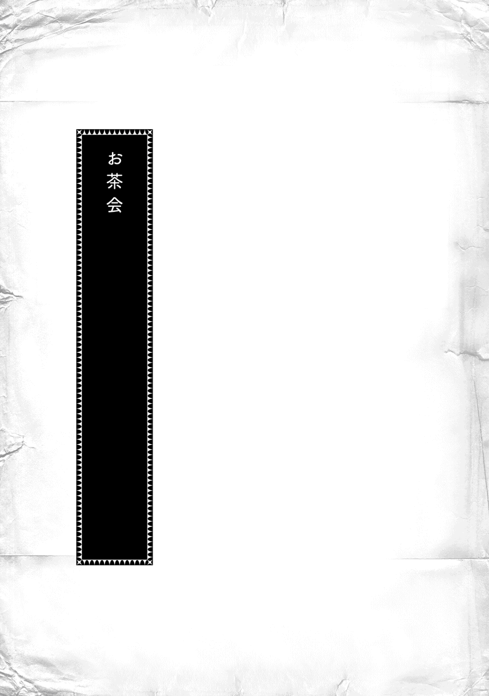

| 本好きの下剋上～司書になるためには手段を選んでいられません～第三部「領主の養女IV」 | |
| 香月美夜 | |
| TOブックス (2017) | |
春は恋が芽生える季節! ローゼマインの側近や専属達が何だか色めき立って、衣装を作ったり、お披露目したりと華やいだ様子。神殿の工房では新しい印刷機もついに完成し、本作りは広がりを見せていく。絵本に、楽譜、騎士物語等、様々な本を販売するにまで到った。今後の領地内における印刷業の拡大を見据え、まずは製紙業を広げることに。ローゼマイン一行は紙の作り方を教えたり、新素材の研究をするため、イルクナーへ向かう。少しずつローゼマインを取り巻く環境が改善される一方、現領主の姉が来訪したことで、エーレンフェストには不穏な空気が流れ始めるのだった。第三部完結へ向けて貴族達の想いが交錯する、ビブリア・ファンタジー転変の章！ 大増書き下ろし番外編2本+椎名優描き下ろし「四コマ漫画」収録！


イラスト：椎名 優 You Shiina
デザイン：ヴェイア Veia
プロローグ
春の半ばらしい爽 やかな風が吹き抜ける中、トゥーリは母親のエーファ、幼馴染 みのルッツとともに買い物に出かけることになった。エーレンフェストでは十歳になると、女性のスカートが膝丈 から脛丈 に変わる。そのため、十歳の準備には服を揃 える必要があるのだ。
また、十歳は洗礼式と同時に始まった見習い仕事の契約期間も終了する時でもある。同じ工房での契約更新をするのか、別の工房へ移動するのかなど、それぞれが選択しなければならない。人生にとって十歳は大きな節目 となる。
トゥーリは目標にしていた通り、十歳の契約終了を機に、ダプラ見習いとしてコリンナの工房へ移ることになった。両親を交えた正式な契約はまだ先なので口約束だが、ギルベルタ商会とコリンナの工房が、領主の養女ローゼマインの専属髪飾り職人であるトゥーリとの契約を反故 にすることはできない。そういう意味で、トゥーリは何の心配もせずに準備を進められる。
......夏になったらわたしもルッツと同じダプラ見習いだよ。
これまで一緒に仕事をしてきた友人達とは別れることになるけれど、自分の夢に近付いた達成感でトゥーリの足取りは軽い。弾む気持ちそのままに中央広場へたどり着いて、後ろから歩いてくるルッツとエーファを振り返った。
「それで、ルッツ。どっちに行けばいいの？」
「今日は工房の仕事服と一緒に、ギルベルタ商会の見習い服を注文するように言われてる。ローゼマイン様の専属として、トゥーリがギルベルタ商会と一緒に神殿へ行くには必要なんだってさ。服を買って荷物が増える前に注文した方が良いと思うから、コリンナ様の工房からだな」
今日ルッツが同行しているのは、ベンノの計らいだそうだ。トゥーリはベンノのそういう気配りがすごいと思う。
「付き合わせて悪いけど、今日はよろしくね、ルッツ」
「旦那様に頼まれたし、オレも夏の服が必要だから別にいいさ」
行く先を示しながら先を歩き始めたルッツに、トゥーリとエーファは付いて行く。中央広場を通り過ぎて街の北側に入ると、周囲を歩く人達の服装が高価な物になり、言葉遣いの丁寧な者が増えて上品な雰囲気に変わる。少し躊躇 うように周囲を見回しているエーファの姿を見て、トゥーリは自分がいつの間にか街の北側へ足を運ぶことに慣れていることに気付いた。コリンナの工房へ入る瞬間は今でも緊張するけれど、街を歩くことには特に緊張しなくなっている。ルッツの後を追って歩きながら、トゥーリは周囲を見回して「ふふっ」と笑った。
......わたしも他の人から見れば、北側に馴染んでるように見えるかな？
「何だよ、トゥーリ？ ニヤニヤして......」
「ルッツ、わたしね、トゥーリにはウチの工房に入ってローゼマイン様の髪飾りを作っていってほしいって、コリンナ様から直接勧誘されたんだよ。すごいでしょ？」
別の職場の者から勧誘されることがどれほど誇らしくて嬉しいことなのか、仕事をしていればわかるはずだ。ルッツは苦笑気味に「よかったな」と言ってくれたけれど、エーファの目は少し呆 れたものになっている。
「トゥーリ、そういうことはあまり外で言うことじゃないわよ」
勧誘を受けることが誇らしいことは職人達に共感してもらえる。実際にトゥーリの工房から別の工房へ移っていった職人達はお祝いされていた。けれど、トゥーリは街の南の貧民街から北側の工房へ移るのだ。普通では滅多 にあることではない。どちらかといえば、お祝いの言葉よりも周囲の嫉妬 が集まってくる。狭い街の中で生活をするには、余計な嫉妬をされない方が生きていきやすい。
エーファの注意を聞いたトゥーリは「わかってるよ」と頬 を膨 らませた。
「でも、いいじゃない。この辺りにわたし達の知り合いなんてほとんどいないんだから......」
友達が相手でもあまり大っぴらに言わない方が良いとトゥーリは肌で知っている。だからこそ、生活圏内では自慢したくても我慢してきた。本当ならば「コリンナ様の工房へ移れることになった」と話してお祝いしてほしかったけれど、曖昧 に質問をかわしている。
「先にギルベルタ商会に入っているルッツに言うくらいはいいじゃない。家の周りじゃ話してないよ。ラウラが今の工房の継続も難しいって言われて落ち込んでる時に、わたしはコリンナ様の工房へ移れるようになったんだよ、なんて言えないでしょ？」
トゥーリが髪飾りの件でコリンナの工房へ何度も招かれていることは、同じ工房で働いていた誰もが知っている。だから、トゥーリが移動するならばコリンナの工房だと少し考えればわかるだろう。けれど、トゥーリは家族以外にはわざわざ口にしていない。
「あ〜、ダルア契約の更新はそれぞれの努力の結果だけど、契約更新ができないヤツがいたら、さすがに言えないよな。オレは最初から商人見習いで、ダプラ契約をしたから店を変わることもない。途中で工房を変わって嫉妬される大変さはわからないけど、トゥーリが頑張ったのはわかるから」
何の嫉妬も入っていないルッツの言葉にトゥーリは少し気が楽になった。最近は契約更新の話が出る度に、何も言わなくても周囲から羨望 と嫉妬の眼差しばかりを受けていたので、変わらないルッツの態度にホッとする。
「途中で工房を変わる大変さがわからなくても、ルッツは最初の苦労が大きかったでしょ？」
ルッツは洗礼式の直後から街の北にある大店 に、親族の紹介もなく、家業でもない商人見習いとして入った。トゥーリが同じ職業で工房を移るだけでも様々なことが違って混乱しているのに、ルッツは洗礼式直後という年で、誰にも頼れない状態を切り抜けたのだ。
「ルッツが先にギルベルタ商会に入ってなかったら、わたし、コリンナ様の工房へ移ることなんて考えられなかったもん。ルッツはすごいよ」
「マインのおかげだよ。ギルベルタ商会に入れたのはマインが旦那様に交渉してくれたからだし、オレが店で自分を役立たずだと思わずに胸を張っていられたのは、青色巫女見習いの工房へ出入りできたからだ。ダプラ見習いの今だって領主の養女との繋がりがオレの立場を支えてる」
ルッツは「もちろんオレだって努力はしたけどさ」と軽く言いながら、トゥーリを見た。
「トゥーリだって同じだろ？ マインが最初に髪飾りの作り方を教えたから髪飾り職人になれた。領主の養女になったアイツがトゥーリの髪飾りを欲しいって言うからギルベルタ商会が取り込みに必死になる。一番良い髪飾りを作るためのトゥーリの努力は当然あるけど、最初の道を作ってくれたのはマインだ」
普通は領主の養女に売る髪飾りを、十歳にもならない見習いに任せはしない。領主一族の専属という立場は誰もが狙っているので、子供には分不相応 だと大人が取り上げるものだ。ギルベルタ商会がそれはしないのは、マインがトゥーリと会いたいと願う裏事情を知っているから。トゥーリが専属でいられるのは、マインの贔屓 があるからだとルッツは断言する。
「......そっか。そうだね」
碌 にお手伝いもできなくて、興奮しては倒れて、熱を出しては寝込んでばかりの妹の姿の方がトゥーリの頭には色濃く焼き付いているけれど、今の状況に至 れる道を作ってくれているのは確かにマインだ。
「オレが紙作りや印刷に関しては他のヤツに絶対に負けないようにするのと同じだよ。トゥーリだって気合い入れて技術を磨いて、誰にも負けない髪飾りを作っていかなきゃダメだ。もっと上手い大人が他に出てきて、トゥーリの髪飾りが明らかに見劣りするようになれば専属は外される」
領主の養女を差し置いて他の貴族女性に綺麗 な髪飾りを売ることは、店として絶対にできない。ギルベルタ商会が領主の養女を蔑 ろにしていると思われるようになってしまう。
「見劣りするようになればどうなるか、トゥーリにわかるか？」
「マインに会えなくなっちゃうんでしょ？」
「違う。そんなふうに繋がりを断って、アイツの怒りを買うようなことを旦那様やコリンナ様がするわけないだろう？ トゥーリは髪飾りの納品に今まで通り一緒に行けるさ。ただ、他人が作った髪飾りを、自分が作った物のように差し出さなきゃいけなくなる。嫌だろ？」
ルッツの忠告にトゥーリはコクリと頷く。それは絶対に嫌だ。専属で居続けるために努力し続けようとトゥーリは改めて決意した。
「あら、ルッツとトゥーリ。ベンノさんから連絡があって待っていたのよ」
コリンナの工房へ入れば顔見知りの職人が出迎えてくれた。
「事務的な手続きはルッツにしてもらうから、トゥーリは奥の試着室へ入ってさっさと採寸 を終わらせてちょうだい。あちこちで買い物をするから急がなきゃいけないんでしょう？」
早く早く、と職人に急き立てられて、トゥーリはエーファと一緒に奥の試着室へ入った。試着室には数人の針子達がいて、採寸のために服を脱ぐように言われる。
「トゥーリがここで働くための仕事着を作るなんて変な感じね。もう二年くらい出入りしてるから、今更？ と思ってしまうわ」
トゥーリが下着姿になると、採寸を始めた針子の一人が笑いながらそう言った。娘がすでに工房に馴染んでいるとその雰囲気から察し、エーファはホッとしたように微笑 む。
「春の終わりに改めて契約します。皆様、これからトゥーリをよろしくお願いします」
「今までは髪飾りの作り方を教えに来ていただいただけだけれど、これからは一緒に働く仲間になるのよね。こちらこそよろしくね、トゥーリ」
皆から歓迎されていることを感じて、トゥーリは不安が和 らいでいくのを感じていた。喜びの中に存在していた分不相応ではないかと怖気 づく心が少しずつ解けていく。
「神殿への納品に出入りするためにギルベルタ商会の見習い服も作るんでしょう？ だったら、こちらのサイズも計らなきゃダメね」
次々と自分の体にメジャーを当てられていくのがトゥーリには少し不思議な感じだった。今までマインやブリギッテの採寸を手伝ったことはあるけれど、自分の服を工房で注文して作ってもらうなんて初めてである。職業柄、トゥーリはわくわくしてしまう。
「トゥーリは成長が早いから、ちょっと余裕を持たせて作ってもらえますか？ そうしないと、すぐに着られなくなってしまうわ」
「では、スカートも少し長めにしておきましょうか？」
エーファと数人の針子達が話し合っているうちにトゥーリは服を着た。注文を終えると、よろしくお願いしますと試着室を出る。
「トゥーリ、服の採寸が終わったらこっちへ座れ。靴の職人が来てるからさ」
試着室を出ると、今度は革の靴を作るための採寸がされる。足のあちらこちらを触られるのはくすぐったくて、トゥーリは必死に笑いを堪 えた。
......採寸も大変なんだよってマインが言ってたけど、ホントにそうだった！
注文が必要な衣装の購入を終えると、今度はマインに服を買ってもらってから何度か利用している高級中古服の店へ移動した。ここで今度は街の北用の服を買うのだ。十歳らしい脛丈のスカートとボディスが必要になる。
「オレもいくつか服を買い足さなきゃいけないから、トゥーリはおばさんと一緒に自分の服を選んでてくれないか？」
ルッツがそう言って男性服が多いところへ行ってしまったので、トゥーリは「こんなところで服を買うの？」と困惑顔のエーファと一緒に女性服が並んでいるところへ移動した。
「ねぇ、母さん。このくらいの丈のスカートでいいかな？」
トゥーリが試着したスカート丈を見ていたエーファは楽しそうに微笑みながら立ち上がる。
「いいんじゃない？ スカート丈も今はちょっと長く見えるけど、秋にはまた大きくなっていると思うからこれくらいは必要でしょ」
トゥーリが次々と試着する服を見ているうちにエーファの緊張も解 れてきたようだ。
「ボディスも買わなきゃいけないでしょ？ トゥーリ、これはどう？」
トゥーリはエーファに渡されたボディスを身に付けてみる。前身頃 が二つに分かれているベストのような物で、十歳から女性は体の線を綺麗に見せるために身に付けるようになるのだ。トゥーリは前を紐でキュッキュッと締めて、ボディスを体にぴたりと沿わせていく。
「早く綺麗に着ようと思ったら練習が必要そうだね」
ちょっと大人になった気がしてトゥーリは鏡を見ながら体を左右に捻 ってみた。結構いい感じだと思う。えへっと笑っていると、エーファがボディスの結び目をトンと指先で押さえた。
「紐が緩まないように縛るのもコツがあるの。今のトゥーリの結び方じゃ動いているうちに解けるわよ。夏までに練習しなきゃダメみたいね。ボディスはそれで決定していいの？」
「うーん......。こっちの方が可愛いと思うけど、どっちがいいと思う？」
目についたボディスを手にしてトゥーリが尋ねると、エーファは表情を曇らせた。
「可愛いけど、こっちは仕事場で着るには少し派手すぎない？」
トゥーリとエーファがボディスを二つ体に当てながら悩んでいると、服を選び終わったルッツが会計の前に服をどさっと置くのが見えた。トゥーリは大きく手を振って声をかける。
「ねぇ、ルッツ。どっちがギルベルタ商会の見習いっぽいと思う？」
「トゥーリはダプラ見習いになるんだから、どっちも買っておいた方がいいぞ」
「どっちもって......そんなにたくさんはいらないよ」
一つあれば十分、とトゥーリが言うと、ルッツが首を横に振った。
「ダプラ見習いってことは、今までみたいに時々コリンナ様に招かれて街の北側へ行くんじゃなくて、そこで生活することになるんだ。これから夏だし、着替えが何枚も必要になる」
確かに生活することを考えると数着は必要だろう。トゥーリは「何枚もなんて無理だよ......」と服の値段を考えて血の気が引いてきた頭を抱える。エーファも気が遠くなったような顔になった。普段買っている中古服とは値段が全く違うのだから仕方がないだろう。
「......あ、金の心配はいらないから。アイツから預かってる」
そう言いながらルッツがつるりとしたカードを服の下から引っ張り出した。トゥーリが望んだ道へ進めるように、これから先も家族と関わりを持てるように、マインだった時の貯金を使うように言われているそうだ。
「ちょっと、ルッツ。マインってどれだけ稼いでたの？」
「こっそりと最近の稼ぎも加えてるみたいだから、オレも詳しくは知らねぇよ。それに、今は規模が広がってもっとすげぇからな」
ルッツはそう言いながら視線を逸 らし、「店に入ってから恥をかかないように、必要な物は気にせず買え」とトゥーリが持っていたボディスを二つとも会計のところに置いた。
「ボディスとスカートはもう一つ。ブラウスもあと二つか三つは必要だと思う」
更に選ぶように言われて、トゥーリはエーファと二人で急いで選ぶ。会計のところにどんどんと積み上がっていくけれど、ルッツは当たり前の顔で「ギルベルタ商会へ運んでください」と店員に伝えて会計を終えた。
「他にも色々と買わなきゃいけないから、どんどん行くぞ」
ルッツがそう言って歩き出した。あれだけの買い物をしたのに、手ぶらで店を出るのもトゥーリにとっては驚きだが、服を大量に買ったのに「色々と買わなきゃいけない」という言葉にも目を丸くしてしまう。
「え？ 色々って？ もう服は買い終わったよ？」
「服の他にも新しい仕事道具や文具類が必要だって思い出したんだよ。ダプラ見習いになるなら部屋がもらえるだろ？ 食器も必要になる。日用品はいつでも買えるから追々 でも大丈夫だけど、オレが一緒に行ける時に揃えなきゃこのカードが使えないんだ」
自分がギルベルタ商会に入った時に購入した物を思い出しながら、ルッツはあちらこちらの店へ連れて行ってくれた。自分のペンやインク、木札を買って、ギルベルタ商会で他のダプラと一緒に食事ができるように食器を揃える。今までのトゥーリには考えられないような買い物ばかりだ。
「ルッツがいてくれて助かったわ。わたしにはわからないから」
エーファが疲れ切った顔でそう言って頭を横に振った。トゥーリの希望通り、街の北側にあるコリンナの工房に移れることになってよかったとエーファは素直に思う。けれど、仕事着にせよ、仕事道具にせよ、そこに合わせた物が必要だ。何が必要なのか、どの程度の品物を皆が使っているのか、エーファにはわからない。ギルベルタ商会の見習い服を着ているルッツを同行させてくれ、マインのお金を預かってきてくれたベンノの心配りに感謝するしかない。
「こんなに早くトゥーリも家を出ることになるなんて、ね」
日用品を揃えていくことでエーファはそれを強く実感した。夏からは今までと全く違う生活になるのだ。マインといい、トゥーリといい、エーファの子供達は巣立ちが早すぎると思う。
「わたしも家を出るのは不安だけど、ルッツがいるからまだ大丈夫だよ。ね？ ルッツ」
慰 めるようにエーファの腕を軽く叩き、トゥーリが呼びかけると、ルッツは「......いや、いつまでも一緒じゃないと思う」と難しい顔になって腕を組んだ。
「え？ どういうこと？ ルッツ、ギルベルタ商会を辞めちゃうの？」
ダプラ見習いは辞められないのに何を言い出したのか。トゥーリとエーファが目を丸くしてルッツを見つめる。二人から説明を求められたルッツは周囲を見回しながら声を潜 めた。
「まだ他には言わないでくれよ。トゥーリはこれからギルベルタ商会の見習いになるってわかってるから言うんだからな」
何度も念を押した後、ルッツはギルベルタ商会の関係者がほとんどいない貧民街まで戻ってからゆっくりと口を開いた。
「旦那様はギルベルタ商会から紙作りとか本作りを切り離して独立するつもりらしいんだ」
ギルベルタ商会は印刷や製紙業など、服飾に全く関係のない新しい分野で稼ぎすぎているらしい。それは領主の養女の要望で始まった事業で、これから更に拡大するのが目に見えている。
「アイツが養女になってからの業績の伸びがすごすぎた。おまけに、新しい流行になりそうな衣装も考案されただろ？」
ブリギッテのための衣装は今コリンナが一生懸命にデザインをまとめているところだ。あの衣装が一気にお貴族様の間で流行 ることになれば、ギルベルタ商会は更に上向くことになるだろう。それはトゥーリにもわかる。
「他の店も何とか新しい事業に食い込んで利益を得ようと必死で、大店の店主が集まる会議では旦那様が結構色々言われてるみたいなんだ。ギルベルタ商会を服飾の店として守るためには、印刷や製紙業を独立させて利益を分けていくしかないんだよ」
「ふぅん？ たくさん稼げるのはいいことじゃないの？」
店を守るためと言われても、トゥーリにはピンと来ない。
「いいことだけど、他の店に嫉妬されると色んなところで面倒ってこと。トゥーリが工房を移るのはいいことでも、他のヤツに嫉妬されたくなくて対策を練るのと同じだ」
そう言われると合点 がいった。他からの嫉妬を避けるのはとても重要だ。
「それに、旦那様は新しい店を作って、いざという時にはアイツに付いて行く気でいる。印刷の後援者で、最大の顧客 だから。アイツがいなきゃ始まらないし、発展しない。地縁 よりローゼマイン様の熱意の方が印刷業には大事なんだ」
結婚によって貴族は他領へ出ることも多い。全くないとは言えない。エーレンフェストは他の領地に比べると弱いから、領地を出て行かざるを得ないこともあり得るそうだ。そういう時に新しい印刷の店は専属として付いて行けるようにしたいらしい。
「でも、ギルベルタ商会はそうじゃない。今までの顧客との繋がりや信頼がある。ローゼマイン様だけが顧客じゃないから全部の仕事を放り出して付いては行けない。コリンナ様は地縁を大事にしている。だから、ギルベルタ商会はたとえアイツが移動しても動かない」
「わたしは一緒に行きたいよ!? 」
ギルベルタ商会が今までの顧客の繋がりを全て捨てられないことはわかる。けれど、トゥーリは「ローゼマイン様の専属」であるためにギルベルタ商会と契約をするのだ。一緒に行けないのは困る。
「ダプラは店に縛られるから、ダルア契約にした方がいいってことだよね？」
「いやいや、そうじゃない。別に他領へ移動すると決まったわけじゃないからな。もしも、の話だ。それに、できるならダプラ契約をしておいた方がいい。色んな面で扱いが変わってくる。貧民出身で後ろ盾 らしい後ろ盾がないオレ達にとってダプラ契約は大事だ。周囲の目が全く違う」
ダルア見習いからダプラ契約をしたルッツが言うならば、仕事面ではダプラ契約をした方が良いのは間違いなさそうだ。トゥーリはグッと奥歯を噛 みしめる。
「そりゃあ、わたしだってダプラ契約がしたいよ。でも、わたしの夢はギルベルタ商会に入ることじゃないもん。......一流の針子になって、いつか服を作ってあげるって約束したんだよ」
トゥーリの夢は一流の針子になることだ。領主の養女になる寸前のマインと交わした最後の約束を果たすことが一番大事なのだ。
ポンポンと軽く肩を叩かれ、トゥーリは顔を上げた。エーファが少し困ったような笑顔で見下ろしている。
「トゥーリ、一人で悩んでいても仕方がないわ。コリンナ様に相談しなきゃ。契約はまだ終わっていないんだもの。どうするのが一番トゥーリにとって良いのか、よく考えましょう」
エーファに宥 められてトゥーリはコクリと頷く。家に向かって歩きながら、そっと息を吐いた。
......ダプラ契約をするかどうかで悩むことになるなんて思ってもみなかったな。
新しい衣装
「ローゼマイン様、孤児院長室へ向かいましょう。モニカが先に行ってギルベルタ商会を迎える準備をしてくれています」
今日は型を取るための安い布の準備ができたので、実際にブリギッテの体に当てて裁断をすることになっているのだ。一緒に孤児院長室へ向かうブリギッテも心なしか楽しみにしているように見えた。コリンナとトゥーリもやってくるので、わたしの心も弾んでいる。
......トゥーリとルッツに会える。うふふん、ふふん。
「おはようございます、皆様。お待たせいたしました」
孤児院長室にはすでにギルベルタ商会の面々が到着していた。ベンノ、ルッツ、コリンナ、トゥーリ。それに加えて針子が数人、玄関ホールにいる。前もって話は聞いていたけれど、実際にこれだけの人がいると予想以上の人口密度だ。少しばかり手狭に感じてしまう。
「早速裁断ができるように移動しましょう。男性のおもてなしはフランに任せますね」
挨拶を終えると、わたしはモニカに目配せをして隠し部屋へ移動する。ブリギッテ、コリンナ、トゥーリ、数人の針子が裁縫 道具やいくつもの包みを抱えて付いてきた。
「では、こちらへどうぞ。モニカは一緒に入ってちょうだい」
「かしこまりました」
貴族女性であるブリギッテに合わせて裁断するのだから、隠し部屋に入れるのは女性だけだ。ブリギッテには服を脱いでもらって、裁断のための準備をしてもらう。出入り口の近くには布をかけた衝立 を置いて、扉を開けても見えないように針子達が慌ただしく動き始めた。
簡易鎧を魔石に戻し、針子達に手伝ってもらいながら下に着ていた服を脱いだブリギッテが、別に持っていた魔石のうちの一つを変化させ、体の線に沿うようにして固め始めた。これで肌に針が刺さることもなく、立体裁断ができるらしい。
「魔石で作る騎士の鎧の基本となる物で、貴族院に入ると誰もが習うのです。騎士は一見鎧を付けていないように見える晴れ着の時も、いつでも戦えるようにきらびやかな衣装の下にこれをまとっております」
貴族が衣装の下に着込んでおく防弾チョッキのような役目も果たすそうだ。荒れている領地では突然の攻撃を防ぐために、文官や側仕えさえ身に付けておくのが常識になっているらしい。領主一族のわたしが身にまとっていないことからも、エーレンフェストがいかに平和なのかよくわかる。
......これでがっちり固めていれば、ボディースーツもブラジャーも必要ないよね？
わたしは貴族になった後、母親などの年上の女性と同じ部屋で過ごしたことがないので、大人の女性の下着事情が全くわからない。だが、魔石で固めることができれば補正下着は必要なさそうだ。きっちりとボディスで上半身を締めている平民の方が衣類の技術は発達していそうな気がする。
......うーん。でも、ちょっと微妙。魔石でつるりとした感じで固められた上半身に、下はドロワーズって色気が全くないよ。
麗乃 時代の感覚を引きずっているせいでそう思うだけかもしれないけれど、ガーターベルトが似合いそうな引き締まった脚線美がドロワーズで見えないなんてもったいない。自分が子供で、色気のある下着を麗乃時代を含めて今まで必要としたことがないので、意識の中に浮かばなかったけれど、これは下着革命も必要かもしれない。
......こんなメリハリたっぷりのナイスバディな美人さんがドロワーズなんて悲しすぎるよ。
でも、戦うことを第一にする騎士はスカートが捲 れても平気な状態にしておかないとダメなのだ。そのための足首まである長さで、ズボンのように色気のないドロワーズである。色気を出して女性騎士が戦えなくなっては意味がない。
......実用性か、色気か。ぬぅ、難しい。
他人の下着について真剣に悩むわたしの前で、コリンナと数人の針子達がブリギッテに布を当て始めた。木札に描かれたデザインを基に布を折り込み、ひだを作って針で留めたり、大胆に鋏 を入れていく。その間、トゥーリは針を渡したり、言われた物を取ったりしながら、皆の仕事を真剣な目でじっと見つめていた。少しでも多くのことを吸収しようとする姿勢が嬉しくて、心の中でいっぱい応援しておく。
ブリギッテの衣装ができていく過程はすごく気になるけれど、じぃっと見ているわけにもいかない。時間もかかるので、終わり際を見せてもらおう。
「モニカ、裁断が終わったら知らせてくださる？ わたくし、ベンノとも話さなければならないことがあるの」
「かしこまりました」
モニカに扉を開けてもらい、わたしは一人で隠し部屋を出る。二階の部屋にいるのはベンノとルッツ、側仕えのフランとギル、護衛 騎士のダームエルだけで、多少わたしの素が出ても問題のない顔ぶれになっている。
「では、裁断が終わるまで、ベンノのお話を伺 いましょう」
わたしは椅子に座って、フランの淹 れてくれたお茶を飲みながらベンノを促 した。
「まずは、お礼申し上げます。ローゼマイン様のお引き立てにより、貴族の方々との取引が大幅に増えました。心より感謝いたします」
口では礼を言っているけれど、ベンノの赤褐色 の目は「くそ忙しいんだよ」と言っているようにも見える。貴族との繋がりができて、売り上げが上がって、商人としては嬉しいのも本音だろうけれど、死ぬほど忙しいのも本当だろう。
「......あのぉ、ベンノさん。遠回しだとわからないんです。本音を伺っていいですか？」
周囲を見回しながらわたしが言葉を崩して質問すると、ベンノもフランとダームエルの様子を見ながら「何だ？」と言葉を崩した。
「わたし、何だかギルベルタ商会の仕事を増やしすぎてしまったようですから、あまり大変なら、他に仕事を回しましょうか？」
「くぉら、余計な気を回すな。お前がウチを切ったと思われるだろう、阿呆 。インゴの時と同じ失敗をする気か？ ギルベルタ商会を窮地 に陥 れたいのか？」
「滅相 もございません！」
「どんなに忙しくてもウチの仕事を他に回すつもりはない。それは肝 に銘 じておけ」
わたしがギルベルタ商会を切ったように周囲から思われては、元も子もない。ベンノ達の仕事を減らせるように気を回すのは止めた方が良さそうだ。
「お二人とも、いくら事情を知る者ばかりとはいえ、もう少し取り繕 ってください」
フランの苦言に、わたしとベンノは顔を見合わせて軽く肩を竦 めた。
「ローゼマイン様、これからも、ぜひ、ギルベルタ商会をお引き立ていただけますよう」
「えぇ、もちろんです」
「それから、本日の本題なのですが......。ローゼマイン様、ギーベ・イルクナーと交流を持ちたいとハッセで伺いましたが、詳しくお聞かせいただいてもよろしいでしょうか？」
ベンノのやや目を細めた笑顔が怖い。明らかに「また仕事を増やす気か？」と目が言っている。けれど、他に回すなと釘を刺された以上、仕方がない。仕事を増やすことになる話を始めた。
「イルクナーは山が多くて林業が盛んな土地だそうです。わたくしが知らない木材もたくさんあるようですから、新しい紙の研究のために一度イルクナーを訪れたいと考えています」
「......それは、イルクナーで紙を作るということでしょうか？」
「そうなりますね。ルッツとギル、それから、共に紙を作れるように灰色神官を何人か付けるつもりです。......難しいかしら？」
お伺いを立てると、ベンノが非常に困った顔になった。
「難しいです。ギルベルタ商会から向かうのがルッツだけでは心許 ないのですが、ルッツと共にイルクナーへと向かわせられる人材がギルベルタ商会にはいないのです。貴族相手の商談が増えている今、私が動くこともできませんし、一人で貴族の相手ができるマルクを長期間遠くへやることもできません」
それ以外の者では土地持ちの貴族の相手ができるかがわからない。わたしはギルベルタ商会の人達に詳しくないけれど、城での販売に灰色神官達を貸し出したことからも人手不足は推測できる。
「オットーはまだ貴族との交渉に出さないのですか？」
先日の父さんからの手紙に、「オットーが兵士を辞めて、本格的に商人となる」ということが書かれていた。今年の予算関係の仕事が終わったら辞めるということだったので、祈念 式が終わって春の半ばになっている今はもう兵士を辞めていると思う。
「オットーは商売の知識については問題ありません。ですが、平民相手の商売ならばともかく、貴族の前に出せるほど、動きが洗練されていないのです」
「下級貴族ならば問題ないと思います。門でも貴族の対応は任されていたでしょう？ 肝心 なのは慣れですよ。下級貴族へ対応させて慣らしていくしかありませんね」
父さんでも門を通る貴族に全く対応ができないわけではないのだ。商人と門番で求められる対応が同じとはいえないけれど、オットーならば少し慣れれば何とかなると思う。
「マルクとオットーを組ませて、ベンノはオットーの補佐役と回るようにしたり、他の人材を連れて歩いたりするところから始めればいかがですか？」
わたしにだってできたのだ。本気になれば上級貴族の立ち居振る舞いも季節一つあれば覚えられると思う。きっちりと教えられる教師役がいれば、の話だけれど。
難しい顔をしていたベンノがわたしとフランを交互に見た。
「レオンの給仕を仕込んでいただいた時のように、オットーとその補佐をするテオの立ち居振る舞いもこちらで仕込んでいただけますか？」
「フラン、どう思って？」
わたしはレオンの教育に携 わったフランに意見を聞く。ここで貴族相手の立ち居振る舞いを教えられるのは、領主一族であるフェルディナンドの教育を受けた灰色神官だけだ。わたしに動かせるのはフランとザームだけである。
「そうですね。近々ザームが正式にローゼマイン様の側仕えとなりますから、多少の余裕はできます。ニコラとモニカの振る舞いについて教育するつもりなので、孤児院長室で二人の教育と同時に行うならば可能です。本当に立ち居振る舞いしか教えることはできませんが......」
フランの言葉にベンノが緩く頭を振った。
「いいえ、その立ち居振る舞いが大事なのです。貴族に対する挨拶、物の扱い、言葉遣い、平民にはなかなか知る機会はございません」
以前も、ベンノは貴族への立ち居振る舞いを教えてくれる者を探すのは難しいと言っていた。お金を積んでもなかなか見つからないのだ、と。なので、わたしもお金を積んでも得られない人材を報酬に要求しておく。
「では、今回の授業料としてオットー達が立ち居振る舞いを学んだ暁 には、マルクとルッツをイルクナーに派遣してくださいませ」
「......かしこまりました」
オットーとテオの教育をフランが引き受けることになった。教育期間については、またルッツを通して知らせるということで決定する。
「最後に、ルッツ、ギル。ローゼマイン様にご報告を」
二人がベンノに向かって「はい」と歯切れよく返事をし、わたしの方を見た。ニッと二人で顔を見合わせて笑った後、真面目 くさった表情でわたしに報告してくれる。
「ザックが設計し、インゴとヨハンが作製していた新しい印刷機が完成しました」
「まぁ！」
わたしがガッと立ち上がろうとするのをフランが即座 に肩を押さえて止めた。笑顔でゆっくりとわたしの肩を押して、元の位置に座るように指示する。
......ごめんなさい。興奮してお嬢様の立ち居振る舞いが一瞬吹っ飛びました。
「ローゼマイン様には試運転を見ていただきたいと思います。印刷する物を決めていただいてよろしいですか？」
わたしは今すぐにでも見に行きたかったが、遠回しに全員から止められた。代わりに、試運転できるように印刷するための原稿を出せ、と言われる。
「ローゼマイン様、何を印刷されますか？」
ルッツの質問にわたしは身を乗り出して答える。
「あの印刷機は今までの絵本と違って、字の詰まった本を作るための印刷機なのです。ですから、絵本を卒業する子供向けの字の詰まった本を作りたいと思います」
貴族の間で語られている騎士物語を元に、騎士がどんな仕事をしているのか、子供達にわかりやすく、カッコよく書く。ついでに、挿絵 のモデルはフェルディナンドにしてもらい、麗 しくヴィルマに描いてもらって女性客を狙う。一石二鳥 である。「この物語は虚構 の作り話であり、登場する団体・人物などはすべて架空 のものです」と入れておけば大丈夫だ。フェルディナンドのクレームも怖くない。
「インゴに頼んであった活字ケースや植字 台、それから、ステッキやインテルはできていますか？ ヨハンに頼んであったセッテンやフォルマートなどはどうかしら？」
印刷に必要な小物の準備も終わっているかどうか尋ねると、ルッツは得意そうな顔で頷いた。
「インクの発注も終わっています。原稿があれば取り掛かれますよ」
......いやっふぅ！ 神に祈りを！
「なんて素敵！ 早速金属活字の使い方や印刷の仕方を教えなければなりませんね。活字ケースを移動させるのも大変ですもの。わたくしが工房に赴 いて教えます！」
「ローゼマイン様、それは......」
止めようとするフランを見上げて、わたしはふるふると首を振った。
「せっかくですから組版から解版 まで一通りやりたいのです。工房で作業してはならないことは存じていますが、ずっと印刷機を作るのが目標だったのですもの。一番に触ってみたいです」
わたしがグッと拳を握って主張すると、フランが仕方なさそうな顔で首を横に振った。ギルが「ローゼマイン様が止まらない」と肩を落とし、ルッツが腕を組んでわたしを見た。
「フランやダームエル様が工房に入る者を厳選 し、ローゼマイン様のお好きにしていただくのが一番でしょう。いずれにせよ、使い方を教えていただかなくてはわかりませんから」
「ルッツ！ やっぱりルッツがわたくしのことを一番よくわかってくれていますね！」
わたしが胸の前で手を組んで感激していると、「一通りやれば、多分落ち着くだろうし」と小声で付け足したのが聞こえた。
......うぐぅ。さすがルッツ。余計なことまでよくわかっている。
「印刷する原稿を準備したら、すぐに印刷機の試運転に参りますね」
「落ち着いてください、ローゼマイン様。倒れます」
「今から印刷を始めれば、夏の星結びの儀式に一冊目が出せるかしら？」
「本当にそろそろ倒れるから落ち着け。ここで倒れたら絶対に印刷機は触らせないからな」
最初は丁寧に止めていたルッツだったが、わたしが聞いていないことを悟 って、すぐさま脅 しへ言葉を変える。そこにルッツの本気を感じ取って、わたしはうひっと息を呑んだ。
「それは嫌」
わたしが深呼吸して呼吸を整えていると、隠し部屋の扉の辺りで魔石が光った。
「ローゼマイン様、モニカからの合図です」
「わかりました。わたくしは少しあちらの様子を見て参ります」
わたしは隠し部屋の中に入り、衝立の向こうに回った。細いピンをたくさん刺した状態だが、ブリギッテのまとう布がアメリカンスリーブのドレスの形になっていた。染めていない安い生地なので色が生成 りのせいだろうか、まるで花嫁衣装のようである。
「まぁ、素敵！ とても似合うわ、ブリギッテ」
去年の衣装よりは断然似合う。わたしはブリギッテの衣装を見ながら、ぐるりと一周する。デザインした通りに大体できているけれど、ちょっとしたところが気になるのは、やはり針子のコリンナにとっても初めてのデザインだからだろう。
「そうね......。コリンナ、ここはこのようにつまんで、胸の辺りをもう少しすっきりと見せてください。背中もこの位置にこうして......」
わたしの指示を聞いたコリンナがピンを外したり、付け直したりしながら、ラインを決めていく。この生地を元に型を作っていくのだから、皆の目付きが真剣だ。
上半身は布がぴったりとブリギッテに張り付くようで、胸のラインからウェストのくびれ、そこから腰へのラインが見事に出ている。そして、腰の辺りからはひだの多い、たっぷりと布を使ったスカート部分が広がっている。
女性騎士であるブリギッテのため、動きやすさを重視して、スカート部分の布はなるべく薄くて軽い物を使用しているのだ。布の量の割には、あまり重そうには見えない。
「ブリギッテ、窮屈 なところはないですか？」
「大丈夫です。肩を覆 う布がないので、腕を動かしやすいところが良いですね。いざという時には魔石で覆うこともできます」
華やかな衣装をまとっているのに、戦う時の利便性 しか口にしないブリギッテを仕事熱心だと褒 めるべきか、もうちょっと色恋について考えてほしいと訴えるべきか悩む。これで素敵な結婚相手を射止めてほしいのに、ブリギッテに全くその意識がない。
「......ダームエルをここに入れてもいいかしら？ この衣装、わたくしはブリギッテにとても似合っていると思うけれど、貴族の男性側の意見も知りたいのです」
「そうですね。この衣装を他の女性騎士が着ることについてわたくしも尋ねたいです」
ブリギッテが嫌がらなかったので、わたしはダームエルを呼ぶために一度隠し部屋を出る。
「ダームエル、こちらにいらしてください」
「何でしょう？」
「男性側の意見が欲しいのです。新しいブリギッテの衣装をどう思うのか聞かせてください」
ダームエルはよくわからないというように首を傾 げた。
「......貴族男性にあまり受け入れられない衣装ならば、作るのは止めておいた方が良いと思いませんか？ ブリギッテはたとえ気が乗らなくても、わたくしが考えたというだけで我慢して着てくれそうですから、男性貴族の代表として忌憚 のない意見が欲しいのです。わたくしの感性がずれているせいで、ブリギッテに恥をかかせるわけにはいかないでしょう？」
わたしの言葉にダームエルは表情を引き締めて了承 してくれた。ある意味、ダームエルはわたしの色々な暴走を近くで見ている。他との常識のずれをよく知っているのだ。ブリギッテが恥をかくような事態は阻止 してほしい。
「ダームエルを入れます。ブリギッテ、大丈夫ですか？」
「えぇ、どうぞ」
わたしの後ろをダームエルが付いて来る。衝立を回った瞬間、ダームエルの足が止まった。ひゅっと息を呑んだ音が聞こえて、わたしは振り返ってダームエルを見上げる。
「ダームエル？」
わたしが声をかけても、ダームエルからの反応はない。驚いたように灰色の目を軽く見開いたまま、ブリギッテを食い入るように見ている。わずかに開いた口元から、ハァと小さな吐息 が漏 れた。眩 しそうにダームエルの目が細められ、ゆっくりと口元が笑みの形になる。
......わたし、今、人が恋に落ちる瞬間を目撃したようです。
ブリギッテに見惚 れて動かないダームエルの様子にコリンナや針子達までが気付いて、生温かい視線を向け始めた。「春は芽生えの季節ですものね」と、とても微笑ましいものを見る目がダームエルに注がれているのがわかる。恋に落ちた瞬間を目撃した皆と一緒にニヤニヤしたい気持ちと、固まったままのダームエルを「バレバレだから告白しちゃうといいよ」と後ろから突き飛ばしたい気持ちがぐるぐる混ざる。
「ダームエル、どうですか？」
「え!? あ、あぁ......」
わたしがマントをくいくいっと引っ張ると、ダームエルはハッとしたようにわたしに視線を向け、ブリギッテを見てから表情を取り繕うように咳払 いした。
「コホン。......その、いいと思う」
......照れていないで、もっとはっきり言わなきゃ褒め言葉は伝わらないよ！ ほら、頑張れ！
心の中で叱咤激励 してみるが、ダームエルは基本的にヘタレだ。真っ直ぐにブリギッテを見ては言えないのか、やや視線が逸らされていて、それ以上の褒め言葉が出てこない。もう一声、と周囲が見守っているけれど、ダームエルの口からそれ以上の言葉はなかった。あちらこちらへ困ったように視線を動かすだけだ。
「ローゼマイン様が考えてくださった衣装ですが、他の女性騎士にも勧められそうですか？」
ブリギッテが自分の衣装を見下ろしながらそう言うと、ダームエルは「うん、まぁ......」と曖昧に頷く。もっとはっきりとした意見が欲しいけれど、恋で頭がとろけてしまったダームエルはあまり役に立たなそうだ。
「問題がなさそうならば、このままブリギッテの衣装を仕立てさせましょう。裁断は終わりにするから、ダームエルは出てちょうだい」
わたしはそう言ってこの場を締めると、ダームエルを隠し部屋から追い出した。パタリと扉を閉めて、そろそろとブリギッテの様子を窺 う。あれだけ態度や視線があからさまだったら、当人であるブリギッテにわからないはずがない。
「......えーと、ブリギッテ」
周囲を針子に囲まれているブリギッテに声をかけると、ほんの少し照れたような顔でブリギッテが微笑んだ。
「ダームエルはわかりやすいですね。男性にあのような目で見られたのは初めてですので、少し面映 ゆいです」
......いやいや、あれだけあからさまな人がいなかっただけで、ブリギッテは美人さんだから、絶対に他にもいたよ。
家族や領地のことと、戦うことしか考えていないブリギッテの視界に入らなかったのか、婚約していた相手しか目に入っていなかったのか、どちらかだと思う。
「ブリギッテは、その、ダームエルのことは......」
「ダームエル自身は悪くないと思っているのですよ。イルクナーを乗っ取るような性格でもありませんし、次男で爵位 も持っていないので身軽ですし、基本的に真面目ですから。それに、ローゼマイン様の気に入りの騎士という意味ではイルクナーにとって悪い条件ではないのです」
これは意外と好感触ではないか、とわたしが目を輝かせたところで、ブリギッテはニコリと笑った。
「ただ、魔力の差が大きいので対象外です」
綺麗な笑顔であっさりバッサリ切られた。そういえば魔力差が大きいと子供ができないので、わたしは平民のままでは結婚できないとフェルディナンドから聞いたことがある。魔力差が大きいと貴族同士でも恋愛対象から外れるようだ。
......恋をしたその場で対象外確定って、あまりにも不憫 すぎる。
わたしの祝福でダームエルの魔力は少しずつ伸びているらしいけれど、正確にどのくらい伸びていて、あとどのくらい足りないのかはわからない。頑張ればブリギッテの恋愛対象に入れるのだろうか。ちょっと考えてはみたけれど、わたしのように恋愛経験もない上に、こちらの常識もない人間が、他人の色恋沙汰 に首を突っ込んでも碌な結果にならないと思う。心の中でこっそりと応援するだけに止めておこう。
......魔力問題をなんとかすれば道は開けるかもしれないよ。頑張れ、ダームエル。
新しい印刷機の試運転
「さて、どのお話にしようかな？」
ギルベルタ商会の皆が帰ると、わたしは神殿長室へ戻って机に向かった。印刷機の試運転のため、文字の詰まった本を印刷するため、ガシガシと原稿を書かなければならない。
冬の間に子供達から聞いて、書きとめたお話の中に騎士の話がいくつかある。それを下敷きにすれば原稿を書くのはそれほど難しいことではない。
「最終的には騎士物語集にできるように短編から印刷してみようかしら？」
「試運転ですから、短い文章から始めれば良いのではありませんか？」
ギルと相談しながら、わたしはどのお話を印刷するか選んでいく。騎士が魔物退治をして、取った魔石を意中の女性に贈ってハッピーエンドというお話を書き始めた。
数日後、それほど長くはない騎士物語の短編が完成した。七の鐘が鳴ると、側仕えから一日の報告を聞く時間になる。わたしは報告に来たギルとフリッツに騎士物語の完成を告げる。
「ギル、フリッツ。騎士物語の原稿ができました。子供達の工房への出入りを制限するため、晴れた日の午後に組版を行います。予定をルッツに伝えてちょうだい。それから、工房で作業に立ち会う者はフランとも相談して決めてください」
ギルが「かしこまりました」とハキハキした声で答えると、少し考え込んでいたフリッツは穏やかな濃い茶色の目を柔らかく細めた。
「ギルは組版をしたいでしょうから、私が孤児院の子供達を森へ連れ出します。私の分もローゼマイン様のおっしゃることをよく聞いて、やり方をきちんと覚えてください」
「任せてください。......イラストはできたのですか？」
「今回は文字だけを印刷するのでイラストの完成を待つ必要はありません。イラストはこれまでと同じようにガリ版印刷をする予定です。あ、でも、ヴィルマにイラストのお願いに行くつもりなので、先触 れを出してくださいませ」
次の日の午後、わたしは仕上がった原稿を持っていそいそと孤児院へ向かった。ヴィルマにイラストを依頼するためだ。
「ヴィルマ、この騎士物語の挿絵を描いて欲しいのです。神官長の顔を参考に」
「......ローゼマイン様、そのようなことをしたら、また神官長からお叱 りを受けますよ」
心配顔でヴィルマがわたしを見つめる。しかし、わたしには伝家の宝刀 がある。
「大丈夫です。あくまで参考にするだけですから。物語の騎士と神官長は別人です。名前も違いますし、この物語は虚構の作り話であり、登場する団体・人物などはすべて架空のものです、ときちんと本に明記しています」
「まぁ。......本当に、次から次へとよく考えられますね」
呆れたように目を丸くした後、ヴィルマは少し上へ視線をやって、うーんと考え込んだ。
「では、髪形を変えるなどの工夫をして、少し別人に見えるように描いてみましょう」
「ヴィルマ、ありがとう存じます」
「神官長の絵を描くのは楽しいので、禁止が悲しかったのはわたくしも同じですから」
フフッと共犯者の笑みを浮かべると、ヴィルマは挿絵を請 け負 ってくれた。
「挿絵は文章を全て刷り終わった後、ガリ版印刷で行います。それから、一ページ全て挿絵に使うので、字を入れる場所や大きさを考える必要はありません。挿絵はすぐに入れるわけではありませんから、あまり急がなくても大丈夫です」
「かしこまりました」
わたしがヴィルマとの話を終えて立ち上がると、邪魔 にならないように食堂の隅で遊んでいた子供達が駆け寄ってきた。
「ローゼマイン様、新しい絵本を作るのですか？ 今度はどのような絵本ですか？」
わたしが祈念式に行っている間に秋の眷属 の絵本は全て仕上がり、今は冬の眷属の絵本が工房で作られている最中である。そんな状況で新しい本の内容が気になるのだ。わたしの「孤児院の子供達を本好きに育てよう計画」はなかなかうまくいっているらしい。
「ふふっ、冬の眷属の絵本を作った後は騎士物語の本を作ります。今度は字がたくさんになるのですけれど、皆に読めるかしら？」
「絶対に読めるようになります。新しい言葉を覚えるのも楽しいですから」
「騎士物語は貴族の子供達から集めてきたお話を本にしたものです。いつか孤児院の皆が新しい本を書いてくれるようになるのを、わたくしは楽しみにしています」
「字が上手に書けるように練習します」
やる気に満ちたいくつもの目に見つめられ、わたしはとても嬉しくなった。このまま本好きがたくさん育って、大きくなったら色々な本を作ってほしい。孤児院の子供達に文字を教えて、読書の楽しさを教えるのは、わたしが将来読む本を増やすための先行投資なのである。
待ちに待った組版の日。初めての組版にうきうきしながら、わたしは午前中の仕事を終えた。できるだけ手早く昼食を済ませて工房へ向かいたくて仕方がない。急いで食べながら、わたしは給仕をしてくれているフランに声をかけた。
「フラン、午後から工房へ向かうから、汚れても良い服に着替えたいのですけれど......」
わたしの要望にフランは困ったように眉尻 を下げる。
「ローゼマイン様。大変申し訳ございませんが、本来は領主の娘が自らの手で作業をすることはございません。ですから、汚れても良い服など準備されていないのです」
「え？ でも、インクの汚れが付いたら落ちないと思うのですけれど、よろしいのですか？」
わたしは普段使いにしている神殿長の白い衣装を摘 み上げる。白い衣装に黒のインクが付いたら大変だと思うし、神殿長が汚れた服を着ている方が良くないと思う。わたしの神殿長服を見ながらしばらく考え込んでいたフランが口を開いた。
「孤児院長室に巫女見習い時代の衣装をいくつか置いてあります。そちらはどうでしょう？ ただし、お召替 えは孤児院長室で行い、神殿内はできるだけ神殿長の衣装をお召くださいませ」
神殿長室のクローゼットには神殿長服と領主の養女に相応 しい服しか置かれていない。孤児院長室は何度か立ち入ったけれど、自分で家具を開けることがないので衣装が残されていることを知らなかった。平民出身だったことを隠すために全て処分されていると思っていた。
「......残してくれていたのですね。ありがとう存じます、フラン」
わたしはモニカとダームエルと一緒に孤児院長室へ向かい、孤児院長室に保管されていたマイン時代の服に着替える。クローゼットにいくつか残っている服の中に、ギルベルタ商会の見習い服がある。懐かしさに胸がぎゅっと締め付けられる気がした。
「わたくし、この服に着替えますね。袖 がひらひらしていない服はこれだけですもの」
モニカが衣装を見回して、「それが一番作業向きですね」と頷いた。
わたしは懐かしい気持ちで見習い服に袖を通す。少しきついけれど、着られないこともない。きついということは、わたしも一応成長しているようだ。それがマインだった時との違いを際立たせているようで寂しくもあった。
わたしの着替えが終わる頃に、昼食を終えたギルがやってきた。
「わたくしはギルと一緒に工房へ行くので、モニカはヴィルマの手伝いをしてきてちょうだい。わたくしがお願いした絵の仕事があるので、多分忙しくしていると思うのです」
「かしこまりました。お任せください」
モニカを孤児院へと送り出し、わたしはギルとダームエルと一緒に工房へ行く。
「ローゼマイン様が組版で少々暴走しても大丈夫なように、皆を外に出しています」
今日はわたしが工房で作業できるように、フリッツが皆を森へ連れて行った。春になってから紙作りのために森へ向かうのは初めてのようで、子供達は大はしゃぎで出かけたらしい。準備万端だとギルが胸を張ると、全てに付き合わされるダームエルが苦い笑みを浮かべた。
「暴走しても大丈夫なようにするのではなく、暴走しないようにしてほしいものだ」
「本に関するローゼマイン様の暴走を止めるには英知の女神メスティオノーラの御力添えが必要です。ダームエル様には可能ですか？」
ギルは「そんな方法、自分は知らない」と遠回しに言い、ダームエルを見上げた。新しい印刷機を前にわたしが自重 できるわけがない。それがギルとルッツの共通の認識だそうだ。
「ならば、私も英知の女神メスティオノーラに祈りを捧げておこう」
ダームエルもわたしの暴走を止めるのは諦 めて神頼みをすることにしたらしい。
......どうせメスティオノーラに祈るんだったら。印刷技術の進歩を祈ってほしいんだけど。
そんなことを考えているうちに工房へ到着した。すでに中で道具を並べて準備を始めているルッツに声をかける。
「ルッツ、お待たせ」
「マイン!? ......あぁ、間違えた。違う」
わたしの声に振り返ったルッツがぎょっとしたように目を剥 いた後、ぶるぶると頭を振った。見習い服に驚いていることがわかったので、わたしはその場でくるりと回ってポーズを決める。
「ルッツ、どう？ 懐かしいでしょ？」
「懐かしいっていうより紛 らわしい。呼び方を間違えるから、今度から別の服にしてくれよ」
「作業できる袖の服がこれしかなかったんだよ。諦めて」
むすっとしているルッツにそう言いながら、わたしは植字台の前へ向かった。植字台から一番下の活字ケースを引き出し、並んだ金属活字のきらめきににんまりと口元を緩める。
「ルッツ、ギル。ステッキやインテルはどこ？」
「インゴやヨハンに作らせた小物は全部この段にまとめてある。どれが必要なんだ？」
びっしりと並べられたインテルやステッキを見て、うっとりとわたしは感嘆 の溜息 を吐いた。美しい。これで印刷ができるのかと思うと実に感動的だ。そのまま植字台に納められている全ての引き出しを確認しようとして、わたしは大変なことに気が付いた。
......わたし、植字台に届かない。
「ギル、踏み台を持って来てください」
「いや、それよりも活字ケースを作業台に並べた方がいいんじゃないか？ この台の前で全員並んで作業するのは無理だろう？」
ルッツの言葉に頷いて、わたしは二人に作業台の上へと活字ケースを並べてもらう。植字台の前でカッコよく作業したかったのに残念だ。
「じゃあ、組版を始めよう。えーと、前にも絵本の文章を印刷するのに、組版をしたことがあるでしょ？ やり方はほとんど同じなんだけど、これからは字がいっぱい詰まった本を印刷するので、一行の文字の数や行間を揃えて、読みやすくしなきゃダメなの」
わたしは印刷するための原稿をルッツとギルに渡す。
「ルッツはこのページ、ギルはこのページね」
作業台に原稿を置いて、わたしはステッキを手に取ると、二人にも渡した。ステッキは片手で持てるサイズの細長い木の箱だ。数行分の金属活字を並べていく場所になる。
「ステッキにインテルを置いてね。そう、この細長い木の板。この長さの分だけ活字を並べていくの。これで一行の文字数を決めるんだから、はみ出したらダメだよ。インテルが置けたら、セッテンを置いてね」
「なぁ、このセッテンは何のためにあるんだ？」
ルッツが薄い金属のセッテンを摘み上げて不思議そうな顔で裏と表を交互に見る。わたしはインテルの次にセッテンを置きながら、一文字目の活字を探し始めた。
「セッテンは金属活字を滑 りやすくするの。板の上を滑らせるより綺麗に滑って、揃えやすいんだって。あ、一文字目、発見」
わたしは活字ケースの中からお目当ての金属活字を探し出すと、上下が反対ではないか確認しながら、カチャンとステッキの上に置いた。
「必ずこっちから順番に探してね」
「わかった」
その後はただひたすらカチャカチャと金属が触れ合う音が響いた。一行目の活字が揃ったらインテルを置いてセッテンを引き抜き、次のインテルの横に並べ直す。その後はまた金属活字を並べていく。組版の作業はその繰り返しだ。
「うーん、どこだ？......あ、あった」
初めての作業なので、活字を拾っていくのに時間がかかる。ルッツとギルも目を凝 らしながら活字を探していた。数行分の活字が並んだら崩さないように気を付けてゲラに移し、また空になったステッキに活字を並べていく。その繰り返しだ。
「これは、とんでもなく時間がかかるな」
「慣れたらもっと速くなるよ」
そう反論しながら、わたしはせっせと版を組んでいく。けれど、元気が良かったのは最初だけだ。半分組み終わった時にはもうへとへとだった。小さい活字を睨 むようにして並べていくので、目がしぱしぱしてすごく疲れる。最初は快調だったけれど、一ページ分の活字を組み終わるのは、三人の中でわたしが一番遅かった。
一ページ分の活字を組み終わったら、活字が崩れないように解版糸で丁寧にきつく縛る。わたしは力がないので、上手くできなかった。仕方がないのでルッツに任せる。
「これでゲラが完成。組版は終わりだよ。次はゲラ刷りだね。ゲラ刷りは印刷機を使うから、インゴとザックとヨハンにも声をかけた方が良いかも。とりあえず印刷機への設置の仕方だけ説明しちゃうね」
わたしは組み上がったゲラを持って印刷機へ向かう。ヨハンが作っているので設計書通りだ。ゲラを置くための場所に丁寧に移す。見開きで印刷できるようになっているので、隣のページの部分にはルッツの組んだゲラを置いた。余白用のフォルマートを並べていき、ゲラの周囲の余白を作って木枠で固定する。これで準備は終わりだ。
「この後はここにインクを塗って試し刷りするの。紙はここに印があるでしょ？ 印に合わせて置いて、こっちの板で押さえてね」
紙を押さえるための蓋 をして、更に折り畳めば紙がちょうどゲラの上に来るようになっている。わたしは印刷機の設計図と実物を見比べながら使い方を説明していった。
「確かここのハンドルを回したら、台が動くようになってるはず......」
「どれ？ 貸してみろ」
わたしの力では回らないハンドルも、ルッツやギルの力なら回る。注文していた通りに台がすぅっと動いたことに感動した。印刷する上で最も力の必要だった圧縮盤 もてこの原理を使ってかなり楽に動かせるようになっているはずだ。
「それで、あのハンドルを動かせば印刷できるよ。今はインクを塗ってないから印刷できないけど、回してみて。前の印刷機に比べたらずっと軽く動くと思う」
大人が二人がかりで回していた前の印刷機と違って、新しい方はルッツとギルの力で動いた。
「軽いな。すごい！ 活字を拾うのが早くなれば、印刷がかなり楽になるぞ」
ルッツが新しい印刷機を見ながら緑の瞳を輝かせている横で、ギルは書字板に印刷の手順を書き始めた。二人が印刷の手順の確認をしたら今日の作業は終了だ。
「......大体わかりました。明日には工房へインゴ達を呼んで試し刷りを行います」
書字板に順番を書いていたギルが顔を上げた。ルッツがそれを覗き込んで軽く頷く。
「明日は神殿長らしく作業なしで見学だからな。今日の作業で多少は気が済んだだろ？」
「まぁね。明日はおとなしくしてるよ」
......おとなしくしているというよりは、今日の作業で疲れ果てたから明日は動けないという方が正しいと思うけど。
次の日、インゴとザックとヨハンがやってきた。今日は作業があるので、全員が作業着を着ている。わたしは一人だけ場違いに綺麗な神殿長の服を着て見学である。
「では、新しい印刷機の試し刷りを行いましょう。ギル、ルッツ。始めてちょうだい」
わたしの言葉に二人は頷くと、打ち合わせ通りにゲラ刷りを始めた。インクを塗って紙を置き、パタンと押さえて更に伏せる。ルッツがハンドルを回し、ギルが台を押して動かしてプレス機の下に台を押し込めた。皆が興味と緊張感を持って、二人の動きを見守っている。特に、職人達は眉間 に皺 を寄せた真剣な表情で二人の作業を見ていた。
てこの原理を利用したハンドルをぐいっと大きく動かせば、バンと大きな音がしてプレス盤が動いた。二人が台を引き出し、紙を挟んでいる板を外して紙を取り出す。片方のページしか印刷できなかった小さな孔版 印刷と違って、見開きの二ページが一度で印刷できていた。
「おぉ、ちゃんとできてる」
「へぇ、これが印刷か。......何を書いているのか知らないが、すごいな」
できあがった試し刷りを見て、職人達は揃って安堵 の息を吐いた。注文品が無事に完成したことで緊張感からの解放された表情に、わたしは小さく笑う。
「三人が力を合わせたおかげで、印刷機は素晴らしい物が仕上がりました。ギルベルタ商会に残りの支払いと協会へ報告をお願いしておきます。冬の間、大変だったでしょう？ どんなところが大変だったのかしら？」
緊張感から解放された職人達は自分の苦労について、それぞれ語ってくれる。
「ローゼマイン様にグーテンベルク認定されてから、冬がすごく忙しくなりました」
溜息混じりのヨハンの呟きに、わたしは頬に手を当てて、首を傾げた。
「ヨハン、すごく忙しいって......。それはわたくし以外の新しいパトロンが見つかったということかしら？ それなら喜ばしいけれど、グーテンベルクから外れても仕事はあるの？」
「うぐっ......」
まだ新しいパトロンは見つかっていないようで、ヨハンは気まずそうに視線を逸 らした。
ベンノからのお願い
「試し刷りができたら間違いがないか、原稿と見比べて校正します。できるだけ複数人で校正した方が良いですね。どうしても見落としがちになりますから」
誤字脱字などをチェックして、修正をかけて再度試し刷りだ。全てが直っていることを確認したら、一気に刷っていくことになる。印刷はそれの繰り返しだ。
「この印刷機には大変満足いたしました。ハッセにも印刷機を入れたいので、同じ物をもう一つ注文いたしますね」
「あ、ありがとうございます」
インゴとヨハンが引きつった笑みを浮かべた。設計だけを担当しているザックは、自分が蚊帳 の外に置かれていると感じているようで不満顔だ。
......ザックに設計図を描いてほしい物はいくつもあるんだけどね。
けれど、わたしが欲しいと思う物を一気に広げてしまうと、かなり広範囲に影響が出る。おまけに、どこが利益を得るかということで工房間で結構激しい争いになるはずだ。結果として、わたしの代理人として仲裁 に走ることになるギルベルタ商会の仕事が増えるだろう。
......専属の工房を片方に決められないのが問題なんだよね。
わたしはそっと息を吐いた。わたしはザックの発想と設計力を高く評価しているし、それを寸分違 わず作り上げるヨハンの技術も高く評価している。どうしても、二人に仕事を分けることになるのだが、工房間の利益争いは結構激しいらしい。
......一つの工房になれば楽なんだけど。
むーん、としばらく考えてたわたしはザックにすっと視線を向けた。
「ねぇ、ザック。ザックが新しい工房の親方になるためにはどうすればよいのかしら？」
ザックが「はぁ!? 」と目を丸くしてわたしを見た。一体何を言っているのか、とインゴとヨハンも珍獣 を見るような目でわたしを見ている。常識外れのことを言ってしまったようだ。わたしは急いで自分の思考の流れを説明する。
「ザックとヨハンが組んで工房を作れば、わたくしの注文がとてもしやすいと思ったのです」
一つの工房を専属に決められないなら、自分の専属職人ばかりを集めた鍛冶 工房を作ってしまえばいいんじゃない？ と単純に考えただけだ。
「今はヨハンとザックが別々の鍛冶工房にいるので、利益配分や注文の仕方が面倒で大変でしょう？ ですから、人当たりが良くて快活 で発想力の豊かなザックを親方に据 えて、技術の確かなヨハンに作ってもらえば最強の工房ができると考えたのですけれど......」
「いや、ちょっと待ってください。俺もヨハンもダプラだから、ベルーフの資格を取った後、今の工房の跡継 ぎに指名されれば親方になれるけど、新しい工房の親方にはなれないんです」
「え？ そうなのですか？」
職人達の話によると、ダルアは基本的に三年間の雇用契約をしているけれど、ダプラはその工房を盛り立てていくために終身雇用の契約をしているため、独立して自分の工房を持つことはできないそうだ。有能な人材を抱え込んでおきたいのは、皆同じということである。
「あまりにも役に立たなかったり、問題を起こしたりしたダプラならば契約解除もあるだろうが、ヨハンもザックもそれぞれの工房の稼ぎ頭だ。工房の親方が手放さないだろう」
自分の工房を持つインゴが親方の視点から教えてくれた。インゴは自分の腕に自信があり、両親のおかげで多少の蓄 えがあったため、子供の頃から親方を目指していたそうだ。ダプラ契約を勧められても、色々な工房とダルア契約を交わし続け、腕を磨いてきたらしい。
「では、わたくしのグーテンベルク鍛冶工房を作るのは難しいのですね」
ガッカリしているわたしに、ヨハンが「とても難しいです」と真剣な顔で何度も頷く。
「いくつか設計してほしいと思っている大きな仕事があるので、わたくしの注文を受けるための専属の鍛冶工房を作った方が良いかと思ったのですけれど、無理ならば仕方ありません」
「......大きな仕事？」
怪訝 な顔をしたザックにわたしはコクリと頷いた。
「えぇ、井戸の水汲 みが楽になる、『手押しポンプ』を設計してみてくれませんか？ この設計図を買い取ります。『手押しポンプ』の設計図は鍛冶協会に管理してもらって、将来的には誰にでも作れるようにしたいのです」
「何のために、ですか？」
「一つの工房が独占するには利益が大きすぎますし、『手押しポンプ』は一度に広がった方が良いと思うからです。水汲みに苦労しているのは、皆同じでしょう？」
「それでも設計図を公開する意味がわかりません。利益はできるだけ独占するものです」
職人達は揃って首を傾げる。自分の工房の利益を独占することを優先する職人に、便利な物はさっさと広げたいわたしの思惑は理解できないようだ。
......平民全員が同じような考えだったら、職人達にも理解しやすいように、きっちりと利益を取った方が良いかもしれないね。ついでに、特許料のような考え方を普及できれば......。
「もちろん鍛冶協会に設計図の管理を任せますが、『手押しポンプ』を無料で広げるわけではありません。『手押しポンプ』を一つ作るたびに、元々の提案をしたわたしと設計図を作ったザックにはお金が入ってくるように鍛冶協会と契約魔術を結ぶつもりです」
「......なるほど。そうすれば、確かに商品を広げながら、きちんと利益も得られるな」
インゴが顎 を撫 でながら頷き、利益を取ると言ったことでザックも納得の表情になった。
「テオシポンプはどんな物ですか？ ローゼマイン様が提案するのですから、変わった物だろうと思いますけど」
「そうですね。変わった物です」
一番簡単というか、わたしが説明できる範囲で手押しポンプの原理を説明する。麗乃時代に「今の暮らし、昔の暮らし」を社会の授業でやった時にグループ活動で調べたことだ。図書館を使った調べ物はグループの皆に任されて頼られたのである。他人に頼られることが滅多になかったので嬉しくて覚えている。そうはいっても、自分でポンプを作ったわけではない。図を描いて大まかな説明しかできないけれど、ザックは灰色の目を挑戦的に輝かせて見入った。
「これを動かすと、これが動いて弁 が開く。......大体わかりました。やってみます」
「えぇ、挑戦してみてください」
わたしは今回の印刷機の残金に加えて、新しい印刷機と手押しポンプの設計図のための手付金の決済をルッツとギルドカードを合わせて行った。インゴ達への報酬のやり取りや協会への報告など、その後のやり取りはギルベルタ商会に一任する。
「ローゼマイン様、こちらを旦那様から預かっています」
ルッツからギルに渡された手紙がわたしへ回ってくる。わたしはカサリと手紙を開いた。それには「フーゴが宮廷料理人になりたいと言っている」と書かれていた。どうやらイタリアンレストランの後進の教育が終わったようだ。
「できれば、ローゼマイン様の紹介をいただきたいそうです」
宮廷料理人として雇うかどうかは最終的に領主の判断になる。フーゴは一応ジルヴェスターから直接声をかけられているが、正式な書面を交わしたわけではない。多分、わたしが口添 えしなければ、城や貴族街に入ることさえ難しい。
「結局、星祭りの前に新しい恋人は見つからなかったのですね......」
......そういえばフーゴも彼女に振られてたっけ。フーゴといい、ダームエルといい、わたしの周りって振られた人ばっかりかも。
周囲の失恋率の高さに肩を落としながら、わたしはルッツを見た。
「ルッツ、一度本人と話をしたいのでフーゴを連れてきてほしい、とベンノに伝えてください」
「かしこまりました」
三日後、フーゴを連れてベンノとルッツが孤児院長室へやってきた。晴れ着を着せられたフーゴが恐縮 したようにがっちりした体を小さくしている。あまり見ない様子がちょっと面白い。孤児院長室で料理人をしていた時は二階へ上がったことがなかったせいか、今日は周囲を見回しながらおっかなびっくり歩いているのがわかった。
挨拶を終えて椅子を勧めると、フランにお茶を淹れてもらう。お貴族様らしくわたしはゆっくりとお茶を飲み、エラが作ったお菓子を食べて見せる。フーゴが来ると知ったエラが張り切って作った新作のお菓子だ。ラングドシャの間にクリームと季節の果物のジャムが挟まったもので、「かつての師匠に成長したところを見せ付けてやるのよ」と闘志を燃やしていたらしい。ニコラが笑いながら教えてくれた。
「どうぞ。エラの作った新作のお菓子です」
その途端、緊張して小さくなっていたフーゴが料理を前にした職人の顔になった。グッと背筋を伸ばして厳しい目でお菓子を見つめ、一つを手に取る。角度を変えて色々と見た後、口に入れた。一口食べたフーゴはむっと眉を寄せる。「くっそぉ、成長してやがる」と悔しそうに小さく呟いたので、エラの渾身 のお菓子はフーゴの自尊心 を刺激することに成功したようだ。
「それで、フーゴが宮廷料理人になりたいというお話ですけれど......」
わたしが切り出すと、ベンノがコクリと頷いた。
「領主様より誘いのお言葉を賜 っていると伺いましたが、正式な書面ではございません。そのため、ローゼマイン様のお口添えをいただきたいと思っております」
「イタリアンレストランの方はフーゴを手放すことになるのですが、それでも良いのですか？ 共同経営者のフリーダはどのように言っていますか？」
イタリアンレストランから宮廷料理人が出るのは店の箔付 けにもなるので、行きたいならば行けば良い、ということでフリーダとベンノの意見は一致しているらしい。
「そう。では、フーゴが宮廷料理人になれるように口添えするのは構いません」
ホッとしたようにベンノが「恐れ入ります」と胸の前で手を交差させる。フーゴもそれに倣 った。わたしは軽く頷きながら、ちらりと視線をフーゴに向けて最終的な意思確認を行う。
「けれど、以前に宮廷料理人へレシピを教えるために滞在していた時とは全く待遇 が変わると思います。レシピを教える教師役の立場ではなく、下働きから始めることになるでしょう。その辺りはどのように考えているのかしら？ せっかくイタリアンレストランの料理長の立場にいるのに、宮廷料理人になれば下働きからまたやり直しになりますよ」
フーゴは「それでも、お願いします」と、きつく膝の上の拳に力を入れた。
「あと、気になっていることもあります。フーゴに今まで教えたレシピは契約魔術で保護されていることです。フーゴを宮廷料理人として雇ったとしても新しいレシピが流れないのであれば、料理人の間でどのような扱いになるのか、わたくしにはわかりません」
「ベンノの旦那からも同じようなことを言われました。けど、俺は......」
フーゴの意志は強固だ。どんな環境でも宮廷料理人になりたいらしい。
「それから、これも大事なことなのですけれど、一度宮廷料理人として貴族街に入ってしまうと、雇い主の許可なく下町には戻れません。フーゴにはご家族がいるでしょう？ 家族と離れて、大丈夫なのかしら？ ご家族は賛成しているのですか？」
家族と離れたくなかったわたしを知っているベンノはわずかに視線を落とす。だが、フーゴは「家族と離れてでも宮廷料理人になりたい」と言った。
「どうしてそれほど宮廷料理人を望むのでしょう？ 以前はそれほど権力欲もなかったので、理由が気になります。イタリアンレストランにそれほどの不満がありますか？ 他の料理人のためにも料理人として大きな不満があるならば聞かせてください」
「いえ、職場に不満があるわけでは......その、かなり、私的な理由で......」
言い淀 むフーゴに代わって、真面目くさった顔のベンノが目にからかうような光を浮かべて事情を説明してくれた。なんと前の恋人がご近所さんと付き合い始め、毎日仲の良い姿を見せつけられているため、少しでも早く宮廷料理人になって家から離れたいらしい。
......振られただけじゃなかったんだ。......それはさすがに可哀想 。
「恋人が欲しいならばイタリアンレストランでそのまま働いていた方が、きっと出会いも多いと思います。......ご存じでしょうけれど、城の料理人は男ばかりですよ？」
エラが城に上がる時にとても心配になって調べたので、料理人の男女比くらいは知っている。わたしの指摘に「うっ......」と一瞬息を呑んだフーゴがぶるぶると頭を振った。
「俺は、もう料理に生きるんです！」
「フーゴの人生ですから、フーゴがその選択を後悔しなければ良いと思います。ただ、宮廷料理人の志望理由が今の職場や住処を離れたいだけなのでしたら、わたくしの専属料理人として、住み込みで雇うこともできますけれど、いかがでしょう？」
目を丸くしてきょとんとした表情になったフーゴに、わたしはニッコリと笑ってみせる。フーゴほどの腕を持つ料理人を下働きにするのはもったいない。それに、わたしのレシピをすでに知っているフーゴがイタリアンレストランから出るならば、わたしが確保したいのだ。
「料理人がエラ一人では大変ですから、専属料理人を増やそうと思っていたのです。フーゴならばエラとも馴染みがありますし、腕も確かだと知っています。わたくしの厨房 で下働きからやり直すようなことはありません」
「いや、しかし......家族にも宮廷料理人になると言って、イタリアンレストランを辞めるのです。これで宮廷料理人になれないのは......」
外聞 が悪くて、カッコ悪いらしい。なるほど男の自尊心というやつだろう。
「専属料理人になれば、わたくしと一緒に城と神殿を往復する生活になりますから、宮廷料理人と下町で言っても完全に間違いではないですよ」
フーゴの目が軽く見張られ、少し止まった後、ぶるぶると頭を振った。
......あ、ちょっと揺れてる。よしよし、このまま畳みかけよう。
「それに、これまでに覚えたレシピを無駄にすることなく全てを作ることができますし、これから先の新しいレシピも一番に手に入る立場です。イタリアンレストランにもこちらから新しいレシピを送っているのですから。後は、そうですね。新しい調理器具も一番に手に入ります」
調理器具には料理人としての興味がそそられたのか、フーゴの目が揺れた。そんなフーゴの隣に座るベンノは面白そうにニマニマと笑ったまま、静かに成り行きを見ている。
「神殿にいる時であれば、申請してくれれば下町に帰ることもできます。ご家族も少しは安心できるのではないかしら？」
ぐらぐら心が揺れているのを表すように、フーゴの頭がゆらゆらとしている。もう一押しだ。
「それに、わたくしの厨房はエラがいます。ニコラとモニカが助手として出入りします。男ばかりのむさくるしい城の厨房より、可愛い女の子ばかりの職場の方が良いと思いませんか？」
「ローゼマイン様、よろしくお願いします」
きりっとした顔でフーゴが陥落 した。口元を手で押さえて、笑いを堪えたベンノを介して、専属の契約を結ぶ。こうして、フーゴもわたしの専属料理人になった。
「明日、フーゴに与える部屋を掃除しますから、荷物を運び込んでください。モニカ、フーゴを神殿長室の厨房に案内してちょうだい。今日は厨房の場所を教えるだけでいいです」
「かしこまりました。フーゴ、こちらへどうぞ」
モニカについてフーゴが出て行く。入ってきた時と違って、鼻歌でも歌いだしそうなほど上機嫌だ。わたしは階段を下りていくフーゴを見送って、ベンノに視線を向けた。
「ベンノ、オットー達の教育の日が決まりました」
オットー達の教育が行われるのは、領主会議の期間中にわたしが城へ行っている間だ。わたしが不在の時は側仕えに比較的余裕があるので、その間に教育が行われることになっている。
わたしは城の図書室で本の読み放題......だったらいいけれど、領主会議で領主が不在の間はヴィルフリートと一緒に魔力供給をするようにフェルディナンドから言われている。
「お忙しいところ、大変恐縮でございます」
そう言った後、ベンノはちらりと隠し部屋へと視線を向けた。あちらで話したいことがあるのだろう。わたしは軽く頷いて立ち上がる。
「ダームエル、ギル、あちらの部屋に向かいます」
わたしはベンノとギルとダームエルと一緒に隠し部屋に入って、椅子に座る。座って視線を合わせると、商人らしい笑みを湛 えていたベンノの顔が渋い顔になった。
「何かあったんですか、ベンノさん？」
「最近、貴族との付き合いが増えてきたのは知っているだろう？」
「はい。ルッツの愚痴 をギル経由で聞いています」
冬のお城で教材を売っていた時にエルヴィーラが声をかけたことで、ギルベルタ商会は貴族との繋がりが一気に増えて、てんてこ舞いになっているらしい。
「ローゼマイン工房で作っている教材の問い合わせが増えているんだ。貴族だけではなく、富豪からも、だ。そうなると、ギルベルタ商会は服飾を扱う店だろう、と大店の旦那から文句を言われるようになってきた」
ベンノはガシガシと頭を掻 いて、ゆっくりと溜息を吐いた。
「ちょっと手を広げすぎたんだ。それだけならば文句を言われることもなかったかもしれないが、全てにお前が関係していて、どれもこれも莫大 な利益を得ている。貴族との取引も一気に増えたから周囲のやっかみがひどい」
イタリアンレストランはギルド長とフリーダも巻き込んでいるし、むしろ、ベンノは最近あまり出入りできていないので、出資しただけという印象になっているらしい。それでも、わたしに関係することで印刷関係の仕事がぐっと増え、ものすごい勢いで貴族の顧客が増えているため、何とかギルベルタ商会の利益を奪おうと大店の旦那も必死なのだそうだ。
「新しく顧客となった貴族の間ではギルベルタ商会が服飾の店であることを知っている者は少ない。これではコリンナやレナーテに継がせるのが難しくなる。だからな、オットーの教育が終わり次第、ギルベルタ商会と印刷関係を請け負う店を分けようと思う。できれば、お前が新しく流行らせようとしている衣装が出る前に......」
店を分け、利益を分けることでやっかみを少しでも減らすつもりらしい。それで本当に減らせるのか知らないけれど、商人に関して大して詳しくないわたしが口を挟むことではない。
「本に関係する新しいお店はベンノさんとマルクさんとルッツで始めるんですか？」
「あぁ。その店には領主の新しい事業に一枚噛みたくて仕方がない大店の旦那方が、自分のところのダルアを一人ずつ送り込んでくることになっている」
余所 のダルアをギルベルタ商会に入れたくなくて、店を分けるというのが本当の理由らしい。どうしてダルアを受け入れなければならないのか、商人の世界はよくわからない。
「それで、わたしにどうしてほしいんですか？」
「名前が欲しいんだ。お前のお墨付 きで始めるということがわかるように、新しい店にお前から名前をくれないか？」
ギルベルタ商会の初代も同じように貴族から名前をもらって店を始めたらしい。これからギルベルタと名乗れと言われ、初代自身もギルベルタと名乗っていたそうだ。
「えっと......それって、新しいお店がローゼマイン商会になるんですか？ ベンノさんがローゼマインを名乗るんですか？」
「俺は名乗らんし、名乗らせたいなら男性名を付けろ！ だいたい、お前の名前を付ける必要はない。新しい店の名前を付けてくれれば良いんだ」
遠慮 なく怒鳴られたわたしはうーん、と考える。グーテンベルクは称号として使っているので、他に印刷業に関係のある名前が良い。わたしの頭に思い浮かんだのは一つだ。
「ローゼマイン工房があるから、商会の名前も同じにするとわかりにくいですし、プランタン商会でどうでしょう？」
「......どこから出てきた名前だ？」
わたしは「秘密ですよ」と笑った。言ってもわかるはずがない。プランタンは聖書を印刷したことで異端審問 にかけられ、逃げながら多言語対訳聖書 という印刷物を生み出した、印刷に人生をかけた人の名前だ。ちなみに、プランタンの印刷工房は世界遺産にもなっている。ベルギーにあるプランタン・モレトゥス博物館がそれだ。一度この目で見たかった。
「プランタンか。まぁ、グーテンベルクでなかっただけ良しとしよう」
「......似たような出典ですけど。そんなことより、ベンノさん。せっかくですから、これからプランタンって名乗りましょうよ」
「断る」
即座にお断りされてしまった。まぁ、本当に名前を変えられたら、わたしが混乱しそうなので、そのままで問題ない。それより二十台の印刷機をフル稼働してガンガン印刷していたプランタンを見習って、印刷業を発展させたいものである。
「ベンノさん、ベンノさん、プランタン商会として、どんどん本を作って売りましょうね。わたし、二十台の印刷機が入れられるような工房が欲しいです」
新しい印刷工房を作ってもいいし、今のローゼマイン工房に印刷機を増やしてもいい。わたしが野望を語ると、ベンノはものすごく嫌な顔をした後、わたしのおでこをピシッと弾いた。
「......お前、性急さを直せ、と神官長に言われたんじゃなかったのか？」
「そうでした。自重、自重......。自重、捨ててもいいですか？」
「いいわけがあるか、この阿呆！」
ベンノに雷を落とされ、「あぁ、このテンポがいいなぁ。懐かしい」と和 んでいたら、頭をぐりぐりされた。
......ちょ、ちょっと、手加減！ 手加減も大事だから！
領主会議のお留守番
「フラン、わたくしが城にいる間、皆の教育は任せます。ザームもできるだけフランを助けてあげてください」
わたしは今日から春の成人式までの間、城で生活することになっている。領主夫妻が領主会議のために中央へ行く間、礎 の魔術のために魔力を供給しなければならないからだ。
「ローゼマイン、行くぞ」
フェルディナンドに声をかけられ、エラやフーゴ、ロジーナを騎獣 に乗せる。ブリギッテは定位置の助手席だ。ダームエルの騎獣に後ろを守られ、わたしはフェルディナンドの後ろを付いていく。
飛び上がった瞬間、フーゴが「うひいぃ」と情けない声を上げたけれど、騎獣慣れしているエラに笑われて、すぐさま口を閉ざした。
「ぷぷっ、そんなに怖がらなくても大丈夫ですよ、フーゴさん。すぐに慣れますって」
会話を聞いていると、エラがちょっぴり先輩風を吹かせている。フーゴをからかえるのが楽しいのか、エラの声が普段よりちょっと高くて弾んでいるのが面白い。
「わたくしも初めて乗った時は驚きましたけれど、今は馬車より快適だと思います」
「ロジーナさんっ！......エラ、席替われ」
フーゴが感激したような声を上げている。ロジーナが美人なので、フォローの声をかけられて嬉しいのはわかるけれど、フーゴの態度があからさますぎる。
「ローゼマイン様の運転中は替われませ〜ん。残念でした」
つーん、とエラがそっぽ向いて、ロジーナがクスクスと笑う。後ろが楽しそうで羨 ましい。
「おかえりなさいませ、ローゼマイン様。ようこそおいでくださいました、フェルディナンド様。すでに皆様の準備は整っています」
ノルベルトの出迎えに「何の準備ですか？」と首を傾げるわたしと違って、フェルディナンドは騎獣を片付け、「そうか」とゆっくり頷いた。ノルベルトはわたしの騎獣から降り立った専属の三人と周囲をくるりと見回して指示を出し始める。
「ローゼマイン様の専属料理人は厨房へ向かいなさい。オティーリエ達は荷物を運び、楽師をローゼマイン様のお部屋へ案内するように。それから、これから向かうところへダームエルとブリギッテは立ち入れません。護衛騎士はコルネリウスに交代し、二人は休暇とします」
「はっ！」
ダームエルとブリギッテが一歩下がって、その場に跪 いた。ノルベルトの指示通り、フーゴとエラは各自の荷物を持って側仕えの一人と共に厨房へ向かい、ロジーナはフェシュピールを抱えてオティーリエと北の離れに歩いていく。
「ローゼマイン様、騎獣の準備をお願いいたします。本館をしばらく歩きますので」
今日は自室ではなく、別のところに行くらしい。わたしは一人用に変形させて乗り込んだ。
「ご案内いたします」
わたしはノルベルトとフェルディナンドの後ろを一人用のレッサーバスで付いて行く。エックハルトとコルネリウスが護衛騎士として、リヒャルダが側仕えとして一緒に付いてくる。裏の出入り口から本館の表に入り、階段を上がって領主の執務室に到着した。
「アウブ・エーレンフェスト、ローゼマイン様とフェルディナンド様が到着されました」
執務室には領主夫妻とそれぞれの護衛騎士と側仕え、ヴィルフリートとランプレヒトとオズヴァルトが揃っていた。戸口に立つわたし達を見て、ジルヴェスターが立ち上がる。
「あぁ、来たか。では、行くぞ」
わたしとフェルディナンドが執務室に入ると、ランプレヒトとエックハルトが執務室の外に出て、仁王立 ちになった。二人が護衛に付いたのを確認した側仕えによって扉が閉められる。内側の扉の前に立ったのはフロレンツィアの護衛騎士とコルネリウスだ。
「一体何があるのですか？」
物々しいというか、緊張感に満ちた雰囲気にわたしは思わずフェルディナンドの袖をつかんだ。フェルディナンドはわたしを見下ろし、軽く眉を上げる。
「礎の魔術に魔力を注ぐのだ。そう説明したであろう？」
さらっとした簡単な説明だったし、神具に魔力を奉納 したり、奉納式で小聖杯に魔力を込めたりするのと大して変わらないとフェルディナンドは言っていたはずだ。これほど警戒と緊張に満ちたものになると誰が想像するだろうか。
「......これほど物々しいと思いませんでした」
「エーレンフェストの基礎となる魔術だぞ？ 警戒するに越したことはない」
今、この場にいるのは領主と比較的近い血族の上級貴族ばかりなのだそうだ。
ジルヴェスターがくいっと顎を動かすと、リヒャルダとオズヴァルトが頷いて、執務机の背後にあるタペストリーを取り外し始める。タペストリーを外すと、そこには小さな扉があった。かなり小さな扉で、わたしが身を屈 めて入らなければならないような、明かり取りの窓と言われた方がしっくりくるような大きさの扉だ。その扉には七つの丸い穴が開いていて、その内の四つにビー玉のような魔石がはまっていた。
「ローゼマイン、ヴィルフリート、これを握って自分の魔力を登録せよ」
ジルヴェスターから手渡されたビー玉のような魔石に魔力を込めると、淡い黄色に魔石が染まる。ヴィルフリートも魔石を握って魔力を込めた。ジルヴェスターはわたし達の魔力が籠 った魔石を丸い穴にはめていく。
「これで、其方 等もここに入れるようになった。行くぞ」
領主夫妻が手袋を外して、それぞれの側仕えに渡す。領主が扉に手をかざすと、小さい扉がすっと大きくなってフェルディナンドでも普通に歩いて入れる大きさになった。大きくなった扉をジルヴェスターが開けたけれど、虹色の幕がかかっているようで奥が見えない。
一番にジルヴェスターが入り、フロレンツィアが続いて入っていく。次は誰だろうと周囲を見回していると、「其方が行け」とフェルディナンドに軽く背中を押されたヴィルフリートがびくっとした顔で振り返った。
「ヴィルフリート坊ちゃま、ローゼマイン姫様、領主の子としての初めてのお勤めです。大変でしょうが、最善を尽くせるよう、わたくし達はここでお祈りしております」
何があるのかわからない不安と緊張に強張 った顔に、リヒャルダが優しく微笑みかける。
「行きましょう、ヴィルフリート兄様。わたくしが先に行きましょうか？」
「いや、私が行く」
ヴィルフリートがゴクリと息を呑んだ後、目をきつく閉じて踏み込んでいった。
フェルディナンドに視線で中へ入るように示されて、わたしもヴィルフリートに続く。ねっとりとした幕を突き破るような感触と共に虹色の幕を抜けると、その先に出た。
「うわぁ！」
......ファンタジー！
心の中で思わず叫んだ。今まで散々 魔術関係で色々な物を見てきたけれど、ここは部屋全体がファンタジーだった。タペストリーもカーペットもない真っ白な部屋の中央に、スイカより少し大きいくらいの魔石が浮かんでいる。複雑な魔法陣がいくつも重なって浮かび上がり、その魔石の周りをくるくると回っている。魔力を帯びて光る複雑な文字や模様の連なりが回る様子はまるで支える棒がない天球儀のようだ。
「ローゼマイン、邪魔だ。立ち止まるな」
最後に入ってきたフェルディナンドに睨まれて、わたしは慌ててその場を退 く。
「フェルディナンド様、ここは一体何の部屋ですか？」
「エーレンフェストの礎に魔力を注ぐための魔力供給の間だ。領主夫妻と魔力を登録した領主一族のみが入れるようになっている」
今、供給の間に入れるのは、領主夫妻とその子であるヴィルフリートとわたし、そして、先代領主の子であるフェルディナンド、最後に先々代領主の子でカルステッドの父親であるボニファティウス、わたしのおじい様にあたる人だけだそうだ。領主の母は罪を犯し、幽閉 された時点で登録した魔石を外されたらしい。
......確かに悪意で何かされたら困るもんね。
「ここの魔石は礎の魔術に繋がっている」
「繋がっているということは、礎の魔術そのものではないのですか？」
「あぁ、そうだ。礎の魔術の本体は別にある。そこに立ち入ることができるのは領主のみだ」
フェルディナンドの説明にジルヴェスターが肯定して頷き、説明を加える。
「余所に嫁 ぐ可能性がある娘や臣下に降りる息子、余所から来た配偶者 には礎の場所を漏らさないことになっている。礎を押さえる者が領主だからな」
領主以外には礎がどこにあるのかも知らされないそうだ。領地の基礎であり、領主を決めるものだと言われれば厳重 さにも納得がいく。
「領主会議の間、ローゼマインとヴィルフリートにはここで礎に魔力を注いでもらう」
名前が挙がったのが二人だけという事実にぎょっとして、わたしはフェルディナンドとジルヴェスターを見比べた。
「わたくし達二人だけですか？......今まではどうされていたのですか？」
「去年は母上とフェルディナンドが担 っていた。途中であの事件が起こったので、不足分は伯父上 ......ボニファティウスが協力してくれた」
去年は領主会議の途中で前神殿長が捕らえられ、領主の母が犯罪者として幽閉されることになった。新しい神殿長にわたしが就任し、フェルディナンドは神官長の仕事に加えて神殿長の仕事の半分以上をこなさなければならない。とても神殿から頻繁 には出られない状態だ。そのため、今年は留守の間の魔力供給が大変らしい。本来は貴族院に入っていない子供にさせる仕事ではないらしいけれど、魔力不足はどうしようもないようだ。
「魔力の供給自体は、神殿で普段行っている奉納や奉納式と大して変わらぬ。私が神殿を空けるよりはローゼマインを城に寄越 した方が効率的だと判断した」
......わたし、神殿の事務仕事も貴族との対応もわからないことだらけだから、うん、フェルディナンド様の判断は間違ってないね。
うんうん、とわたしが納得して頷いていると、ジルヴェスターが腰に下げていた革袋から一つの魔石を取り出した。卓球の玉くらいの大きさの魔石をヴィルフリートに手渡す。
「では、魔力供給だが、ヴィルフリートにはこれを与える。魔力の詰まっている魔石だ。これから魔力を取り出して、こちらに注ぐように」
ヴィルフリートは誇らしそうにその魔石を手に取った。その魔石は奉納式の時にフェルディナンドがカンフェルとフリタークに渡していた魔石によく似ている。誰の魔力が詰まっているのか、わたしには何となくわかってしまうけれど、ヴィルフリートは知らないのだろうか。それとも、教えない方針なのだろうか。フェルディナンドも何も言わない。
「魔石の入った袋はここに置いておく。これから先の魔力供給に使いなさい。使い終わった魔石はこちらの袋に入れるように」
この部屋に置いておくのが一番の盗難防止になるらしい。ジルヴェスターは魔石の入った袋と空っぽの袋を部屋の隅に置いた。
「今日、皆で注いでおくので領主会議が終わるまではおそらく持つだろう。けれど、領主会議から戻った時に魔力がほぼなくなっているようでは困る。そして、何かあった時のために供給方法を見せておく。練習のためにも二人で毎日少しずつ魔力を注ぐように」
ジルヴェスターがぐるぐる回っている魔法陣の中心にある魔石のちょうど真下まで歩くと、その場に跪いて床に手を付けた。その瞬間、部屋中の床と壁に魔法陣と同じような文様 が淡い光を放ちながら浮かび上がっていく。
「ローゼマイン、来なさい。ここが君の位置だ。常にここで魔力を注ぎなさい」
フェルディナンドが円い陣を指差してそう言った。円い陣の中心には風の女神の記号が見える。わたしが言われた通りに跪くと、フェルディナンドはまた別の陣へ向かって、そこに跪く。もう一つ別の陣にヴィルフリートと、息子に魔石の扱いを教えてサポートするフロレンツィアが共に跪いているのが見えた。まるでジルヴェスターを中心に正三角形を描いているようだ。
全員が位置について手を床にピタリと当てる。それを確認したフェルディナンドがジルヴェスターに向かって軽く頷いた。
「我は世界を創り給 いし神々に祈りと感謝を捧げる者なり」
じんわりと耳に心地よく響くジルヴェスターの声が儀式の間でこだまする。奉納式と同じ祈り言葉を耳にして、慣れていたわたしも続いて復唱する。
「高く亭亭 たる大空を司 る 最高神は闇と光の夫婦神 広く浩浩 たる大地を司る 五柱 の大神 水の女神フリュートレーネ 火の神ライデンシャフト 風の女神シュツェーリア 土の女神ゲドゥルリーヒ 命の神エーヴィリーベ 息づく全ての生命に恩恵 を与えし神々に敬意を表し その尊い神力の恩恵に報 い奉 らんことを」
ずわっと魔力が吸われていくのがわかった。流れ出した魔力が部屋全体を巡るように走るのが光の流れでわかる。魔石を取り巻く魔法陣の動きが活発になっていく。床に手を当てたまま、わたしが部屋を見回していると、「ここまでだ」とジルヴェスターから制止の声がかかった。
魔法陣から手を離し、わたしはその場で立ち上がる。座り込んだままのヴィルフリートを覗き込むフロレンツィアの姿が見えた。
「大丈夫ですか、ヴィルフリート？」
「平気です、母上」
口では平気だとは言っているけれど、ヴィルフリートは明らかに強がっている。顔色は良くないし、疲れ切っているように肩が落ちていた。初めて大きな魔力を扱ったのだ。奉納式では青色神官達も疲弊 していた。子供のヴィルフリートが疲れないわけがない。
「ローゼマインは平気そうだな？ 虚弱 な其方が一番に倒れるかと思ったぞ」
ぐるりと部屋を見回したジルヴェスターがわたしを見て、意外そうな声を出した。
「このくらいは奉納式の時に毎日行っていますから嫌でも慣れますよ。それに、魔力を使うだけで体力を使うわけではありませんし......」
「これに慣れている？ フェルディナンド、其方はローゼマインをかなり酷使 していないか？」
「小聖杯を増やしたり、領地の収穫量のためにと祈念式で直轄地を全て回らせたりしたのは誰だ？ どう考えてもローゼマインを酷使しているのは私ではなかろう？」
フェルディナンドはじろりとジルヴェスターを睨んで「私は加減しているし、薬も準備している」と胸を張った。薬を準備していれば酷使しても良いというわけではないと思う。
......でも、そうか。わたしって皆に酷使されてたのか。薄々そうかもしれないとは思っていたけど、他の人の口から聞くと結構衝撃 だね。
魔力供給を終えた後は「夕食まで部屋で休憩 しているように」と言われたので、わたしはリヒャルダに本を持って来てもらい、ゆっくりと休憩することにした。
「姫様、本を読むのは休憩ではございませんよ？」
「読書をしている時間が一番落ち着いて安らぐのです。これ以上の休憩はありません」
リヒャルダとそんなやり取りをして本を読んでいると、すぐに夕食の時間だ。
食堂にやってきたヴィルフリートはまだ疲れが取れていないように見えた。顔色が良くない。そういえば身食いの熱に振り回されていた頃はわたしもこんな感じだった。魔力が暴れる度にがっつり体力を削られて寝込んでいたことを思い出す。
......わたし、強くなったなぁ。
しみじみと今までの道程の長さを思い返していると、フェルディナンドの雷が落ちた。
「聞いているのか、ローゼマイン!? 」
「聞いていませんでした。何でしょう？」
フェルディナンドがこめかみを押さえ、領主夫妻が笑いを堪えるように口元を押さえた。わたしが首を傾げると、フェルディナンドは溜息混じりに口を開く。
「ローゼマインは春の成人式まで城に滞在し、魔力の供給をするわけだが......おとなしく過ごせ。余計なことを考えたり、行ったりしないように」
「はい！ 図書室でおとなしく過ごします！ 本を読む以外、何もしません。ご安心ください」
我が意を得たり、とわたしは大きく頷く。ジルヴェスターが「あぁ、それなら安心だ」と言いかけたところを、フェルディナンドが首を振って「駄目だ」と遮った。
「ジルヴェスター、全く安心できることではないぞ。ローゼマインは本当に本を読む以外何もしなくなる。ローゼマインには常に課題を与えておかなければならないのだ」
......うぐぅ、バレてる。
「ひどいです、フェルディナンド様。わたくしの至福 の時間を邪魔するおつもりですか!? 」
「黙りなさい。ただでさえ虚弱なのだから人としての生活は重要だ。リヒャルダを見張りに付け、魔力供給の時間、勉強の時間、基礎体力を付けるための訓練の時間は必ず確保しなければならぬ。君に対して本の与えすぎには注意が必要だ」
夕食を共にした後、フェルディナンドはリヒャルダにしっかり監視 するように言って、神殿へと帰っていった。わたしの読書時間はフェルディナンドのせいで確実に目減りしたと思う。
......神官長の意地悪 ！
「いってらっしゃいませ、父上、母上」
「いってらっしゃいませ、養父様、養母様」
城に来て三日目、領主会議に向かう領主夫妻と騎士団長であるカルステッドを見送ることになった。すでに護衛騎士や側仕え、文官を送った後だ。関係者が次々と去っていき、残っているのはヴィルフリートとわたし、それから、エルヴィーラとお兄様方だけだ。
「エルヴィーラ、留守を頼む」
「えぇ、カルステッド様。任せておいてくださいな」
お兄様方も含めて家族の挨拶をしている中、カルステッドとエルヴィーラから視線を向けられたので、わたしもその家族の団欒 にお邪魔する。
「お父様、お仕事頑張ってくださいね」
「あぁ、ローゼマインもしっかり務めを果たすようにな。......城には父上が滞在している。何かあれば頼ると良い。孫娘の頼みを無下 にはしないだろう」
領主夫妻がいない間、領主代理としてエーレンフェストをまとめるのは、先々代領主の子でカルステッドの父親であるボニファティウスに任されているらしい。わたしは洗礼式の時と冬の社交界で少し挨拶しただけで、それほど詳しくない。それでも、カルステッドやお兄様の脳筋家系のルーツのような人だということは一目でわかる体格をしていた。ボニファティウスは今も領主代理として仕事中らしく、この場にはいない。
「では、二人とも留守を頼む」
「ヴィルフリート、しっかりお勉強するのですよ」
三人が転移の魔法陣で出立していった。魔法陣が光り、スッと姿が消えて、転移の間はガランとする。あまりにも呆気 ない別れだ。少し寂しく感じていると、エルヴィーラが声をかけてきた。
「ローゼマイン、こうして話をするのは久し振りではないかしら？」
「なかなか会う機会がありませんものね。お母様、よろしければ少しお話いたしませんか？」
わたしはエルヴィーラをお茶に誘う。遠回しに誘うように言われているのだと感じたのは間違いではなかったようだ。エルヴィーラは満足したように頷いた。
リヒャルダに頼んで、待合室にお茶の準備をしてもらう。領主夫妻がいない今、北の離れに入る許可を出せる者はいない。エルヴィーラとお茶をするのも、本館の待合室で行わなければならない。お茶を淹れてもらい、エラのお菓子を出してもらう。それをわたしが一口ずつ食べて見せると、エルヴィーラも手を伸ばした。お茶を飲んだエルヴィーラがわたしに視線を向ける。
「ローゼマイン、わたくし、貴女に尋ねなければならないことがあるのです」
「何でしょう？」
「昨日、我が家にギルベルタ商会を呼びました。そこで商人から聞いたのですけれど、ローゼマイン、貴女は女性騎士のために新しい衣装を考えたそうね？」
聞いていなくてよ、と凄 みのある笑顔を向けられ、わたしは「うひっ」と息を呑んだ。
「い、今の流行の衣装があまり似合っていないので、彼女に似合う衣装を考えただけなのです。その、お母様にお知らせしなければならないことだとは思っていませんでした」
わたしの言葉に、エルヴィーラは仕方なさそうな息を吐いた。
「どのような衣装を流行らせるつもりか、一度見せてちょうだい」
「お母様、わたくしは今作っている衣装を流行らせるつもりはないのです」
「何ですって？」
信じられないと言うように、エルヴィーラは口元に手を当てて、軽く目を見開く。
「......その、流行の衣装にはいつだって似合う方と似合わない方がいらっしゃるでしょう？ ですから、今の流行が似合わない方に着られる衣装を、と思っただけなのです。エーレンフェストの貴族女性に流行らせようとは考えていません」
ブリギッテに作っているアメリカンスリーブのドレスを流行らせてしまうと、やはり、似合わなくて悩むご令嬢 が出てくる。どう考えたところで流行り廃 りは出てくるだろうけれど、わたしとしては皆が自分に似合う衣装を身に付けられるようになれば良いと思っているのだ。
「ローゼマイン、今の流行が似合わない方、というのは一体どのような方かしら？」
「今の衣装は小柄で細身の方にはとてもお似合いだと思うのです。けれど、わたくしの護衛騎士のブリギッテのように体を鍛 えていてがっちりしている方には、横幅も出すぎて、肩が更に大きく広く見えて似合わないのです」
エルヴィーラはブリギッテを思い浮かべたようで、「そうね」と納得の表情を浮かべる。
「似合わない衣装で星結びの儀式に参加するのは可哀想でしょう？ ですから、わたくしは今の衣装が似合わない方に選択肢を与えるだけで、新しい流行を作るつもりはないのです」
「それではいけません。貴女の作る流行として周知させた上で新しい衣装を着せなければ、ブリギッテ一人だけが変わった衣装を着ていると周囲に認識されてしまいますよ」
エルヴィーラは厳しい表情で頭を横に振った。わたしが自分の護衛騎士のために新しい衣装を作っていると周囲に知らしめて、羨望 の眼差しをブリギッテに集めなければならないそうだ。貴族間のことはよくわからないので、エルヴィーラの言う通りにしておこうと思う。わたしのせいでブリギッテが恥をかくのは可哀想だ。
「貴女が新しい物を作るならば、わたくしが確認します。裁断は終わっているのでしょう？ 仮縫いができるのはいつかしら？」
「しばらく神殿に戻りませんから、ゆっくりで良いとギルベルタ商会には伝えております。おそらく春の成人式の後になるのではないかしら？」
「それでは遅すぎます。もう少し急 かして城に呼びなさい」
仮縫いの状態でエルヴィーラの派閥にお披露目 をして、このような新しい衣装を作っています、とアピールしておくのだそうだ。その場にブリギッテに似た体格の女性も何人か招いて衣装を見せ、羨望の気持ちを植え付けておくと良いらしい。流行の仕掛け人は大変そうだ。
「城で仮縫いをするのは構わないのですけれど、お母様からギルベルタ商会に連絡を取っていただけますか？ わたくし、一度神殿に戻らなければ連絡がつけられないのです」
「わかりました。ギルベルタ商会へはわたくしから連絡を取りましょう」
......ごめんね、ベンノさん、コリンナさん。急ぎの仕事になったみたい！
衣装のお披露目と報酬
城での生活は快適だ。朝起きたら朝食の時間まで読書。神殿と違って朝がゆっくりしているので、結構読み進められることが嬉しい。まさに早起きは三文の徳である。
朝食を終えたらヴィルフリートと騎士団の訓練場だ。ヴィルフリートは剣を模した木の棒を振り回しているが、わたしには無理だ。体力を付けるために、倒れない程度に体を動かしている。日課としてエックハルトの監視下でラジオ体操を行う。それだけで疲れた。
「たったこれだけか、ローゼマイン？」
「......真剣にやるとすごく疲れるのですよ、『ラジオ体操』は」
周囲の愕然 とした視線にも負けず、その後、訓練場を歩き回って訓練終了である。たったこれだけ、と言われてもわたしはすでにへとへとだ。
三の鐘が鳴ったら訓練は終了である。ヴィルフリートの部屋へ移動し、共に午前の授業を受ける。ヴィルフリートは文字の読み書きや計算が少しできるようになっているので、いつの間にか地理や歴史の勉強が加わっていた。
「ずるいです。わたくしも新しい本が読みたいのに、先に読んでしまわれるなんて！」
地理と歴史に関してはヴィルフリートが先行していたが、わたしが二日で追いついたことで、今度はヴィルフリートが拗 ねた。
「どうしてローゼマインはそんなに簡単に覚えるのだ!? 私はすごく苦労したのだぞ！」
「それはわたくしが収穫祭や祈念式で領地を飛び回っているからです。徴税 の時にそれぞれの特産品について徴税官が色々とお話してくれたから知っているだけです」
ふんぬぅ、と二人で怒り合いっこしながら勉強する。歴史に関してはジルヴェスターやヴィルフリートの直接の御先祖様が領主となってからのことを勉強している最中だ。これがなかなか楽しい。一族がエーレンフェストの領主となって、ジルヴェスターで七代目らしい。約二百年の歴史があるそうだ。
午前の勉強を終えると昼食だ。ヴィルフリートと一緒に食べる。午後からはフェシュピールの練習時間があり、その後、ヴィルフリートは勉強でわたしは裁縫である。刺繍 やレース編みをさせられる。わたしは今から自分の嫁入り道具を作らなければならないらしい。
「リヒャルダ、お嫁に行かなければ刺繍やレース作りは必要ないかしら？」
「姫様！ 何をおっしゃるのですか!? お嫁に行かないわけがないでしょう！」
「......そうですね」
裁縫や刺繍に飽きてちょっと愚痴っただけなのに、リヒャルダにしこたま怒られた。数日間で愚痴を言うのも諦めて、わたしはちまちまとレースを編んだり、刺繍したりしている。トゥーリや母さんの腕が欲しい、と心の中で呟きながら。
五の鐘が鳴ったら自由時間だ。ヴィルフリートは両親が出かける前に許可を取っていたようで、本館にいる弟妹 に会いに行くことが多い。ヴィルフリートに一緒に行かないかと誘われたこともあるけれど、リヒャルダによると、わたしは同母の兄弟ではないので許可が下りないらしい。
「わたくしは図書室に行きますから、ヴィルフリート兄様は弟妹に絵本を読んであげると良いですよ。本が好きな子に育つように頑張ってくださいませ」
わたしはヴィルフリートにそう言うと、いそいそと図書室へ移動する。大量の本がある図書室で至福の一時を過ごすのだ。ただ、至福の時間は短い。あっという間に終わってしまう。
六の鐘が鳴ると、リヒャルダに本と引き離されて夕食だ。
文官がいなくなってからの方が良いという理由で、夕食の後でわたしとヴィルフリートは魔力供給を行っている。領主の執務室にはボニファティウスが待っていて、ヴィルフリートの補佐をしてくれるけれど、供給するのはわたしとヴィルフリートだけだ。領主代理として魔力を温存している者がいなければならないため、ボニファティウスは魔力を供給しない方が良いらしい。
魔力供給の後は入浴して、「就寝ですよ、姫様！」とリヒャルダに叱られるまで読書。これがお城におけるわたしの平日の生活である。
土の日はお休みだ。勉強も訓練も何もない。したいことをしても良いらしい。普段通りの生活が続く神殿とは大違いだ。しかし、読書ができるわけではない。土の日は補講中のアンゲリカが貴族院から戻ってくるので、本館の部屋の一つを借りて貴族院の勉強会がある。
「アンゲリカ、補講はどうですか？」
「八割方合格しました。もう少しです」
アンゲリカは毎日頑張っているようで、確実に合格を増やしているらしい。アンゲリカも少し自信がついてきたのか、笑顔が明るい。
「ローゼマイン様のおかげで、わたくし、卒業できる気がしてきました」
なんとアンゲリカは座学が駄目で退学を覚悟していたそうだ。
......わたしの護衛騎士、予想以上に危険なところにいたみたい。
ダームエルとコルネリウスが次に覚えなければならないことをアンゲリカに示して、噛み砕いてわかりやすく教えていく。
「ダームエルは教え方が上手いですね」
「座学だけです、私にできるのは。それに、これだけの資料があるからですよ」
ダームエルはコルネリウスが持ってきた資料を指し示す。コルネリウスがエックハルトから借りてきた貴族院の講義に関する資料だ。今までダームエルは記憶と自分で木札に簡単に書き記した資料を基にアンゲリカとコルネリウスに教えていた。けれど、先日、騎士寮でダームエルとコルネリウスがゲヴィンネンをしながら兵法の勉強をしていたところにエックハルトが通りかかり、貴族院時代の資料を提供してくれたそうだ。
「これだけの資料が残せる財力が素晴らしいです」
羊皮紙 がもったいなくて、講義の覚書 のためには買えなかったとダームエルが肩を落とす。ダームエルは木札に重要なところを書き込んで、試験が終わったら板を削って新しく書いていたらしい。そのため、貴族院時代の資料はほとんど残っていないそうだ。
「アンゲリカ、頑張りましょう」
「はい！ わたくし、絶対にローゼマイン様の魔力をいただきます」
そんな生活が続いていたある日、エルヴィーラからオルドナンツが飛んできた。ギルベルタ商会に連絡を取り、仮縫いの日が決まったらしい。その日にはわたしの名前でお茶会を開いて、エルヴィーラの派閥の貴婦人方を集めて、新しい衣装を先にお披露目することになった。フロレンツィアがいない今、城でお茶会を開くのは、領主の養女であるわたしでなければできない。
リヒャルダとエルヴィーラに尋ねながらお茶会の準備をしているけれど、読書時間が確実に減っている気がする。肩を落としながら、わたしは招待状を書いたり、お茶会の開催に足りない物がないかチェックしたり、エラやフーゴにお菓子の相談をしたりして、お茶会を開くという貴族の令嬢に必須の技能を手に入れた。
......そんなもんより本が欲しいよ、切実に。
わたしの読書時間を犠牲にした甲斐 があり、お茶会兼仮縫いのお披露目会が開催される日となった。春の庭が一望できるお茶会用のお部屋の隣が今日の試着室である。
「ローゼマイン様、ギルベルタ商会の皆様が到着されました」
「入っていただいて」
ギルベルタ商会を迎えるためにブリギッテとエルヴィーラとわたしが並び、その後ろにリヒャルダ達側仕えが控える。先頭にいるのはベンノで、その後ろにオットーとコリンナ、更に後ろに針子が並んで入ってきて、わたし達の前に並んで跪いた。
「ローゼマイン様、エルヴィーラ様。この度はお城へご招待をいただき、恐悦至極 に存じます」
ベンノが代表して挨拶をした後、「次代の店主を紹介させてください」とオットーを振り返る。ベンノの後ろに控えていたオットーがベンノの隣に並んで跪いた。その動きはフランを彷彿 とさせるもので、わたしが不在の間に神殿でかなり厳しく仕込まれたことがわかる。
「ローゼマイン様、エルヴィーラ様。水の女神フリュートレーネの清らかな流れのお導きによる出会いに祝福を賜らんことを。......お初にお目にかかります。ギルベルタ商会の次代を担うオットーと申します。以後、お見知り置きを」
......あぁ、そうか。ローゼマインとしてはオットーさんと初対面になるんだ。
「心よりの祝福を与えましょう。水の女神フリュートレーネの祝福がギルベルタ商会にもたらされんことを」
わたしは指輪に魔力を込めて祝福を与えた。ふわりと緑の光が広がる。貴族の祝福を受けるのが初めてなのか、わたしが本当に祝福を与えられると思っていなかったのか、オットーが少しだけ驚いたような顔でわたしを見た。
わたしはベンノやコリンナにも本日の予定を話す。まず、お茶会が始まった時にブリギッテは去年の衣装を着て、挨拶をするわたしの隣に立つ。そして、新しい衣装を作っていることを告げてから試着室へ向かう。そこでコリンナ達に新しい衣装に着替えさせてもらい、仮縫いの新しい衣装で再登場するのだ。どのような違いがあるか、よくわかると思う。
「では、わたくし達はこちらの部屋で待機していればよろしいのですね？」
「えぇ。すぐに着替えさせられるように準備をお願いします。ベンノとオットーはブリギッテと入れ替わりにお茶会室へいらして。着替え中は商品の売り込みをするとよろしくてよ」
ベンノとオットーが持ち込んだ木箱には髪飾りの他に、リンシャンの壺 が入っているのが見えたので、着替え中にしっかりと売り込みをすれば良い。
「ギルベルタ商会とプランタン商会が分かれたことも、お茶会でお知らせした方が良いかもしれませんね」
「よろしくお願いいたします」
お茶会に貴婦人方が集まり、同時にエルヴィーラの派閥に関係の深い女性騎士も何人か集められたようだ。わたしはエルヴィーラとブリギッテと並んで立って、お客様を迎え入れる。
「皆様、ようこそいらっしゃいました」
わたしは皆に挨拶し、お菓子を勧め、お茶を飲む。主催者であるわたしが飲んで見せなければ、誰も手に取れない。エラのお菓子は評判で、今日のお茶会を心待ちにしている人も多かったようだ。領主の養女として好調に流行を作ることができていると思う。
「ローゼマイン様の料理人は本当に腕が良いのですね。どれも食べたことがないようなお菓子ばかりですもの」
「あら、こちらはエルヴィーラ様のお茶会でいただいたお菓子ですわ」
「お母様と養母様には特別にレシピを公開いたしましたから」
ほほほ、ふふふ、と和やかにお茶会が始まる。
「これはカトルカールではなくて？ わたくし、とても好きでよくいただきますの」
「わたくしがまだ神殿にいた頃、オトマール商会のグスタフとその孫娘のフリーダに助けていただいたことがあって、お礼にカトルカールのレシピを贈ったのです。グスタフの料理人はとても腕がよくて、新しい味をたくさん生み出しています。わたくしもグスタフのカトルカールをいただくのを楽しみにしているのですよ」
「まぁ！ そのようなことが？」
あちらこちらのテーブルを巡りながら、なるべく均等に話ができるように皆に声をかけて回る。全てを回った後は、本日のメインだ。
「わたくし、今日は皆様に見ていただきたい衣装がございます」
わたしはブリギッテを呼んで隣に立ってもらう。そして、今の流行の衣装が彼女には似合っていないので、新しい衣装を作っていることを告げた。
「本日は新しい衣装の仮縫いを行います。どうすればブリギッテが更に魅力的に見えるか、皆様にも考えていただきたいのです」
わたしは隣の試着室へブリギッテを連れて行く。すぐにでも着替えさせられるように準備ができているのを確認して、一つ頷いた。
「コリンナ、後はよろしくお願いいたします。オティーリエ、ブリギッテの準備ができたらわたくしに知らせてちょうだい。ベンノ、オットー、参りましょう」
「かしこまりました」
商品の入った木箱を持ったベンノとオットーを連れて試着室を出る。わたしは皆にギルベルタ商会は元々服飾を扱う店であること、教材や本をメインに扱う店としてプランタン商会が独立したことを告げた。興味深そうな視線がこちらに向いた。
「わたくしがプランタンの名を与えました。これからも教材や本を作ってもらうために」
そう話題を振ったため、勉強に関する話題が出始めた。幼い子供達がローゼマイン印の教材で簡単に字や計算を覚えて、兄や姉が対抗心を燃やして勉強しているらしい。
「あのカルタで随分 と早く文字を覚えてしまったので、教師が大層驚いていましたわ」
「まぁ、皆様のところも？ やはり、ローゼマイン様のおかげでしょうか？」
「冬の子供部屋で皆と楽しんで競い合ったことで、次こそは勝ちたいとやる気が出たのでしょう。わたくし、また新しい絵本を作っているので、よろしければ星結びの儀式の辺りか次の冬の社交界でご購入いただけると嬉しく存じます」
わたしは愛想笑顔を浮かべながら、プランタン商会とギルベルタ商会を売り込み、各テーブルを回っていく。
「そうそう、コルネリウスが最近ずいぶんと勉強熱心なのです。上級貴族としての最低点を取っていれば良い、と言っていたあの子が熱心に兵法書を読んだり、まとめたりしているのですよ。カルステッド様とゲヴィンネンをしたり、貴族院で学ぶことをエックハルトに尋ねたりしているのです。どうして急に勉強熱心になったのかしら？ 教材のおかげかしらね？」
エルヴィーラがちらりとわたしを見ながらそう言った。
「良い競争相手がいると負けたくないと頑張るようですよ。子供部屋の様子を見ていると、特に殿方はその傾向が強いように思えました」
ニッコリと笑いながら、わたしは一般論としてそう告げておく。わたしの護衛騎士全員が「アンゲリカの成績を上げ隊」として、一丸となって補講対策を講じているとは言えない。神殿でわたしに付いているダームエルにはアンゲリカが戻ってくる土の日のために準備する時間がないので、城にいるコルネリウスにわっさりと課題が出ているなんて言えない。ついでに、アンゲリカを夏までに合格させることができたら、未公表のレシピを一つあげると約束したから張り切っている、なんて言えるわけがない。わたしは笑って誤魔化 しておいた。
「あら、こちらはローゼマイン様と同じ髪飾りですね」
「えぇ、わたくしの髪飾りはいつもギルベルタ商会に注文しています。この花の飾りは髪飾りだけではなく、衣装の飾りにも使えるのですよ。もしよろしかったら、ご注文なさっては？」
ニコリと微笑んでベンノとオットーをその場に残し、わたしは早足で試着室へ移動する。
「コリンナ、髪飾りの余分はあるかしら？」
ほとんど着付けが終わっているブリギッテのところへ向かい、背中の辺りを少し直しているコリンナに声をかけた。
「もちろん余分はございますけれど、どうなさいました？」
「花の部分を外して、ブリギッテの衣装に飾りとしていくつか付けて欲しいの。......そうね、この腰の布が集まった部分に、こんな感じで......」
わたしは髪飾りを二つ手に取って、ブリギッテの衣装に当ててみる。コリンナは何度か目を瞬 かせた後、「すぐに取り掛かります」と頷いた。
「コリンナ、仮縫いはゆっくりで構わないと言ったのに、急かしてしまってごめんなさいね」
お母様の連絡に驚いたでしょう？ と声をかけると、コリンナは小さく笑って首を振った。
「こうなるだろう、と兄から伺っていましたから、心積りはしておりました。大変だったのは今日までにフランの教育に合格しろと言われたオットーの方です」
ベンノは急かされる覚悟をした上で、エルヴィーラにそれとなくわたしが新しい衣装を作っていることを告げていたらしい。ベンノの先読みには感心するしかない。
「ローゼマイン様にこちらを。わたくしの兄から預かった物です」
わたしはコリンナから受け取ったベンノの手紙に目を通す。貴族に向ける婉曲 な表現を使っていたけれど、要約すれば「新しい物を取り入れる時には根回しが必須だ、この阿呆」と書かれている。商人見習い時代にも言われたことを再び指摘されてしまった。
......あぅ、ごめんなさい。助かりました。
わたしが手紙に目を通している間に、コリンナは髪飾りの花を櫛 から外して衣装に縫い付け終わったようだ。あちらこちらから見て一つ頷くと、わたしを呼んだ。
「ローゼマイン様、これでいかがでしょう？」
「とても素敵です。コリンナ、皆様、ありがとう存じます。ご苦労様でした。オティーリエ、お茶の準備はできていて？」
コリンナ達にはしばらく寛 いでいてもらうことにして、わたしはブリギッテと一緒にお茶会の部屋へ戻った。
「皆様、お待たせいたしました。こちらがブリギッテの新しい衣装です。先程とはずいぶん印象が変わって見えると思われませんか？」
「まぁまぁまぁ、ローゼマイン様がおっしゃったとおり、見違えましたわ。先程の衣装と違って、とても女性らしく見えますね」
エルヴィーラの驚いた声を先頭に、皆が口々にブリギッテの変わりようを褒め始めた。どうにももっさりした印象に見えた流行の衣装と違って、腰までのラインが綺麗に見える新しい衣装はブリギッテがとても女性らしく見える。それもこれも、訓練による引き締まった体と巨乳の描く曲線の美しさが大事なのだけれど。
「ブリギッテは背が高くてかっちりした印象があるので、上半身はすっきりとさせ、下にはたっぷりと布を使ったのです」
ついでに、騎士として動きやすいように軽い布を使ったり、袖を別に付けるようにして肩を動かしやすくしたり、工夫していることを告げた。とても気になるようで、女性騎士達がやや身を乗り出すようにしてブリギッテを見ているのがわかる。
「......もう少し上から袖を付けた方が良いのではないかしら？」
「脇の部分ももう少し詰めた方が良いかもしれませんわね」
肘 の上ではなく二の腕辺りから袖を付けた方が良いこと、魔石で作る下着部分が見えないように脇の辺りをもう少し詰めた方が良い、という意見をもらったけれど、ブリギッテの衣装は、大体好意的に受け入れられたようだ。完全にダメだという評価はなかった。本縫いの時には参考にさせていただきますと答えながら、わたし達は意見を求めて他のテーブルを回る。
「ブリギッテ、とてもよく似合うわ。わたくしも来年はこういう衣装を仕立てようかしら？」
仕事仲間と思われる女性騎士が真剣な眼差しでブリギッテの衣装を見ながらそう言った。彼女もブリギッテと似たような体型で、似合わない流行の衣装に辟易 していたらしい。
「上半身はごてごてと飾らない方が良いのではないかしら？ 飾りの無い胸元を見れば、殿方が魔石を贈ってくださるかもしれなくてよ。ふふっ」
「そのようにからかわないでください」
ブリギッテが拗ねたように唇を尖らせる。どうやら、ブリギッテの先輩にあたる女性騎士のようだ。ブリギッテのこのような姿は珍しい。わたしがじっと見ていると、女性騎士がわたしの視線に気付いて表情を引き締めた。
「ローゼマイン様、魅力的な衣装の提案をありがとう存じます。これできっとブリギッテに見惚れる殿方が現れるでしょう」
「もう現れました。ブリギッテにとっては対象外だそうですけれど」
わたしが見惚れていたダームエルのことを思い出してそう言うと、彼女は「あらあら、そうでしたの？」とにんまり楽しそうに唇の端を上げる。
「ローゼマイン様、次に参りましょう」
ブリギッテに急かされて隣のテーブルに向かうと、ブリギッテの衣装に付けられた花の飾りを見て、あるご令嬢が華やいだ声を上げた。
「この花は髪飾りだけではなく、こんなふうに衣装を飾ることもできるのですね。素敵です」
今までの衣装は刺繍で飾るのが当然で、立体として飾るのは生花だと聞いたことがある。生花を魔力で美しく維持するためにはそれなりの魔力が必要なため、下級貴族にはたくさん飾ることが難しく、上級貴族も今のような魔力不足の時世では少し使いにくいそうだ。
「飾りだけの注文でも受け付けてくださるのかしら？」
「もちろん受け付けております。ベンノ、オットー、髪飾りの花をこのように衣装に使いたいのですって、お話を聞いて差し上げて」
すぐさまベンノが柔和な笑顔で注文を取りに来る。
その隣のご令嬢は羨ましそうにブリギッテの衣装を見つめて溜息を吐いた。
「あぁ、わたくしも新しい衣装が欲しくなってしまったわ。ローゼマイン様、わたくしにもギルベルタ商会をご紹介いただけませんか？」
「......紹介するのは構いませんけれど、貴女には今の流行の衣装の方がお似合いだと思いますよ。この衣装は今の流行が似合わない彼女のために考えたものです。貴女は今の流行がお似合いですから、この衣装が似合うかどうかわかりません」
背は小さくて、線が細い華奢 なお嬢様である。アメリカンスリーブのドレスでは正直貧相に見えると思う。かなり盛らないと胸元が特に。
「欠点を隠し、長所をより強調することで、魅力的に映るのです。それぞれの体型に合わせた衣装が必要でしょう。新しいから良いのではなく、似合うかどうかが大事なのですよ」
「......ローゼマイン様はわたくしにも似合う衣装を考えてくださるのかしら？」
ややぽっちゃりさんがそっと自分のお腹を押さえながら呟いた。
「どうすれば自分の欠点を隠せるのか、針子と相談しながら作るのが一番でしょうけれど、ひとまず襟 ぐりの大きく開いた衣装で首周りをすっきりと綺麗に見せて、上半身とスカート部分で色や素材を変えると良いと思います。暗い色で上半身を締めて、明るい色合いで下半身をふんわりとさせれば、相対的にお腹周りが引き締まって見えますから」
「恐れ入ります。そのようにわたくしの専属針子と相談してみます」
他にもいくつかの相談を受けたけれど、いくら新しくても似合わない衣装を無理して着るな、ということを強調しておいた。星結びの相手を探す場で着る衣装は、流行よりも自分を一番綺麗に見せられる物が良いに決まっている。
わたしは試着室へブリギッテを連れて戻り、いくつか受けた注意点をコリンナに伝えて修正をしてから本縫いをしてもらえるように依頼する。
こうして、新作衣装を受け入れてもらうためのお披露目は無事に終了した。
春の終わりが近付いた頃、「明日から護衛騎士に復帰します」とアンゲリカの両親から感謝感激の手紙が届いたことで、アンゲリカが貴族院から戻ってきたことを知った。
「よかった。これで苦労が報われました」
アンゲリカが補講に合格して戻ってきたことを護衛騎士達に告げると、ダームエルとコルネリウスが拳を握って、感動に打ち震える。呑み込みの遅いアンゲリカを相手に、二人は必死になっていたので感激もひとしおだろう。卒業式を迎えた担任教師のようだ。
ブリギッテにはもう衣装を作っているので、わたしは、ダームエルとコルネリウスに報酬を払うことにした。ダームエルには約束通りに小金貨一枚を渡す。
「恐れ入ります、ローゼマイン様。これで兄上に借金を返すことができます」
ダームエルが小金貨を握り締めて喜ぶ。わたしはたらりと冷汗が流れるのを感じていた。
......その借金って、わたしの儀式用の巫女服になったやつだよね？
すぐに神殿長になってしまったせいで、せっかく作ったのにほとんど袖を通さずに終わってしまった衣装だ。勿体 ないので、そのうち別の衣装に仕立て直そうと思う。
......ダームエルには他にも何かあげた方が良いかも？ あれだけ頑張って借金返済だなんて、可哀想すぎるよ。
そうは思ってもパッと思いつくことは何もない。わたしは何か思い付いたらあげることにして、コルネリウスにレシピを書いた紙を渡す。
「コルネリウス兄様はタニエの実のクリームで作るお菓子『モンブラン』のレシピをどうぞ」
コルネリウスは秋になる栗のような木の実のタニエが好きなので、栗クリームの作り方を知ればきっと喜ぶと思ったのだ。
「タニエのクリームだと？ それはクレープに挟むとおいしいのではないか？」
「おいしいですよ。生クリームとタニエのクリームを両方挟むと更においしさ倍増です」
わたしが頷くと、によっと口元を緩ませたコルネリウスが、すぐに料理長に渡そう、とレシピを書いた紙を握る。期待に目を輝かせているけれど、今は春の終わりだ。
「すぐには無理ですよ。タニエは秋でなければ手に入らないでしょう？」
「秋まで待てぬ。どうしたらよい、ローゼマイン!? 」
コルネリウスに勢いよく問われて、わたしは言葉に詰まる。待てぬと言われても、今の季節にタニエは手に入らない。
「ひどいではないか。あれだけ頑張ったにもかかわらず、私だけお預けだなんて！」
涙目で見つめられ、わたしは必死に考える。
「え、えーと、そうですね。季節柄タニエのクリームは無理でも、応用して他の味のクリームが作れませんか？ コルネリウス兄様がお好きな春の味のクリーム......」
「それだ！」
コルネリウスは今度こそレシピを握って大喜びした。今夜、料理長にレシピを渡し、早速何か作ってもらうらしい。
「明日はアンゲリカにもご褒美 として魔力を注ぎましょう」
ブリギッテがダームエルとコルネリウスの喜びようを見ながらクスクスと笑う。
「どのように魔剣が変化するのか、わたくしも楽しみです」
アンゲリカの魔剣
朝食を終えると、わたしは毎日の体力作りの日課として騎士の訓練場へ向かう。ここ数日はレッサーバスではなく歩いているので、ヴィルフリートには完全に置いていかれている。今日、部屋から一緒に歩く護衛騎士はダームエルだけだ。ブリギッテとコルネリウスは先に訓練に行っている。護衛騎士を一人付けて、その人以外は訓練に出てもらっているのだ。
「ローゼマイン様の魔力量が羨ましいです」
のったのったと歩きながら訓練場へ向かう途中、ダームエルがぼそりとそう言った。恋煩 いかと思いつつ、わたしはダームエルを見上げる。
「魔力量を増やすのは訓練次第ですよ、多分。わたくしの魔力はものすごく圧縮されているとフェルディナンド様がおっしゃいました。わたくし、生きるために必死だったのです」
くるりと周囲を見回し、人気がないのを確認して、わたしはダームエルにしゃがむように言った。跪いて視線が合う高さになったダームエルに声を潜めて言う。
「わたくし、神殿へ入る前は貴族の子に与えられる魔術具なしに生きてきました。溢 れそうになる魔力を体に納めきれず、死にかけの連続だったのです」
「あ......」
「ですから、生きるために無意識に圧縮を繰り返しました。それで今の魔力量があるのです」
それだけ言うと、わたしはまた歩き始める。ダームエルも立ち上がって歩き始めた。
「ダームエルはまだ魔力が増えているのでしょう？ わたくしの魔力量が羨ましいならば、いっそ全ての魔術具を外して死にかけながら圧縮してみてはいかが？」
「......考えがいたらず申し訳ありませんでした」
平民時代のわたしを知っているダームエルは、貴族の子と違って普段魔術具を付けていなかったわたしを思い出したのか、情けなく眉尻を下げて謝った。
「ぜぇ、ぜぇ......やっと着きましたね」
「休憩室に向かいましょう」
訓練場と部屋の往復だけでわたしには十分な運動量なので、まず休憩である。息が整ったらラジオ体操。それで、本日の訓練は終了......いや、違う。部屋に帰るまでが訓練だ。
今日もラジオ体操をするためにエックハルトを呼び出してもらおうと思ったけれど、騎士の一人が顔を曇らせた。
「今はエックハルトが呼び出されていて不在なのです。大変申し訳ございませんが、戻るまでお待ちいただけますか？」
「わかりました。ありがとう存じます」
わたしの面倒を見るエックハルトが不在のため、わたしは訓練を禁止された。そうなるとダームエルは訓練ではなく、護衛の任務をしなければならない。
「エックハルト兄様がいないのに、動き回るわけにはいかないですよね？」
「はい」
騎士達が魔術による攻撃の練習をしていると、流れ弾のような物が飛んでくることもある。ダームエルでは防ぎきれるかどうかわからない。エックハルトがいないところでわたしがうろうろするのは危険なのだ。
わたしは未だに気まずそうなダームエルを見ながら、少し考え込んだ。ダームエルが下級貴族で、魔力が少ないことを嘆 いているのは知っている。そのせいで、ブリギッテには最初から恋愛対象外にされたことも知っている。けれど、すでに祝福は与えているので、わたしにはどうしようもない。本人が努力するしかないのだ。
「ねぇ、ダームエル。貴族院に入ると魔力の扱いを教えられ、その中で圧縮の方法を学ぶと聞きました。けれど、神々の名前を覚えるのと同様に、わたくしのやり方と貴族院のやり方では違いがあるかもしれません」
魔力を扱う上で大事なのは、頭の中ではっきりと思い浮かべることだ。わたしの圧縮のイメージを教えてあげれば、少しはダームエルの役に立つだろうか。
わたしは休憩室を見回して、木箱と革袋を発見した。
「ダームエル、そこの木箱を開けて、自分のマントを入れてください」
「は？ はい」
ダームエルは疑問符を頭いっぱいに浮かべながらマントを外して、丸めて木箱に入れる。ぐしゃっとなっているマントは木箱から少しはみ出していた。
「この木箱がダームエルの体で、マントが魔力としましょう。今の状態が魔力を全く圧縮していない状態です。魔力を圧縮して、容量を増やそうと思えばどうすれば良いですか？」
ダームエルは無言でマントを畳んで木箱に入れた。丸めて木箱に入れた時よりは空いている場所が大きくなっている。
「そうですね。こうして畳んだ状態のマントを増やして、体の中に魔力を満たすのが魔力の圧縮だとわたくしは考えているのですが、間違いないですか？」
「はい。今まではこうして視覚で認識していなかったので、とてもわかりやすいです」
「感心しているところ恐縮ですけれど、兵法の講義をゲヴィンネンで視覚的にわかりやすくしたダームエルのやり方を見習っただけですよ？」
わたしの言葉にダームエルはポンと手を打った。魔力の扱いはイメージが大事なので、言葉で説明されるより、見た方がわかりやすいと思ったのだ。
「では、このように魔力を折り畳んで、自分の中で圧縮してみてください」
「やってみます」
ダームエルは目を閉じ、眉を寄せながら自分の中の魔力を動かし始めた。集中しているのがわかるので、わたしは声をかけずにじっと待つ。
しばらくしてダームエルが目を開けた。感動したように灰色の目を輝かせている。
「できました、ローゼマイン様。今までよりずっと圧縮されています」
「そう、それはよかった。ダームエルの魔力がどのくらいの時間で増えるのか存じませんけれど、神殿の護衛の時は魔力を使う機会も少ないでしょう？ どんどん魔力を体内に増やして、増えた分を圧縮していけば、魔力を蓄えることができると思います」
魔力を抑え込むことに慣れてくると、同じ器の中にも溜められる魔力の量が変わってくるのだ、とフェルディナンドは言っていた。
「では、ダームエル。あの革袋を取ってくださる？ そして、マントを貸してちょうだい」
「は？ はい」
「ちなみに、わたくしの魔力の圧縮はこのようにしています」
わたしはマントと革袋を受け取ると、畳んだままのマントを革袋に入れた。そして、革袋の上に座り込んで空気を抜いて圧縮し、ぺたんこにして口を閉める。ただ畳んだだけの状態より、マントがずっと薄く小さくなっている。それを見て、ダームエルはポカンと口を開けた。
「参考にしてもよろしくてよ」
革袋で圧縮されたマントを取り出したら、皺 がいっぱいでくしゃくしゃになっていた。ダームエルが頭を抱えながら必死に皺を伸ばしていると、扉の向こうで小さなベルの音が響く。
「どうぞ、お入りになって」
休憩室の扉を開けて入ってきたのは、今日から復帰のアンゲリカだった。動きやすいように後ろで一つにまとめた淡い水色の髪をサラリと揺らして、部屋に入ってくる。
「ローゼマイン様、ただいま戻りました。本日から護衛騎士として任務に就きます。またよろしくお願いいたします」
「アンゲリカ、おかえりなさい。全ての講義を終えたのでしょう？ よく頑張りましたね」
アンゲリカはあちらこちらへの挨拶や報告を終えて、やっと訓練場に来られたらしい。アンゲリカの後ろにはブリギッテとコルネリウスもいた。ダームエルやアンゲリカと訓練を交代しようと思って来たようだ。
「エックハルト兄様がいらっしゃるまで、わたくしはここから動けません。ですから、その間にアンゲリカの魔剣に魔力を込めようと思ったのですけれど、後の方が良いかしら？」
「今、お願いいたします」
他の皆も魔剣にわたしの魔力を注ぐとどのように変化するのか見てみたいと言い出した。普通は他人の魔剣に魔力を注ぐことがないので気になるそうだ。
「わたくし、魔剣について全く知りません。教えてくださる？ 魔剣も見てみたいですし......」
「こちらがわたくしの魔剣です」
アンゲリカが腰に装備されている剣の柄を手に取って、スッと引き出す。短剣のような長さの鞘 に収まっていたけれど、抜いてみると刀身は五十センチくらいの長さがある。わたしが「予想以上の長さに驚きました」と目を瞬かせていると、アンゲリカは嬉しそうに目を細めた。
「込める魔力によって刀身の長さが変わります。最初はナイフほどの長さもありませんでした」
アンゲリカがコツコツと魔力を注いでいった結果、ここまで長くなったそうだ。
「魔物と戦うには、刀身は長い方が有利になるので、早く育てたいのです。それにわたくし以外の適性も増やしたいです」
「適性とは何ですか？」
知らない言葉が出てきて、わたしが首を傾げると、ブリギッテが説明してくれる。アンゲリカに説明を任せたら、二度手間になるとここにいる者にはわかっているからだ。
「魔力の適性です。適性により、大神の御加護 を受けやすくなります」
「適性がなくては、御加護が受けられないのですか？」
「いえ、そういうわけではありません。ただ、神々の目に留まる何かがないと、御加護を得るのは難しいと思いますけれど」
適性があれば楽に御加護が得られるけれど、適性がなくても全く御加護が得られないわけではないそうだ。魔剣に様々な神々の御加護を付与するために、アンゲリカは自分以外の者の魔力を注いで、その者の適性を付けたいらしい。
「アンゲリカの適性は何ですか？」
「わたくしは火と風に適性があります。風の大神の御加護は得られませんでしたけれど」
「え？ 適性があっても御加護が受けられないこともあるのですか？」
ブリギッテが苦しそうに「......ごく稀 にそういうこともあるかもしれません」と言った。その声から察するに、適性があれば普通は得られるはずなのだろう。
他の人達にも適性を聞いてみたところ、ブリギッテは火と土で、ダームエルは風に適性があるらしい。コルネリウスは光と水と火と風だと言った。多いことに驚いていると、「領主と近い上級貴族ですから」という答えが返ってきた。上級貴族の方が魔力も豊富で適性も多いそうだ。
「ローゼマイン様の適性は何ですか？」
ブリギッテに問われて、わたしはふるふると首を横に振った。そんな当然のように問われても、わたしは知らない。
「存じません。その適性とはどこでどのように知るのですか？」
「洗礼式で魔力の登録をした時に、フェルディナンド様に教えられたのではないのか？」
「登録証が適性のある神の貴色 に変化したはずです。何色でした？」
矢継 ぎ早に質問されて、わたしは「......えーと......」と、自分の洗礼式を思い返す。確か七色に変わって、「やはりな」と言われたような気がする。けれど、フェルディナンドから魔力の適性に関する丁寧な説明はされなかったはずだ。
そこでハッとした。兄妹 であるはずのコルネリウスが四色なのに、第三夫人の娘ということになっているわたしが七色だなんて言ってしまって良いのだろうか。公言して良いのかどうかわからない。もしかしたら、秘密にしておくためにフェルディナンドは敢 えてわたしに言わなかったのかもしれない。
「その、いくつかの色に分かれましたけれど、適性に関係があるとは存じませんでしたし、よく覚えておりません。フェルディナンド様はすぐに箱に入れてしまわれたので......」
わたしの答えに、うーむ、と唸ったダームエルが口を開く。
「簡単に武勇の神アングリーフの祝福を授けられるのですから、火の適性はあるでしょう」
「風の女神シュツェーリアの盾が使えるのですから、風の適性もありますね」
ブリギッテも続けてそう言った。他に何か、皆の前で使った魔術があっただろうか。わたしは記憶を探る。
「わたくし、トロンベ退治の後、土地の癒 しを行いましたけれど......」
「あの時、ローゼマイン様は神殿から持ち出したフリュートレーネの杖をお使いでした。神具自体が属性を持っているので、術者の魔力の適性は関係ございません。適性がなければ神具を扱えないようでは神事を行う時に神官や巫女が困るでしょう？」
「確かにそうですね」
神事を行う神官に水の適性がないので、トロンベに荒らされた土地を癒せなかったり、祈念式で祈れなかったりするようでは困る。魔術具自体に属性を付けることもできるのか、と頷いていると、ブリギッテが少し首を傾げた。
「フリュートレーネの夜、ローゼマイン様の歌に泉の魔力がずいぶん反応しておりましたから、わたくしは水にも適性があるのではないかと思っておりますけれど......」
「水と火と風だったら、コルネリウスとよく似ていますね」
アンゲリカの言葉にダームエルが笑って頷いた。
「やはり兄妹だからでしょう。どうしても親の適性に左右されますから」
「そうなのですか。......それで、魔力の適性は魔剣にどのような影響を与えるのですか？」
わたしの疑問にアンゲリカが魔剣の柄を優しく撫でながら答えてくれる。
「魔物も適性を持っていますから、魔剣が持つ適性によって倒しやすかったり、倒しにくかったりします。できるだけたくさんの属性を集めたいのです」
アンゲリカ自身は二種類の適性しかなく、魔物を倒して得た魔石の魔力で魔剣に土を少し加えたけれど、なかなか増えるものではないらしい。ふむふむ、とわたしが頭を整理している間に、護衛騎士達がわたしの魔力を使ってどのように魔剣を育てていくかについて議論を交わし始めた。騎士という役職に就いているだけあって、皆、魔剣には興味があるようだ。
「本人の望む通り、アンゲリカに足りない適性を埋めれば良いのではありませんか？」
「私は刀身を伸ばすために使えば良いと思う。まず、攻撃力に直結する刀身を伸ばし、適性はゆっくり増やせば良い。魔剣を戦いで使える状態にすることが重要ではないか？」
「他の者の魔剣ならば、ダームエルの意見が一番だと思う。でも、アンゲリカは短所を自分で埋める気が全くないから、短所を埋めてやった方が良いよ。成績を上げるのと同じだ。他人の手が必要なのは、短所を埋める部分だと思う」
三人の意見を聞きながら、わたしは魔剣を見つめる。
「アンゲリカはどうしてほしいですか？」
「わたくしは自分の短所を補うのが下手なので、短所を補ってほしいです」
「アンゲリカに足りないものを埋めるように念じながら、魔力を込めれば良いのですね？」
「はい！」
アンゲリカに足りない適性が付けられるように、と周囲に言われながら、わたしは魔剣の柄頭 に付いている魔石にそっと触れた。今までアンゲリカが込めてきた魔力を越えてはならないと言われているので、そろそろと少しずつ魔力を流していく。
......アンゲリカに足りないのは、適性云々 の前に、知性だと思うんだけどね？
思考回路がスピードと戦いにしか向いていないのだから、そんなアンゲリカの足りないところを埋めようと思えば、剣に知性を付けるしかない。剣に知性を付けるなんて、そんなファンタジーなことがあり得るのだろうか。この世界ならあり得るのかもしれない。とりあえず、できる前提で考えてみよう。
......周囲の意見を聞いて覚えておく機能が付いていて、間違ったことをすれば叱って軌道修正してくれて、知識の足りないアンゲリカに助言ができる知性的な......って、それはもう剣じゃない！ 神官長だよ！
「そこで集まって一体何をしている？」
「ぴぎゃあっ！ エックハルト兄様!? 」
考え込んでいるところに声をかけられたわたしは、文字通りその場で飛び上がった。
「アンゲリカの魔剣に魔力を注いで......」
「駄目だ。魔剣を育てるのは難しい。魔力を注ぐのはフェルディナンド様がいらっしゃる時に、監視下で行いなさい」
全てを言う前にエックハルトに却下 された。わたしはすでに魔力を注いでしまった魔剣にちらりと視線を向ける。まずい。これは明らかに怒られる案件かもしれない。
「エックハルト兄様。とても言いにくいことですけれど、もうすでに注いでしまいました」
わたしが申告すると、ひくっと頬を引きつらせたエックハルトが即座にシュタープを取り出した。同時に、もう片手で黄色の魔石を取って「オルドナンツ！」とココンと叩く。
白い鳥の姿となったオルドナンツに向かって、エックハルト兄様は「フェルディナンド様」と呼びかけた。わたしが他人の魔剣に魔力を注いだことを告げて、ブンとシュタープを振って飛ばす。一直線に飛んでいくオルドナンツを見て、わたしは不安になってきた。
「わたくしがアンゲリカの魔剣に魔力を注ぐのは、それほど良くないことなのですか？」
「中級貴族のアンゲリカと領主の養女となれるローゼマインでは魔力の量も質も違う。魔剣がどのような変化を起こすのかわからぬ」
「えぇ!? 」
アンゲリカが不安そうに自分の魔剣を手に取ろうとした。
「触るな、アンゲリカ！ フェルディナンド様に見ていただくまで、そのまま待機だ」
エックハルトの睨みにうっと息を呑んで、アンゲリカは伸ばしていた手を引っ込めて、自分の胸の前でぎゅっと握る。
すぐにオルドナンツが戻ってきた。「今行く」という実に簡潔な返事で、声が怒っている。オルドナンツの向こうにいるフェルディナンドがひんやりしているのが嫌でもわかった。
......怒られる。マジで怒られる。
フェルディナンドが来ることがわかったら気が楽になったのか、エックハルトは一度息を吐いた後、コルネリウスを睨んだ。
「コルネリウス、其方も何故止めぬ？」
「魔力のやりとりは本人同士の了解があればそれで良いと貴族院で習ったから、ローゼマインが許しているならば良いと思ったので......」
コルネリウスの言葉に護衛騎士が揃って頷いた。皆、同じ考え方だったため、誰も止めなければならないことだという認識がなかったそうだ。けれど、エックハルトは首を横に振った。
「ローゼマインはまだ貴族院へ行っていないだろう？ つまり、魔力に関する知識がない。儀式の関係で魔力を込めることは慣れているが、量を調節したり、適性に分けて魔力を扱ったりするような技術は全くないのだ」
「......あ」
「本来、貴族院に入っていない子供は挨拶程度の魔力のやりとりしかしない。ローゼマインは神殿で儀式を行ったり、騎士団に祝福を与えたりしているので忘れられがちだが、知識も技術もないのだ。自分達と同じに考えてはならない」
護衛騎士が全員愕然とした顔になった時、フェルディナンドが騎獣で飛んできた。訓練場に騎獣を降ろし、ザッと飛び降りて騎獣を消す。視線はこちらに向けられていて、つかつかとわたし達のところへ歩いて来る。神官服のまま城に来るのだから、かなりお怒りのようだ。
「ローゼマイン、何もするなと言っておいたはずだ。違うか？」
「ご、ごめんなさいっ！」
「まずは問題の魔剣を見せてみなさい」
フェルディナンドが手に取って、魔剣をじっくりと眺める。ほんの微量の魔力を通して、わたしの魔力の影響を調べ始めた。
「今のところは特に何も起こっていないな。他人の魔力が入りすぎると、持ち主が制御 しにくくなる。君はただでさえ魔力が多いのだから、このような繊細 な制御ができるわけがない。アンゲリカからローゼマインへ魔剣の持ち主が変わったらどうするつもりだったのだ!? 」
「え、えーと、わたくしが魔剣の主になってしまったら、アンゲリカに仕えてね、って魔剣に言えばいいのではありませんか？ 主の命令ならば聞いてくれますよね？」
そう言って首を傾げると、アンゲリカがパァッと顔を輝かせた。
「さすがローゼマイン様ですね。それならば、わたくしでも強い魔剣が使えそうです」
「......この馬鹿者！」
魔剣を台の上に置いた後、わたしとアンゲリカだけではなく、護衛騎士全員に対して、フェルディナンドの長いお説教 が始まった。魔剣に限らず、魔石や魔術具に自分の魔力を通して、自分だけが使えるようにする意味、利点、欠点はもとより、魔力のやり取りについても、フェルディナンドの息切れと喉 が心配になるくらいお説教される。
「ローゼマイン、君のやろうとしたことの危険さがわかったか？」
「はい」
「アンゲリカ、君はどうだ？」
「何となくわかったような気がします」
......全然わかってない顔だ！
今まで勉強を教えてきた「アンゲリカの成績を上げ隊」にはわかる。全く理解できていない顔だ。ぴくっとフェルディナンドのこめかみが動くのと、雷が落ちるのはほぼ同時だった。
「一体何を聞いていた、この馬鹿者！」
そう怒鳴るフェルディナンドの声が何故か二重に聞こえた。
「......え？」
雷を落としたフェルディナンドさえも目を瞬かせる中、台の上に置かれたままのアンゲリカの魔剣がフェルディナンドそっくりの物言いで「我が主、君は何もわかっていない」とお説教を始めた。正確には柄頭の魔石から声が響いてくる。
フェルディナンドが不気味そうに声を発する魔石の部分を見下ろし、そして、わたしを見た。
「......ローゼマイン、君の仕業 か？」
「濡 れ衣 ですっ！ わたくし、さすがにそのようなことはしていません！」
「そうか、すまない。魔剣が説教を始めるような奇妙な現象が起きるのは、君が関係しているとしか思えなかっただけだ」
フェルディナンドがこめかみを押さえるのと、魔剣がきらりときらめくのは同時だった。
「正解だ。我が主の主であるローゼマイン様の魔力と望みにより、私は生まれた」
「へ!? 」
周囲の視線が一斉にわたしに向いた。わたしは目を瞬かせながら魔石をじっと見つめる。魔石はフェルディナンドの声でしゃべり続けた。
「周囲の意見を聞いて覚えておく機能が付いていて、間違ったことをすれば叱って軌道修正してくれて、知識の足りない我が主に助言ができる知性的な剣が必要だったのであろう？ それは神官長だと強く思っていたではないか」
「そういえば、考えていました。魔力をちょろちょろと注ぎながら、アンゲリカに足りないのは知性だ、と......。でも、まさかこんなことになるなんて思いませんよ」
わたしが必死に弁解していると、フェルディナンドがじろりとわたしを睨んだ。
「やはり君が原因か。濡れ衣でも何でもないではないか」
「ローゼマイン様の望みに加えて、其方が魔力を通してくれたため、私は誕生するに至った」
フェルディナンドの魔力を通すことで物言いや人格のようなものが決定したらしい。フェルディナンドが魔力を通さなかったら誕生しなかったのだ。
「最終的に止 めを刺したのはフェルディナンド様じゃないですか！」
「明らかに君が悪いだろう、この場合」
「うぐぅ......」
確かに剣に知性があれば良いと考えたのはわたしだ。何もわからないまま魔力を流してしまったのもわたしだ。やってしまったことは責任を取らなくてはならない。
「アンゲリカ、ごめんなさい。こんなに残念な進化を遂げるとは思わなくて......。お説教臭い魔剣が嫌ならば、責任を持ってわたくしが引き取ります」
「いいえ、ローゼマイン様。わたくしの代わりに覚えてくれて、色々教えてくれる剣なんて他にはありません。わたくしはこの魔剣を大事にしたいと思います」
魔剣が「我が主」と言ってくれたことが、非常に嬉しかったのだと言いながら、アンゲリカは台の上の魔剣を手に取って、魔石の部分をそっと撫でた。
「あぁ、我が主に足りない知識は私が補う」
魔石の言葉にアンゲリカは嬉しそうに「知識に関しては任せます」と言い出した。気が合っているようだが、不安で仕方がない。
「......アンゲリカ、本当にそれでよろしいのですか？ ものすごく口うるさいですよ？」
口出しするだけのフェルディナンドが始終側にいるようなものだ。絶対に落ち着かないと思う。わたしの主張にフェルディナンドが「ほほぅ」と低い声を出した。
......ヤバい、失敗したっぽい。
フェルディナンドはわたしの頬をぐにっと摘みながら、アンゲリカを見下ろした。
「アンゲリカがその魔剣で良いのならば、そのまま使っても構わぬ。ただし、以後、ローゼマインが魔力を注ぐのは禁止する。これ以上妙な変化をされては困るからな」
フェルディナンドの言葉に、残念そうなアンゲリカを除いた全員が大きく頷いて同意した。
印刷物を増やそう
アンゲリカのお説教剣ができ上がって数日が経ったけれど、これがなかなか面白い代物だった。フェルディナンドの魔力から人格や口調を得た魔剣だが、何に関しても知識自体はまだ全くないらしい。これから主であるアンゲリカが教えたり、周囲の話を聞いたりすることで知識を蓄えていくそうだ。つまり、現状では何も知らない相手にお説教されていることになる。
「ただ、お説教臭いだけですか」
それはかなりうざい、と心の中で呟くと、魔剣がきらりと光って「まず、我が主が知識を蓄えることが重要だ」と重々しい口調で言った。物言いだけは完全にフェルディナンドだ。
「とりあえず魔剣が知識を得るためには、アンゲリカが勉強しなければなりませんね」
「わたくしと違ってシュティンルークは忘れませんから、教え甲斐があります」
「シュティンルーク？」
アンゲリカがニコリと笑いながら、「この魔剣の名前です」と魔剣をゆっくりと撫でた。知性を持った魔剣には名前が必要だと感じたそうだ。フェルディナンドの口調で話す魔剣を何とも言えない顔で見下ろしていたダームエルが、何とも言えない顔で腕を組んでアンゲリカに視線を移す。
「では、シュティンルークの知識を蓄えるためにも、アンゲリカは四年生の予習をしておいたらどうだろうか？」
アンゲリカが理解するまで何度も説明する必要がなくなった分、ずっと負担が少ないだろう、とダームエルが呟いた。コルネリウスも賛成して頷く。
「そうだな。兄上にいただいた資料の中には四年生の資料もある」
「また補講の嵐に見舞われることがないように、予習しておくことは重要でしょう」
ブリギッテも同意見らしい。アンゲリカが皆の意見にコクリコクリと神妙な顔で頷いたかと思うと、きらりと青の瞳を輝かせた。ダームエルに向かって、そっと魔剣を差し出す。
「ダームエル、よろしくお願いいたします。シュティンルーク、頑張ってください」
「我が主！ まずは主が勉強しなくてどうする!? 魔力が流れていなければ、私は周囲の声を拾えぬ。勉強した分をまとめて私に教えられるようにならなければ、主の魔力がもたぬぞ」
一日中魔剣に魔力を流し続けるような魔力量はないようで、アンゲリカは魔剣を握りしめたまま、ショックを受けたように大きく目を見開いた。
「つまり、わたくし、勉強からは逃れられないのですか？」
「当たり前だ、馬鹿者！」
耳慣れた怒声は本当にフェルディナンドそのままで感心してしまう。すごい魔剣だ。その調子でどんどんアンゲリカに勉強させてほしいものである。
「アンゲリカがシュティンルークと一緒に勉強できるように、なるべく内容をまとめておくか」
「助かります、ダームエル」
ダームエルとコルネリウスがアンゲリカへの教育計画を立て始めたのを横目で見ながら、わたしは積み上げられている資料を手に取った。
......参考書でも資料でも読んだことがない文字列はひとまず読む。それがわたしの生きる道。
新しい学年になって新しい教科書を手に入れた時の幸せを思い出しながら、わたしはエックハルトが提供してくれたらしい四年生の資料を読んでいく。恐らく貴族院在学中はフェルディナンドに教えを乞 うていたのだろう。あちらこちらにフェルディナンドの注釈が入ったエックハルトの資料を見ながら、わたしはむむっと眉を寄せた。
「ねぇ、ブリギッテ。エックハルト兄様やフェルディナンド様の持っている貴族院の資料から、学生向けの参考書を作れば売れるかしら？」
成績優秀者のノートは麗乃時代でも価値があった。ここのように教科書がなく、教師の講義を各自でまとめる形態の授業ならば、この参考書はかなりの価値があるのではないだろうか。
「確かに売れると思います。ただ......」
ブリギッテはそう言いながら、苦笑を含んだアメジストの瞳でちらりとダームエルを見る。わたしがブリギッテの視線を追いかけると、ダームエルが眉を八の字にして困った顔をしていた。
「ダームエル、何か問題があるのですか？」
「講義内容をまとめた木札を売ったり、講義内容を代理で書き留めたりするのは、自由になるお金が少ない下級貴族にとっては良いお小遣い稼ぎになっていました。フェルディナンド様やエックハルト様の資料を元に、ローゼマイン様がまとめた参考書が売られると金銭的に困る学生も出てくると思います」
貧乏学生の貴重な収入源を潰 すわけにはいかない。参考書を売るならば、別の手段で学生達が稼げるようにしてあげなければならないだろう。
「エーレンフェストの学力を上げるためには良い案だと思ったのですけれど、もう少し考えてみた方が良いですね」
「恐れ入ります」
そんな話をしていると、ブリギッテの下へオルドナンツが飛んできた。バサバサと飛び込んできた白い鳥がブリギッテの手首に降り立って、フェルディナンドの声で話し始める。どうやらプランタン商会からわたしに面会依頼が届いているらしい。夏になるまでに相談したいことがあるということだ。
土の日はお休みなので、それを利用して神殿に戻るのが良いだろう。わたしはブリギッテに返信用のオルドナンツを作ってもらい、話しかける。
「ローゼマインです。明後日の実の日の魔力供給を終えてから、水の日の魔力供給まで神殿へ戻ります。プランタン商会との面会は水の日の午前中にしたいとギルに伝えてください」
「土の日にはこちらの仕事を片付けるように。三の鐘が鳴ったら私の部屋に来なさい」
フェルディナンドからの返事で今週はお休みが消えることが確定した。しばらくお城でのんびりと本を読む週末を過ごしていた我が身には、ちょっと厳しい週末になりそうだ。
夕食の席でわたしはボニファティウスとヴィルフリートに週末の予定を告げる。
「工房や孤児院の様子を確認したいと思っているので、実の日の魔力供給を終えた後、水の日の魔力供給まで留守に致します」
「うむ。あまり無理はせぬように」
言葉少なくボニファティウスが頷いた。ボニファティウスは容貌 がカルステッドに似ていて、年の割にかなり大柄で筋肉むきむきだ。カルステッドより物言いがぶっきらぼうだったり、眼光が鋭かったりするせいで怖い感じがする。けれど、コルネリウスに言わせると、わたしには甘いらしい。ボニファティウスが他人の体調を気遣うことなど滅多にないそうだ。少なくとも、お兄様達は体調を崩せば「軟弱 な！」と一喝 されるのが常らしい。
わたしの場合、「父上の大音声で一喝したら、ローゼマインは死ぬ」とカルステッドに脅されている上に、何度か城で倒れて虚弱さが嘘ではないことが知られているため、あまり近寄らないようにしているとコルネリウスが言っていた。雪玉一つで意識を失うような子供に近付くのは怖いそうだ。道理で何だか遠巻きにされているわけだ。
「ローゼマインは魔力供給を終えた後に騎獣で神殿まで移動できるのか。其方、変なところで頑丈 だな。走り回っただけで死にかけるくせに、魔力供給では平気な顔をしているなんて」
ヴィルフリートがうにゅっと眉を寄せてそう呟いた。魔石の魔力を動かすだけでもへとへとになっているヴィルフリートには、魔力供給を終えた後に神殿へ移動するのが信じられないようだ。
「体力と魔力は別物ですから」
魔力が体内を動き回ることに慣れたということもあるだろうし、ちょくちょくと魔力を使っているので、体内に魔力が溜まりすぎることがないのだ。体内で魔力が膨れ上がっていた平民時代に比べれば、今はかなり生きやすい。
そして、実の日。予定通りにわたしが魔力供給を終えてから神殿に戻ると、七の鐘が鳴るくらいの夜遅い時間になっていた。
「おかえりなさいませ、ローゼマイン様」
ずらりと側仕えが勢揃いで出迎えてくれた。久し振りですごく懐かしい気がする。
「ただいま戻りました。皆、変わりはありませんか？」
部屋に戻るとすぐに準備されていたお風呂に入った。その後は、フランに淹れてもらったお茶を飲みながら、就寝前の報告会だ。最初に神殿長室を管理していたフランとザームの報告を聞く。フランとザームとモニカが神殿長室ではなく、神官長室に行って執務をしていること以外、特に変化はなかった。
「部屋の中の変化はございませんが、神殿の中は少しずつ変化しております」
「カンフェル様とフリターク様が最近神官長に重用されていることを知って、数人の青色神官が執務に興味を示すようになってまいりました」
元々中立の立場だった青色神官がカンフェルやフリタークの様子を見て、フェルディナンドに擦 り寄ってきているらしい。以前から中立だったので特に害はないであろう、というフェルディナンドの判断の下、彼等に対しても教育が始まったそうだ。今まで特に何も仕事らしい仕事をしていなかった青色神官達は初期のカンフェルとフリタークのような形相 になっていて、カンフェルとフリタークは自分達の通ってきた道を思い返し、生温かい目になっているらしい。
「神官長が生き生きしていらっしゃいます。それから、ローゼマイン様が心配していらっしゃった薬の服用回数は激減いたしました」
「仕事を少しずつ回す相手ができたからでしょうか。余裕が出てきたように感じられます」
フェルディナンドが薬に頼ることなく仕事をこなしている上に、順調に後進が育っているようだ。熱血教育を受けている青色神官は大変だろうが、よかった、よかった。
「ギル、フリッツ。工房の方はどうですか？」
フランとザームの報告を聞いた後は、ギルとフリッツからの報告を聞く。工房での印刷の進み具合がどうなっているのかが、わたしの一番の関心事だ。ギルが手にしている新しい絵本をじいっと見ながら尋ねると、わたしの視線に気付いたギルが笑いながら差し出してくれた。
「冬の眷属の絵本が仕上がりました」
絵本を受け取って、わたしはゆっくりと表紙を撫でた。冬の貴色である赤の花びらが散っていて、見た目も華やかだ。頬擦りするとインクの匂いが鼻を突く。とてもいい匂いで、うっとりしてしまう。
わたしは自分の部屋に置かれている全ての絵本をテーブルの上に並べてみた。最高神と五柱の大神の絵本とそれぞれの季節の眷属に関する絵本がずらりと並んだ。子供用の聖典絵本が完成した様を見て、知らず知らず、感嘆の溜息が漏れた。
「ハァ、全部揃った本というのは殊 の外美しいですね。素晴らしいです。わたくしのグーテンベルク達に感謝を捧げ、神に祈りを捧げましょう。英知の女神メスティオノーラと芸術の女神キュントズィールに祈りを！」
ビシッと両手を上げて祈りを捧げていると、得意そうに黒に近い紫の瞳を輝かせ、ギルが「ローゼマイン様が喜んでくださって嬉しいです」と大きく頷いた。
「よくやってくれました、ギル。わたくしは働き者の側仕えがいて幸せです。さぁ、次は何を印刷しましょう？ この調子でどんどん本を増やさなくてはね。うふふん」
フランが呆れたように溜息を吐きながら、浮かれているわたしの肩を軽く叩く。
「ローゼマイン様、興奮しすぎです。抑えてください。ザームとフリッツが驚いていますよ」
本への愛がほんの少しほとばしっただけなのに、ザームとフリッツが顔を引きつらせ、わずかに引いているのが見えた。
「二人とも、これが本を前にしたローゼマイン様の普通の反応です。慣れてください」
フランがそう言っている前で、わたしは絵本を重ねて抱えると、丁寧に棚に並べた。少し離れたところから、自分の部屋に並ぶ本を見ているだけで満足の息が漏れる。
......はぁん、素敵。
図書室だけではなく、自分の部屋に本が増えていくというのが実に良い。少しずつ本が増えていくこの幸せをどう表現すればいいだろうか。
「世界中の皆とこの幸せを分かち合いたいですね」
「......星結びの儀式の後で、皆に売って、幸せを分かち合うのではありませんか？」
ギルが良いことを言った。わたしは目を輝かせてギルを見上げる。
「そう。皆にも幸せのお裾分けをするのです。でも、せっかくですから、もう少し本を増やしておきたいと思います。ギル、星結びの儀式までに騎士物語集は仕上がるかしら？」
わたしの問いかけにギルは、うーん、と首を捻 って、指を立てて何かを数えた後、残念そうに頭を振った。
「短編三つは終わりましたが、全てを印刷するには時間が足りないと思います」
「金属活字を組むのにも、校正にもとても時間がかかりますから、星結びの儀式までにあと二つ短編が仕上がるかどうか、というところでしょう」
フリッツもギルの意見に付け加えながら、途中までできている短編を取り出した。
「ローゼマイン様、騎士物語はどのように綴 じますか？ 全部仕上がってから綴じるのか、短編一つ一つで綴じるのか、ご指示をいただきたく存じます」
フリッツに渡された騎士物語の短編三つをざっと流し読みしながら、わたしはどのように販売するか考える。どうせ表紙はそれぞれ購入者が好みに整えることができるようにするのだから、短編一つで綴じても問題ないだろう。それに、全ては買えなくても、短編一つなら買える者もいるかもしれない。
「短編一つで綴じていってちょうだい。できている分だけでも売り出します」
「かしこまりました」
「ローゼマイン様、ガリ版印刷は絵本の印刷が終わったので空いています。そちらで印刷できる物が何かありますか？」
どんどん印刷します、というギルの頼もしい言葉にわたしは机の引き出しから、「作りたいものリスト」を取り出した。
「文字が詰まった本は金属活字を使って凸版 印刷で印刷した方が、文字が整然としていて美しいですから、ガリ版印刷を使うならばイラストが多かったり、図を多用したりしている印刷物が良いでしょう。何が良いかしら？」
星結びの儀式の後に販売するならば、子供部屋で販売した冬と違って大人が満足できる本がある方が良いだろう。余裕ができたら印刷しようと思っていた楽譜やレシピ本の印刷に乗り出しても良いかもしれない。
「楽譜やレシピ集がガリ版印刷には向いていると思うのですけれど、明日、神官長に相談してから決めますね」
わたしが神殿にいられる時間はそれほど多くない。予定を全てこなそうと思ったら、かなり忙しくなりそうだ。三の鐘が鳴ったらフェルディナンドの部屋でお手伝いなので、その時に楽譜やレシピ集を作っても良いか尋ねておこう。予定を書字板に書き込んでフランにも告げると、わたしはもそもそとベッドに上がった。
土の日は城にいたならば休息日で一日中図書室に籠れる素敵な日だが、神殿にいると全く変わらぬ日常だ。三の鐘が鳴ると同時にわたしはフェルディナンドの部屋へ向かった。
「失礼いたします、神官長」
「あぁ、来たか。では、神官長の部屋で新しく仕事をするようになった青色神官の紹介をしよう」
フェルディナンドが書類から視線を上げてそう言うと、あまり見たことがない青色神官達が仕事の手を止めて跪く。彼等が新しく教育中の青色神官らしい。わたしと同じように木札が積み上げられ、計算器と格闘していたようだ。
青色神官の一通りの紹介が終わった後、フェルディナンドから城での生活についていくつか質問され、やっと本題に入ることができた。わたしは執務机に身を乗り出すようにして、これから作りたい本の相談を始める。
「神様に関する絵本が仕上がったので、今度はガリ版印刷で楽譜やレシピ本を印刷しようと思うのです。神官長が演奏会で弾いていた楽譜を印刷して販売してもよろしいですか？」
元になったのはわたしの鼻歌だが、フェシュピールで弾けるようにアレンジして楽譜に起こしたのはフェルディナンドとロジーナだ。わたしが許可を求めると、フェルディナンドは肩を竦めた。
「あれらは私の曲ではないから、妙な絵を付けるのでなければ君の好きにすれば良かろう」
「え？ でも、作曲者の欄に神官長の名前を入れるつもりなのです。わたくしでは楽譜がまだ書けませんし、フェシュピールで弾けるようにしたのは神官長ですよね？」
「私がしたのは編曲だ。作曲はしていないので、作曲者に名前を連ねることはできない」
フェルディナンドはそう言って作曲者になることを拒否した。ここで作曲者に自分の名前を入れるのは、わたしも抵抗がある。麗乃時代の記憶から知っていただけで、わたしが作曲したわけではないのだから。
「わたくしが作曲者のところに名前を載せても、自分で弾くことさえできないのですけれど」
「作曲と弾けるかどうかは別だ。表記は正しく行いなさい」
目立つことはフェルディナンドに丸投げしようと思っていたのに、阻止されてしまった。仕方がない。編曲者の欄にフェルディナンドとロジーナの名前を目立つように入れて、作曲者ではなく「原案 ローゼマイン」とわたしの名前は小さく入れておこう。
「ついでに、ローゼマイン厳選レシピ集も作りたいのですけれど、注意点はありますか？」
「レシピ集を作るのは良いが、販売は次の冬に行いなさい。全ての貴族が集まる場で販売した方が良い。星結びの儀式でも新しい料理を出して関心を引き、それとなくレシピ本の販売について情報と金額を噂として流しておくように。他の本と違ってレシピ集は高価だからな」
レシピ集に関しては、まだ値段の設定さえきっちりとは決めていない。ジルヴェスターが払ったお金とレシピ集の釣り合いを考えるのか、限定販売でプレミア感を出して金額をつり上げるのか、ベンノとも相談した方が良いかもしれない。
「では、楽譜とレシピ集の印刷に向けて準備します。楽譜はロジーナに書いてもらう予定ですけれど、よろしいですか？」
「あぁ。彼女ならば、問題なかろう」
ロジーナは字も美しいし、音楽にも造詣 が深い。一緒に編曲していた時にロジーナが書く楽譜を見ているフェルディナンドはすぐに許可してくれた。
「君の話が終わりならば、仕事に取り掛かりなさい。計算仕事が溜まっているぞ」
久し振りに大量の木札を抱え、わたしは石板にガシガシ書き込んで計算をしていく。新入りの青色神官が目を見張って、「速すぎる」と呟いた。どうやら、新入り達はフェルディナンドが満足するスピードでの計算ができていないようだ。
「其方等はぼんやりするな。ただでさえ遅いのだから手を休めずに計算しなさい」
書類から視線を上げることなく飛んできたフェルディナンドの叱責 に、ひっと息を呑んで青色神官達が計算器を動かし始める。まだまだ慣れていなくて、使えるようになるまでにはちょっと時間がかかりそうな手つきだった。
四の鐘が鳴ると昼食の時間だ。わたしは計算を終えて自室に戻ると、フェシュピールを弾いていたロジーナに足早に近付いた。
「ロジーナ、神官長の許可が下りました。楽譜の作成をお願いします」
フェシュピールを弾く手を止めて、ロジーナがパチパチと何度か目を瞬かせ、ゆるりと首を傾げた。相変わらず優雅 で見惚れるような動きだ。
「どの楽譜でしょう？」
「フェシュピールの演奏会で神官長が弾いていた曲、全てです。楽譜として売り出すので、丁寧に書いてください。曲名や編曲者は飾り文字のように美しくお願いいたします」
「かしこまりました。専属楽師として恥ずかしくないように丁寧に仕上げましょう」
音楽に関係することは基本的に何でも好きなロジーナは快く楽譜作成を請け負ってくれた。編曲者はフェルディナンドで、原案としてわたしの名前を小さく入れるように指示すると、ロジーナは少し考え込むように頬に手を当てて視線をさまよわせる。
「神官長が編曲した楽譜とは別に、わたくしが編曲した楽譜も作成してよろしいですか？」
わたしは諸手 を挙げてロジーナの提案を受け入れた。
「もちろんです。本が増えるのは大歓迎ですもの。楽譜が作成できたら、フリッツかギルに渡してくださいね。印刷するように言っておきます」
「ローゼマイン様、楽しいのはわかりますが、印刷のお話よりも先に昼食を終えてください」
印刷物が増えることが嬉しくて浮かれていると、フランから注意された。何だか麗乃時代の母親を彷彿とさせる物言いだ。本を読むことに没頭 して食事を忘れるわたしに、母親はよくこんな感じの呆れた声を出していた。
わたしが「今行きます」と肩を竦めて着席すると、ニコラが料理を運んできてくれる。
「ローゼマイン様、今日はフーゴもいるので、いつもより手が込んでいますよ。エラに対抗してレストランで仕入れた新しいレシピを使っています。わたくしも下げ渡しが楽しみなんです」
嬉しそうに料理を並べていくニコラを見上げ、わたしはお願いすることを思い出した。
「ニコラ、今度ローゼマイン特選レシピ集を作ることになったのです」
「わぁ、レシピ集ですか？ 皆においしいものが広がるなんて楽しみですね」
ぽふっと手を打って喜ぶニコラに、わたしはフーゴとエラとの橋渡し役をお願いする。本当はわたしが直接料理人と話ができれば簡単なのだが、領主の養女という立場では厨房に立ち入ることさえ容易ではない。
「フーゴやエラとも相談して進めてほしいのだけれど、まず、知っているレシピを書き出してください。それから、作りやすくて比較的馴染みがある料理と下拵 えの過程が複雑でレシピを見てもわからない料理を分けてもらって良いかしら？ どのレシピを載せるか決めたら......」
「ローゼマイン様。先程も申し上げたように、印刷に関するお話は昼食後にお願いいたします」
コップに注ぐための水差しを抱えているフランの笑顔がひんやりし始めた。これはやばい。
「ごめんなさい。先にお食事をいただきます」
わたしは即座に謝ってカトラリーを手に取った。フランの怒りを察したニコラも「次の料理を準備してまいります」と言いながら、そそくさと厨房へと退散する。
季節のサラダをもしゃもしゃ口に入れていたわたしは、ハッと思い出した。
「モニカ、悪いけれど、工房へ行って本を綴じるための針と糸を借りて来てちょうだい」
「ローゼマイン様、印刷の話は......」
「い、印刷の話ではありません。製本の話、いえ、午後の予定とその準備の話ですからね」
わたしは慌ててフランに言い繕う。フランはフェルディナンドと同じようにこめかみを押さえた。フェルディナンドだったら「まったく君は」と言っているに違いない。相変わらずよく似た主従だ。わたしが城に行っている間、フェルディナンドの執務をずっと手伝っていたせいでフランは前よりフェルディナンドに似てきたのかもしれない。
モニカが部屋を出て行くのを見ながら、わたしは今度こそ黙って食事をした。昼食を終えたら、製本作業だ。わたしが冬からずっとこつこつ書いてきた母さんの物語集を綴じるのだ。ちなみに、表紙はわたしが描いた家族のイラストである。デフォルメしているので、こちらでの受けは悪いだろうけれど、写真がないのだから仕方がない。
......世界に一つの手作り絵本を完成させたら、ルッツに渡して家族に届けてもらうんだ。
プランタン商会との話し合い
今日はプランタン商会とお話し合いをすることになっている。三の鐘が鳴ると同時にわたしは完成させた母さんの物語集と家族への手紙を抱えて神殿長室を出た。
......うふふん、うふふん、ルッツと会える〜。
「お待たせいたしました」
わたしが孤児院長室に到着した時には、すでにベンノとマルクとルッツに加えて、オットーがニコラに淹れてもらったお茶を飲みながら一階で待っていた。型通りの長い挨拶を終えると、二階へ上がってさっさと隠し部屋に入る。
「わーい！ ルッツ、ルッツ、ルッツ、会いたかったよぉ。家族の皆はどうしてる？ 元気？」
とぉっと勢いよく飛びつくと、ルッツは予想済みだったように「あぁ、はいはい」と軽く答えながら受け止めてくれる。ぽすぽすとわたしの頭を軽く叩きながらルッツはニッと笑った。
「領主様のお留守番をするから夏まで城から戻らないって、オレが言ったらギュンターおじさん達がすっげぇ心配していたぞ。お前が城で何かやらかさないだろうかって......」
「皆、ひどいっ！ わたし、真面目にお勤めしてたよ！」
自分の信頼のなさにガックリだ。最近、貴族周囲では聖女伝説が加速しているので、もしかしたら一番信頼がないのは自分の家族かもしれない。
「トゥーリのために頑張って本も作ってたのに......」
「本？」
「トゥーリにあげるの。この夏で十歳でしょ？ だから、お祝い。トゥーリに届けてくれる？」
ここでは七歳で洗礼式で見習いとして契約する。十歳は三年間の契約が切れる年で、別の工房と契約するのか、契約を更新するのか、はたまた才能を見出されてダプラ契約を行うのか、ある意味区切りの年になる。スカート丈も膝丈から脛くらいの長さに変わって、完全な子供扱いではなくなるのだ。麗乃時代ならば小学校を卒業して、中学生や高校生の扱いになる感じだろうか。未成年だが、完全な子供扱いではなくなるのである。
わたしは今回トゥーリの十歳のプレゼントとして、母さんの物語集を作ったのだ。
「あ、そうだ。トゥーリは十歳になったらコリンナさんの工房に移りたい、って前に言ってたけど、どうなりました？ コリンナさんの工房に入れそうですか？」
わたしがルッツに抱きついたままプランタン商会の皆を見回すと、ベンノがゆっくりと視線をオットーに向けながら口を開いた。
「それが今日の本題だ。お前の意見が欲しい」
「へ？」
ベンノとマルクに促され、わたしがルッツから離れて座ると、正面にベンノとオットーが座り、マルクとルッツがその後ろに立った。
「態度が崩れても良いから、お前が言え。ギルベルタ商会はもう俺の店じゃないからな」
ベンノに軽く肘で突かれたオットーがわたしを見て、ほんの少し視線を泳がせる。
「あ、呼び方はマインちゃんじゃまずいよな？ ローゼマイン様でいいのか？ うわぁ、なんか変な感じだ」
独り言のように呟いた後、オットーは一度息を吸い込んで口を開いた。
「春の終わりでトゥーリのダルア契約が終了することは知っているだろう？ 夏までにトゥーリは次の働き口を決めなければならない。だから、俺がベンノに頼んでローゼマイン様を呼んでもらったんだ」
急ぎの案件はトゥーリのことだった。けれど、トゥーリに関することでわたしの意見が必要だという意味がわからない。
「一応トゥーリとギルベルタ商会は契約する方向で話が進んでいる。ギルベルタ商会にとって、トゥーリは重要な存在なんだ。裏事情を知っている者は少ないけど、領主の養女であるローゼマイン様との繋がりを持っているし、髪飾りを作る上で重要な職人になっているからね」
トゥーリは頑張って新しい花や編み方を考えているし、今のところ、わたしはトゥーリと母さんの髪飾りしか買っていない。領主の養女という上客を捕まえておくために、トゥーリとダプラ契約を交わしたいそうだ。
「今までコリンナは自分の関心事以外の仕事はベンノに任せておけばよかった。でも、ベンノがプランタン商会として独立してしまい、ベンノもマルクもルッツも......ローゼマイン様と関係が深い人が揃ってプランタン商会の所属となっただろう？」
「だから、トゥーリが必要なんですか？」
「まぁ、そうだね」
コリンナはギルベルタ商会とわたしの繋がりを必要としていて、トゥーリを欲しているのだそうだ。オットーの言葉を「ふぅん」と頷いて聞いているわたしにベンノが付け加える。
「髪飾りだけじゃない。騎士のために新しい衣装を考案しただろう？ あれでコリンナは何とかお前との繋がりを保っておきたいと考えたみたいだな」
「へぇ、そうなんですか......」
「お前、全く興味なさそうだな」
ルッツの言葉にわたしは大きく頷く。ものすごくどうでもいい話にしか聞こえない。
「トゥーリを店のために利用して泣かせたら絶対に許さないけど、トゥーリがコリンナさんの工房に入りたくて、コリンナさんもトゥーリに価値を感じているなら、何も問題ないでしょう？ わたしに一体何の相談があるって言うんですか？」
ダプラ契約したいならばすればいい。それだけの話だ。相談内容が全く見えてこなくて興味を持てないわたしに、オットーは困ったように笑った。
「もちろんトゥーリ本人もコリンナの工房に入ることを望んでいるから、その方向で動く予定なんだけれど、ダルア契約にするかダプラ契約にするかが難しいところなんだ」
ルッツのいざこざで多少は知っているけれど、ダプラとダルアの違いを未だにきちんと知っているとはいえないわたしは、ベンノに視線を向けて問いかける。
「ダルアとダプラでは待遇が違うんですよね？」
「あぁ、そうだ。基本的にダルアよりダプラの方が待遇は良いが、当然足枷 もある」
三年ごとの契約を行うダルアは色々な店で修行することができる。様々なやり方を身に付けることができるし、人脈を広げることも可能だ。ただし、保障は少ない。腕が悪ければ次の更新は断られるし、次の仕事先を紹介してもらえない可能性もある。次の仕事先が見つからなかったら、いきなり生活に困るのだ。
それに比べて、ダプラは生活の面倒を見てもらえたり、次の仕事を探す必要がなかったり、優遇 されていることが多い。ただし、その店に一生縛られる。ザックやヨハンが言っていたように独立することもできないし、余所の店に移動することもできない。
ルッツやマルクはプランタン商会がギルベルタ商会から独立したので、共に移動したということで現在はプランタン商会のダプラになっている。けれど、もう別の店となってしまったので、これからギルベルタ商会に戻ることはできないそうだ。
「トゥーリがギルベルタ商会とダプラ契約を行う上で、一番の足枷となるのがお前だ」
「え!? わたしの何がトゥーリの足を引っ張っているんですか!? 」
邪魔をしている自覚がなかったわたしは両方の頬を押さえて、ひぃっと息を呑む。お世話になってばかりのトゥーリの足を引っ張っているなんて知らなかった。適当に話を聞いている場合ではない。血の気が引くのを感じながら身を乗り出して話を聞く姿勢になると、ルッツが笑いながら手を振った。
「あ〜、違う。足を引っ張っているわけじゃねぇよ。トゥーリはお前がどこかに移動した時、一緒に行きたいんだってさ」
ルッツは手をパタパタと振りながらそう言ったけれど、意味がよくわからない。わたしが「どういうこと？」と尋ねると、ルッツはベンノを一度見た後で小さく頷いて口を開いた。
「オレも旦那様もだけど、プランタン商会はお前がどこか別の街に移動した場合、付いていく覚悟ができている。プランタン商会が印刷業を行い、本を売り出すなら、本に対する思い入れが強いお前の側にいるのが一番だからな」
一番熱心な印刷の後援者はわたしに違いないので、プランタン商会は植物紙協会と印刷協会を広げるためにも、わたしと行動してくれるらしい。それは心強い。
「そういう話をしたら、わたしも一緒に連れて行って、ってトゥーリに言われたんだ」
ルッツもトゥーリも今まではギルベルタ商会のコリンナの工房に入ればそれでいいと思っていたらしい。ギルベルタ商会に入ってルッツやベンノに付いて行けば、トゥーリはわたしのいるところに移動できるはずだった。
けれど、印刷業を主とするプランタン商会と服飾を主とするギルベルタ商会は分かれてしまった。ここでギルベルタ商会のダプラになってしまうと、トゥーリはギルベルタ商会から抜けることはできなくなる。わたしを追いかけて移動することを決意しているプランタン商会と違って、エーレンフェストで商売をするギルベルタ商会が外に出ることはないのだ。
「ん〜？ それってトゥーリがダルア契約を望んでいるってことですか？ でも、わたしはエーレンフェストにいますよ？ 領主が手放さないだろうって神官長は言っていました。次代への嫁入りが濃厚 だそうです」
あくまでフェルディナンドがそれらしいことを言っていただけだが、聖女伝説が加速し、印刷業が広がれば、尚更わたしが他領に動くことはないと思う。
「それはあくまで現時点での領主の希望だろう？ エーレンフェストより強い領地はいくらでもある。政治的な力が働いて、強引に縁談がまとめられる可能性がないわけじゃない」
ベンノの言葉にわたしは「それはそうですけど」と小さく呟いた。よく考えてみれば、エーレンフェスト内の地理に関しては習ったけれど、まだエーレンフェストの外に関する知識はほとんどない。側近達から国中の貴族が集まる貴族院での順位が真ん中辺りと聞いただけだ。ベンノの心配が当たるかもしれない。
「お前がずっとエーレンフェストにいるなら、それでいいと思っている。だが......」
そう言いながら、ベンノの赤褐色の目がギラリと光って、じろりとわたしを睨んだ。
「俺が恐れているのは政治的な力より、お前の暴走だ。図書室を発見して本読みたさに突然神殿入りしたように、蔵書量でいきなり嫁入り先を変えるんじゃないか、不安で仕方がない」
「うぐぅっ......」
悪 しき前例を出されては反論できない。長いお付き合いをしてきたせいか、ベンノはわたしの行動をよく読んでいると思う。「そんなことしません」とは言えない。
「暴走されたら、お前がどこに行くかなんて、こちらには全く予想できないからな」
......あ〜、それはわたしにも予想できないね。
在宅仕事をしながら商品開発をするはずだったのに、洗礼式で図書室を見つけて暴走し、青色巫女見習いになった。予想外の展開で領主の養女と神殿長をしている現状を思い返せば、ベンノの心配は大袈裟 とは言えない。えへっと笑って誤魔化すと、わたしを睨むベンノの目に更に力が籠った。
「笑い事じゃないぞ、この阿呆」
ベンノから視線を外して、わたしはオットーに向かって話しかけて話題を逸らす。
「えーと、つまり、ギルベルタ商会側としてはダプラ契約でトゥーリを縛っておきたい。トゥーリはわたしと行動できるように身軽にしておきたいってことですよね？」
「何か良い考えがあるかい？」
「......うーん、ダプラ契約をして、いざという時には『のれん分け』すればどうですか？」
「ノレンワケ？ 何だい、それ？」
「ギルベルタ商会二号店を別の街に作ってダプラに任せるんです」
「独立するのではなく？」
「はい。独立じゃなくて、もう一つギルベルタ商会を作るんですから、当然ギルベルタ商会の人間は行き来できるし、情報の伝達も同じ店の中の扱いで行えます。そうすれば、トゥーリはダプラの立場で別の街のギルベルタ商会に移動できますよ」
説明してみたけれど、ベンノもマルクもオットーもよくわからないと言うように首を傾げている。ここではチェーン店なんて存在しないし、街の住人が余所に移ることは多くない。一つの店を盛り立てていったり、余所の店と結婚して縁続きになったりすることはあっても、歩いて行動できてしまう一つの街にいくつも同じ店を作る意味などない。そんな店が存在しないのだから、のれん分けが理解できなくても仕方がないと思う。
「まぁ、そんなに面倒なことを考えなくても、わたしはダルア契約で良いと思いますけど」
一応の妥協案を出したものの、わたしとしてはトゥーリの好きにすればいいと思っている。コリンナが憧れの針子だと言っていたから、工房に入りたいトゥーリを応援はするけれど、別にギルベルタ商会に縛られる必要はないのだ。
「トゥーリをダプラとして確保しておきたいのはギルベルタ商会の都合でしょ？ トゥーリがわたしに付いてきてくれるなら、わたしはトゥーリのための工房くらいすぐに用意できます。移動しやすいようにダルアでいてくれた方が個人的には嬉しいですよ」
他領の人と結婚でもしない限り、わたしがエーレンフェストから動くことはない。たとえ移動することになっても今現在貯めこんでいるお金と、マインの遺産として家族用に取ってあるお金を使えば、余所の市民権を買って工房や住居を準備することは可能だ。エーレンフェストにずっと住む場合もトゥーリの実力が伴う年齢になれば、領主の養女の後援で自分の工房を持たせることは難しくない。ダプラにならなくても後援は可能だ。
「......今の君にはトゥーリを独立させるだけのお金も権力もあるもんな」
ずっと旅商人で、貯めたお金も市民権とコリンナの結婚に注ぎ込んでしまったオットーの言葉には苦いものが混じっている。
「まぁ、エーレンフェストでずっと住むなら、待遇や周囲への体裁 を考えると、コリンナさんの工房でダプラとして契約できる方がトゥーリのためになると思いますけどね」
わたしの言葉にオットーは何度か頷いた。
「一応ノレンワケって考え方があることをコリンナに伝えて、よく考えてみるよ」
「じゃあ、オレはトゥーリに伝えておくな。ノレンワケについても、いざとなったらお前が工房を準備するってことも」
ルッツにわたしが頷いて、話にひとまず区切りが付くと、ベンノは思考を切り替えるように軽く頭を振り、ぐっと身を乗り出した。
「じゃあ、トゥーリの話は終わりだ。......次はプランタン商会からのお願いだ。イルクナーにルッツを派遣できる環境が整った。ギーベ・イルクナーと話を付けてほしい」
「え？ 貴族対応は大丈夫なんですか？」
確か以前は貴族との商売が増えたのに、対応できる人がいなくて、外にルッツを出す余裕がないと言っていたと思う。ベンノはガシガシと頭を掻きながら、「あ〜」と曖昧な声を出した。そんなベンノの後ろにずっと控えていたマルクがやんわりと深緑の目を細める。
「プランタン商会が独立した折に、各店から送り込まれてきたダルアはそれぞれの店の精鋭 で、予想以上に貴族対応を難なくこなしています。おかげで、店には少し余裕ができました」
ベンノが抱え込んでいるパイを奪い、元の自分の店にも利益をもたらそうとするダルア達はマルクから見ても実に優秀らしい。
「プランタン商会の商品は正直なところ、まだそれほど多くない。貴族達が関心を持ってくれている今のうちに少しでも多くの新商品が必要だし、お前から情報を得て新商品を作るのはウチのダプラ見習いであるルッツであってほしいと思っている」
「新しい紙の研究なら、紙作りをしてきたオレが適任だからな」
ルッツは「お前が考える物はオレが作るって約束しただろ？」と言って、グッと胸を張る。
「確かに印刷機作りや絵本作りが一段落したところだから、新商品の開発を始めるタイミングとしては悪くないと思います。ギーベ・イルクナーと話ができるのは星結びの儀式の頃ですね」
「......予想以上に早いな。冬の社交界になると思っていたが」
「わたしが考えた衣装をブリギッテが着て、星結びの儀式でお披露目することを報告したのでギーベ・イルクナーもエーレンフェストに来るそうです。その時に話ができればプランタン商会をイルクナーに派遣して新しい紙の研究を行うことはできると思います」
イルクナーはわたしとの繋がりが欲しいようだったし、特産品が欲しいと言っていたし、新しい紙の開発には乗り気だった。身分上、わたしが声をかければ拒否はしないし、できない。権力を振りかざして無理やりさせることにならないように気を付けなければならないくらいだ。
「そうか。遠方の貴族と話ができるのは冬だと思っていたが、夏ならば早目に準備が必要だな」
「ただ、イルクナーは遠いですから、研究のために移動するとしばらくはエーレンフェストに戻ってこられなくなると思います。本当にマルクさんやルッツが移動してもプランタン商会は大丈夫なんですか？」
いくら各店からやってきたダルアが優秀とは言っても統率 する人間がベンノだけでは大変ではないだろうか。わたしの心配を聞いたベンノは苦い笑いと共に頭を横に振った。
「マルクは店の統率のために残す。代わりに、ダルアの中から貴族対応ができるヤツをルッツに付けることになっている」
......そんな人、いたっけ？
マルクの代わりにイルクナーに行けるような人物が思い浮かばず、わたしは眉を寄せる。
「誰ですか？ わたしの騎獣でイルクナーに向かう予定ですけど、その方は大丈夫ですか？」
「問題ない。ある意味、お前のことを知っているし、お前とも一度だけ顔を合わせて話をしたことがあると言っていたぞ」
ベンノとマルクとルッツが揃ってげんなりとした表情になった。わたしが顔を合わせたことがある人物と言われて、更にわからなくなった。自慢にもならないが、平民時代のわたしは知り合いが少なかった。プランタン商会に関係があって、貴族の対応ができる顔見知りなどいないと思う。
「全然わかりません。どなたですか？」
「ダミアン......フリーダの兄だ」
商魂 たくましいオトマール商会は、ダミアンをプランタン商会のダルアとして送り込んできたらしい。何でもフリーダが「商人でしたら、ローゼマイン様の関係している新事業に積極的に関わらなくてどうするのですか」と兄を焚 きつけたそうだ。
「あぁ、確かフリーダの洗礼式で一度だけ。ギルド長のお宅でお世話になった時にフリーダの家族とは顔を合わせました。フリーダのお兄様は二人でしたが、どちらも顔はほとんど覚えていません。揃いも揃って強引で人の話を聞いていない一家だった記憶はありますね」
「あぁ、お前の認識は正しい。利に敏 くて強引だ」
ベンノの表情から察するに、プランタン商会でもダルアとして色々と自分達の利益のために暗躍 しているのではないだろうか。フリーダが祖父であるギルド長に一番似ていると言われているようだが、その兄のダミアンも相当強引だったと思う。
「ルッツ、大丈夫？ ダミアンにやり込められない？」
何だか一緒にイルクナーへと向かうルッツの方が心配になってきた。ルッツ一人だけでは、対抗できないのではないだろうか。ルッツも不安はあるのだろう。胸を張るわけではなく、「ハハッ」と乾いた笑みを浮かべて不安そうにベンノに視線を向けた。
「確かにルッツのことは心配だが、ダミアンを外すことはできない」
「どうしてですか？」
「貴族への対応はお手の物。利益を見据えて我慢することも知っている。何より、販売ではなく、新商品の開発を重視しての立候補だ。様子見をしたい大店やあのじじいのごり押しもあって断りようがない。じじいにはここ最近何だかんだと融通 を利かせてもらっているからな」
ハァと面倒くさそうな息を吐いたベンノがガシガシと頭を掻く。
「イルクナーに植物紙協会を作るため、俺も責任者として契約のために最初は一緒に行くつもりだ。ルッツ達をイルクナーに置いて、お前がエーレンフェストへ戻る時に一緒に戻る。そうして色々なところで根回しして牽制 しておくしかないな」
「ルッツのためにもきちんと牽制してあげてくださいね」
その後は、イルクナーで植物紙を作る上での利益に関する話し合いをした。利益関係は前もって決めておかなければ、ギーベとも交渉できない。お互いの利益やイルクナーに滞在中の生活に関して、条件や要望を聞いて書き留めていく。
「えーと、じゃあ、ダミアンとルッツがイルクナーに行くので間違いないですか？」
ベンノとの話し合いで決まったことについて、書字板を見ながら確認していると、ルッツがそろりと手を挙げた。
「あのさ、ローゼマイン工房からギルと作業に慣れた灰色神官を数人イルクナーへ寄越してほしいんだけど、いいか？ さすがにオレ一人で紙作りは無理だし、ダミアンと二人しかいなかったら息が詰まる。道具はこっちで準備するからさ」
「わたしが植物紙の研究をしたいから、という理由でイルクナーに向かうことになるんだもん。もちろんウチの工房からも人を出すよ。ギルとルッツに人選してもらう予定だから」
ルッツは「助かる」と心底ホッとしたように息を吐いた。
「ねぇ、ルッツ。新しい紙の研究をしたいのはわたしで、本来ならわたしが足を運んで自分の手で研究しなければならないことなんだよ。わたしの代わりに頑張ってくれるルッツやギルが困らないようにするから、要望があればきちんと言ってね」
「あぁ。でも、あんまり気にしなくていいぞ。オレ、イルクナーに行くのは楽しみだからな」
へへっ、と笑ったルッツの肩から強張りが取れたような気がして、わたしもホッとする。
「せっかくイルクナーに行くんだもん。新しい木材やエディルやスラーモ虫の代わりになる物が見つかればいいね」
「そうだな。新しい紙ができて商品が増えると良いな」
ルッツが商人らしい笑みを見せると、ベンノも「新商品は必要だからな」と頷いた。
「新商品ならできますよ。本をどんどん増やしますから。これから楽譜を刷る予定ですし、冬までにはローゼマイン特選レシピ集も作る予定です」
ふふん、と胸を張っていたわたしは、レシピ集の値段設定について相談しようと思っていたことを思い出した。
「あ、そうそう。レシピ集の値段をどうしようか思案中なんです。養父様やお父様に売った価格を考慮するか、限定販売にして養父様達に売った時より値段をつり上げるか......」
「そりゃ当然、限定販売だろう？」
ベンノが当たり前のことを聞くな、と言わんばかりに眉を上げ、マルクもベンノの後ろでニコリと笑いながら頷いた。
「フーゴが言っていたが、お前のレシピは手間がかかって面倒だから、ある程度の腕がないと再現は難しいんだってな。おまけに、他にはないレシピなんだぞ。高価で当然だ。安売りして広げるものじゃない」
プレミア感を付けまくってできるだけ高額で売れ、とベンノは目を光らせた。領主にも高額を支払わせたレシピが安いものでは、ありがたみが減るらしい。わたしの知識には高値を付けておいた方が良いそうだ。ここは商売に関する師匠の言い分を聞き入れておこうと思う。
「それにしてもレシピ集か。......イルゼの知らないレシピを少し入れれば、あのじじいには確実に売れるぞ。ガッツリ儲 けてやれ」
「ベンノさん、今、すごく悪い顔になってますよ」
領主夫妻の帰還
プランタン商会との話し合いを終えて、城に戻って数日後のことだった。ヴィルフリートの部屋で午後の授業を受けている途中で、扉の外の護衛騎士に呼ばれたアンゲリカが一度部屋から出て行き、すぐに戻ってきてリヒャルダとオズヴァルトに何やら告げた。
「ヴィルフリート坊ちゃま、ローゼマイン姫様。アウブ・エーレンフェストがお戻りになるそうです。お出迎えに参りましょう」
リヒャルダの声は聞こえたけれど、わたしは「はーい......」と生返事をして本を読み続ける。
「父上と母上が戻ってくるのか!? 」
ヴィルフリートの弾んだ声が聞こえた直後、わたしは怖い笑みを浮かべたリヒャルダに読んでいた歴史の本を取り上げられた。
「お勉強はお出迎えの後です。参りますよ、姫様」
わたしとヴィルフリートはリヒャルダに急かされて転移陣のある部屋へ向かう。見張りをしている騎士に扉を開けてもらい、中に入った。
わたし達が到着すると、間もなくカッと転移陣が光り始める。複雑な魔法陣が浮かび上がったかと思った次の瞬間には、カルステッドとジルヴェスターとフロレンツィアが転移陣の上にいた。すぐさまヴィルフリートが「おかえりなさいませ、父上、母上」と駆け寄っていく。
「ただいま戻りました、ヴィルフリート、ローゼマイン。二人とも、お役目はきちんと果たせたかしら？」
「もちろんです、母上。毎日きちんと魔力供給をしました。そうだな、ローゼマイン？」
「おかえりなさいませ、養父様、養母様。ヴィルフリート兄様は毎日慣れない魔力供給を頑張っていらっしゃいましたよ」
「そう。偉いわ、二人とも。母として誇りに思います」
ニコリと優しい微笑を浮かべながら、フロレンツィアが歩き出す。この後、文官達が順次帰還してくるため、転移陣の敷かれた部屋から早目に出た方が良いそうだ。母親に色々と報告したいヴィルフリートに場所を譲って、わたしは軽く肩を回しているカルステッドのところに移動する。
領主夫妻の護衛騎士として共に行動していたカルステッドに「おかえりなさいませ、お父様」と声をかければ、カルステッドは軽く目を見張った後、「元気そうで何よりだ、ローゼマイン」と柔らかく目を細めて、わたしを見下ろした。
「変わりはないか？」
カルステッドと会話していると、ジルヴェスターがぷすっといきなり頬を突いてきた。疲れ切っているのか、顔色があまり良くなくて目が死んでいる。
「な、何ですか、養父様？」
首を傾げたけれど、ジルヴェスターの表情は変わらない。死んだ魚のような目でぷすぷすと頬をしつこく突かれて、わたしは要求を悟った。
「ぷ、ぷひっ？」
「......其方のせいだ」
頬を突くのは止まったけれど、今度は一体何を要求されているのだろうか。全くわからない。目を瞬かせながらジルヴェスターを見上げていると、ピシッと人差し指で軽く額を弾かれた。
「いたっ！」
「神殿に関することで話がある。五の鐘が鳴ったら執務室に来い」
「......わかりました」
ジンジンと痛む額を撫でながら領主夫妻と別れ、わたしとヴィルフリートは授業の続きに戻った。五の鐘が鳴るまでは授業の続きだ。
本の続きを読んでいる間に五の鐘が鳴った。
「ローゼマインは父上とお話か。私は母上と弟妹とお茶の約束をしているのだ」
ヴィルフリートは久し振りに親が戻ってきたことが本当に嬉しいようで、鐘が鳴ると同時に勉強道具を片付け、弾むような足取りで本館の弟妹達が過ごしている部屋へ向かって駆け出す。
わたしはジルヴェスターとの約束があるので、本館にあるジルヴェスターの執務室にレッサーバスで向かう。最近ではレッサーバスを見慣れてきたのか、驚いた顔をする者は少ない。
「アウブ・エーレンフェスト、ローゼマイン様がいらっしゃいました」
「通せ」
わたしが部屋に入ると、執務室で持ち帰った書類などを整理している文官とお茶の準備をしている側仕えが見えた。わたしに席を勧めると、ジルヴェスターは護衛騎士であるカルステッド以外を人払いする。
「後で呼ぶまで、しばらく控えていろ。ここに残るのはカルステッドだけでよい」
「かしこまりました」
波が引くように仕事の手を止めた文官やお茶の支度 していた側仕え達が退室していった。
全員がいなくなって完全に足音も聞こえなくなると、ジルヴェスターはゆっくりと息を吐く。それと同時に、文官がいた時は多少領主らしい威厳 を出していた姿が完全になくなり、テーブルにでろんと顔を伏せてしまった。
「ローゼマインのせいだ」
身内だけに見せる姿なのだろうが、意味不明で対応と反応に困る。何がわたしのせいなのか、さっぱりわからない。わたしがカルステッドに助けを求めて視線を向けると、カルステッドは「色々と大変だったのだ」とジルヴェスターを擁護するように頷いた。
「あの、養父様。神殿に関係するお話とは何でしょうか？」
わたしが質問すると、顔だけをこちらに向けて、恨 みがましい表情になったジルヴェスターが深緑の瞳でじっとりと見つめてきた。
「其方、叔父上が亡くなったことを姉上に知らせたそうだな」
「何のことをおっしゃっているのか、全くわかりません」
「心当たりがないと言うのか？」
......全然ないよ。
けれど、じろりとわたしを睨むジルヴェスターは、何やら確信を持っているようだ。わたしはジルヴェスターの言葉からわかるところを考えていく。
「えーと、養父様の叔父上はわかります。前神殿長で間違いないですよね？ でも、姉上がわかりません。お話だけは伺ったことがあります。確か養母様のお兄様、西のフレーベルタークの領主に嫁いだ方がいらっしゃいましたよね。その方ですか？」
「違う。それは二番目の姉上で、今回話をしているのは一番上の姉上だ」
ジルヴェスターはパタパタと手を振りながら、「エーレンフェストの南側、アーレンスバッハに嫁いだ姉上だ」と説明を加える。
「......知りませんよ、そんな方。養父様に何人の兄弟がいるのかも知りませんもの」
わたしの反応があまりにも鈍 いせいだろうか、ジルヴェスターはむくりと体を起こし、苛立たしそうにテーブルの上を指先でトトントトンと叩き始めた。
「新しい神殿長が知らせてくれた、と姉上がおっしゃった。冬に叔父上が亡くなったことを知らせた覚えがあるであろう？」
「周辺から問い合わせがあれば神殿長が亡くなったことはお知らせしていたので、いくつもあった問い合わせの一つでしょうね。どれがその方のかなんて......あ、もしかしたら、あの魔術具のお手紙でしょうか!? 奉納式の時にお返事を書いたら鳥になって飛んでいく、すごくビックリしたお手紙がありました」
魔術具の手紙があったことを思い出すと、「それだ！」とジルヴェスターがビシッとわたしを指差した。やっと話が通じた、と言わんばかりに顔を輝かせた直後、がっくりと肩を落とす。
「......そうか。其方は姉上を知らなかったのだな。姉上は叔父上にとても可愛がられていて、嫁いでからもずっと交流があったらしい。それなのに一年近くも死亡を知らされないのはひどい、と領主会議の間、散々詰 られたのだ」
ジルヴェスターがげっそりと疲れているのは、その姉上にチクチクと嫌味を言われ続けてきたせいらしい。わたしはそこでハッとした。
「えーと、もしかして、養父様が生まれる前は次期領主と目されていた年の離れたお姉様ですか？ 養父様が領主となることを恨んでいて、エーレンフェストにいると必ず争いが起こるだろうと危惧 した父親によって、他領へと嫁がされることになったのですよね？」
「そうだが、妙に詳しいな」
......前神殿長の秘密の想い人じゃなかったのか。言いふらさなくてよかった。
ひっそり想いを交わす純愛のお手紙ではなく、叔父に愚痴を述べる姪のお手紙だったらしい。
「前神殿長が大事に保管している手紙の中に、その方からのお手紙があったのです。他領に嫁いでからも交流があったなんて、とても仲が良かったのですね」
「姉上は母上によく似ていて、叔父上のお気に入りだったからな」
そんな前神殿長の死亡について、身内である領主ではなく神殿から連絡があるなんて、と姉からチクチク嫌味を言われたらしい。ジルヴェスターは領主だし、犯罪が絡んでいるので色々と事情はあったのだろうが、訃報 を不精 していたのだ。仲が良かった身内からの嫌味の一つや二つは甘んじて受けるしかないだろう。
「そういうわけで、姉上が夏の終わりに叔父上の墓参りに来るそうだ。叔父上の死亡について知らせてくれた其方にも一言礼を言いたい、と言っていた」
「わかりました。わざわざお礼を言いに来てくれるなんて律儀 な方ですね」
わたしがそう言うと、「全くわかっていないな」とジルヴェスターが頭を横に振った。
「其方が原因で叔父上が捕えられたことを知れば、あの姉上のことだ。グサグサと心を抉 るような嫌味を言うぞ。叔父上を捕えた詳細についてはなるべく黙っているつもりだが、姉上はエーレンフェストに自分の情報網が残っている。貴族達から知らされた場合は諦めて耐えろ」
「うぇ!? 」
「期間限定なのが救いだ。姉上はしつこい。一つのことをいつまでも蒸 し返すのだ」
律儀な人ではなく、恨みがましくて面倒な人だったらしい。そんな面倒が自分の身に降りかかってくるとわかった瞬間、わたしはさぁっと血の気が引いていくのを感じた。わたしの顔色が悪くなると、逆に、ジルヴェスターは道連れにできる仲間を見つけたように顔色が良くなり、ニィッと人の悪い笑みを浮かべる。
「姉上が嫁いだアーレンスバッハは、エーレンフェストより上位の領地だ。機嫌を損ねると領地間の色々が面倒なことになる。くれぐれも気を付けろ」
......おおぅ、何だか面倒なことになってしまったようです。
わたしがガクンと肩を落として、「お話が終わりならば、失礼いたします」と立ち上がろうとしたら、座り直せ、とジルヴェスターが手を振った。
「まだ話は終わっていない。今年の星結びの儀式を機に、フェルディナンドを還俗 させたいと思っている。それについて神殿長である其方の意見を聞きたい」
「......神官長を還俗させて取り上げるなんて、神殿を潰すおつもりですか？」
わたしが率直な意見を述べると、カルステッドが吹き出し、ジルヴェスターが頭を抱えた。
「そうではない。其方が一年間神殿長を務めたことで、直轄地の収穫が増えたことは知っているだろう？ 領地全体に魔力が足りない今、領主の血族が領地のために動いている様子を見せるのは、民にとっても貴族にとっても意義は大きい」
聞こえの良い建前 の言葉としか思えないが、「確かにそうですね」とわたしは頷いた。
「それに、母上が幽閉されて一年だ。もうフェルディナンドを神殿から戻しても文句を言う者はいない。一度還俗させた上で、其方と同じように領主命令として神官長の職に就かせ、神殿へ送り出そうと思う」
建前としては完璧だし、神官長として戻してくれるならば文句は言いにくい。けれど、わたしはフェルディナンドを還俗させようと言うジルヴェスターを軽く睨む。
「それって、フェルディナンド様をお城でもこき使いたいからという理由ではありませんよね？ 今、神官長を取られるのは非常に困るのです。まだ後進が育っていないので」
領主の母が捕えられてもフェルディナンドを還俗させようという話は今まで聞いたことがなかった。フェルディナンドが神殿の仕事にかかりきりで、城に顔を出さなくなったから慌てて還俗させようと考えたように思える。フェルディナンドに城での仕事をしてほしいだけではないか、とわたしが邪推すると、ジルヴェスターは一瞬言葉に詰まった。
「......領主一族として動かせる成人が少ないので、その穴を埋めたいという理由も確かにある」
「養父様」
「だが、それ以上に、私はフェルディナンドをこのままの状態にしておきたくはないのだ」
目を伏せたジルヴェスターが「フェルディナンドが神殿にいる理由を知っているか？」と小さく尋ねた。フェルディナンド、エルヴィーラ、カルステッド、前神殿長など、それぞれが話していた中に細切れで入ってきた情報はある。けれど、詳しいことを話してくれる人はいなかった。
「色々な情報を繋ぎ合わせると、養父様のお母様の嫌がらせから逃れるために神殿に入ったみたいですけれど、詳しくは知りません」
「おおよそ間違いないな」
ジルヴェスターが苦い顔で頷くと、カルステッドが補足してくれた。
「昔からフェルディナンドには厳しい人だったが、先代領主が亡くなる少し前から、彼女の悪意はフェルディナンドが命の危険を感じるほどになった。フェルディナンドが先代の死を望み、死後には領主の座を狙っているのだ、という主張をしていたのだ」
被害妄想にもほどがあるだろう。幼い頃からずっと「領主の補佐をしろ」「役立たずは必要ない」と言われ続け、弱ったところを見せたらやられると薬漬けの生活を送ってきたフェルディナンドがそんなに面倒な立場を望むとは思えない。
「フェルディナンドは愛妾 の子で、正妻の子供ではないし、母上が養子縁組を拒否したため、領主にはなれない。正確には他の領主一族が全員死亡する事態にでもならなければ領主の座が回ってくることはない。そのくらいのこと、母上とてわかっているはずなのに迫害 がどんどんひどくなっていく。父上が亡くなり、私が領主になっても母上は変わらなかった。二人を離すために私はフェルディナンドに神殿へ入って逃れるように言ったのだ」
領主の立場を継いだばかりで周囲が落ち着かない中、騒動を起こされるのを防ぎたかったそうだ。ジルヴェスターは自分が領主となって情勢が落ち着けば、母親の妙な勘繰 りも勘気 も落ち着くと思っていた。けれど、母親は、ジルヴェスターがフェルディナンドを城に戻そうとすると猛反対したらしい。
「本当はフェルディナンドをこれほど長く神殿に置くつもりはなかった」
「......養父様の後悔はわかりました。けれど、今、フェルディナンド様は神殿で生き生きと後進の教育をしていますし、薬の服用も減りました。健康面を考えると向上しているので、あまり環境を変えないでほしいのです」
還俗したことを理由にお城でこき使われるようになれば元の木阿弥 になってしまう。わたしがフェルディナンドの還俗を渋ると、カルステッドがクックッと笑いを漏らした。
「その物言いではどちらが保護者かわからんな」
「確かに。ローゼマインがフェルディナンドの保護者のようだ」
ジルヴェスターも口元を押さえて笑いながら、ちろりとわたしを見る。
「ローゼマイン、神殿における其方の後見人としても、フェルディナンドは還俗していた方が貴族社会で通りが良い。それに、フェルディナンドが領主の異母弟として神官長の職務に就けば、其方と同じように側近の護衛騎士や文官を付けて神殿へ出入りさせられる。神殿の仕事も多少は楽になるのではないか？」
フェルディナンドの側近はエックハルトとユストクスだ。わたしと違ってフェルディナンドは自ら神殿に入ったので、護衛騎士は付けられないとエックハルトが嘆いていた。
「一応還俗のお話はしてみますけれど、フェルディナンド様の意思を最優先してくださいね」
「......あぁ」
話を終えて、わたしは退室する。領主会議を終えて領主夫妻や同行していた者が戻ってきたことで文官達は忙しそうに動き回り、城の中は活気づいていた。領主夫妻が戻ってくれば、わたしはお役御免だ。魔力供給の役目は終了なので神殿に戻ることになる。戻ったらすぐに春の成人式があり、夏の洗礼式が行われるのだ。
次の日、神殿に戻ったわたしはフェルディナンドと面会した。もちろん、他の神官達を混乱させないように、フェルディナンドの隠し部屋に入ってお話をする。
フェルディナンドにはずいぶんと余裕ができているのか、隠し部屋の大きな机の上には変わった色合いの液体が入った瓶 があったり、研究成果をまとめた走り書きが散乱 していたり、趣味の魔術具研究が進んでいるように見えた。
いつも通り、わたしが書類を避 けて長椅子に座り、フェルディナンドは椅子を出して座る。一度視線を合わせると、フェルディナンドが促してきた。
「ジルヴェスターからの話とは何だ？」
「神官長を還俗させたいそうです」
わたしが領主との会話をかいつまんで話すと、フェルディナンドは「まだ気に病んでいたのか。面倒くさい」と溜息を吐いた。
「養父様の言った通り、利点は多いと思います」
「ジルヴェスターが敢 えて言わなかった欠点もあるが、な」
皮肉るように笑うと、フェルディナンドは少し眉を寄せてこめかみをトントンと叩く。貴族の立場に戻れるとなれば、大喜びで神殿から出るのが普通の反応だろうが、フェルディナンドは「面倒くさい」と言った。フェルディナンドの様子があまり還俗するのに積極的ではないように感じて、わたしはグッと拳を握る。
「......どうされますか？ 還俗するのが嫌ならば、わたくし、養父様に進言 いたしますけれど」
「いや、その必要はない。神官長としての立場が変わらないと確約が得られるならば君にとっての損もないであろうし、大した理由もなく領主の決定に異を唱えるのは止めておいた方が良い。それに、ジルヴェスターの言った通り、使える手足は多い方が良いかもしれぬ。......何より、私に付いていることでエックハルトやユストクスはつまらぬ悪意に晒 されている。彼等の名誉のためにも還俗は有益であろう」
淡々 と述べられる言葉にわたしは自分の眉が寄っていくのを止めることができなかった。わたしはむむっと一度唇を引き結び、フェルディナンドを睨む。フェルディナンドの言葉に出てくるのは全部他人の事情だ。わたしの損得やエックハルト達の立場はこの際どうでも良い。
「周囲の損得ではなくて、神官長自身がどう思っているのかを尋ねているのですけれど？」
わたしの言葉にフェルディナンドは虚を突かれたように軽く目を見張った。数回瞬きした後、ゆっくりと頭を横に振る。
「還俗しようがしまいが、どうせ執務の手伝いのために城へ駆り出されることに変わりはないであろう？ ならば、利点の多い方を選択するべきだ」
わたしとしては、「するべき」ではなく、「したい」という意見が欲しいのだが、これ以上の言葉がフェルディナンドから返ってくるとは思えない。「利点の多い方を選択する」というのがフェルディナンドの意見ならば、それを尊重 しよう。
「還俗するならば、星結びの儀式で貴族達が集まっている時に発表したいそうです。還俗して、領主命令で神官長として神殿に入り、その後は正式にわたくしの後見人になると伺いました」
ふむふむと聞いていたフェルディナンドが、後見人という言葉でちらりとわたしを見て、軽く眉を上げ、唇の端を皮肉っぽく上げた。
「......君の後見人か。還俗は早まったかもしれぬな」
「どういう意味ですか？ わたくしの後見人という立場は養父様が提示した利点を全て吹き飛ばすほどの欠点だということですか？」
ふんぬぅ、とわたしが睨むと、フェルディナンドは面白がるように金色の目を細めて、フンと鼻で笑った。
「そういう意味だ。君は次々と想定外の面倒事を持ち込むではないか。ジルヴェスターの補佐と君の後見人、どちらが楽か難しいところだ」
悔しいけれど、否定できる要素が一つもない。
......それにしても、わたしって、神官長にとっては養父様と同レベルの困ったちゃんだったのか。初めて知ったよ。いきなり人の頬を突いて「ぷひっ」と言わせるような人と同じレベルって、ちょっとショック。
神官長の還俗と衣装のお披露目
神殿に戻ってからは城での販売日に向けて印刷物を揃えたり、時間や場所について調整したり、ブリギッテの衣装の仕上がりを見たり、ハッセの様子を見に行ったり、めまぐるしい日々を過ごしていた。
星結びの儀式を目前に、神殿ではフェルディナンドの還俗の儀式が内々に行われ、星結びの儀式の終了後にはまた神官長として戻ってくることが伝えられた。ほんの数日のことだが、神官長室は閉め切られ、誰も入れない状態にされる。還俗した以上フェルディナンドは神殿にいられないので、一旦貴族街に戻ることになっていた。
「カンフェル、フリターク。其方達がしっかりと星結びの儀式を進めるように」
「かしこまりました」
「ローゼマイン、私が不在でも神殿長として儀式をこなすように。......去年と同じなので、特に問題はないだろうが、油断は禁物だ。わかったな？」
ものすごく不安そうに注意事項の数々を述べて、フェルディナンドは貴族街へ出発していった。今年の星結びの儀式はフェルディナンド抜きで行わなければならない。代理を任されたカンフェルとフリタークは今から緊張しているのがわかる。
「神々のお話は聖典をそのまま読んでも大丈夫です。それほど緊張しなくても良いですよ」
「いいえ、神殿長。儀式で神々の話をすることではなく、エグモント様を始めとする青色神官達が我々の言う通りに動いてくれないのではないかということが心配なのです」
前神殿長の腰巾着 だったエグモント達は、神殿にいる青色神官の中で比較的身分が上だ。少なくともカンフェルやフリタークよりは上になる。権力を笠 に着られると、二人では対応が難しい。
「そういう時はわたくしに知らせてくださいませ。神殿長として対応いたしますから」
「まだ幼い神殿長にお願いするのは心苦しいのですが、その時はお願いいたします」
二人にわたしはニコリと微笑んで請け負った。権力を笠に着て、言うことを聞かない青色神官は権力でやり返せばいい。それでも聞かない時は魔力で威圧 すれば終了だ。大した手間ではない。
「今日の星結びの儀式を下町では星祭りというのでしょう？ フーゴから聞きました」
儀式用の衣装の着付けをするニコラの言葉にわたしは頷く。
「えぇ。神殿の儀式の後は街中でタウの実を投げ合うのです。そろそろ孤児院の子供達はタウの実拾いに出発した頃かしら？ 今年はギュンターが同行してくれるそうですね？」
今日、ルッツは孤児達に同行できないと言っていた。できたばかりのプランタン商会が地域で認められるように、星祭りには力を入れなければならないらしい。数いるダルアや彼等が元いた店の者との交流をするようにベンノから言われているそうだ。商人の世界も大変である。
「フーゴは恋人と別れたため、今年もやはり星祭りに主役として参加することができなかったそうです。エラが教えてくれました。でも、フーゴは星祭りが終わったら貴族街への移動があり、城でも助っ人として厨房で働くことが決定していて大忙しなので、星祭りに参加できなかったことは全く悔しくないそうですよ」
ものすごく悔しそうな顔でそう言っていました、とニコラが笑いながら教えてくれた。昼食を終えるとすぐに貴族街へ出発なので、専属料理人の二人も今日は大忙しだ。
「ニコラは夕飯の支度をお願いね」
「任せてくださいませ。わたくしも上達したのですよ」
午前中は神殿で儀式を行い、午後には城へ移動して、また儀式だ。今年は儀式だけではなく、ブリギッテの衣装のデザインをしていて、その披露もするのでかなり多忙である。
「今頃、ブリギッテも大変でしょう」
専属も同乗させて、城へレッサーバスで移動する途中、ダームエルはそう言った。ブリギッテがいないので、助手席に座っているのはダームエルだ。ブリギッテは本日のお仕事は休みで、朝から全身を磨かれて、お披露目のための準備をしている。本来ならば騎士寮で着付けをするのだが、わたしがプロデュースする衣装を身にまとって出るため、本館の一室を使うのだ。
「神殿でお勤めのあるローゼマイン様の代わりに、ブリギッテにはエルヴィーラ様が付いているのですから、とても緊張しているのではないでしょうか。私の立場に置き換えるならば、騎士団長が付いているようなものですよ」
助手席のダームエルはまるで自分のことのように心配し、胃の辺りを押さえていた。そんなダームエルも星結びの儀式に参加しなければならないので、城に到着すると同時に騎士寮へ向かう。城に着いた後のわたしの護衛騎士は、未成年のコルネリウスとアンゲリカの二人だ。
「まずはローゼマイン様の御仕度ですね」
「去年と違って、城の流行を取り入れた髪型をロジーナがモニカやニコラに指導していたので、支度はほとんど必要ないと思うのですけれど、リヒャルダはどう判断するかしら？」
リヒャルダは厳しい瞳で神殿長姿のわたしを上から下、右から左、前後ろ、とあらゆる角度から見回して、少し腰元のひだを直した後、一つ頷いた。
「姫様の御仕度はこれでよろしいでしょう。では、ブリギッテが使っているお部屋へご案内いたします。もう準備はほとんど終わっていらっしゃいますよ」
リヒャルダの先導で、わたしが部屋に着いた時にはコリンナ他、数名の針子がブリギッテの周囲を色々と動き回っており、その様子をエルヴィーラがじっと見ていた。
「お母様、わたくしのお願いを聞いてくださってありがとう存じます。今日はブリギッテをよろしくお願いいたします」
「えぇ、新しい衣装のお披露目に関してはわたくしに任せて、ローゼマインは神殿長のお勤めを恙 なく終えるようになさい」
星結びの儀式でわたしは神殿長としての役目があるし、未成年なので儀式を終えるとすぐに撤収 しなければならない。そのため、今日は儀式の後もエルヴィーラがブリギッテに付いて、衣装のお披露目をしてくれることになっている。仮縫いのお披露目で好評を得ているので、エルヴィーラは喜んで請け負ってくれた。付け加えるならば、今年もエックハルトとランプレヒトが相手を探す気がないので、やることがなくて不満だったらしい。更に付け加えるならば、「母上の興味を引き付けてくれて助かる」と二人のお兄様には感謝された。
「とても似合うわ、ブリギッテ」
「恐れ入ります、ローゼマイン様」
ピタリと体に沿って、胸から腰までのラインを綺麗に見せるアメリカンスリーブのドレスだ。淡いエメラルドグリーンの衣装がブリギッテの暗い色合いの赤い髪を引き立てて見せている。たくさんのひだでボリュームの増える腰の辺りに飾り付けられた花の飾りは髪の色にも似た赤。そして、髪に飾る花は真っ白で衣装と同じ色合いの葉っぱが揺れるようになっている。わたしが後援しているのが一目でわかるように、髪飾りはわたしの簪 の飾りとお揃いである。
「衣装だけでも十分に注目を集めるでしょうけれど、考案したのがローゼマインですもの。出世欲の強い殿方も近付いてくると思いますよ」
気を付けなさい、とエルヴィーラが忠告すると、ブリギッテは諦めの混じった淡い微笑みを浮かべて首を横に振った。
「わたくしは一度婚約を解消した女です。次の縁談が見つかるとは考えていませんでした。ですから、ローゼマイン様の考えてくださった衣装でイルクナーにとって良い殿方が見つかれば、それ以上のことは望んでおりません」
......わたしは、イルクナーよりもブリギッテにとって良い殿方が見つかってほしいんだけど。
貴族間の婚約解消がどのような影響を与えるのか、まだよくわかっていないわたしにはブリギッテにかけられる言葉などない。
「イルクナーにとって良い殿方、ね。今はまだ難しいでしょう。ローゼマインとの繋がりが周知され、イルクナー自体に魅力がなければ......」
エルヴィーラは少し考えながらそう言った。イルクナーで新しく製紙業を始めることができれば、ブリギッテの結婚も有利に進めることができるそうだ。
......ブリギッテのためにもギーベとの交渉、頑張ろうっと。
「では、わたくし達はそろそろ大広間に参りましょう。ローゼマインは一度部屋に戻りなさい」
準備のできたブリギッテと連れだってエルヴィーラが部屋を出て行く。「壇上から見ていますね」とブリギッテに声をかけると、ブリギッテは少し恥ずかしそうに笑った。
パタリとドアが閉まると、片付けをしているコリンナにも声をかける。
「今日までお疲れ様でした、コリンナ。貴女達の努力でブリギッテはとても美しく仕上がりました。新しい衣装は間違いなく今夜の注目の的になると思います。ギルベルタ商会の名前も同時に広がることになるでしょう」
「ローゼマイン様のお引き立てに心より感謝いたします」
コリンナが跪き、それに倣って他の針子達も跪く。
「では、わたくしも予定があるので、先に失礼いたします。オティーリエ、後はよろしくね」
「かしこまりました、ローゼマイン様」
本館で騎獣を使えるわたしは、去年と違ってリヒャルダに急かされることもなく、予定通りの時間に大広間にたどり着いた。手早く騎獣を片付けて、リヒャルダに衣装の乱れがないか確認してもらい、大広間へ入場する。
「神殿長が到着いたしました」
体育館のように天井が高くて広い大広間の真ん中には金の縁取りがある黒のカーペットが敷かれている。わたしは去年と同じように注目を集めながら、真っ直ぐに壇上を目指した。歩みが遅いのは相変わらずだ。
「こちらだ、ローゼマイン」
壇上にはジルヴェスターとフロレンツィアとカルステッドがいた。領主夫妻の後ろには他にも護衛騎士が数人控えている。わたしが去年と同じようにジルヴェスターの隣の椅子に座ると、コルネリウスとアンゲリカがわたしの後ろに並び立った。
「其方、ずいぶんと思い切った衣装を作ったな。去年の女性騎士と同一人物とは思えんぞ」
ジルヴェスターが広間の一角で色々な人に取り囲まれているブリギッテを見下ろしながら、感心したような声を出した。ブリギッテは殿方だけではなく、新しい衣装に興味がある女性に取り囲まれているように見える。
「うふふん、わたくしの護衛騎士は美しいでしょう？」
「あぁ、あれならば、言い寄る男もいよう」
去年は酷評 を述べていたジルヴェスターが何の批判もなく頷いた。ブリギッテの豊満な曲線に目が釘付けになっている気がするけれど、指摘するのは止めておいてあげよう。下手なことを言って、これ以上フロレンツィアの中のジルヴェスターの株を下げるのはまずい気がする。
「だが、あれでは其方の後ろ盾を持っていると全身で宣伝しているようなものだ。出世欲に駆られた男が群がるぞ。気を付けるように言っておけ」
「お母様がすでに注意していました。でも、群がる男の中からイルクナーにとって良い縁談が見つかればいいのですって。一度婚約を解消されているので、ブリギッテは良縁を諦めている節があるのです。今回で良いお相手が見つかるといいのですけれど......」
わたしが少しばかり唇を尖らせると、ジルヴェスターは軽く眉を上げた。
「ふむ。何がしかの縁はあるだろうが、良縁と言えるかどうかはギーベ・イルクナーの手腕にもよるな。また外れを引かねば良いのだが」
「そこまではわたくしも責任持てませんね。ギーベ・イルクナーとブリギッテにとって良い選択をすればいいのです」
わたしはイルクナーという土地でどのような人物が求められているのかさえ知らないのだ。ブリギッテにとってどれが良縁になるのかはわからない。
「わたくしはブリギッテが美人で可愛いことが知られれば、それで満足です。ついでに、女性が流行の型を追うだけではなく、自分に似合う衣装を身にまとうことが当たり前になれば良いと思っております」
「其方は流行を作る以上のことを考えていたのか......」
ジルヴェスターは驚いたように目を見張ったけれど、そんな大層なことは考えていない。ただ、皆が似合う物を自由に着ればいいのに、と思っただけだ。
突如、談笑しているざわめきの中で、複数のご令嬢の黄色い悲鳴が上がった。何事かと思って視線を向けると、フェルディナンドが入場してきたのが見えた。フェルディナンドの姿を視界に収めようと群がるご令嬢だが、決してフェルディナンドの行く手を阻むようなことはしない。まるで予 め取り決めでもあるかのように、真ん中に敷かれている金の縁取りがある黒のカーペットには踏み込まないのだ。
「来たか、フェルディナンド」
誰にも邪魔されることなくフェルディナンドが壇上に上がってきて、ジルヴェスターとは反対側のわたしの隣に腰を下ろした。その後ろには嬉しそうな表情を隠しきれていないエックハルトが並び立つ。護衛騎士の仕事ができるのが新しい嫁を探すよりよほど嬉しいようだ。
「嬉しそうですね、エックハルト兄様」
「うむ。またこうしてフェルディナンド様にお仕えできる日が来るとは思っていなかったからな。ユストクスも喜んでいた」
「あぁ、これからはできる限り神殿に顔を出したいと言っていたな。興味を向ける視線が私を通り過ぎているような気がしたぞ、ローゼマイン」
意味ありげにフェルディナンドがわたしへ視線を向ける。
「......もしかして、ユストクスはわたくし目当てですか？」
「肯定してしまうと、ユストクスが幼女趣味のようでどうにも人聞きが悪いが、情報収集の趣味の上で、興味の対象であることは間違いなかろう」
人聞きが悪いと言いながら肯定されてしまった。ユストクスにとって、わたしの周囲は思いもよらぬものがたくさんあるのだそうだ。
「失言がないように気を付けなさい」
「はい。そういえば、還俗すれば結婚もできるのですよね？ フェルディナンド様はお相手探しをしなくてもいいのですか？」
壇上に座っていないで、ご令嬢の一人にでも声をかけてきた方がいいのではないか。わたしがそう尋ねると、フェルディナンドはちらりと視線を大広間へ向ける。
「無駄だ。ここには魔力の釣り合う女性がいない」
キッパリと言い切られてしまって、わたしは目を丸くした。魔力に差があると結婚相手にならないということはブリギッテとダームエルの関係で知っている。けれど、大広間にいる結婚適齢期のご令嬢全員が対象外だと言うのだろうか。
「えーと......お一人もいらっしゃらないのですか？」
「婚姻可能なエーレンフェストの女性と範囲を決めるならば、な」
「あれ？ でも、お付き合いしてきた女性はいらっしゃるのですよね？ 長続きしなかったとお母様から聞いたことがあるような......」
エルヴィーラが握っているフェルディナンド様情報に間違いがあるとは思えない。情報源の大半がフェルディナンドの側にいるエックハルトなのだから。わたしがちらりとエックハルトに視線を向けると、フェルディナンドは情報源を嗅 ぎ取ったようで少し嫌そうに顔をしかめた。
「其方等は何を話しているのだ、まったく。......貴族院にいた頃の話だ。共に学んでいた領主候補生の中には釣り合う女性もいた」
エーレンフェストにおいても人妻ならば魔力の釣り合う女性がいないわけではない、とフェルディナンドは言った。全くいないわけではないことに安堵すると同時に、疑問が浮かび上がってきて首を傾げる。
......魔力云々から考えると、その人妻って養母様じゃないですか？
どうやらエーレンフェストの上級貴族ではフェルディナンドの魔力量と合わないらしい。
「釣り合う女性が領主一族にしかいないというのは困りものですね」
わたしが完全に他人事として話をしていると、カルステッドがむむっと眉を寄せた。
「ならば、フェルディナンドがローゼマインを娶 ればよいのではないか？ ローゼマインが成長すれば魔力も釣り合うだろう？」
想定外のところからとんでもない爆弾発言をされて、フェルディナンドとわたしは揃って目を剥いた。
「この問題児の面倒を一生見ろと？ どういう嫌がらせだ、カルステッド？」
「フェルディナンド様のおっしゃる通りですよ。こんなお小言をずっと聞かされるなんて嫌がらせ以外の何物でもありません。フェルディナンド様の有能さをご存知のお父様は、フェルディナンド様と結婚したいと思うのですか？」
「ほぅほぅ、息はピッタリだな」
ニヤニヤと嫌な感じの笑みを浮かべるジルヴェスターに、頬が引きつるのを止められない。これは面白がって面倒事を引き起こそうとする時の顔だ。
「養父様......」
変なことを考えるのは止めてくださいね、と言おうとしたところをフェルディナンドに止められた。面白がらせるだけだ、とフェルディナンドに言われて納得する。ジルヴェスターを喜ばせるような反応をしてはならない。わたしが了承してコクリと頷くと、フェルディナンドはわたしの肩に手を置き、真剣な眼差しでわたしを見つめた。
「ローゼマイン、貴族院に行っている間が一番魔力の釣り合う相手の豊富な時期だ。その間に自分にとって最良の相手を探せ。この際、エーレンフェストから出ることになっても構わぬ。私が許可する。本性を隠して真剣に相手を探すのだ。良いな？」
「エーレンフェストより大きな図書館を持つ方を探す努力ならば致しましょう。でも、フェルディナンド様も努力してくださいませ。年齢から考えてもフェルディナンド様が先ですよ」
二人で話を進めていると、ジルヴェスターが慌てたように止めてきた。
「ちょっと待て、二人とも。勝手に領地の一大事を決めるな。フェルディナンドにそのような許可を出す権限はないぞ」
「何を言っている、ジルヴェスター。私はローゼマインの後見人になるのだぞ？」
「あら、養父様。後見人は親同然なのでしょう？」
二人揃ってニコリと微笑めばジルヴェスターが絶句した。これでもう余計なことを考えようとはしないだろう。ジルヴェスターに反撃できたことに満足しながら今年も頑張ってダームエルを探してみたが、やはり見つからない。今年こそは可愛い彼女が見つかったのだろうか。それとも、ブリギッテに見惚れているのだろうか。
七の鐘が鳴り響くと同時に、すっとジルヴェスターが立ち上がり、マントを翻 しながら一歩前に出る。
「これより星結びの儀式を始める。新郎新婦はこれへ！」
ずらりと新郎新婦が並び、ジルヴェスターのお話が始まった。その後は契約書に一組ずつサインをしていく。全ての契約が終われば、わたしが新郎新婦に祝福を与える。
「高く亭亭たる大空を司る 最高神は闇と光の夫婦神よ 我の祈りを聞き届け 新しき夫婦の誕生に御身が祝福を与え給え 御身に捧ぐは彼等の想い 祈りと感謝を捧げて聖なる御加護を賜らん」
指輪に魔力を込めながら最高神の夫婦神の祝福を祈っていると、指輪から金の光と黒の光が渦巻き、天井付近へ飛び出していった。金と黒が捻 じれあい、重なり合い、弾ける。全てが小さな光の粒となって飛び散り、新郎新婦に降り注ぐと歓声が上がった。
......ふぅ、お仕事完了。
この後でフェルディナンドの還俗について発表があるらしいけれど、わたしは祝福を与えたらすぐさま退場だ。この後で起こったことに関しては、明日の午後に予定されているエルヴィーラとのお茶会で話を聞くしかない。
「お母様、ブリギッテの衣装は好評でしたか？」
わたしは自分が先に一口お茶とお菓子を口にし、エルヴィーラにも勧めながら昨夜の様子を問いかけた。エルヴィーラはゆっくりとお茶を口に運んだ後、うっとりと陶酔 したような表情で、ほぅ、と息を吐く。
「昨夜のブリギッテは......それはもう、素敵でしたよ」
夢見る少女のようなキラキラとした眼差しでエルヴィーラが語り始めたのは、新しい衣装の評価ではなく、ブリギッテを中心とした恋物語だった。去年までは似合わない衣装に身を包んでいたブリギッテが、今年は全ての注目を集めるほどに美しく、新しい衣装を身にまとった。衣装を考案したのは領主の養女。強大な後ろ盾を得たブリギッテの魅力に目が釘付けになった数多 の殿方の中、笑顔で近付いてきたのは元婚約者だったらしい。
彼は「もう一度、婚約しても良い。それが君の評判を一番傷つけない」と抜け抜けと言い放ち、ブリギッテに手を差し出した。そんな二人の間に割って入ったのはダームエルと数人の騎士仲間で、元婚約者からブリギッテの名誉を守ろうとダームエルが奮闘したそうだ。
「ダームエルはブリギッテの前に跪き、求婚するに相応しい魔力を身に付けるから一年待ってほしい......そう言ったのです。まるで騎士物語が目の前で演じられているようで、横で見ていたわたくしまで胸が高鳴りましたもの。あのような求愛をされてみたいものです」
......何それ!? わたしも見たかった！
会食と販売会
星結びの儀式の二日後、今日の午後に本の販売会が行われる。儀式の折にも販売会について紹介されたようで、例年よりも貴族街に残っている貴族が多いらしい。そのため、この二日間でダームエルの求愛は城中に知られるものになり、あらゆる人からからかわれていた。
目の前で物語のような求愛を見た女性からは比較的好評だったが、男性からは、下級貴族であるダームエルが中級貴族のブリギッテに釣り合うほどの魔力を得るなんて無理だろう、と無謀 な求愛を笑われているようだ。それでも、元婚約者からブリギッテの名誉を守った点は評価されている。「一年後が楽しみだな」とニヤニヤ笑いながら肩を叩かれている姿が時々見られた。
求愛されたブリギッテは「一年後の結果がどうであろうと、わたくしの名誉を守ってくださっただけで十分嬉しいです」と言っている。その場で自分を守るための言葉で、実現は無理だろうと考えているのがわかる表情だ。
「一年後......。ダームエル、間に合いますか？」
魔力が増える速度は人によって違う。ダームエルにはわたしの圧縮方法を教えたけれど、どのくらい役立つのか、ダームエルとブリギッテの魔力差がどのくらいなのか全くわからない。
「......わかりません。ですが、猶予 が得られただけでも良かったと思っています」
自分で期限を定めて、覚悟を決めたダームエルの顔は、いつものちょっとへたれた表情とは違って凛々 しく見えた。
販売会がある今日は、昼食がてらギーベ・イルクナーとの面会が予定されている。ブリギッテに衣装を作ることになった時に、お礼のための時間を取ってほしいと言われていたのだ。渡りに船である。プランタン商会の紹介とイルクナー行きについての話もしたかったので、わたしは面会日を販売日と同じ日に指定した。
「フェルディナンド様、ギーベ・イルクナー。お待たせいたしました」
わたしが会食のための部屋に入ると、ギーベ・イルクナーとフェルディナンドが待っていた。フェルディナンドは正式にわたしの後見人となったため、わたしが貴族に言い負かされたり、妙なトラブルを起こしたりしないように、印刷業に関する話し合いには同席することになっている。
わたしの第一の保護者である養父のジルヴェスターは領主なので、わたしが関わる全ての会合には出られない。第二の保護者である実父のカルステッドは騎士団長で領主の護衛なので、やはりずっとわたしに付いていることができない。そのため、フェルディナンドに白羽 の矢が立ったそうだ。フェルディナンドはすでに「還俗するのではなかった」と後悔している。
......ご愁傷様 です。
貴族同士で交わされる長い挨拶を終えると、昼食が運ばれてくる。それをわたしが一口食べて見せると、フェルディナンドとギーベ・イルクナーもカトラリーを手に取った。一口食べて、ギーベ・イルクナーが嬉しそうに唇の端を上げる。
「冬の社交界でローゼマイン様の考案された料理を口にして、あまりのおいしさに驚きました。ブリギッテからは時折食事の自慢をされるので、今日の会食を心待ちにしていたのです」
職場のご飯がおいしいと家族に自慢していたらしいブリギッテは、暴露された恥ずかしさに頬を染めながら軽く兄を睨んだ。その視線を受けたギーベ・イルクナーがフッと嬉しそうに目元を緩めながら本題に入る。
「星結びの儀式で我が妹ブリギッテに新しい衣装を賜りましたこと、感謝の念に堪えません。ローゼマイン様のご厚意 によって妹の名誉は回復され、求婚者も現れたようです」
ギーベ・イルクナーはちらりとダームエルに視線を移しながらそう言った。思い出し笑いに近い表情が微かに浮かんでいる。どうやら彼はバッチリその現場を見ていたようだ。護衛任務のためにわたしの背後に立っているダームエルを振り返って見上げると、わたしはギーベ・イルクナーに尋ねた。
「わたくしは祝福を終えてすぐに退場したので、残念ながら求婚の現場を見ていません。どのような状況でしたの？」
兄視点で見たブリギッテの状況は恋物語というよりも、勧善懲悪 の物語のように聞こえた。エルヴィーラ視点とは違っていて面白い。そんな話を聞きながら、昼食を終える。
「お礼となるかどうかわかりませんが、ぜひイルクナーへお越しください。ローゼマイン様のために多種多様な木材を準備したいと存じます」
食後のお茶を飲みながら、ギーベ・イルクナーが提案してくれたことに、すぐさま飛びつこうとした途端、「待ちなさい」とフェルディナンドが軽く手を挙げて止めた。
「ローゼマイン、ギーベ・イルクナーとしては、領主の養女の後援がブリギッテにあることを元婚約者に見せつけ、これから先に面倒が起こらぬようにしたいのだ。それを踏まえた上で、返事をしなさい。何かあれば巻き込まれる可能性があるぞ」
フェルディナンドは静かにギーベ・イルクナーを見据える。わたしとしては衣装を考えた以上、ブリギッテを全面的にバックアップするつもりだ。ブリギッテを通してギーベ・イルクナーの後援をすることに抵抗はない。
「わたくしとしましてはブリギッテを傷つけるような殿方は苦手ですから、そちらとの縁を取り持ちたいとは思いません。イルクナーで植物紙の研究をさせていただくことはわたくしの利にも繋がりますし、それがイルクナーのためになるのでしたら構わないと考えています」
ギーベ・イルクナーはわたしの後援が欲しい。わたしはイルクナーの木材と研究場所が欲しい。お互いに得る物があるので心苦しさもなくプランタン商会を派遣できる。
「植物紙の研究、ですか？」
「えぇ、印刷するためには紙が必要ですもの。印刷業をエーレンフェストに広める前に植物紙の工房を作らなくてはなりません」
「......それをイルクナーにお任せいただけるのですか？」
ギーベ・イルクナーが信じられないと言わんばかりに目を瞬かせた。領主の養女が主導する新しい事業に初期から参加できるのだ。イルクナーは他の貴族にわたしの後援を明確に見せつけることができるだろう。同時に、わたしは心置きなく植物紙の研究ができる。
「イルクナーで新しい植物紙を研究する傍 ら、植物紙の作り方をお教えするのは吝 かではございません。同じように林業を産業とする周囲より一歩先んじることは可能でしょう」
「恐れ入ります」
わたしの後援が確実なものとわかり、ギーベ・イルクナーが表情を緩める。わたしもニコリと笑った。ただし、一歩を先んじるためにはそれなりの努力が必要になる。
「ギーベ・イルクナーには植物紙研究のために、わたくしの工房と植物紙を扱う商人であるプランタン商会の人間をしばらく預かっていただきます。生活の場は収穫祭や祈念式で神官が宿泊する離れがあるでしょう？ あちらを使えばすぐにでも始められると思うのです」
「すぐに、ですか？」
驚いているギーベ・イルクナーにわたしは満面の笑みを見せて大きく頷いた。
「わたくし、先日地理の授業で習ったのですけれど、イルクナーはエーレンフェストの中でも南にあるので、この辺りと違って冬でも川が凍らないのでしょう？ でしたら、製紙業を冬の手仕事にできるかもしれません」
「......それは、非常に助かります」
「植物紙を作った時の詳しい利益配分については、プランタン商会に説明させますね。おそらく運搬費が必要なので、わたくしの工房と全く同じ利益にはならないでしょうから。オティーリエ、販売会の部屋にプランタン商会が到着しているはずです。ベンノを呼んでちょうだい」
別室で販売会の準備をしているプランタン商会のベンノを呼ぶように頼むと、少し経ってベンノともう一人、見慣れない青年が一緒に入室してきた。
「火の神ライデンシャフトの威光 輝く良き日、神々のお導きによる出会いに祝福を賜らんことを。私はプランタン商会のベンノと申します。以後、お見知りおきを」
「プランタン商会に火の神ライデンシャフトの祝福を」
ギーベ・イルクナーの祝福が二人に届いた。挨拶が終わったので、わたしはベンノに呼び出した理由を説明する。ギーベ・イルクナーとの面会予定と呼び出しの可能性については前もって連絡していたのでベンノの顔に焦りはない。
......わたしも少しは成長するのだ。うふふん。
「ベンノ、新しい紙の研究についてギーベ・イルクナーとお話をしていたのです。プランタン商会はいつからイルクナーに向かうことができますか？」
「ローゼマイン様のお召があればいつなりと。紙作りに必要な道具と人員、どちらの準備も整っております」
相変わらずお仕事が早くて優秀ですこと、とプランタン商会を褒めながら、ギーベ・イルクナーに視線を向けると、ギーベ・イルクナーも顔を上げてわたしを見た。
「ローゼマイン様、こちらも離れを開放するだけでしたら、いつでも受け入れられます。ですが、滞在はどのくらいになるのでしょう？ 収穫祭には神官が来るので、その際に泊まる離れが必要になりますし、冬支度の有無によっては受け入れ準備に大きな違いがございますが......」
「滞在期間はイルクナーの収穫祭までです。収穫祭には神官ではなくわたくしが赴いて神事を行いましょう。同時に研究結果を聞き、プランタン商会や工房の者を連れ帰ります」
そうすれば、何も問題ないはずだ。基本的には直轄地を回るわたしがイルクナーに向かえば、わたしがイルクナーに目をかけていることはわかるだろう。
「フェルディナンド様、収穫祭ではわたくしをイルクナーに向かわせてくださいませ」
「考慮しよう」
フェルディナンドはわたしの言動を止めることもなく、ゆっくりと頷いた。
「出発はわたくしの工房の準備が整ってからになりますね。詳しい日程については、ブリギッテを通じてオルドナンツで連絡いたします」
「かしこまりました。お待ちしております」
ギーベ・イルクナーの了承を得た後、ベンノが発言を求めた。
「フェルディナンド様、ローゼマイン様、ギーベ・イルクナー。プランタン商会からイルクナーに向かう商人を紹介させていただいてよろしいでしょうか」
「えぇ」
「彼はダミアン。エーレンフェストの商業ギルドでギルド長を務めるグスタフの孫にあたります。ローゼマイン様とは数年前に一度お会いしたことがあると伺っております」
ベンノの後ろに立っていたダミアンがすっと両手を交差させ、その場に跪く。淡い栗色の髪と琥珀 のような瞳。身長はベンノと同じくらいだ。成人して数年という容貌にもかかわらず、この場でも落ち着き払っている姿は貴族との交渉に慣れている豪商だと感じさせた。
こうして紹介されているのだから、フリーダの兄に違いないはずだけれど、わたしの記憶では十代前半くらいの少年っぽい印象しかない。こんなに大きくなかったし、大人ではなかった。
「グスタフとフリーダにお世話になった時に一度だけお会いいたしました。けれど、ずいぶんと印象が違いますね」
「一年で急に背が伸びたので、少し会わなかった方には別人のように見られます」
紹介が終わると、わたしは書字板を取り出してイルクナー滞在に関する要望を伝える。
「こちらが植物紙の作り方を教える代わりに、彼等の食事の準備はイルクナーにお任せいたします。灰色神官を毎日一名は食事の準備のお手伝いに出しましょう。イルクナーで作られた植物紙の販売や利益に関することはイルクナーでベンノと話し合ってくださる？」
その後は基本的にはプランタン商会とイルクナーの話だ。わたしはどちらにも不利益が出ないように調整したり、商人の言い分をそれとなく伝えたりするだけである。
「ローゼマイン、もう少ししたら五の鐘が鳴る。販売会の方に向かわねばならないぞ」
何を見て時間を判断しているのか、フェルディナンドから注意が飛んできた。
ベンノやダミアンを退室させ、ギーベ・イルクナーと挨拶を交わす。長ったらしい挨拶も要約すれば、「噂の中心となってしまった妹をよろしく」というものだった。
ギーベ・イルクナーとの挨拶を終えて販売会が行われる部屋に向かうと、そこには何人もの商人がいた。指示を出しているベンノとマルク以外は知らない顔ばかりだ。余所の店から送り込まれてきたダルアだろう。よく教育されているようで動きや物腰は申し分ないものだ。
......ルッツにもこういう面での教育がもっと必要かもね。
販売のための準備はほとんど終わっているらしく、台の上にはずらりと本が並べられている。最高神と五柱の大神の絵本と各季節の眷属の絵本に加えて、騎士物語の短編が五つ。楽譜が六曲分ある。ハッセの工房も含めて、孤児院の皆が頑張ってくれた成果だ。それに加えて、冬の手仕事で作られたカルタやトランプ、リバーシなども数多く準備されている。
「ローゼマイン様」
わたしに気付いたベンノが跪き、それに倣って商人達がザッと跪く。
「挨拶は先程受けたから必要なくてよ。それより、準備は良いかしら？ そろそろ皆様がいらっしゃいますけれど......」
「準備はほぼ整っております。ローゼマイン様がご覧になって、不足はございませんか？」
ベンノの言葉と共にザッと立ち上がった商人達が残りの準備のために動き始めた。その動きは滑らかで、見る見るうちに準備が整っていく。
「ベンノ、例の物の準備はできていますか？」
ちらりとベンノを見ながら確認すると、ベンノはニヤリと笑って「もちろんです」と答えた。
販売は五の鐘が鳴ってからと伝えてもらっていたけれど、それより前から挨拶のために貴族が訪れ始める。わたしはその対応に追われた。
「ローゼマイン様、わたくしの願いを聞き届けてくださってありがとう存じます。全ての季節の本が欲しかったのです」
冬の社交界の子供部屋で事前告知していたので、予習しておきたい学生とその親がこぞって眷属の絵本を買いにくる。わたしは椅子に座って挨拶を受けながら、商品を勧めていった。
「わたくしの護衛騎士によると、この絵本をよく読んで覚えておけば三年生の講義はとても楽になるそうです。お勉強、頑張ってくださいませ」
眷属の絵本を胸に抱いた少女が、フェシュピールを弾く男性のシルエットが描かれた表紙を指差して「こちらは何でしょう？」と尋ねる。
「フェシュピールの楽譜です。女性の絵が表紙になっている分はわたくしの楽師が編曲した子供向けの練習曲で、男性の絵が表紙になっている分はフェルディナンド様が演奏会で披露してくださった曲です。演奏会にいらした方には思い出の曲だと思いますよ」
ロジーナが書いていた楽譜は、わたしが弾いたり歌ったりしていた学校唱歌がアレンジされたものだった。領主会議が終わって神殿に戻った時にはすでに楽譜が印刷されていたのだ。
「まぁ、ローゼマイン様が作曲されましたの？」
「わたくしは作曲というほどのことはしておりません。何となく、その、口ずさんだ曲を楽師やフェルディナンド様が耳にしただけなのです」
少女は「それでもすごいですわ」と言いながら、子供用の練習曲の中でも難易度が高い物を手に取って購入していった。
「どうしてもトランプが欲しいとねだられてしまったのです。お茶会でもずいぶんと評価が高かったので一ついただきたく存じます」
中級貴族か、下級貴族の奥様は男の子にせっつかれるようにしてやってきた。冬には字の勉強のためにカルタを買ったけれど、トランプも欲しくて仕方がないらしい。
「計算の練習にもなりますし、順位とご褒美がつきますから皆が必死なのです。これがあれば次の冬には勝てるかしら？」
「一生懸命に練習して、お菓子をもらいます」
トランプを抱えて嬉しそうに笑った少年の次には、比較的お年を召した貴族がやってきて、「ほほぅ、これが印刷ですか？」と興味深そうにそれぞれの表紙を覗き込む。
「えぇ。これからエーレンフェストの大事な産業となる印刷物です。ぜひ、お手に取ってご覧くださいませ」
今回は冬の子供部屋と違って子供優先ではないので、印刷業に興味がある貴族やわたしとの交流を希望する貴族も集まっている。印刷がどのようなものかを知りたいと本をパラパラと捲っていた貴族には、字が詰まった騎士物語が売れた。
「まぁ、フェルディナンド様が演奏会で弾かれた楽譜ですって？ ぜひ、購入させてくださいませ。......ローゼマイン様、演奏会で販売された絵姿はございませんの？」
最後は小さな声でこっそりと問いかけてくるご令嬢に、「ありません」と答えながら、わたしはベンノに「例の物を」と指示してニコリと笑った。
「この騎士物語は虚構の作り話であり、登場する団体・人物などはすべて架空のものです。似て見えても別人なのです」
さっと薄い板で作られたファイルを取り出したマルクがわたしに手渡してくれる。わたしはそっとそのファイルをご令嬢の前で開いた。
薄い板と板の間には騎士物語の挿絵が綴じられている。本を並べても、表紙だけでは中のイラストが見えないので、騎士物語の特選イラスト集を作ったのだ。イラストの下にはタイトルを書いているので、好みのイラストから買いたい本を選べる優れものである。
バーンと看板のように張り出したり、騎士物語の奥にそれぞれのイラストを立て掛けたりすることも考えたけれど、フェルディナンドに禁止される恐れがあったので、なるべくこっそりと見られるようにしてみた。
「ローゼマイン様、この挿絵集をいただけませんか？」
「これは売り物ではございません」
ご令嬢は差し出されたイラストに目を輝かせながらじっくりと吟味 して、騎士物語を一つ購入していった。直後にファイルはマルクに返す。ご令嬢がすぐさま言いふらしたようで、騎士物語を買いに来る女性客がぐっと増え、皆がファイルを見たがった。
......うふふん、いい調子！ いい調子！
大量に売れた。一番売れたのはフェルディナンド編曲の楽譜だった。フェシュピール演奏会で演奏された曲はあの時限りの演奏で、しかも、全く知られていないオリジナル曲だったので楽譜を求めている貴婦人やご令嬢が予想以上に多かったのだ。練習して弾きながら演奏会の様子を思い返したい方や自分の楽師に弾かせて聴き入りたい方、女性を口説くのに使いたい男性まで様々な客層があったのが面白い。
そして、予想通り、騎士物語は男性よりも女性に売れた。一番人気は魔物を倒して、魔石を姫に捧げる騎士の物語だ。甘い笑みを浮かべて求婚する騎士のイラストが女性の心を鷲掴 みにしたらしい。フェルディナンドがモデルかもしれないが、ヴィルマフィルターを通すと完全に別人である。フェルディナンドはあんなに甘くて優しい笑顔なんて浮かべない。もっと毒がある怖くて綺麗な笑顔なのだ。
「それにしても、絵の販売がないのが残念ですわね」
騎士物語も楽譜も全て買い込んだエルヴィーラは、それでも残念そうに溜息を漏らす。
「一番売れるので本当に残念なのですけれど、フェルディナンド様に禁止されましたもの」
「これほど望まれておりますのに、何とかならないかしら？」
エルヴィーラがちらりとわたしを見るけれど、できないものはできない。わたしは緩く首を振りながらハッとして顔を上げた。
「わたくしには絶対に無理なのです、お母様。......わたくしには」
最後を強調すると、エルヴィーラもハッとしたように目を輝かせて頬に手を当てる。
「あら、そうね。そうだわ。ローゼマインには、無理なのですよね？」
「そうです。困ったことに、わたくしは、禁止されているのです」
意図が通じたようだ。わたしがニコリと笑うと、エルヴィーラもニコリと笑う。
「ローゼマイン、アウブ・エーレンフェストは印刷業を広げたいとお考えなのですよね？」
「えぇ、お母様。二十年くらいかけて、印刷業を領地全体に広げてエーレンフェストの新しい産業としたいとお考えです」
「わたくしからお兄様であるギーベ・ハルデンツェルに可愛い娘の事業をお手伝いくださるように頼んでみましょう。冬には相談に乗ってくれるでしょう？」
「もちろんです」
領地内に印刷業を広げるのは領主の意向である。印刷所が増える分には全く問題がない。新しくできた印刷工房で仮にフェルディナンドのイラストが印刷されるようになっても、わたしには関係ないのだ。「早速絵師を見つけて育てなければ」と目を輝かせて、これからの計画を立て始めたエルヴィーラと視線を交わして、わたしは共犯者の笑みを浮かべた。
イルクナーへ行く
販売会が盛況に終わり、エルヴィーラが色々と画策 し始めたのをこっそり応援しながら、わたしは神殿へ戻った。神殿に戻ったら、イルクナーへの移動部隊を編成しなければならない。孤児院長室の隠し部屋にルッツとギルを呼び出し、イルクナーへ向かう灰色神官の選定と生活用品等の準備をしてもらえるように頼む。
「ギル、服の準備にはくれぐれも気を付けてね。夏の分と秋の分が必要になるから。わたくしが迎えに行く収穫祭の頃は結構寒くなってるでしょ？」
「はい」
「ルッツ、ギルベルタ商会で灰色神官達がイルクナーで外を出歩くための服をいくつか準備してほしいの。それほど高価じゃなくていいけれど、工房で働く以外の時に着られる服が必要だと思う。多分、神殿と違って、ずるずるした服は着ていられないから」
「わかった。人を選んだ後に見繕 ってくる」
二人がそれぞれの書字板に書き込んでいくのを見ながら、他に必要な物を思い浮かべる。
「食器は必ず持って行ってちょうだい。一度にこれだけの人数が増えると足りないと思うし、灰色神官達はカトラリーのない食事はしたことがないから、なかった時にとても困ると思う」
下町の食堂で手づかみで食べたり、食器を共有することを知っているルッツと、貴族に仕えられるように教育されて、ある意味育ちが良い灰色神官は違うのだ。ハッセの孤児達が神殿での生活に戸惑 ったように、イルクナーに行った灰色神官達は文化の違いに硬直すると思う。
「食器関係は旦那やダミアンにも準備するように言っておいた方がいいな。イルクナーにいるのは収穫祭までって聞いたけど、それっていつだよ？」
「......秋の素材採集の後になると思う。シュツェーリアの夜っていう月の色が紫に変わる日に採集をするから、その後」
去年の失敗の後、めそめそと愚痴を吐いてルッツに慰めてもらった。それを思い出したのか、ルッツが「あ〜......」と声を出してわたしを見下ろす。
「今年は失敗するなよ」
「うっ......。今年は神官長が付いていてくれるから大丈夫だよ」
フェルディナンドは今年のシュツェーリアの夜の前後数日間、騎士団長であるカルステッドをジルヴェスターから借りる予定だと言っていた。去年の状況を知っているフェルディナンドとエックハルトが布陣 を決めるのだから大丈夫だと思う。
......その前に夏の素材採集があるんだけどね。
「それと、プランタン商会からの報告なんだけど、これからはダミアンが工房に出入りすることになる。さすがに紙の作り方も知らずにギーベ・イルクナーとの交渉はできないからな」
「ベンノさんが許可しているなら別にいいけど、職人達と同じように立ち入りは工房だけね。貴族区域に迷い込むようなことがないように、ダミアンにはきちんと言い聞かせておいて」
わたしの注意にルッツは「お前じゃあるまいし、貴族区域に入り込む奴なんて普通はいねぇよ」とじとっとした目でわたしを睨んだ。ダミアンはギルド長の孫で貴族対応も当たり前にこなす人材なので、プランタン商会側としては利益の流出に気を付けなければならないけれど、貴族相手にやって良いこと悪いことは弁 えているそうだ。
「あ、そうそう。イルクナーへの派遣前にギルド長がお前に挨拶したいって言っていたけど、時間はとれそうか？」
「出発の日に見送りに来るくらいならいいけど、わざわざ時間を取るのは難しいよ。イルクナーに行く前にしておくことも多いから。......それに、ギリギリの時期なのに無理難題をふっかけられそうなんだもん。ちょっと嫌」
すでに権力はギルド長よりわたしの方が上になっていることはわかっているけれど、強引な言動の印象が強い。未だに苦手意識が拭 えないのだが、すぐさまルッツのツッコミを食らった。
「いやいや、ギルド長よりお前等貴族の方が無理難題は多いからな」
......うぅ。仕事増やしてごめんなさい。仕事の前倒しがいっぱいでごめんなさい。
「まぁ、いいや。ギルド長には見送りは来ても大丈夫だって伝えておく」
ルッツとギルによってイルクナーへ出張する灰色神官が四人選出され、イルクナーに持ち込むための紙作りの道具が工房へ運び込まれるようになった。ダミアンが工房に出入りするようになったようだが、わたしは工房へ滅多に足を運ばないので顔を合わせることはない。
神殿長室では実家とやり取りするのが少し嬉しいらしいブリギッテがイルクナーに向けてオルドナンツを飛ばし、日程の調節が行われてイルクナーに行く日が決まった。
出発当日の朝。神殿の裏庭、下町から見れば神殿の前庭に当たる白い石畳には荷物が大量に積み上げられていた。工房から近くて、騎獣が出せる広い場所がそこだったのだ。
「おはようございます、ローゼマイン様」
「おはようございます。皆、揃っていますか？」
ぐるりと見回せば、荷物の積み込みを手伝うために出ている灰色神官達やプランタン商会の者に紛 れるようにフリーダとギルド長も来ているのが見えた。
「騎獣を出すので、少し下がってくださいませ」
わたしは荷物の量を見ながら大型バスサイズの騎獣を出す。すぐさまベンノの指示によって、次々と荷物が積み込まれ始めた。その様子をフリーダが唖然 とした表情で見ている。
「......ローゼマイン様、これは一体何ですか？」
「わたくしの騎獣です。これでイルクナーに向かいます。可愛いでしょう？」
フリーダはわたしとレッサーバスを何度か見比べて、コテリと首を傾げた。
「騎獣......？ わたくしが知っている騎獣とはずいぶん違いますけれど」
不思議そうな顔をされることにはもう慣れた。むしろ、フリーダが騎獣に詳しそうな物言いをしたことに驚く。貴族街でなければ騎獣など滅多に見る物ではない。
皆が準備をしている間、わたしはフリーダから最近のイタリアンレストランの運営状況について報告を受け、プランタン商会の動向について第三者の立場からの言葉を聞く。販売会の様子もダミアンから聞いているようだ。
「ダミアンをプランタン商会に推薦 したのはフリーダなのですって？」
「えぇ、そうです。ローゼマイン様の興 された事業は領主様のお声がかりで始まったものですもの。成功率が高いのですから、参戦するのは当然でしょう？ お兄様のことをどんどん使ってくださいませ。きっとお役に立ちますから」
相変わらず強引で商魂たくましいフリーダに若干引き気味になっていると、ダミアンがするりとわたしとフリーダの間に割って入った。
「フリーダ、ローゼマイン様が許してくださっているとはいえ、あまり馴 れ馴れしくするものではないよ。もう洗礼前とは違うのだから」
「申し訳ございません。気を付けます」
ダミアンはわたしが引き気味になっていることを察したのかもしれない。領主の養女に対する姿勢ではないと注意しながら、さり気なくフリーダとわたしを引き離した。
「荷物が積み終わったら乗っていけ。今までに乗ったことがある奴は、初めての奴にシートベルトの付け方を教えてやってくれ」
プランタン商会からはベンノ、ルッツ、ダミアンの三人。わたしの側仕えや専属からはフラン、ギル、モニカ、フーゴの四人。護衛騎士のダームエルとブリギッテ。最後に、孤児院の灰色神官が四人。以上が今回移動するメンバーだ。
助手席には久し振りの里帰りが嬉しそうなブリギッテが乗っていて、騎獣で先導するのは心なしか緊張した顔のダームエルだ。彼女の実家に少しでも好印象を与えたいのだろうと思うと、ちょっと微笑ましいけれど、力を入れすぎて妙な失敗をしそうなので力を抜いて欲しい。
「では、いってまいります」
レッサーバスが飛び出すのをフリーダとギルド長があんぐりと口を開けて見送る中、わたしは軽く手を振って出発した。
途中で一度お昼の休憩を挟み、レッサーバスは飛んでいく。イルクナーはブリギッテから聞いたり、地理で勉強したりしたように森や山が多い土地だった。山から流れ出し、湖に繋がる川があり、その川に沿うようにして数軒ずつの家がぽつぽつと建っている。
上空から見える中で一番大きな集落の中に、白くて広い屋敷が見えた。イルクナーの夏の館だ。到着を待たれていたようで、何人もの住民が空を仰 ぎ見て手を振っている。
「ブリギッテを呼んでいるのではなくて？」
「......皆、家族のようなものですから」
ブリギッテがそう言いながら懐かしそうに目を細めてイルクナーを見下ろす。エーレンフェストと違って貴族の館と平民の住む場所が壁で仕切られているわけではなく、大きく手を振りながらブリギッテに呼びかける姿は民と貴族の関係がずいぶんと近いように感じた。
「ローゼマイン様達は戸惑われるかもしれません。その、イルクナーとエーレンフェストはずいぶん違いますので......。平民が馴れ馴れしく近付きすぎるように思われるかもしれませんが、皆、悪意はないのです」
住人達が不興を被 るのではないか、とハッセのあれこれを知っているブリギッテが不安そうに言うけれど、わたしは心配いらない、と首を横に振った。
「神官長がいれば眉をひそめたかもしれませんけれど、わたくしは神殿育ちで孤児院によく出入りしたり、下町にこっそりと出て商人や職人と会ったりしていたので、距離が近いことは特に気になりません。どの顔もブリギッテを慕 っているように見えますから」
小さな声で「ハッセの収穫祭でも平民と共に食事を摂ったでしょう？」と囁 くと、ブリギッテは何度か瞬きして、それから、それは嬉しそうに破顔 した。普段はキリッとした表情であまり感情や言葉を出さないブリギッテには珍しく、素の感情がそのまま出たような笑顔だ。正直、ダームエルに自慢したいくらい可愛い。
レッサーバスが降り立つと、周囲を十数名の住人達が取り囲んできた。ブリギッテによると、森や畑で働きながら、イルクナーの夏の館で下働きもしてくれている住人達だそうだ。
「おかえりなさいませ、ブリギッテ様」
「ようこそおいでくださいました、ローゼマイン様」
ブリギッテを取り囲む彼等の眼差しは温かく、慕わしそうな愛情に溢れていた。ブリギッテも勤務中にはあまり見せない素直な笑顔を浮かべて出迎えに答えている。
「ただいま戻りました。皆、こちらが領主様のご養女で、わたくしの主であるローゼマイン様です。粗相 のないように気を付けてくださいね」
ブリギッテの言葉に「嬢様の主の姫様ですか。それは気を付けなければなりませんな」と口を開いたおじさんを皮切りに、住民達は次々と口を開く。
「おやおや、あのお転婆 だったお嬢様がずいぶんとおしとやかになられて」
「想い人でもできたのかもしれんぞ」
「お作法より、ナイフを手に野山を駆け回る方がお好きだったお嬢様が、なんて立派に......」
皆の口から出てくるのはブリギッテの昔話ばかりだ。ブリギッテが慌てた様子で皆を止める。
「そこまでです！ お喋 りは止めて、皆を案内してくださいませ。わたくしはローゼマイン様をお兄様のところにお連れいたします」
「はい、はい。では、参りましょうか」
カラカラと笑いながら、彼等が皆を離れへ案内して扉を開けてくれる。エーレンフェストの貴族と平民の距離感しか知らない他の皆は、血の気が引いたような顔になったり、どう対応して良いのかわからないような困惑した顔になったりしているのがわかった。
「あの、ローゼマイン様」
苦言を呈 しようとする時のフランの顔に、わたしは軽く手を振った。
「フラン、ここはエーレンフェストと違うのです。危険がない限りはうるさく言う必要などありません。こういうものとして受け入れてください」
「ですが......」
「あまりひどいと感じた場合は、住民に直接言うのではなく、先にギーベ・イルクナーかブリギッテに苦言を呈してください。住民との関係がこじれると、しばらくここに残るプランタン商会や灰色神官達が居心地の悪い思いをすることになります」
わたしが住民達の態度を受け入れたことで、面倒は起こらないと判断したらしいベンノが指示を出し、プランタン商会や灰色神官達がレッサーバスから荷物を運び始めた。離れを整えなければ今夜の宿泊にも困るのだ。
実家に戻ってきたブリギッテはもちろん、貴族であるわたしとダームエルは夏の館で部屋が準備されている。モニカはわたしの部屋付きで、フランはダームエルに付くことになっているので夏の館だ。これから先プランタン商会と行動を共にするギルと、専属料理人のフーゴは異性のため、わたしの部屋には入れずに離れで寝泊まりすることになっている。
それぞれに荷物を運び込むのを見ながら、わたしはレッサーバスを片付け、ブリギッテの案内でイルクナーの館に足を踏み入れた。調度品はエーレンフェストにあるような職人が技術を競うような芸術的なものではなく、もっと素朴 な感じのものが多くて手作りの温もりを感じる館だった。
「ローゼマイン様、イルクナーへようこそおいでくださいました」
「お招きありがとう存じます、ギーベ・イルクナー」
客に対応する応接室にはギーベ・イルクナーとその家族が揃って、わたし達の到着を待ってくれていた。ブリギッテの母親とギーベ・イルクナーの奥様とその息子の姿がある。
「火の神ライデンシャフトの威光輝く良き日、神々のお導きによる出会いに、祝福を祈ることをお許しください」
「許します」
家族の紹介と共に、ブリギッテの母親とギーベ・イルクナーの奥様からの挨拶を受けると、ギーベ・イルクナーが準備されたお茶を示した。
「側仕えが部屋を整える間、お茶はいかがでしょう？ お話したいことはたくさんございます」
わたしは護衛騎士としてわたしに付き従い、家族としての挨拶さえできないブリギッテと、それを当然とするギーベ・イルクナーと、ブリギッテに話しかけたくてうずうずしているのが一目でわかる他の家族を見比べる。
「ねぇ、ブリギッテ。わたくしの護衛騎士はダームエルに任せるので、ブリギッテは帰る日まで休暇扱いにいたしましょう」
弾かれたように顔をわたしへ向けたブリギッテは、何度か首を横に振った。
「わたくしはローゼマイン様に同行いたします」
「イルクナーをよく知るブリギッテの同行は嬉しいので、同行はお願いするつもりです。けれど、わたくしは色々と質問もしたいのです。護衛任務中はお話ができないでしょう？」
護衛騎士が護衛以外のことを優先するのは職務放棄に当たる。当然のことだが、真面目なブリギッテはお仕事中はあまり話をしてくれない。
「それに、せっかく実家にいるのですもの。家族にもブリギッテと接する時間をあげてください。......これは命令です。ブリギッテは着替えて、わたくしとお茶をなさい」
「かしこまりました」
仕方なさそうに笑ったブリギッテが一度わたしの前に跪き、手を交差させると、わたしの命令通りに着替えるため、その場を去っていった。わたし達のやり取りを見ていたギーベ・イルクナーが困惑したように眉を下げる。
「ローゼマイン様は不思議な方ですね。私が知る上級貴族とはずいぶんと違います」
「ギーベ・イルクナーもご存知の通り、わたくしは普通の上級貴族と違って、神殿育ちでございます。孤児院の子供達と交流したり、下町で商人や職人達と会ったりしていましたから、こちらの雰囲気はとても肌に合うのです」
景色も空気も良いし、住人の気質ものんびり穏やかに見えた。腹黒い人が多い城にいるよりも下町にいた時のように落ち着くのだ。
......図書室があるから城も捨てがたいけどね。
「お待たせいたしました」
素早く着替えを終えたブリギッテを交えてお茶を飲みながら、明日以降の予定について話し合う。そうするうちに部屋が整ったとモニカから知らせが入った。
「ローゼマイン様、お召替えをいたしましょう」
「えぇ。では、わたくしも一度失礼させていただきますね」
わたしが部屋に下がると、家族の会話もできるだろう。応接室を出てパタリと扉が閉まる。わたしが歩き出すと背後から「おかえりなさい、ブリギッテ」という声が響いてくる。その声に含まれる家族の愛情を感じて無性にわたしも帰りたくなった。下町の、あの家に。
わたしが貴族を訪問するための衣装から農村で歩き回れる衣装へ着替えると、フランとギルが入ってきた。二人の報告によると、ダームエルの部屋も整い、ギル達が使う離れの整理もほとんど終わったようだ。
「今日の寝場所は確保できました。今は川の場所から工房にする場所を決めて、道具の設置をしています」
「プランタン商会ができるだけ早く植物紙協会のことでギーベ・イルクナーと話をしたいそうです。ローゼマイン様にはどちらにとっても不利益がないように調整と立ち会いをお願いしたい、と申し入れがございました」
先日の城での話し合いの時に、イルクナーの中では物々交換が主なので、確実にお金を得るためには協会を設置した方が良いという話になったのだ。せっかく作った紙を適正価格で売買するためである。貴族との面会は時間がかかるので、早目に予約を取っておこうということだろう。わたしはすぐに面会予約について手紙を書き、フランに持って行ってもらうことにした。その間、ギルに先程のお茶の時に聞いた明日の予定を伝える。
「明日はこちらの住人で物知りな方に辺りを案内していただきます。紙の材料にできそうな木々があれば採集しておきたいので、森へ行く格好で籠 やナイフも準備しておいてください」
「かしこまりました」
「それから、夕食はこの辺りで収穫された野菜や肉を鉄板で焼くお料理だそうです。歓迎会をしてくださるのですって。フーゴには食事の支度をお手伝いするように伝えてください」
いくつかの連絡事項を述べていると、戸惑いを隠せない顔でフランが戻ってきた。
「フラン、どうかしたの？」
「......ギーベ・イルクナーは今からお話を聞いてくださるそうです」
エーレンフェストで貴族としてのお付き合いをするならば、面会予約は相手に予定があることを考えて数日後の日時を予約して手紙のやり取りもする。けれど、どちらの予定もわかっている状態ならば数日待つ意味がない、とギーベ・イルクナーが言ったそうだ。わたしは話が早くて助かるわ、と思うくらいだけれど、わたしよりもどっぷりと貴族社会のやり方で育ってきているフランはどうしても田舎のやり方に馴染めないようだ。
「フラン、あまり考え込まないでちょうだい。ベンノもあまり長いこと店から離れるわけにはいかないから、用件がすぐに終わるのは助かるのです」
「それはそうかもしれませんが......」
ギルにベンノを呼んでくるように言って、わたしは難しい顔をしているフランと共にギーベ・イルクナーの執務室へ移動することにする。ベンノとダミアンも「今から？」と少しばかり面食らった顔をしていたが、二人は貴族の無茶振りに慣れているため、驚くだけでフランと違って戸惑いはほとんどない。
「ギーベ・イルクナー、お時間をいただけて嬉しく思います」
植物紙協会の代表はベンノなので、ベンノとギーベ・イルクナーの二人が話をしているのを、わたしは立会人という立場で見ているだけだ。ダミアンはこれからプランタン商会の代表としてイルクナーに滞在するので契約内容をしっかりと見ておきたいらしい。
城である程度の話が終わっていたので、契約はすぐに終了した。
イルクナーのブリギッテ
夕食は周囲の住人も交じっての、盛大なバーベキューだった。
「お口に合うとよろしいのですけれど」
「エーレンフェストとは気候が少し違うせいか、野菜の種類が少し違うように思います。珍しいものもありますし、素材が良くて新鮮なので、焼きたてに塩を振って食べるだけで十分においしくいただけますね」
わたしはモニカに給仕されながら、レズークと呼ばれているらしい野菜を口に入れる。見た目は桃っぽいが、味や食べ方はズッキーニだ。わたしはむぐむぐと口を動かしながら、周囲を見回した。貴族用の席は設けられているけれど、それ以外は切られて横に倒されている丸太に座っていたり、大きめの石に座っていたりとそれぞれが自由に座っているので、他の皆がどうしているのかわからない。プランタン商会や灰色神官達はどこだろうか。
......あ。
身分ごとに食べ、皆が平等に分けるのが常である灰色神官達が、神殿から持ってきた自分の皿を持ったまま固まっているのが見えた。手を出してよいのか、食べるにしてもどのくらい食べればよいのか判断できないようで困りきった顔になっている。
「ほらほら、どんどん食べて」
「は、はぁ......」
地元の人達は気遣って声をかけてくれるけれど、食事は平等に分け与えられる物で、自分で取って食べたことがない神官達は困惑の表情をするばかりだ。
「モニカ、ルッツを呼んで来てちょうだい」
「けれど、ローゼマイン様の給仕が......」
「今はお皿にたくさんありますから、急いで呼んでくれれば大丈夫です」
「かしこまりました」
モニカは駆け出すと、鉄板の前を陣取り、次々と肉や野菜を口に入れているルッツを呼びに行った。すぐに少しばかり不満顔のルッツがモニカに連れられてやってくる。
「ローゼマイン様、お呼びと伺いましたが......」
「悪いけれど、ギルや灰色神官達に食べ方を教えてあげてください。孤児院では分け与えられるばかりで自分から取って食べることがないため、どうしてよいかわからないみたいなのです」
「マジかよ!? ......っと、失礼いたしました。仰 せの通りにいたします」
兄弟間で食べ物戦争が激しい中を生き抜いてきたルッツには、目の前に食べて構わないご飯があるのに手を出さないことが理解できないのだろう。それでも、神殿の特異性を知っているので、呆れたように肩を竦めながら灰色神官達が固まっているところへ歩いていく。
「おい、ギル。早く食べないとなくなるぞ」
ルッツはそう言いながら、鉄板から野菜や肉をひょいひょいと取ってギルの皿に入れた。
「こうやって自分で取って食べていいからしっかり食えって。ローゼマイン様からのお言葉だ」
ギルは自分の皿を見て、わたしを見て、更に周囲を見回してから食べ始めた。その様子を見た灰色神官達はギルの皿に入ったのと同じ物を同じだけ皿に取って食べ始める。
......うーん。灰色神官達、ここで生きていけるかな？
収穫祭までやっていけるのか無性に心配になった。同時に、ダームエルの給仕をしているフランとわたしの給仕をしているモニカが一口も食べていないことに気付いた。ここでは身分ごとの食事がない。一緒に食べなければ二人の夕食はなくなってしまう。
「フランやモニカも食べていらっしゃい。皆と一緒に食べなければ、神殿と違って神の恵みはありませんよ？」
「しかし、側仕えが給仕しないわけには参りません」
ギーベ・イルクナーとその家族は特に給仕もなく、皿を持って行っては鉄板の前で焼いている住人に入れてもらっている。
「わたくしも自分で取りに......」
「なりません」
フランとモニカの二人にバッサリと切られて、わたしは肩を落とす。
「......モニカ、せめてフーゴに給仕をしている二人分の食事を取り分けてもらえるように、伝えてちょうだい」
「ですが、その間、ローゼマイン様の給仕はどうされるのですか？」
真顔でモニカに問い返されて、わたしは言葉に詰まった。自分の食事より、わたしへの給仕の方が大事らしい。お役目一番で可愛いけれど、困った側仕えである。
「わたくしが伝えて参ります、ローゼマイン様」
わたしの隣にいたブリギッテがすっと立ち上がると、空になったお皿を持って、鉄板の方へ向かう。話しかけてくる住人達と会話し、勧められるお酒をくぴっと飲んで、楽しそうに笑い合いながら、軽い足取りで鉄板のところまで歩いていく。住人の男達と一緒になって鉄板前で次々と肉や野菜を焼きながら、自分の口にも放り込んでいるフーゴにわたしの言葉を伝えてくれた。ついでに、自分のお皿に色々と入れてもらっているのが見える。
「彼女は本当にブリギッテ様でしょうか」
フランは神殿で見る護衛騎士の姿との違いにショックを受けたような表情で茫然 としている。
「自分の家族と共にいるのですもの。わたくしは笑顔も増えて伸び伸びとして見えるブリギッテがいつもよりずっと素敵だと思います。けれど、エーレンフェストではきっと貴族の娘らしくないと言われる行動でしょうね」
そこで言葉を切って、わたしはフランと同じように驚いた表情で固まっているダームエルに声をかける。
「エーレンフェストの貴族街でずっと育ったダームエルは、今のブリギッテをどう思いますか？ やはり、貴族らしくないので失望しましたか？」
「私も初めて見るブリギッテの姿に驚いていますが、まぁ、その、可愛いと思いますよ」
頬を掻き、少し視線をずらしながら、ダームエルは最後だけ小さく早口で告げる。
「そうですか。では、そのようにブリギッテに伝えてあげましょう」
「止めてください！」
わたしの厚意は即座に拒否されてしまった。別にダームエルをいじめて楽しむ趣味はないので、わたしは快くダームエルの要求を呑んであげる。
「わかりました。秘密にして差し上げましょう」
「恐れ入ります」
ホッと胸を撫で下ろすダームエルを見ながら、わたしは周囲が全く見えていないダームエルに苦笑するしかなかった。
......わたしが言わなくても、ニヤニヤと楽しそうなご家族の口から伝わると思うんだけどね。
次の日はイルクナーの住民の中でも物知りじいさんと呼ばれている元気なおじいちゃんと一緒に野山の散策 である。わたしは素材採集用の服を着て魔術具のナイフを持ち、騎獣に乗った完璧な採集スタイルだ。ブリギッテやダームエルは簡易の鎧を付けているけれど、いつもより軽装で山歩きができるようにしている。
「久し振りなので心が弾みます」
今日も休暇扱いのブリギッテだが、一緒に行動することになっている。山歩きをするのは騎士見習いとして寮に入るまではいつもしていたことらしい。
ベンノは離れで終えなければならない仕事をするらしい。ダミアンもその手伝いをするそうだ。二人以外の、ルッツやギルを始めとする灰色神官は、森へ行く時と同じように籠を背負ってナイフを持った採集スタイルになっている。
「ほぉほぉ、フォリンのような柔らかめで繊維 が細くて長い木が必要ですか......」
「そうです。おまけに、若い木が良いのですけれど、ご存知ですか？」
わたしは一人乗りのレッサーバスで山道を歩きながらおじいちゃんの話を聞いていた。先導するのはブリギッテで、その後ろにダームエル。わたしとおじいちゃんがいて、その後ろにルッツとギル、神官達がいる。
「リンファイやシッスイラ......。魔木 になるが、ナンセーブやエイフォン辺りが適していると思いますが......」
「じいの見立てに間違いはございません、ローゼマイン様。では、今日はナンセーブとエイフォンを刈りましょう」
おじいちゃんはエーレンフェストにはない木々について色々と教えてくれた。知らない名前の木が多く、その中でも紙作りに向きそうな柔らかい木や若い木はすぐに思いつくだけで四種類もあるらしい。ルッツとギルが書字板に木の名称や見分け方などを必死に書き留めている。
「ナンセーブやエイフォンはこの季節に一番よく増える魔木ですから、今日もいくつか出くわすと思います。刈り方さえ知っていれば、地元の者でも簡単に刈れるのです」
鼻歌まじりに先頭を歩くブリギッテが食べられる茸や木の実、逆に毒があって食べられない物についても神官達に教えてくれる。普段と同じように食べられる物も収穫しながら歩いていると、おじいちゃんが不意に立ち止まり、目を細めて一点を指差した。
「ほれ、嬢様。ナンセーブがあそこに」
「木が歩いていますよ!? 」
おじいちゃんが指差す先に大人の膝くらいの高さもないような低木が歩いていた。根を足のように動かしてのそのそと移動している。動きはゆっくりで、わたしが追いかけても追いつけそうな速さだが、そもそも木が動いているのがおかしい。自力で動けるならば植物ではなく、動物ではないのだろうか。
「種を植える木を探しているのです。ナンセーブは栄養豊富な大木に根を絡ませ、樹木の内部に種を植え付けます。そして、寄生 先の栄養を全て吸い取って、枯れた皮を破って新しく出てくるのです」
ブリギッテは「大木を枯らす寄生樹なのです」と言いながら、むんずとナンセーブをつかんだ。じたじたと動いている根をナイフでどんどんと切り落とし、ぴくぴくとしている根を麻袋に次々と放り込む。
「この根で栄養を吸収するので、ナンセーブを刈る時は根の回収を忘れないでください」
ブリギッテの注意に灰色神官達が頷いた。
「嬢様、向こうに枯れて倒れた大木が見える。ナンセーブもこの周辺に多くいるはず。お願いしてもよろしいか？」
「じいは座って休憩してください。刈ってきます」
ブリギッテが楽しそうに笑いながら、ナイフを握って駆け出した。
「わたくしもやります！ あのスピードならば、わたくしでもきっと刈れるはずですもの。行きます。誰が一番多く刈れるか、勝負です」
「ローゼマイン様!? 」
わたしのやる気につられたように、ルッツやギルもナイフを構えて走り出した。わたしはレッサーバスで走る。ダームエルが驚いたように後ろを付いて来た。
「発見！」
もそもそと動く低木は木々の中でも意外と目立つ。わたしは騎獣から降りると、ナンセーブを「ていっ！」とつかみ上げた。ブリギッテは片手で持っていたが、わたしでは片手で持てない。しかも、持ち方にコツがあるのか、根が暴れるのでずっと持っていられない。
「あわわっ！」
ナイフを取ることもできず、ナンセーブを取り落としてしまった。わたしが落としたナンセーブをダームエルがむんずとつかむ。
「ダームエル、それはわたくしが見つけたナンセーブですよ！」
せっかくの獲物を横取りされた気分でわたしが睨むと、ダームエルはハァと溜息を吐いた。
「......私が持っていますから、ローゼマイン様は足を切り落としてください」
「任せてください」
魔術具のナイフに魔力を注ぎながら、ナンセーブの根を切り落とし、うごうごしている根を袋に入れていく。
「やったぁ！ わたくしにも刈れましたよ、ダームエル！」
「あちらにもいますから、行きましょう。あ、移動は騎獣でお願いします」
ダームエルと協力しつつ、ナンセーブを三本刈り取った時、妙な歌が聞こえてきた。別に船乗りを惑わせるセイレーンの美しい歌声というわけではなく、実に熱いソウルフルなロックっぽい歌というか、節の付いた叫び声だ。こんなところで誰かが歌の練習をしているのだろうか。
「......何でしょう？」
「さぁ、わからないところに近付くのは止めて、まずは、あのおじいさんに話を聞いた方がよろしいのではございませんか？」
しかし、段々歌声が大きくなってきている。ものすごく気になる。確認したくて仕方がない。歌声が大きくなったことでわかったけれど、歌声は一つではない。複数の声がするのだ。
「ダームエル、ちょっとだけ確認しに行きませんか？」
「ものすごく怪しいので絶対に駄目です」
ダームエルに睨まれて仕方なくわたしはおじいちゃんのところへ戻った。おじいちゃんの足元にはブリギッテが刈り取った十本のナンセーブが小さな山になっている。くぴくぴと水筒の水を飲んでいるブリギッテに山の中で歌が聞こえた話をすると、すぐに思い当たったようで「それがエイフォンという魔木です」と教えてくれた。
「うるさいだけで、大した害はないのですけれど」
一本だけならば、比較的静かに歌っているのだが、エイフォンが歌声の届く範囲内に複数生えていると、声量を競うようにどんどん大きな声になっていくのだそうだ。わけがわからない。
「複数の歌声が聞こえたのならば、できるだけ急いで刈った方が良いですね。本当にうるさいので」
刈り方を教えるために他の神官達が集合するのを待っていると、ここまで歌声が聞こえるようになってきた。声量が大きくなるのが早い。
「これはうるさそうですな、嬢様」
歌声のする方へ皆で向かう。わたしは一人だけ騎獣に乗って移動だ。それでも今までと違って、置いていかれるのではなく、皆と一緒に行動できるのが嬉しい。
......わたしのレッサーくん、ホントにすごい。
木々の間から大音量の歌声と共にわさわさと葉擦 れの音が聞こえ始めた。風はそれほど吹いていない。運転中でなければ耳を押さえたい音量になってきた頃、音源にたどり着いた。
「......うわぁ、ノリノリ」
歌声と共に聞こえてきた葉擦れの音を起こしていたのは風ではなかった。エイフォンがヘッドバンギングのように枝をばっさばっさと動かしながら歌っていたのだ。わっさわっさと動きながら、歌っている木々を皆がぽかーんと見つめる。
「おっ、おっ、おっ、おっ......ああああああぁぁぁぁぁ！」
あまりの音量に思わずわたしは「ひゃん！」と叫んで耳を塞 いだ。灰色神官達も急いで耳を塞いでいるのが視界に映った。木の洞 らしい穴からすごい音が響いてくる。リズミカルだから歌だと思っていたけれど、何となく節が付いているように聞こえるだけで特に歌詞もない。次の瞬間、別のエイフォンがそれに反応して、わっさわっさと動き出す。
「うぅぅ、うううぅぅぅ、おおおおおぉぉぉ！」
比較的近いところに複数のエイフォンが生息しているようで、あちらこちらから自己主張するように「うぉぅ、うぉぅ、いぇい！」と歌声が聞こえてきた。これはかなり迷惑だ。騒音というのは公害になり得る。エイフォンは害がない魔木というのは絶対に間違いだと思う。
「ローゼマイン様、これは紙の材料になりますか？」
そそそっと近づいてきたブリギッテの質問にわたしはブリギッテよりも大きなエイフォンを見上げて首を横にふるふると振った。
「大きい方は紙の材料にできないくらい成長していると思います。向こうの小さいものは材料になりそうです」
「では、大きい方は魔石を狙いましょう。ダームエルはあちらをお願いします。わたくしはこちらを刈りますから」
二人がすっとシュタープを取り出して、変形させる。トロンベ討伐 の時に見たことがある斧 と槍 と鉾 が組み合わさったようなハルバードになった。あの時とは違って、闇の神の祝福がないので黒くはないけれど。
「炎の神ライデンシャフトが眷属 武勇の神アングリーフの御加護をブリギッテとダームエルに」
わたしが祈りを捧げると、指輪が青く光り出した。指輪の魔石から飛び出した光が二人の頭上に降り注ぐ。ぐっとハルバードを握り直したダームエルがエイフォンをキッと睨み、ブリギッテはアメジストの瞳で周囲を見回した。
「神官達、下がりなさい！」
騎士の戦う現場を見られる者は少ない。それは魔力の衝撃が周囲に影響するせいもある。魔力を持たない者が騎士の戦う現場にいるのは、非常に危険なのだ。
「わたくしが風の盾で皆を守ります。二人ともこちらのことは気にせずに戦ってください」
「お願いいたします、ローゼマイン様」
二人が頷くのを見て、わたしはすぐに自分の周囲に集まるようにギルやルッツに言った。
「守りを司る風の女神シュツェーリアよ 側に仕える眷属たる十二の女神よ 我の祈りを聞き届け 聖なる力を与え給え 害意持つものを近付けぬ 風の盾を我が手に」
キンと硬質な音を立てて、琥珀 のような色合いのドームがわたし達を包み込む。
「何だ、これは!? 」
「......これはシュツェーリアの盾か？」
「フランから聞いたことはあったけど、見るのは初めてです」
おじいちゃんは自分にとって理解不能な事態に腰を抜かしてしまった。ルッツが驚いたように上を見上げ、ギルは目を輝かせて興奮している。数人の灰色神官がおじいちゃんを助け起こそうとしているのを、わたしは風の盾を維持しながら視界の端に映していた。
「ダームエル、魔石があるのは声を出す穴の中です！」
先に動いたのはエイフォンへの対応に慣れているブリギッテだった。「やぁっ！」と高い声を張り上げてハルバードを大きく振りかざすと、一番大きいエイフォンへと叩きつける。
魔力が爆発するような大きな爆裂音と共にエイフォンの洞が吹き飛んだ。切れ切れになった木の破片がエイフォンを中心に飛散し、土煙がぶわっと上がる。風の盾の中には飛んでこないけれど、皆が「うわっ！」「ひっ！」と悲鳴を上げ、頭や顔を守るように腕を上げた。
ダームエルもブリギッテに負けじとハルバードを構えて、わっさわっさと幹を揺すり、まだ大きな声を出しているエイフォンに向かって駆け出す。「はっ！」と気合の入った声を上げながらハルバードを叩きつけた。魔力差だろう。ブリギッテの時のような爆発は起こらず、幹を深く傷つけただけだった。
「くっ！」
悔しそうにその結果を睨みながら、ダームエルは二度三度とエイフォンを切りつける。三度目で木の幹の中にあった魔石が露出した。ダームエルはハルバードを持ち直すと、槍の部分でその魔石を突き、魔石を回収する。エイフォンの大音声がぐっと減った。
「今日は木こりを集めるのも時間がかかりますし、ダームエルがいたので手っ取り早く魔力をぶつけましたが、大きいエイフォンも普段は木こりが普通の斧で切り倒しているのです」
皆が耳に詰め物をして大音声に備えた上で、寄って集 って切り倒すのだそうだ。
「小さいエイフォンは貴方達にも簡単に刈れます。行きましょう」
ブリギッテはそう言うと、ルッツやギルを始めとした灰色神官を連れて、エイフォンの採集に向かった。腰を抜かして座り込んでいるおじいちゃんと、わたしはお留守番である。わたしの護衛としてダームエルが戻ってきた。
「全然強くなりませんね。少しは魔力も増えているのですが......」
情けない、とダームエルが呟き、エイフォンから回収した小さな魔石を見下ろした。わたしは首を傾げつつ、「ダームエルは攻撃力を上げたいのですか？」と問いかける。
「当たり前ではありませんか！」
「わたくし、ダームエルは魔力を温存するために攻撃力を抑えているのだとばかり思っていました。意図して行っていたわけではなかったのですね」
意味がわからないというように眉を寄せているダームエルに教えてあげる。
「ダームエルは使う魔力を以前と同じ量に抑えているもの。魔力が増えても、攻撃力が上がらないのは当たり前でしょう？」
「......え？」
予想外のことを言われたようにダームエルが目を瞬かせた。本当にダームエルは気付いていなかったようだ。わたしは頬に手を当てて少し考えると、ダームエルに問題を出す。
「問題です。ダームエルには魔力が三十あります。毎回五ずつ使って攻撃するので六回攻撃できます。最近は三十五まで魔力が上がったので、七回攻撃できるように成長しましたが、ダームエルは攻撃力が上がらないと悩んでいます。さて、攻撃力を上げるにはどうすればよいでしょう？」
わたしが出した問題を聞いて、ハッとしたようにダームエルがわたしを見つめた。自分の手の魔石とわたしを交互に見比べる。
「ダームエルは魔力を抑えながら戦うことが身に染みついているのではなくて？ わたくしが見る限りでは一〜五を使い分けることには長けていても、一度に二十〜三十の魔力を使うことを知らないように見えます。攻撃力を上げたいのでしたら、今度からは一度の攻撃に多くの魔力を使うことを意識してみればどうかしら？」
下級貴族で魔力の少ないダームエルが戦う時は必ず魔力が多い者が一緒だ。強大な敵は魔力が多い者が倒し、ダームエルは周囲の小物を倒したり、時間稼ぎをしたり、補佐することになる。少しでも長時間戦えるように魔力消費を抑える癖がついているのだと思う。意識して大きな魔力を使えるようになれば、攻撃力は上がるはずだ。
「貴重な助言、ありがたく存じます」
情けなく眉を下げていたダームエルが、やる気に満ちた顔になって魔石を革袋に入れる。目標が定まったようで何よりだ。
「ローゼマイン様、たくさん取れました！」
ギルが大きく手を振りながら戻ってきた。神官達が背負っている籠がいっぱいになっている。
「これはブリギッテ様が教えてくれたデグルヴァの葉です。これを水につけておくと粘り気のある水になるそうです。エディルの代わりになるかもしれませんよ」
ルッツが籠の中にあるデグルヴァの葉っぱを見せてくれた。デグルヴァ以外にもエーレンフェストで見られない植物がたくさんある。
「わたくしは明日ベンノと共にエーレンフェストへ帰りますけれど、これだけ新しい材料があれば、明日からは紙作りの研究は十分にできそうですね」
大きな声で歯切れよく「はい！」と返事したギル達に笑顔で頷き返し、わたし達は山を下りる。おじいちゃんを連れたブリギッテを先頭に、おじいちゃんを支える手伝いをする灰色神官達が続き、ギルとルッツ、殿 にわたしとダームエルだ。
「頑張ってね、ルッツ」
騎獣に乗ったまま、周囲のお喋りに掻き消されるくらいの小さな声でわたしはルッツに話しかける。ルッツはちらりとわたしを見て、ニッと笑った。
「お前こそ、へまするなよ。薬の材料は一年に一回しか採れないんだろ？ 次は失敗しても慰めてやれないからな」
「うっ、次は神官長がいるから大丈夫だもん。収穫祭の後で迎えに来た時には全部採れたよって報告できるように頑張るね」
「オレも......お前が迎えに来た時、新しい紙ができたって報告できるように頑張る」
その夜はギーベ・イルクナーとその家族にフーゴのご飯を振る舞い、次の日の午前中には帰ることにした。帰るのは、わたし、ベンノ、フラン、モニカ、フーゴ、そして、護衛騎士の二人だ。それ以外はイルクナーで紙作りに励 むことになる。
見送りには多くの住人が集まってくれた。代表して一番前に跪くギーベ・イルクナーにわたしは声をかける。
「イルクナーにはエーレンフェストにはない色々な木材があります。ここにしかない素材で新しい紙ができれば、この地の特産品となります。皆様もご協力をお願いいたしますね」
「かしこまりました」
真面目な護衛騎士の顔でわたしの後ろに立っているブリギッテを振り返る。
「ブリギッテ、家族に挨拶を。またしばらく離れるのですもの。挨拶は大事ですよ」
「お兄様、お母様......。皆、いってまいります」
「ブリギッテ、元気で。ローゼマイン様によく仕えなさい」
胸の前で手を交差させて跪く皆に見送られ、わたしはレッサーバスを発進させた。
ローエンベルクの山
わたしがイルクナーから戻った次の日。いつも通り三の鐘にフェルディナンドの部屋へお手伝いに向かうと、引継ぎを終えたらしいエックハルトがフェルディナンドの部屋にいた。ただし、扉の前に立って護衛をしているわたしの護衛騎士と違い、事務仕事のお手伝い要員にされているように見える。青色神官や側仕えが全く反応していないことから考えても、すでにこれが常の風景になっているようだ。
「神官長は護衛騎士が一人しかいないのに、エックハルト兄様に事務仕事をさせても良いのですか？」
「神官達の出入りが増えた今、君の場合は必ずすぐ近くに一人は護衛が必要だが、私は特に問題ない。......というのも、私は不意に攻撃を受けても自力である程度何とかできる。君は誰の攻撃を受けなくても勝手に倒れる。その差だ」
ぐうの音も出ない。確かにわたしは勝手に倒れる。様子を見ている者が必要になるだろう。ブリギッテが休みの日もダームエルに文官仕事をしてもらいたかったが、却下されてしまった。
「今日は昼前にユストクスも来るはずだ。素材に関する話をするので、それまでになるべく執務を終わらせるぞ」
「はい！」
わたしは数日間留守にしたことで溜まっていた計算仕事をこなしていく。生活環境が違うイルクナーでは精神的に色々と大変だったようで、「少し環境が変わるだけで、これほど疲れるとは思いませんでした」と力なく笑っていたフランは、神殿に戻って生気を取り戻していた。
フェルディナンドが言っていた通り、四の鐘が鳴るより早くユストクスが神殿へやってきた。楽しそうに目を輝かせ、面白いものを探すようにぐるりと周囲を見回しながらユストクスはフェルディナンドの執務机の前まで歩く。
「おはようございます、フェルディナンド様。そして、おかえりなさいませ、ローゼマイン姫様。イルクナーはいかがでした？ 何か面白いことはございましたか？」
鼻歌でも歌っていそうな軽い足取りのユストクスが言うには、昼食も楽しみだし、わたしと話ができるのも楽しみだし、工房も見学するつもりだそうだ。
「突然そのようなことを言われても困ります。わたくし、今日は工房ではなく、孤児院に向かう予定ですから」
「では、孤児院を見学してもよろしいでしょうか？ ローゼマイン様が慈悲 を施 す孤児院には非常に興味がございます。確か孤児が全員読み書きできるのですよね？」
貴族相手ならば明確にわたしがお断りしているとわかるはずなのに、ユストクスは素知らぬ振りで予定を入れようとする。わたしがお嬢様らしく振る舞っていると、「まだ見たことがない孤児院も良いですね」とユストクスが勝手に付いてくることが決定しそうになったので、こちらも遠回しではなくハッキリと断ることにした。
「......孤児院や工房の見学は神官長がご一緒できる時にしてください。ユストクスは勝手に孤児院の中を歩き回りそうなので困ります」
「おや、見られると困るようなものがあるのですか？」
更に興味を引かれたようなユストクスをわたしはじとっと睨む。こんな強引で自分の興味に突っ走る貴族を孤児院に入れたら、ヴィルマの男嫌いが加速してしまうに違いない。
「灰色巫女の中には横暴な青色神官のせいで殿方が苦手な者もいるのです。女子棟に殿方は立ち入り禁止ですが、ユストクスはそれが守れるように見えないのでダメです」
「ふむ、なるほど......」
ユストクスは納得したかに見えたが、全く納得していなかった。
「つまり、女装すれば入れますか？」
目が本気だ。この人は本当に女装してでも女子棟に入るつもりだと確信が持てる。わたしはぶるぶると首を横に振った。両手を交差させて大きく× を作る。
「ユストクスの孤児院への立ち入りは一切禁止いたします！」
「なんと!? それはあまりにもひどいではありませんか！」
どんなにユストクスが嘆いても、女装してでも女子棟に入ろうとするような変な人を孤児院に入れるわけにはいかない。孤児達にどんな悪影響があるかわからないし、孤児院をユストクスの妙な興味の餌食 にするわけにはいかない。孤児院長として、神殿長としてわたしが孤児達を守らなければ、と固く決意していると、フェルディナンドがこれ見よがしに溜息を吐いた。
「そのようなどうでもよい話は後にしなさい。まずは本題だ」
手を振ってフェルディナンドはわたし達の話を止めると、人払いをして側仕えを外に出す。神官達が静かに退室していき、残ったのは護衛騎士も含めて採集に赴く者ばかりだ。バサリと地図を広げたフェルディナンドは南の方にある山を指差した。
「今回はローエンベルクという山に向かう。夏の素材採集に最も適しているのは、五日後だ。明後日には採集のために出発する」
イルクナーからわたしが戻ってこなければ、フェルディナンドはイルクナーで合流するつもりだったらしい。
「神官長、今回の素材は何ですか？」
「リーズファルケの卵だ。リーズファルケは火の神ライデンシャフトの怒りを鎮 める鳥と言われている。その卵が今回の素材だ」
「え？ 神様の怒りを鎮める鳥の卵を取ってくるって、リーズファルケは聖なる鳥ではないのですか？ おまけに、卵泥棒ですよね？ ものすごく罰当たりではないのですか？」
いくら何でもそれは......とわたしが呟くと、フェルディナンドが首を横に振った。
「安心しなさい。リーズファルケは別に聖なる鳥などではない。魔物の一種だ。それから、ライデンシャフトの怒りを鎮めるための対策はする」
そう言いながらフェルディナンドは不思議そうにわたしを見た。
「君は卵泥棒と言ったが、冬にはシュネティルムを殺して魔石を手に入れたであろう？ 春のタルクロッシュにしろ、秋のザンツェやゴルツェにしろ、君の採集のために討伐した魔物は山ほどいるではないか。卵一つで今更何を言っている？」
「......それもそうですね」
魔物とはいえ、大量の殺生をしてきた今、卵泥棒くらいは何でもない気がしてきた。
「だが、ローエンベルクの魔物はなるべく殺さぬようにしなければライデンシャフトの怒りが爆発する。今回の採集で一番難しいのはそこだ」
「怒りを鎮めなければ、何か起こるのですか？」
「あぁ、ライデンシャフトの怒りが強くなると、山が火を噴きだすのだ」
......それって噴火って言いません？ ローエンベルクは火山ということですか？
しかし、噴火と魔物を殺さないようにすることに関連性が見出せず、わたしは首を傾げる。
「リーズファルケの卵はローエンベルクの魔力を蓄えて孵 るので、卵がなくなると卵が吸収するはずだった魔力が余ることになる」
フェルディナンドの言葉にユストクスが頷きながら、更に説明を加えてくれる。
「魔力が余りすぎると、ライデンシャフトがお怒りになって火を噴きだすのです。私は一度卵を採集しすぎて、ライデンシャフトの怒りを爆発させかけたことがあるから間違いありません」
「はいっ!? 」
聞き間違えたかと思ったが、そうではなかったようだ。フェルディナンドがこめかみを押さえて、深い溜息を吐いた。
「......あの時は大変だった」
「本当に。どうなることかと思いました」
フェルディナンドとエックハルトが揃って遠い目になった。かなり大変なことをユストクスはやらかしたらしい。情報収集に関しては優秀だが、色々な意味で危険な人物のようだ。
「まぁまぁ、それでも私の経験が役立っているではないですか」
「私は二度とあのような経験をしたくない。故に、対策は万全 にするつもりだ」
すでに色々な騒動の処理を経験しているフェルディナンドに任せておけば問題ないだろう。
「全て神官長にお任せいたしますので、よろしくお願いいたします」
それから、二日後。昼食を終えるとすぐにわたし達は騎獣でローエンベルクへ出発することになった。同行するのは、フェルディナンド、エックハルト、ダームエル、ブリギッテだ。ユストクスも同行を望んでいたけれど、それは叶 わなかった。フェルディナンドがすげなく却下し、城の文官に手を回して仕事を大量に押し付けたらしい。
「興味を引かれる物にふらふらと近付いて騒動を起こされるのは困る。ユストクスはローエンベルクですでに一度騒動を起こした前歴がある。何より今回は時間との勝負になるからな」
フェルディナンドは面倒くさそうな顔を隠そうともせずにそう言った。今回は近くに村もないため、移動のスピードを重視したいということで、側仕えさえ連れて行かず、騎士達の行軍に準じた行動を取ることになっている。食事は携帯食料、お風呂はなく洗浄の魔術で全てを済ませ、わたしの体調不良は薬で無理やり治すという強行軍だ。
せめて、一食だけでもまともな食事が欲しいとエラとフーゴに頼んで、わたしはお弁当を作ってもらった。お弁当を腐 らせないようにしたいとフェルディナンドに相談したところ、魔術具の小さな氷室を貸してくれた。何故か、すでにフェルディナンドの分のお弁当が入っている氷室に自分のお弁当も入れて騎獣に乗せる。騎獣を小型化できるように、荷物はなるべく減らせと言っていたフェルディナンドに荷物を増やされてしまった。
......別にいいけど。いいんだけど、釈然 としないよね？
「ローゼマイン様、くれぐれもお気を付けくださいませ。薬と寝台の準備を整えてお帰りをお待ちしております。どうぞお早いお帰りを」
フランの見送りの言葉からも、寝込むのは確実と思われているようだ。あまり薬を使わずに今回の採集を終えられれば良いと思う。
心配そうな側仕え達に見送られ、わたし達はローエンベルクへ出発した。先頭にエックハルトでわたしが続く。わたしの左右にダームエルとブリギッテがついて、フェルディナンドが最後だ。
ここ十日ほどは暑い。本当に夏らしい暑さで、陽射しに当たっているだけで溶けそうになってしまう。そんな中、騎獣で地上よりずっと太陽に近付くのだから、更に暑さが増したような気がして嫌になるのだけれど、そう感じるのはわたしだけだ。騎士の皆は魔術具の鎧を着ている。本人の魔力によるけれど、ほとんど寒さも熱さも感じないらしい。
......見るだけで暑くなるような全身鎧姿でわたしの体感温度を上げるくせに、本人達は全然暑くないなんてちょっとずるいと思うよ！ ふんぬぅ！
騎獣でただひたすらに南へ向かって空を駆ける。畑の多い直轄地の上を飛び越えると、森や丘が多いところへ景色が移り、次第に山が多く見え始めた。いくつも連なる山の中にひときわ高い山があるのがわかる。
......あれかな？
いくつかの山が連なる中で最も高い山がローエンベルクだとフェルディナンドは言っていた。
麓 には青々とした背の高い樹林が広がり、中腹から上の方は噴火したことがあるせいか、丈の短い木や草が目立っている。山頂付近には植物の影はなく、ごつごつとした岩肌だけが見えていた。けれど、今のところ煙を吹いているような噴火の兆候 は特にない。
羽の付いた狼のようなエックハルトの騎獣が地上に向かって降り始めた。わたしも同じようにレッサーバスの高度を下げていく。わたし達がローエンベルクの麓に着いたのは、夏の日暮れが近付く時間だった。
「明日の早朝から行動を開始する。できれば最も陽射しが高い時間に採集したいからな。それから、今回は全員が君の騎獣の中で眠ることにする。ブリギッテと二人で洗浄の魔術を使って身支度をした後、騎獣を広げるように。......春と同じことが起こったら困る」
最後がひどく苦々 しい口調だった。どうやら採集の時に気を遣って女性だけを騎獣で寝かせたら、不思議な力にさらわれて手出しできなかったことが非常に屈辱 だったようだ。
そんなふうに今後の予定について話をしながら、わたしとフェルディナンドはお弁当、他の三人は携帯食料で夕食を終える。その後、わたしとブリギッテは洗浄の魔術で身を清めるためにレッサーバスの中に入った。
「では、ローゼマイン様。洗浄いたしますよ」
シュタープを取り出したブリギッテが何やら呟きながらシュタープを振った。タイミングがわからず、鼻を摘みそこなった状態でわたしは大きな水滴に包まれる。
「がぼがべっ!? 」
......溺 れるっ!?
汚れが落ちるまでのたった数秒間のことなので死ぬことはない。わかっているけれど、それでも洗浄の魔術で死ぬかと思った。溺れている数秒間は結構長く感じるものだ。
「大丈夫ですか、ローゼマイン様!? 大変申し訳ございません」
「うぅ、大丈夫です。どこで息を止めればいいのかわからなかっただけですから」
ブリギッテが顔色を変えて謝っているけれど、すでに水気が完全に飛んでしまったので苦しさもないのだ。鼻の奥に「さっきまで苦しかったのはどこへ行ったの？」という感じの微妙な違和感が残っているだけで、全身はスッキリしている。
「ブリギッテが洗浄を終えたら、殿方にも声をかけるので急いでくださいませ」
急かせることでブリギッテの謝罪を強制終了させ、わたしは全員が乗れるくらいにレッサーバスを巨大化させた。ブリギッテが洗浄し終わったのを確認して、みょんと出入り口を開ければ男性三人が自分の荷物を抱えて入ってくる。
「ほぅ、これがローゼマインの騎獣か」
エックハルトが中を見回して座席を触り、「柔らかいな」と驚いた声を上げた。
「柔らかい場所で足を伸ばして寝られますから、それだけでも外で休むよりは疲れが取れると思います。......どうですか、神官長？ わたくしのレッサーくんはすごいでしょう？」
「すごいというよりは、非常識という感想しか思い浮かばぬな」
......レッサーくんの素敵さがわからないなんて、神官長の頭カチコッチン！
眉間に深い皺を刻みながら不気味そうにレッサーくんの中を見回しているフェルディナンドに内心で毒づく。効率を大事にするくせに、変なところで頭が固いのはどうかと思う。
「ローゼマイン、こちらを見ている必要はなかろう。明日は大変なのだ。皆の足をできるだけ引っ張らないように休息は大事にしなさい」
見張りの順番を決めている騎士達を見ていると、「さっさと寝なさい」と叱られた。リヒャルダよりフェルディナンドの方が何倍も怖いので、わたしはさっさと寝る。
太陽が昇り始めるかどうか、という時間。わたしはブリギッテに起こされた。のそのそと起き上がり、レッサーバスから出れば騎士達が携帯食料の準備をしている様子が見える。
「うっすら塩味ですね」
「粉末状にした雑穀 や野菜などを酒と塩に漬け、水分を飛ばして丸めて固めてあるからな」
「もうちょっとお塩を入れると、更に保存性と味が良くなるのではないですか？」
騎士団の携帯食料はピンポン玉くらいの茶色い塊 で、お湯でふやかして食べる物だ。腐らないこと、栄養価が高いことが追求されているが、決しておいしくはない。
「悠長 にお湯を沸かすことができない状態では、水を飲みながらかじるだけでも空腹が満たされる。その時にこれ以上塩がきつすぎると食べにくいのだ。今回は君がお湯を入れすぎたのが悪い」
朝食を終えると、すぐに出発だ。騎獣に乗ってローエンベルクの中腹にある裂け目のような入り口へ移動する。裂け目といっても大人が余裕で入れるくらいの大きさがあった。
洞窟 に入ると、大きく翼を広げなければならない騎獣には乗れないので、騎士達は徒歩で動くことになる。わたしはできるだけ騎獣を小型化して付いて行かなければならない。
「うぅ、くっさぁ〜......」
ローエンベルクが火山ということを知ってから覚悟はしていたけれど、すでに硫黄 臭がしている。顔を歪めているダームエルを見てもわかるように臭いがひどい。それも、これから入らなければならない裂け目の奥から臭ってきている。
「そのうち慣れる。諦めろ」
臭いが気にならなくなる薬もあるが、それを使うと魔獣の接近に気付きにくくなるため使えないらしい。フェルディナンドも嫌そうに顔を歪めていたが、先頭に立ってさっさと洞窟へ入った。続いてブリギッテ、わたし、ダームエル、エックハルトの順番で続いていく。皆がごつごつした岩に手をかけて、短い斜面をゆっくりと降りているところを、わたしはレッサーバスでひょいっと飛び降りた。
「勝手に先に降りるな。何がいるかわからないのだぞ、馬鹿者」
「ごめんなさい」
地上の明かりが届く場所はそれほど長くは続かない。すぐに光がなくて、足元が見にくくなる。それと同時に、空気の対流もなくなるようだ。斜面を下りた途端、急に周囲の湿度が上がってじっとり湿った空気になった。
「これから先は明かりがなくなる。これを使いなさい」
平らになったところに全員が降り立つと、フェルディナンドが腰に下げている薬入れを一つ取り出し、目薬のように自分の目に液体を入れた。それをエックハルトに手渡す。エックハルトも同じように目に入れた。ぐるりと全員に回った後、フェルディナンドが「ほら、ローゼマイン。目を開けろ」と言って、目薬を差し出される。
「わたくし、目薬は苦手なのです」
「ここを歩くためには必要な物だ。苦手も得手もない。エックハルト、押さえつけろ」
無理やり目をこじ開けられて、液体を注がれた。薬の中に何が入っているのか、目がジンジンすーすーする。鼻の奥がツーンとするような匂いがして、喉の奥が苦くなった。
「......うぇぇ、この目薬、苦いですよ。味の改善を要求します」
「目薬で何故味がするのだ？ 馬鹿なことを言っていないで先に進むぞ」
......馬鹿じゃないよ！ ホントに味がするんだから！
怒ってはみたものの、目薬で味を感じる人と感じない人がいることは知っている。フェルディナンドは感じない人なのだ。わかり合えるはずがない。
目薬は暗い中でも視界を確保するための魔術具だったようで、ここを進むのに必要だというフェルディナンドの言葉は本当だった。視界が茶色いというか、暗いオレンジというか、夜中に豆電球を点 けているような感じだけれど、全く見えないわけではない。
しばらく進んでいると途中で泉があった。硫黄臭のする泉は温泉ではないだろうか。小休止をするというので、わたしは泉に近付いて手を突っ込んでみたくなった。
「泉に手を突っ込んでもいいですか？」
「勝手な行動をするな、この馬鹿者。泉の中に何か魔物がいたらどうする？ だいたい手を入れてどうするつもりだ？ 汚れたならば洗浄の魔術を使うから騎士の誰かに言いなさい」
「......いえ、手を洗いたいわけではなくて、温かかったら、お風呂みたいに入りたくなるなぁ、と思っただけです」
......温泉だと思えば、普通は入ってみたくなるでしょう？
しかし、わたしの意見は鼻を鳴らして一蹴 された。
「このような臭い湯に入ってどうするつもりだ？ 全身が臭くなるぞ。それに、リーズファルケの卵は最奥の泉にあるのだから嫌でも入れる。もう少し待ちなさい」
「え？ 卵が温泉で温められているのですか？」
......それって、つまり、温泉卵？
わたしの脳内で今回のミッションが神の怒りを鎮める鳥の卵を盗んでくるのではなく、温泉卵を手に入れるというものに変わった。
「フェルディナンド様、リーズファルケの卵はもしかしておいしいのでしょうか？」
温泉卵の味を尋ねると、フェルディナンドは理解不能なものを見る目でわたしを見下ろした。
「は？ 薬の素材だぞ。魔力を注いで魔石に変化させるのだ。食料ではない」
「そ、そうでしたね」
......むぅ、残念。ちょっと食べてみたかったな。
小休止は終了し、どんどんと奥に向かって進んでいく。それにつれて温度も湿度もどんどん上がっていく。梅雨時の部屋から、風呂場の脱衣場、そして、温泉の大浴場へ移っていくような感じで体感温度と湿度が変化していった。
「暑い、ですね」
「さもありなん」
二回目の小休止では全身鎧を着ていて暑さを感じないフェルディナンドに涼 しい声でそう返された。レッサーバスで移動しているのに、わたしが一番へろへろになっている。
「氷室に入れてあるタオルを首に当てておきなさい」
「はひ......」
わたしは昨日の夜に準備した冷やしタオルで顔を拭 って首にかける。ひんやりとした感触に、のぼせたようになっていた頭が少ししゃっきりした。
この辺りでは完全に温泉になっているようで、泉から湯気が出ているのがわかる。先程泉に手を突っ込もうとして叱られたのが間違いではなかったようで、温泉の中には眠っている爬虫類 っぽい何かがいた。
「襲ってこなければ放置で良い。ここでは極力殺さないようにしなければならぬ」
「何故ですか？」
「ここにいる魔物は魔力をローエンベルク山から得ている。そのため、魔物を狩りすぎると山の魔力の消費量が減る。そうすると、山に魔力が溜まりすぎ、ライデンシャフトの怒りとして火が噴き出してしまうのだ」
ユストクスは卵を得る時に魔物も倒していたのだろう。そうでなければ、フェルディナンドがこれほど詳しく知っているはずがない。
「リーズファルケの卵も魔物と同じだ。ここの魔力と熱で孵る。だから、今回は卵とほぼ同じ大きさの火属性の魔石を一つ、それから、大きさは不揃いだが、火属性の魔石を複数準備している。どれもこれも魔力が空になっている物だ」
フェルディナンドが腰に付けられている革袋に視線を向けた。ごつごつとした膨らみからも、中に魔石が入っているのがわかる。
「魔力が空っぽの魔石が何の役に立つのですか？」
「魔力のなくなった魔石を属性の強い場所に置くと魔力が戻る。今回はその性質を利用して、卵を奪うのだ」
「卵を取る以上、同程度の魔力を吸収する物を準備しなければならないということですね？」
そういうことだ、と頷いてフェルディナンドが動き出す。出発するらしい。わたしは氷室の中に温くなったタオルを入れて、冷えたタオルと交換した。
それからまたしばらく歩き、息苦しいほどの暑さと湿度になった。硫黄臭には鼻が慣れたようだ。臭いとは思うけれど、それほど気にならなくなる。それでも暑さには慣れようがなかった。もうお風呂というよりはサウナだ。息をすると肺まで熱気が入ってきて息苦しい。
「あの奥だ。親鳥が出てくるまで待機する」
フェルディナンドが奥に暗い穴が開いているのを指差してそう言った。親鳥が餌 を探しに飛び立った隙に卵を取ってこなければならないのでスピード勝負になるらしい。体力とスピードには全く自信がない上に、熱気で体力をすでに削られているわたしだが、大丈夫だろうか。
そんなことを考えながらしばらく待つ。待つだけでも体力をガリガリと削られていくような熱気の中、周囲の魔物達を刺激しないように静かに待った。
どれだけ待ったのか、自分ではよくわからない。わたしは長かったと思ったけれど、それほどの時間でもなかったのかもしれない。バサバサと翼が振るう音が奥から響いてきた。それが遠ざかっていくのを聞いていたフェルディナンドがすっくと立ち上がる。
「行くぞ」
奥の穴に向かって駆け出した瞬間、横の泉の水面がゆらりと揺れて、何かが飛び出してきた。目薬のせいでオレンジのように見える視界の中でも、まるで燃え上がっているように赤く見える。フェルディナンドと同じくらいの大きさの、オオサンショウウオとエリマキトカゲを足して二で割ったような魔物が、自分の卵を守ろうとするように行く手を阻んだ。
「あなたの卵は狙ってないから道を開けてほしいのですけれど！」
もちろん魔物相手に言葉が通じるはずもない。相手は完全に臨戦 態勢になっている。多分今までの強敵に比べると、フェルディナンドやエックハルトにとっては倒してしまうのは容易 いに違いない。けれど、ここでは倒さない方が良いと言っていた。
「エックハルト、採取方法は覚えているな？ ダームエル、其方はリーズファルケの監視だ」
フェルディナンドがトカゲと睨み合ったまま、片手で素早く腰に付けていた革袋を取り外し、エックハルトに向かって放り投げる。
「私はこれを倒さぬように捕えておく。其方等は急いでリーズファルケの卵を取ってこい」
「はっ！」
リーズファルケの卵
フェルディナンドから受け取った革袋をエックハルトは腰のベルトに素早く結び付ける。魔石と魔石がぶつかり合う、少し高い音が耳に届いた。
「ローゼマイン、ダームエル。フェルディナンド様がアイデロートを捕えたら即座に動くぞ」
低く響いたエックハルトの言葉に皆がコクリと頷く。わたしはレッサーバスのハンドルをぎゅっときつく握りしめた。視線の先ではフェルディナンドがシュタープを取り出し、アイデロートに向けている。武器を向けられた瞬間、アイデロートがくわっと口を大きく開けて炎を吐き出した。
「ひゃっ!? 」
アイデロートの口からぶわっと吐かれた炎は大道芸人が吐き出した炎のようで、それほど大きくもなければ、射程 距離も短かったけれど、威嚇 という意味では十分だった。わたしは思わず炎を避けようとして片腕を顔の位置に上げて、ぎゅっと目を瞑 る。
「ゲッティルト」
次の瞬間、キンと硬質な音が響き、「ぐげぇっ！」という魔物の悲鳴のような低い声が聞こえた。わたしが腕を下ろして目を開けた時には、アイデロートは数メートルほど吹き飛ばされ、急いで態勢を立て直していた。
どうやら炎で驚かせて、体当たりで攻撃するつもりだったようだが、フェルディナンドが盾を作り出す方が速かったらしい。フェルディナンドはシュツェーリアの盾を裏返すように使って、再度突進して来ようとしたアイデロートを捕えた。去年のシュツェーリアの夜にわたしがゴルツェを捕えた時と全く同じだ。ただし、わたしと違って魔力の扱いが上手くて慣れているらしいフェルディナンドは、徐々にシュツェーリアの盾を小さくしていく。
「行け！」
シュツェーリアの盾を維持するフェルディナンドの横を通り過ぎ、盾の中に閉じ込められて暴れるアイデロートの横を走り抜けて、わたし達は奥の泉を目指す。
「神官長、もう一匹来てます！」
バックミラーに映ったもう一匹のアイデロートを発見したわたしが後ろに向かって叫ぶと、「問題ない」という力強い言葉が返ってきた。
細い通路を駆け抜けると、少し開けた場所に出る。そこには今まで移動してきた洞窟とは全く違う光景が広がっていた。
周囲が目薬による暗いオレンジに染まる中、その泉だけが青白く、ほんのりと光っている。彩度 の高い青の水面からは白い湯気がゆらゆらと揺れながら立ち上り、その湯気で視界がうっすらと白く煙って、光景をより幻想的に見せていた。
コポコポ、コポコポ......と微かな音を立てて、地下からお湯が湧き出ているのがわかる。あちらこちらから湧き出ているのか、水面はずっと複雑に揺れていた。わたしがゆらゆらとしている水面を覗くと、見えるか見えないかというくらいにうっすらと卵の輪郭 が見える。十個近くの卵が固まって置かれているようだ。
「あれがリーズファルケの卵だ」
泉を指差してそう言ったエックハルトの言葉に、同じ物を見ていたわたしもコクリと頷く。
「他の者の魔力を混ぜるわけにいかないので、ローゼマインが取ってこなければならない。それは他の素材と同じだ。わかるな？」
「......はい。でも、この中に入るのですか？ すごく熱そうなのですけれど」
温度計を持っていないので、何度とハッキリ調べることはできないけれど周囲の熱気だけで、普段入っているお風呂より熱いことくらいはすぐにわかる。
「このまま入れるわけがないだろう」
エックハルトは苦笑気味にそう言いながら手甲 を外し、ダームエルに向かって投げると、代わりに魔力を遮断するための革の手袋をぎゅっとはめた。それから、先程フェルディナンドから預かっていた革袋を手にして、巾着 のようになっている網をずるりと取り出す。網の中にはたくさんの魔石が詰まっていた。フェルディナンドが言っていた魔力が空っぽになっている魔石だろうか。一見した感じでは網に詰められて売られていたみかんに似ている。
エックハルトは巾着の紐部分を手首に引っかけ、革袋の中から拳よりも少し大きな魔石を一つ取り出すと、卵のある辺りを目がけて投げ込んだ。ボチャンと鈍い音がしたかと思うと、エックハルトは魔石の網を手首に引っかけたまま、鎧のまま泉に入り始めた。
「エックハルト兄様？」
「魔石が熱を吸収しているから、そろそろ入れるはずだ。来なさい、ローゼマイン」
わたしはエックハルトに言われるまま、泉にそっと指先を入れてみた。ちょっと熱いお風呂くらいの温度になっている。
......わぉ！ 魔石、すごい。
「この泉の温度が下がるのは、魔石が魔力を吸収している間だけだ。魔力が満たされると、泉の温度はまた上がる」
わたしが服のまま温泉に入るのを躊躇っていると、エックハルトがグイッとわたしを抱き上げて温泉の中に入っていく。あっという間にわたしは足がつかない深さになり、エックハルトの腕にしがみついた。
......わぁお、いいお湯〜。
温度が程良い感じだけれど、はふぅと満足の息を吐くにはふわふわとお湯に揺れる服が邪魔だ。いっそ裸になって温泉に入りたいけれど、さすがにそんなことができる立場ではないし、魔石に魔力が満たされたら温度が上がるような温泉には悠長に浸 かっていられないだろう。残念すぎる。
足元に卵のある場所までくると、エックハルトの肩辺りの深さになっていた。
「ローゼマイン、同時に座る形で潜 るからすぐに卵を取るように」
「はい」
「大きく息を吸って......」
息を大きく吸った次の瞬間、エックハルトがしゃがむ動きに合わせて、わたしの体はドブンと勢いよく沈められた。そのままエックハルトの足元へ潜る。お湯が白っぽくやや濁 り、ゆらゆらとして視界が悪い温泉の中、わたしは一番近くにあった卵を手に取った。ダチョウの卵くらいの大きさがあるのではないだろうか。わたしには両手でなければ持てない大きさの卵だ。妙なマーブルカラーで食べるには一瞬躊躇 してしまう色をしている。食べる物ではないので全く問題ないけれど。
......よしっ！ 採取完了。
振り返ってエックハルトに頷くと、エックハルトはわたしの脇をつかんでいた手に力を入れて、ぐわっと立ち上がる。浮かび上がる途中、お湯の中で何かが近付いて来るのが見えた。わたしが浮かび上がるのに付いてきているようだ。
ぷはっと水面の上に顔を出すと、小さい猿がぷふっと水面に顔を出し、人懐 っこい感じで目をくりくりさせて、すいすいと泳ぎながら近寄ってきた。
......子猿？
可愛いかもしれない、とほんのちょっと思った次の瞬間、キラリと目を光らせてリーズファルケの卵を目がけ、子猿がひゅっと前足を出してきた。
「ローゼマイン！」
エックハルトがグイッと引き寄せてくれたおかげで、猿の前足は届かず、卵は無事だった。
「それはバートアッフェという魔獣だ。ローゼマイン、今回は絶対に卵を盗 られるな！」
大して強くはないが、ここで殺してしまうわけにはいかないと、エックハルトは左腕にわたしを抱え、右手で温泉を掻き分けるようにして、即座に岸に向かって大股で歩き始める。
「バートアッフェは群れで行動する魔獣だ。一匹見つけたら、三十匹はいると思え！」
まるで麗乃時代のわたしの天敵の一つ、黒い悪魔のようではないか。エックハルトの言葉にバートアッフェに対する嫌悪感がいや増した。同時に、せっかくわたしの魔力で染めたリュエルの実を魔獣に盗られたことを思い出す。
......絶対に渡さない。これはわたしの温泉卵だもん。
わたしは卵をぎゅっと抱え直して、バートアッフェを睨みつけた。卵を取り損なったバートアッフェは顔を醜 く歪ませ、歯を剥き出しにしながら、わたしとエックハルトを追いかけて泳いでくる。わたしを威嚇してくるその顔には先程の可愛げなど欠片 もない。
「ふきーっ！ うきーっ！」
少しでも強く見せるつもりなのか、バートアッフェは先程と違ってバシバシと水面を叩くように泳ぎながら、卵を狙ってくる。全く諦める気のない敵にわたしは段々苛立ってきた。
「これはわたしのっ！」
バートアッフェは「うきーっ！」と威嚇しながら、またしても前足を伸ばしてくる。今度は卵ではなく、わたしに対して攻撃してきた。わたしは卵を守るために胸に抱えると、怒りに任せて「むきーっ！」とバートアッフェに力一杯魔力を叩きつけて威圧した。まさか反撃されると思っていなかったのか、魔力を叩きつけられたことに驚いたのか、バートアッフェが目を大きく見開く。硬直したその表情に、わたしは勝利を確信した。
......ふっふっふ、驚いたか？ わたしもやる時はやるのだよ。
わたしが勝ち誇ってバートアッフェを見ていると、バートアッフェは口から泡を吹いて、ぷこっと温泉に浮かんだ。
......しまった。やりすぎた!?
あわあわと周囲を見回すと、わたし達が入ってきた入り口とは対岸にある穴からたくさんのバートアッフェが歯を剥き出しにして泉に飛び込んでくるのが見えた。よくよく見てみると、温泉の中には複数の影があってこちらへ向かって泳いできている。
「エックハルト兄様！ バートアッフェがたくさん来ます！」
「予想はしていた」
「エックハルト様、リーズファルケが！」
リーズファルケの監視をしていたダームエルがそう叫んで上を指差した。はるか上の方にある穴から猛禽 類のような形の、かなり大きな鳥が急降下してくるのが見える。体の大きさの割に太くて大きな足とぐるりと勾玉 のように曲がった鋭い爪やくちばし、獲物を見つけた鋭い目をしているのがわかった。
フェルディナンドが捕えているアイデロートやたくさん向かってくるバートアッフェより、今飛んでくるリーズファルケが一番強そうだ。そんなリーズファルケが卵を抱えたわたしを敵だと認識している。真っ直ぐにこちらに向かって飛び込んでくる勢いからもそれがわかって、思わず息を呑んだ。
「くっ！」
エックハルトはぷこっと浮いているバートアッフェを空いている右手でむんずとひっつかむと、力一杯リーズファルケに向かって投げつける。
「がぼべっ！」
左腕で抱きかかえられていたわたしは反動で温泉に沈むことになったが、投げつけられたバートアッフェを回避したリーズファルケが一度様子を見るように舞い上がったので、よしとしよう。文句は言うまい。
......ものすごく鼻の奥が痛いけど、許すよ。
一度舞い上がったリーズファルケは、岸に上がったわたし達と、卵の真上辺りの水面に浮かび上がってきて「きーきー」とわめきながらジタバタともがいて撤退 を始めたバートアッフェを見比べるように旋回 し、まさに今卵を狙っているバートアッフェに狙いを定めたように急降下し始めた。
「げほっ、ごほっ......」
岸に上がったエックハルトは、鼻から温泉を垂らしながら咳き込むわたしを騎獣の中に放り込むと、魔石の入った網や革手袋を次々と投げ入れていく。ダームエルに持たせていた手甲を付け直しながら「走れ！」と怒鳴り、エックハルト自身も走り出した。
いくら鼻の奥が痛くても悠長に鼻をかんでいる時間はないので、わたしは卵を自分の革袋に入れると、急いでハンドルをつかんだ。緊急事態なのでシートベルトも後回しだ。細い通路の警戒をしていたようで、先頭を走っているブリギッテの後ろに付いていくように指示された。
細い通路を抜けてフェルディナンドのところへ戻ると、フェルディナンドはシュツェーリアの盾を一度に数個発動させて、アイデロートを五匹ほど捕えていた。同じ盾の中に閉じ込められたアイデロートはお互いを敵と認識して攻撃しあっている。わたしがゴルツェを捕えていた時は逃げられないように必死だったのに、フェルディナンドは別々に五匹も取り押さえている現状で余裕綽々 の顔をしている。
「首尾 は？」
わたし達が戻ってきたのに気付いたフェルディナンドの問いかけに、先頭を走っていたブリギッテが「無事完了いたしました」と即座に答えた。後ろから駆けてきたエックハルトが更に現状の報告をする。
「奥の泉にリーズファルケが帰還。卵を狙ったバートアッフェに向かっているのを確認して撤退しましたが、ローゼマインが卵を盗んだことを認識されています。リーズファルケがこちらに向かってくる可能性があります」
奥の泉の現状を聞いたフェルディナンドがきつく眉を寄せて通路へ視線を向けた。
「ここで盾を展開している以上、魔力を嗅ぎつけてくる可能性は高そうだ。可及 的速 やかに撤退した方が良いな。私はこの場でギリギリまでアイデロートを抑える。其方等は先に行け！」
「はっ！」
フェルディナンドの言葉に頷いたエックハルトが、今度は先頭になって出口を目指して走り出した。アイデロートを捕えているフェルディナンドが殿だ。来る時には小休止を数回取りながら歩いてきた道程 を今度は休みなしに直 走る。わたしは騎獣に乗っているだけだからまだ良いが、自分の足で走らなければならない皆は大変だ。この狭い通路では騎獣を大きくして皆を乗せてあげることもできない。
「大丈夫ですか、ブリギッテ？ わたくしが乗せられるとよかったのですが」
「お気になさらないでくださいませ」
「余計な口をきくな。無駄に体力を消耗するぞ」
後ろからフェルディナンドの叱責が飛んできた。わたしはブリギッテと顔を見合わせて口を閉ざすと、ひたすら走った。
もう追いかけてくることはないだろう、とフェルディナンドが判断して足を止めたのは、出入り口に程近いところだった。わたしが鼻をかんで顔を拭いている間に、どうせ休憩するならば洞窟から出てから昼食を摂 ろうという結論になったらしい。洗浄の魔術で目薬を洗い流し、出口を目指す。小休止もなく、駆け抜けた騎士達はさすがに荒い息を繰り返していた。
外に出たら、いきなり世界に色が戻った。明るくて眩しくて緑が広がる光景に、とても新鮮な空気が広がっている。夏らしい暑さはあるけれど、空気はカラッと乾いていて硫黄臭がしない。それだけで素晴らしいと思える。
洞窟を出たので、他の皆が騎獣を出して、野営した辺りへ移動した。少し遅い昼食のために皆がお湯を沸かしたり、携帯食料の準備をしたりしている間、わたしは一人だけ騎獣の中でぐってりとしていた。温泉から出て、碌に体を拭くことも着替えることもできないまま、逃亡を最優先にしていたため、あっという間に風邪を引いたようだ。頭がぼーっとする。心配するブリギッテに洗浄の魔術で体も服も整えてもらったけれど、妙な悪寒 は止まらない。首筋がぞわぞわして、全身に鳥肌が立つような感じがし始めた。
「ほら、ローゼマイン。食べなさい。食べなければ薬が飲めぬ」
朝と同じ携帯食料をフェルディナンドに差し出された。食欲がないので食べたくはなかったけれど、薬を飲まないと回復しない。仕方なく一口食べると、何故か朝よりもおいしい気がした。どろどろのお粥 っぽい感じなので、体調が悪い今はおいしく感じられるのだろうか。
「......この携帯食料、朝よりおいしいです。不思議」
「だから、朝は君が湯を入れすぎたと言っただろう？ 我々の半分も食べないくせにお湯は同量入れていたではないか。味が薄くて当然だ」
「そういう意味だったのですか。同じだけ入れたはずなのに、神官長は何を言っているのかと思っていました。今回は適量をご存知の神官長が作ってくれたからおいしいんですね。ありがとう存じます」
わたしがへらっと笑ってお礼を言うと、フェルディナンドはハァ、と疲れたような息を吐き、自分の食事を食べ始めた。
「......ふ......ふぇ、ふぇくしゅん！」
「想定内だ。問題ない」
そう言って苦すぎる薬を取り出したフェルディナンドに無理やり飲まされた。「想定内でも問題はあるでしょう」と返す気力はもうない。疲れた。
誰の目から見ても明らかに熱が出ているとわかる状態になってしまったわたしは、皆が休憩できるように騎獣を大きくすると、運転席のシートを倒して横になった。「ローゼマイン様、これで少しは楽になりませんか？」と心配顔のブリギッテが氷室で冷やしていたタオルを額に載せてくれる。ブリギッテの優しさが身に染みた。不調は薬を飲んで無理やり立て直すフェルディナンドや、風邪を引いたら「軟弱な」とボニファティウスに追い回されていたらしいエックハルトには思いつかないだろう優しさに涙が出そうだ。
「エックハルト、革袋はどこだ？」
「申し訳ございません、フェルディナンド様。ここにございます」
騎獣の中に放り出されていた魔石の網を片付け、投げ入れられたままの革手袋をエックハルトに向かって「片付けろ」と投げつけていたフェルディナンドは、助手席に置かれているわたしの革ベルトに目を留めた。ベルトから採集袋を外して、わたしに差し出す。
「薬が効くまでは動けぬ。どうせならばリーズファルケの卵を抱えて寝ていなさい。君の魔力に満ちた騎獣の中ならば、染めるのにそれほど時間はかからないだろう」
病人相手にも効率を要求するフェルディナンドから、わたしは溜息混じりに採集袋を受け取ると、リーズファルケの卵を取り出して抱えた。
「神官長、後は秋のリュエルの実だけですね。今度こそ絶対に採ります」
去年の失敗を思い出してわたしがむぅっと顔をしかめていると、フェルディナンドも嫌そうに顔をしかめてわたしを睨んだ。
「当然ではないか。私は二度も失敗するつもりなどない。必ず採らせるから、今はおとなしく寝るように。君が回復しなければ、ここから動けぬ」
「はい。おやすみなさい」
リーズファルケの卵を抱えて、魔力を注ぎながら寝ていたら、熱が下がった時には卵は青い魔石になっていた。
手押しポンプ
夏の素材の採集も無事に終わって神殿に戻り、また寝込んで、やっと熱が下がった。朝食を終えて、本日の予定についてフランと話をしていると、フェルディナンドとわたしが共に数日間留守にした上に、わたしが寝込んでいたため仕事が積み上がっている、と言われた。
「数日の留守で仕事が溜まるのも困りますよね。カンフェルかフリタークが早く神官長の代わりをできるようになってくれると良いのですけれど......」
ハァ、とわたしが溜息を吐くと、護衛をしていたダームエルが苦笑しながら首を横に振った。
「ローゼマイン様、それはさすがに高望みが過ぎるかと......。フェルディナンド様の代わりは他の貴族でも簡単にできるものではございません」
「......そうですね。わたくしも神官長の代わりをするように、と言われれば困りますもの」
一人でフェルディナンドの代わりをすることが無理なのは明らかだけれど、せめて複数人で仕事を分担すれば神殿が何とか回るように鍛えておかなければならないと思う。フェルディナンドが還俗してしまった以上、神殿を離れる回数は今まで以上に増えるはずだ。
今日はプランタン商会からベンノとマルクがやってくるので、わたしは昼食を終えるとすぐにフランとモニカとニコラと一緒に孤児院長室へ移動した。プランタン商会を通せるように孤児院長室の隠し部屋の準備をしてもらうため、扉に手をかざして魔力を通そうとしたところで大変なことに気が付いてしまった。
......どうしよう!? ギルがいない！
下町時代のわたしとベンノ達の関係を知っていて、態度を崩しても問題のない側仕えはギルとフランだけだ。だが、フランは隠し部屋に関してとても嫌な思い出があるようで、隠し部屋に近付くと顔が強張る。「どうしても付いてきてほしい」と言えば死を覚悟したような顔でわたしの要求を叶えてくれるだろうけれど、そんな強要はしたくない。
「ローゼマイン様、隠し部屋の準備をするのではないのですか？」
一旦向かおうとして足を止めたことで、フランが訝 しげに問いかけてきた。わたしは一瞬言葉に詰まり、へらっと笑って誤魔化す。
「今日は......こちらでお話しようか、と」
「......ギルがいないのですから、私がお伴 いたします」
「フランの気持ちは嬉しいですけれど、無理する必要はありません」
わたしが首を振ると、フランは少しばかり無理していることがわかる、平静を装った顔で「ローゼマイン様、お手数をおかけいたしますが、私の苦手克服 にご協力ください」と言った。
「ローゼマイン様が領主の養女であるために努力しているのですから、筆頭側仕えである私がいつまでも同じ場所で足踏みしているわけにはまいりません。苦手な場所も克服したいのです」
何を言ってもやるのだとフランが意地を張るならば「しなくてよろしい」と即座に却下できるけれど、「協力してください」と頼まれると却下できない。
「では、協力しますけれど、気分が悪くなったらすぐに言うのですよ？ こちらでもお話をしようと思えばできるのですし、無理しても良いことなどありませんからね」
苦笑するように「かしこまりました」と頷くフランの後ろで、ニコラが「何だかいつもと反対ですね」とクスクス笑った。
わたしが隠し部屋の掃除の邪魔にならないように、二階のテーブルには書類とお茶が準備されている。側仕え達が掃除をしている間、わたしはお仕事をしなければならないようだ。
しかし、お茶を飲んでは少し振り返るようにして、わたしは隠し部屋の様子を窺っていた。最初にモニカが隠し部屋の扉を大きく開け放ち、中に入って掃除を始める。ニコラも同じように隠し部屋に入っていった。そんな二人に続いて扉の前にフランが立つ。やっぱり顔色は良くない。わたしがそわそわしながらフランの様子を窺っていると、視線を感じたのかフランがこちらを振り返った。目が合うと、フランは小さく笑みを浮かべる。
「大丈夫そうです、ローゼマイン様」
最初に隠し部屋に踏み入る時には青ざめた硬い表情をしていたけれど、一度入って出てきたフランは普通の顔になっていた。平然とした顔で掃除をしたり、お茶の準備をしたりと動いている。フランは感情を隠すのが上手いので、辛いのを必死に隠しているのではないか、とわたしは椅子から身を乗り出すようにして、掃除したりお菓子を運んだりするフランを見ていた。
すると、次にフランと目が合った時、今度は笑いを堪えるような顔をされてしまった。
「本当に大丈夫ですから」
......むぅ、本当は無理してるんじゃないかなぁ？
疑いの目でフランを見ているうちに、門で待機していたフリッツがベンノとマルクを連れてきた。貴族の挨拶を交わして隠し部屋へ入る。やっぱり心配でフランの様子を見ようと少し頭を動かした瞬間、「よそ見をしてはなりません」とフランに軽く肩を押さえられた。いつものフランの反応だ。
......うーん、本当に大丈夫みたい？
隠し部屋に入っても顔色を変えることなく、フランはベンノ達にお茶を出している。わたしもフランの淹れてくれたお茶を飲んだ。動揺や緊張は欠片もない、いつもの味だった。
「ザックからの伝言だが、井戸用ポンプの試作品ができたと言っていた。俺にはよくわからんが、お前が変則 的な注文をした物だろう？」
「え？ 試作品ですか？ 設計図じゃなくて？」
わたしが目を瞬かせると、ベンノは顎に手を当てながらザックの言葉を思い出そうとするように視線をゆっくりと巡らせる。
「お前に言われた通りの原理を組み込んでみたものの、本当に水が汲めるのかわからなくて、試作品を作ったらしい。すでにザックのヴェルデ工房が使う井戸に設置して、何度か改良されていると聞いたぞ」
「もう試作品ができているなら広がるのも早いでしょうか？ 手押しポンプの設計図は鍛冶協会に管理してもらって、鍛冶職人だったら誰にでも作れるようにしたいんですよ。一つの工房が独占するには利益が大きすぎるし、水汲みに苦労しているのは皆同じですからね。できるだけ早く下町に広げたいです」
ザックの手押しポンプはなるべく単純な設計にしてもらえるように頼んだ。ヨハンでなければ作れないような繊細な物が一部使われているけれど、できるだけ多くの人が短期間で作れるものでなければ普及しないからだ。
「また、お前は......利益を考えろ！」
「これでも一応考えてますよ。鍛冶協会に設計図の管理を任せますけど、手押しポンプを無料で広げるわけじゃないんです。一つ作る度に元々の提案をしたわたしと設計図を作ったザックにはお金が入ってくるように、そして、勝手に設計図を使われた場合は鍛冶協会が同じ金額を補償 するように契約魔術を結ぶつもりなんです」
「ふぅん、なるほどな。鍛冶協会に街のポンプを完全に監視させるのか」
決して無料で広げるわけではないことを告げると、ベンノが納得の声を出した。わたしとしては設計図の使用料を取ることで、後々普及させる予定の著作権という概念を受け入れやすくしたいと思っている。
......口にはしない野望もあるのだ。うふふん。
「そういうわけなので、ベンノさん。鍛冶協会との契約魔術、お願いしてもいいですか？ あ、もちろん契約魔術にかかる費用は払いますよ」
わたしが肝心要の契約魔術のお願いをすると、ベンノは不可解 そうな顔になった。それから、頭が痛いと言わんばかりに手を挙げて、わたしに向ける。
「ちょっと待て。無関係の俺がそんな大規模な契約魔術を取り仕切るのはおかしいだろう？」
「でも、契約魔術を使える知り合いってベンノさんくらいしかいませんけど」
わたし自身が結んだ契約魔術は全てベンノに仕切ってもらった。商売をする上での契約魔術を行うのはベンノ以外に頼めない。
「......俺じゃなく、お前の養父様に頼め」
「え？ 養父様？」
「契約魔術を行ったら、どうせ領主様にも申請しなければならない。それに、新しい物は上から流行らせた方が良いんじゃなかったか？ 後でお前が関わって作った物を平民から広げていたと知られればまずくはないか？」
「......あまり良くはなさそうですね」
エルヴィーラに怒られ、ジルヴェスターに「そんな面白そうな物を隠すつもりだったのか」と頬を突かれる未来図がくっきりと脳裏に思い浮かんだ。
「お前が主導するならば、商人が使う街だけの契約じゃなくて領地に広げられる貴族の契約魔術を使った方が良い。鍛冶協会への睨みも利く。それと、ザックや鍛冶協会の心証を良くするためにも、領主様に手押しポンプを一つ献上 しておいた方が話の通りは良いと思うぞ」
ベンノも植物紙ができた時は、契約魔術の報告と共に新商品として献上したらしい。
「それが商人のやり方なら従っておいた方が良いですね。じゃあ、ザックには領主に献上する手押しポンプを作るように言っておいてください。ついでに、謁見 することになれば鍛冶協会の会長にも契約のために城へ同行してもらうので、話を通しておいてくれると助かります。わたしは神官長にお願いして謁見の許可を取りますから」
ベンノから話を聞いたザックとヨハンが「領主様に献上するための手押しポンプだと!? 」と泣きそうになりながらポンプを作り始めた頃、わたしはフェルディナンドに手押しポンプができたことを報告して、「聞いていないぞ」と隠し部屋でしこたま叱られていた。
「設計図ができた時点でお話する予定だったのですけれど、もう試作品ができていると言われたのです。水汲みを楽にするための道具ですから貴族には直接関係ないでしょうけれど、平民にはとても喜ばれると思います」
言い訳ついでに、ベンノと話をしていたような利益の取り方や契約魔術についても報告し、ジルヴェスターとの謁見の予約を取ってもらえるようにお願いする。
「早く広げるためには、商人用よりも貴族用の契約魔術で領地全体に広げた方が良いのではないか、とベンノに言われたので、養父様との謁見の予約をしてほしいのです。わたくしと後見人の神官長、設計者のザック、設計図を預かる鍛冶協会の会長の四人を予定しています」
「確かに少し聞くだけでも大規模になりそうだ。だが、領主に話を通す前に、その製品がどのような物か確認したい。まず、私に見せるように鍛冶協会には言っておきなさい」
「わかりました」
ベンノを通してフェルディナンドの要望を伝えてもらった結果、ヨハンの工房が使っている井戸に設置する予定だった試作品二号が神殿へ運び込まれることになった。取り付けつつ、ザックとヨハンが説明するらしい。
「では、こちらの井戸に取り付けていただきますね」
わたしの言葉に、連れてこられた何人かの鍛冶職人は、口をきくのも怖いと言わんばかりに黙々と神殿の井戸に手押しポンプを設置し始めた。わたしは、そぉっと職人組に入ろうとしているヨハンの腕をつかみ、設計図を持ったまま緊張で固まっているザックの手を取る。
「神官長、彼等がわたくしのグーテンベルクで、印刷に関わる道具の設計や製作を担ってくれている鍛冶職人です」
わたしが胸を張って二人を自慢すると、軽く目を見開いた状態で動揺と混乱が顔に出ている二人をフェルディナンドはとても気の毒そうな目で見下ろした。
「......ローゼマインに振り回され、これからも大変だろうが、励みなさい」
「は、はいっ！」
「設計図があると言ったな？ 見せてくれ」
ガチガチに緊張しているザックが設計図を広げ、フェルディナンドに手押しポンプの原理を説明していく。なるべく丁寧な言葉を喋ろうとするあまり、ところどころ変だったり、噛んだりしながら頑張っている。それを横目で見ていた口下手なヨハンはこそこそと職人組に入って、黙々と取り付け作業を始めた。
「......ほぉ。これを動かすと、これが動いて弁が開くのか。何故こうなる？」
研究者肌のフェルディナンドは、新しい道具や今まで知らなかったらしい原理を前に、生き生きしている気がする。ザックの言葉がおかしいことなど気にも留めずに質問を繰り返しているが、質問されるザックの方はもういっぱいいっぱいの顔になっていた。
「えーと、シンクウ？ 状態を作り出すことが必要で？......ローゼマイン様の説明を聞いて、それで私がっ......なるべく単純な作りになるように、と言われましてっ！......隙間を作らないため、この部品だけはヨハンの腕がいるのですが......原理についてはローゼマイン様にお願いします」
とうとうザックはわたしに丸投げしてきた。わたしもフェルディナンドの質問攻撃に耐えられるほどの知識はないのだけれど。
「ローゼマイン様、完成いたしました」
「では、呼び水を入れて。実際に動かしてみてください」
ヨハンが呼び水をザバッと入れてギッコギッコとハンドルを動かした。何度か動かすと、水口から桶 に向かって水がドプドプと音を立てて流れ込む。
「ほぉ......」
「以前よりもずっと楽に水が汲めます。......せっかくだから、女の子に挑戦してもらいましょうか。モニカ、ポンプを動かしてみてちょうだい」
「は、はい。かしこまりました」
指名されたモニカが皆に注目されて緊張した面持ちでポンプの前に立ち、ハンドルに手を伸ばした。んっ！ と力を入れてハンドルを動かせば、すぐに水が出てくる。ドッと出てきた水に驚いたようにモニカがハンドルから手を離し、目を丸くして桶の水と自分の手とポンプを交互に見た。その後、取り付けた職人達に賞賛 の視線を向ける。
「こんなに簡単に水が出るなんて......すごいです。水汲みがとても楽にできます」
モニカの動きを見ていたフェルディナンドが、ふむ、と頷いた。
「なるほど。素晴らしい出来だ。これは確かに領主への報告が必要だな。謁見の予約はしておこう。領主に贈るに相応しい物を作るように」
お褒めの言葉よりも、フェルディナンドにプレッシャーをかけられたことが頭を占めたらしいザックとヨハンは真っ青になりながら何度も頷き、神殿から退出していった。
「謁見日が決まりました。当日は二の鐘が鳴った後、工房を開けてから神殿に来てもらってください。わたくしと神官長が一緒なので、緊張はするかもしれませんけれど、理不尽 な文官に当たることはないです。安心してくださいって伝えてくださいね」
ベンノを通した伝言はきちんと伝わっていたようで、謁見日当日、緊張の面持ちでザックと鍛冶協会の会長のおじさんが晴れ着で神殿へやってきた。献上する手押しポンプの取り付け係の職人達も皆が強張った顔をしている。
「ポンプが大きいので馬車では運びにくいですね。わたくしの騎獣を使いましょうか？」
「......本来騎獣は荷物運びをするための物ではないのだが、君には何を言っても無駄だな。今回はアウブ・エーレンフェストへの献上品だから、まぁ、よかろう」
ちゃっかりとわたしの騎獣に荷物を載せるフェルディナンドには言われたくないことだ。とりあえず許可が出たので、わたしはレッサーバスを出し、手押しポンプを載せてもらう。職人達にもまとめて乗ってもらった。ものすごく不気味そうにレッサーバスを見回しながら、皆怖々という顔で乗っていく。
......貴族と同乗なんて怖いだろうけど、我慢してね。
フランが職人達にシートベルトの締め方を教えて回り、レッサーバスから降りた。
「いってらっしゃいませ、ローゼマイン様、神官長。お早いお帰りをお待ちしております」
ダームエルの騎獣が先導する形で領主の城へ出発する。今回は居住地に帰るわけではなく、公的な謁見をするためなので馬車が通る道を低空飛行で通り、正面玄関に到着した。
「アウブ・エーレンフェストへの謁見だ。それから、こちらが献上品となる。執務室から一番近い井戸に設置させるように」
入ってすぐの部屋にいる文官にフェルディナンドが声をかける。領主の異母弟であるフェルディナンドが手続きしてくれていたので、わたし達はすぐに待合室へ通された。そして、職人達は文官に誘導されて井戸にポンプを持っていく。
「謁見中、ザック達は静かに跪いていてくださいませ。受け答えはわたくしとフェルディナンド様が行いますから」
「かしこまりました」
ホッとしたようにザックと鍛冶協会の会長が胸を押さえた。大商人でもない職人が領主に目通りすることなどない。鍛冶職人の二人がガッチンガッチンに緊張しているのはわかるけれど、契約魔術のためには仕方がないのだ。領主を下町に呼びつけることなどできないのだから。
......しばらく耐えてね。
それほど長く待たされることもなく、わたし達は領主の執務室に通された。ジルヴェスターは領主らしい威厳のある顔で迎えてくれたけれど、新しい物好きの深緑の目は興味と好奇心に輝いている。きっと気のせいではない。
「献上品があると聞いたが？」
「はい。ローゼマインとその専属であるグーテンベルクが手押しポンプを献上したいそうです。ポンプは井戸の水汲みを楽にする道具で、今、城の井戸に取り付けています」
フェルディナンドも真面目で丁寧な態度で説明する。すでに申請していることなので、この言葉のやり取りはただの確認のようなものだ。
「できればこのポンプをエーレンフェストに広げたいと考えていますので、商人用の契約魔術ではなく、アウブ・エーレンフェストの契約魔術を使いたいと存じます」
「......いくら其方等の頼みとはいえ、まずは、実物を見てみないことには何とも言えぬな」
身内でも贔屓はできぬ、とちょっと難しい顔で偉そうなことを言っていても、「さぁ、早く見せろ」と目が雄弁に物語っている。
......わたしは別にいいんだけど、周囲はどう思うんだろうね。
本来は、領主を井戸のところへ向かわせるなんて本当に失礼なのだ。地階は平民の下働きが動く場所で、貴族が歩く場所ではない。下町の森へ出かけたことがあるジルヴェスターには関係のない話に思えるかもしれないが、領主の威厳や建前も放り出すことはできない大事なものだ。
わたしはちらりとフェルディナンドへ視線を向けた。フェルディナンドは「予想済みだ」という顔でほんの少し頷くと、口を開いた。
「実際にご覧いただければ、契約魔術が必要な理由をわかっていただけるでしょう。アウブ・エーレンフェストには大変失礼なことと存じますが、井戸までご足労 いただきたく存じます」
「ふむ、其方がそこまで言うならば、実際にこの目で判断するとしよう。案内せよ」
本当は嫌だが仕方がないという顔を作っているが、ジルヴェスターの足取りは軽い。護衛騎士や文官をぞろぞろと引き連れて、わたし達は城の井戸へ移動した。
「こちらでございます」
案内された井戸では職人達が取り付け作業を終えたようで、城の下働きの者達が驚きの声を上げながらポンプを使っているのが目に入った。わたし達の姿が見えると同時に下働きの者達は、蜘蛛 の子を散らすように去っていき、職人達は少し下がって跪いていく。
ジルヴェスターは跪く職人達の前に立ち、ポンプを見た。
「......これか？」
「そうです。ザック、使い方を見せてちょうだい」
ザックが使ってみせるのをジルヴェスターが食い入るように見ていた。多分、自分でもやってみたくて仕方がないのだと思う。けれど、水汲みを領主にさせるわけにはいかない。使い勝手や商品価値を確認するために、ここに足を運んだだけでも十分な譲歩 なのだ。それがわかっているのでジルヴェスターもうずうずと不満が入り混じった顔をしているけれど、「やりたい」とは口にしない。
「......其方等の言う通り、これを広げるならば契約魔術が必要だろう。このポンプとやらを領地内に広げられるように力を尽くせ」
ジルヴェスターの不満そうな顔が深く考えている難しい顔に見えるので、一見、思慮深 い領主に思える。そんなジルヴェスターの言動にザックと鍛冶協会の会長は何やら感じ入ったような顔をしているけれど、完全に騙 されていると思う。
ザック達が上手く騙されている間に契約魔術を終えた。わたしとジルヴェスターは魔力で書けるペンでサインすれば終了だが、ザックと鍛冶協会の会長は商人用の契約魔術に使うのと同じインクでサインし、血判 を押さなければならない。
ザックが血判を押した直後、契約書は金色の炎に包まれて消えていく。「うわっ!? 」と叫んで、ぎょっと目を見開いたザックが慌てて自分の口元を押さえた。
「これで契約魔術は完了です。手押しポンプが広がり、皆が楽に水汲みできるようになれば良いですね」
設計者を明確にし、設計料を徴収する契約を結んだことで、以後、作られたポンプには設計者であるわたしとザックの名が刻み込まれることになった。
ゲオルギーネの来訪
三の鐘が鳴り、フェシュピールの練習を終えて、いつも通りにフェルディナンドのお手伝いへ向かう。神官長室に入った瞬間、フェルディナンドが非常に難しい顔でわたしを呼んだ。
「ローゼマイン」
「はい、何でしょう？」
わたしが首を傾げると、フェルディナンドは顎を動かして説教部屋を示した。怒られるようなことをした覚えはないけれど、この視線と無言で顎を動かす仕草からは、ひんやりとした怒り以外の感情が見えてこない。無条件に「わたくしが悪うございました」と謝りたくなる。むしろ、逃げたい。ギギッと音が出そうな硬い動きでフランを見上げて、視線で助けを求めてみるが、フランにはゆっくりと首を振って拒否された。
......のおおおぉぉぉっ！ 誰か助けて。
皆にそっと視線を逸らされながら、わたしは泣く泣く説教部屋に入った。
説教部屋で向かい合って座ると同時に、フェルディナンドにじろりと金の瞳で睨まれる。これはかなりご機嫌斜めだ。ひぃっと息を呑みながら、わたしは姿勢を正した。
「さて、ローゼマイン。私は全く聞いていなかったが、夏の終わりにアーレンスバッハにいるジルヴェスターの姉が来るそうだな？」
「......あれ？ 報告していませんでした？」
「聞いていない。重要なことだぞ」
「うぅ、申し訳ございません」
わたしは領主夫妻が戻ってきた時にジルヴェスターの執務室で話した内容をフェルディナンドに伝えた。前神殿長の死亡について神殿から返信してしまったことで、ジルヴェスターが領主会議でいびられたこと、墓参りのためにそのお姉さんがエーレンフェストに来るらしいこと。わたしが話をするにつれ、難しい顔をしていたフェルディナンドが、さらに難しい顔になっていく。
「待ちなさい。何故、彼女が領主会議にいたのだ？」
「何故って......上のお姉様はアーレンスバッハの領主に嫁いだのですよね？ エーレンフェストからはフロレンツィア様が領主会議にいらっしゃるのですから、当然アーレンスバッハからは養父様のお姉様がいらっしゃるのではありませんか？」
フェルディナンドの質問が理解できなくて、わたしはコテリと首を傾げる。フェルディナンドはゆるりと頭を横に振って否定した。
「彼女は第三夫人として嫁いだのだ。第一夫人が出席する領主会議に同行するのはおかしい。実際、去年はいなかったはずだ。だからこそ、領主会議の最中に起こった前神殿長に関する一切合財 を彼女に伏せておくことができたのだからな」
領主の補佐をして、政治に関わるのは第一夫人のみと決められているらしい。第一夫人と仲が良ければ、第一夫人の補佐をすることはあっても、第二夫人以下は基本的に政治には関われない。船頭 多くして船山 に上 るような状態を回避するためらしい。
「はぁ、そうなんですか......」
「全くわかっていないな？」
「全くではないです。わかっていることもあります」
第三夫人として嫁いでいったお姉さんが、今までアーレンスバッハの政治には関わることができない立場だったことはわかる。今年の領主会議に出席していたということで、第一夫人に繰り上がったこともわかる。
「けれど、それがわかったからといって情勢がどのように変わるのかがわかりません」
「それを全くわかっていないというのだ。政治に関わる第一夫人の実家からは良しにつけ、悪しきにつけ影響を受けやすい。近年のエーレンフェストではジルヴェスターのもう一人の姉が嫁ぎ、第一夫人であるフロレンツィアの実家がある西のフレーベルタークの影響が大きくなった。それは知っているであろう？」
「小聖杯を押し付けられていましたからね」
相手が兄と姉なので、フレーベルタークの領主夫妻にウチの領主夫妻は弱いと聞いている。
「だが、フレーベルタークはまだマシだ」
フレーベルタークは政変に巻き込まれて、領地内が大変な状態になっているので、こちらが少し手助けをしてあげている状態で、多少優位な関係を築けているそうだ。
「アーレンスバッハは違う。あちらは政変でうまく時流に乗った大領地だ。そこの第一夫人ともなれば、これから先はアーレンスバッハからの干渉 が増えるだろう。断り切れぬ圧力などフレーベルタークの比ではない」
先にある面倒事を見据えるような目でフェルディナンドが呟く。周囲の領地の力関係は多少わかったが、それによってエーレンフェスト自体がどう変わるのか、やっぱりわからない。
「養父様のお姉様は一体どういう方なのですか？ わたくしはお名前さえ存じませんけれど」
「名前はゲオルギーネ。ジルヴェスターが生まれる前はエーレンフェストの次期領主と目されていたらしい」
「存じています。前神殿長が保管されていた手紙にその辺りの事情が書かれていましたから」
「......私はその報告も受けておらぬが？」
ぴくぴくしているこめかみを押さえたフェルディナンドにじろりと睨まれ、わたしはしどろもどろになりながら「恋文だと思ったから、そっとしておきたかった」と言い訳する。
「この馬鹿者！ 犯罪者相手に勝手な隠匿 をするのではない！ 共犯者にされたいのか!? 」
「ごめんなさいっ！」
特大の雷を落とされた。恋文ならば、尚更、隠してはならないらしい。隠匿で共犯者に仕立て上げられる危険性について滔々 とお説教され、わたしはしょぼんと肩を落とす。
「ハァ、まったく......。ジルヴェスターの母方の祖母がアーレンスバッハの領主の娘だったらしく、その縁でゲオルギーネは嫁入りしたと聞いている。......正直なところ、私もゲオルギーネについて詳しいことは知らぬ。私が城に入った時にはすでに嫁いでいたからな」
わたしが聞いたジルヴェスターの言葉によると、終わった話をいつまでも蒸し返し、ずっとチクチクと嫌味を言うような人らしい。兄弟間の争いを避けたいと心底思わされる相手だというのはわかったけれど、領主の座を継いだジルヴェスターに対してだけ、そういう態度なのか、皆に対してそういう態度なのかはわからない。
「一度だけ見かけたことはある。父上......先代領主の葬儀には出席していたはずだ。だが、私は遠目に見た程度で、挨拶さえ交わしたことはない」
「え？ どうしてですか？ 挨拶くらいは......」
わたしはわけがわからなくて何度か瞬きした。他領の領主の妻で、故人の娘が葬儀にやってくるのだ。今回、領主の養女であるわたしでさえ挨拶させられるくらいなのだから、異母弟であるフェルディナンドも挨拶くらいはさせられたはずだ。
「私はジルヴェスターの母親に疎 まれ、先代が亡くなる少し前に神殿に入っていたので、神殿関係者として葬儀に出席していた。親族として、その場にいたわけではない。当然のことながら、青色神官の一人が挨拶をするような相手ではなかった。それだけの話だ」
淡々とした言葉に、葬儀の場で親族の位置につくことも許されず、神殿関係者として遠目から父親を送るフェルディナンドの姿が脳裏に思い浮かんだ。胸が痛くなり、膝の上にあったわたしの手がグッと拳の形になる。
「それじゃあ、神官長は......父親の葬儀に親族として出られなかったってことじゃないですか」
「そうだが？」
「そうだが......じゃないですよ！」
何ということはないと言うように眉を上げたフェルディナンドに、わたしは思わず怒鳴った。
「家族との関係が薄い神官長が父上と呼ぶんだから、先代領主は間違いなく神官長にとって大事な家族でしょ？ その葬儀に家族として出席することもできないなんて、怒って泣く権利があるのに、どうしてそんな平然とした顔をしているんですか!? 」
「......私に怒る権利があるとしても、何故君が怒る？ 君には関係ないであろう？」
こめかみを押さえたフェルディナンドが「理解不能だ」と呟く。
「だって、そんなの、すごく悲しいし、寂しいじゃないですか。......いずれ、わたしもそうなるんだなって思ったら、わたしにだって怒って泣く権利くらい......」
家族であっても家族ではない今のわたしでは、下町の家族の葬儀に呼ばれることは当然ない。下手したら、亡くなったことを知らされない可能性もある。完全に蚊帳の外でわたしは自分の家族の冥福 を祈ることさえできないかもしれないのだ。
「落ち着きなさい、ローゼマイン。......頼むから、今は泣くな。外聞が良くない」
「今、気にするところは外聞ですか!? 慰めるとか、そのまま気が済むまで泣かせるとか、ちょっとくらい優しさを見せてくださいよ！」
ガッと立ち上がって優しさを要求すると、フェルディナンドは「まったく、君は面倒くさい」と言いながら手を引いて、わたしを抱き上げた。そのまま自分の膝の上に座らせて、一度軽く抱き締めるとフンと鼻を鳴らした。
「これで良いのであろう？」
そんなに得意そうな顔で言われても困る。慰められている気が全くしない。
「良くないですよ。全く優しさの欠片が見当たりませんって」
「涙が止まったようなので、それで良い。降りなさい」
わたしの怒りの主張は軽く流された上に、すぐさま膝から下ろされる。その途端、溜息と共にふしゅると体中の力が抜けた。いくら怒ってもフェルディナンドには理解してもらえない。わたしは何とも言えない脱力感を覚えながら、もう一度長椅子に座り直す。
けれど、勢いを削がれたのは、わたしだけではなかったようだ。フェルディナンドからも説教部屋を示した時の怒りが消えていた。何の話をしていたのか思い出すようにこめかみを指先で叩いている。
「話が脱線しすぎだ。とりあえず、ジルヴェスターの言葉によると、彼女は相当面倒な人柄をしているそうなので、くれぐれも気を付けるように」
「どう気を付ければいいですか？」
「決して一人にならず、側仕えと護衛を連れ歩くこと。出席しろと言われた宴 以外は出ず、なるべく神殿にいることを心掛けなさい。私も本人を知らぬ以上、的確な注意はできぬ」
家族に関する愚痴は受け止めてくれないけれど、貴族関係に関する注意事項には細かい。過保護だけれど、優しさが足りないフェルディナンドを見て、わたしはもう一度溜息を吐いた。
......神官長が恋人と長続きしないわけがわかった気がするよ。
夏が終わりに近付いたある日、貴族門が大きく開かれ、神殿前を通る馬車がいくつも連なって貴族街へ入っていった。冬の社交界が近付く秋の終わりにはよく見るけれど、夏の終わりには非常に珍しい光景だ。それが神殿長室から見えたことで、わたしはゲオルギーネの到着を知った。いつもの神殿長室でのお手伝いの時間に、わたしはフェルディナンドへ報告する。
「ゲオルギーネ様が到着されたようですよ」
「あぁ、知っている。先程ジルヴェスターからオルドナンツが届いた。二日後に歓迎の宴を催 すので、城へ集まるように、だそうだ。君も準備しなさい」
フェルディナンドが面倒くさそうにそう言いながら、側仕え達に不在時の仕事について指示を出している。わたしもフラン達に指示を出し、城へ向かう準備を始めた。
「さぁ、さぁ、姫様。衣装はどれに致しましょう？」
城に着くや否や、歓迎の宴の準備である。口では尋ねているけれど、すでにリヒャルダの心は決まっているようで視線は一つの衣装をじっと見ている。
「リヒャルダが選んでくれたのでしょう？ わたくし、他領の方をお迎えする歓迎の宴は初めてですもの。よくわからないので、リヒャルダが選んでください」
「かしこまりました。お任せくださいませ」
夏の終わりということで、夏の貴色の衣装に秋の貴色の小物が選ばれた。髪飾りはいつもの豪奢 な花の飾りではなく、複雑に結われた髪に細かな刺繍がされた薄いヴェールを被せられる。
「アーレンスバッハの女性は公式の場において必ずヴェールを身に付けるのです。エーレンフェストにヴェールの習慣を持ち込んだのは、アーレンスバッハから嫁がれたジルヴェスター様のおばあ様でした。あの頃は皆がこぞって真似をして、ヴェールを付けるのがエーレンフェストで流行したのですよ」
リヒャルダが懐かしそうにそう言いながら、複雑に結った髪にピンを使って、ヴェールが落ちないように留めていく。
「ねぇ、リヒャルダ。ゲオルギーネ様がどのような方かご存じですか？」
ピンを留めていたリヒャルダの手が一瞬止まった。言葉を探すように視線が巡らされ、そっと息が吐かれる。
「......大変な努力家でございましたよ」
躊躇いがちに答えをくれたリヒャルダの声が少し沈んで聞こえたのは気のせいだろうか。
歓迎の宴が始まった。本日の料理はゲオルギーネにとって懐かしい故郷の料理と馴染みのあるアーレンスバッハの料理ということで、わたしが流したレシピは封印されているらしい。あまり仲が良いようには思えなかったので、ジルヴェスターが新しい料理を隠しているだけのような気もする。
広間に集っている貴族達の衣装は、リヒャルダが言ったようにアーレンスバッハ風と思われる物が多かった。大半の女性はヴェールを付けているし、男性はシャツやズボンの上から、マントではなく、薄くて大きな一枚布を巻き付けるようにしている。
わたしとフェルディナンドを含む領主一族の入場の後、本日の主役であるゲオルギーネが入場してきた。一目で高貴な貴婦人とわかる優雅な物腰で堂々と歩いてくる。薄いヴェールから透けて見える髪や目の色はジルヴェスターと似ているけれど、顔立ちはかなり違う。彫 りが深くて、くっきりはっきりとした目鼻立ちをしている美人だ。
ジルヴェスターから執念深い性格だと聞いたせいだろうか。リヒャルダに言葉を濁されたせいだろうか。それとも、前神殿長のことで何か言われると身構えてしまうせいだろうか。ゲオルギーネが一歩、また一歩と近付いてくる度に緊張で胃が痛くなってきた。
「ヴィルフリート、ローゼマイン、アーレンスバッハの第一夫人に挨拶を」
ジルヴェスターに促され、わたしとヴィルフリートは二人で揃ってゲオルギーネの前に進み出た。ゲオルギーネが先代領主の娘であり、エーレンフェストより上位のアーレンスバッハの第一夫人なので、挨拶はこちらから行うことになるのだ。
「アウブ・エーレンフェストの子、ヴィルフリートと申します」
「アウブ・エーレンフェストの養女、ローゼマインと申します」
「火の神ライデンシャフトの威光輝く良き日、神々のお導きによる出会いに、祝福を祈ることをお許しください」
二人で並び、それぞれが名乗った後は声を揃えてゲオルギーネに挨拶する。今まで挨拶を受けるだけだったヴィルフリートは結構苦労して覚えたと言っていた。ゲオルギーネは「許します」と赤い唇をニッコリと吊り上げる。わたし達が指輪に魔力を少し籠め、祝福を終えて立ち上がると、ゲオルギーネはヴィルフリートに目を留めた。上から下まで眺めるように緑の瞳がゆっくりと上下する。
「まぁ、本当に、幼い頃のジルヴェスターによく似ていること」
「私は父上に似ているのですか？」
嬉しそうなヴィルフリートにゲオルギーネは笑って頷く。
「えぇ、とても。とてもよく似ていてよ」
ゲオルギーネはにこやかな笑顔で、とても優しそうな声を出しているのに、わたしの肌は何故かざわりと粟 立った。思わず手首を軽く擦 る。妙な感じがしたのはわたしだけだろうか。周囲を見回すと、苦い顔をしているように見えるのは、珍しく感情を全く表に出さない能面のような顔をしているジルヴェスターだけだった。他の皆は、なんとフェルディナンドでさえ、微笑ましそうにゲオルギーネとヴィルフリートを見ている。
「伯母上はおばあ様によく似ていて、とても美しくていらっしゃいますね」
ヴィルフリートは全く何も感じないのか、無邪気に笑顔で話し続けているが、ほんの一瞬、ゲオルギーネの眉がピクリと動いた気がした。
「あら、そうかしら？ お母様は貴方をとても可愛がっていたのね？」
「はい！」
ヴィルフリートが笑顔で元気良く返事をした直後、にこやかな笑顔で進み出たフロレンツィアがゲオルギーネからヴィルフリートを隠すように前に出る。
「わたくしにもご挨拶させてくださいませ、ゲオルギーネ様」
そう言ってフロレンツィアが跪いた。わずかに目を伏せたジルヴェスターがフロレンツィアの隣に立ち、ヴィルフリートとわたしに下がるように手を動かして指示する。わたし達は少し下がってその場を空けた。
ジルヴェスターもゲオルギーネも貴族としての笑みを浮かべているのに、二人の間にある空気は非常に緊張感に満ちている。少し離れたにもかかわらず、ピリピリとした空気を感じたわたしは思わずゴクリと唾を飲み込んだ。
一度ゲオルギーネと視線を合わせた後、ジルヴェスターはゆっくりと跪く。薄いヴェールの下、ゲオルギーネは緑の瞳を強く光らせながら、ジルヴェスターが自分の前に跪く様子をじっと見ていた。ジルヴェスターが両腕を胸の前で交差させ、上位の者へ対する態度を取ると、ゲオルギーネの唇はとても満足そうな笑みを形作った。
「時の女神ドレッファングーアの糸が交わり、こうして再びお目見えすることが叶い、嬉しく存じます」
再会を喜び、久し振りに訪れた故郷でゆっくりしてほしいと告げる領主夫妻の挨拶が終わると、ゲオルギーネは「貴女がお手紙を下さった神殿長かしら？」とわたしを手招きした。ドクンと心臓が跳ねあがり、ビクッとしながら進み出る。
「はい、わたくしです」
「知らせてくださって助かりましたわ」
そう言って優しく笑うゲオルギーネはとても上品で、ワンランク上の女性だと素直に賞賛できる美しさがあった。
「ジルヴェスターは昔から無精者でしたの。貴女が教えてくれなければ、わたくしはずっと知らずに過ごすことになったでしょう。養子縁組をしたと聞きましたが、あの子が養父では苦労しているのではなくて？ このように稚 い子供を神殿長の職に就けるだなんて。象徴として立つだけでもどれほど大変なことかわかっていないのですよ。本当に困ったこと」
身内同士の会話だから許容範囲なのだろうか。上品な笑顔でものすごくジルヴェスターが貶 されている。ちょっとだけ頷きたくなるような部分はいくつかあったけれど、養女として守ってもらっている以上、とりあえずジルヴェスターをフォローした方が良いだろう。
「神殿長の職は確かに大変ですけれど、わたくしのことを考えてフェルディナンド様を後見人に付けてくださいました。養父様も色々と考えてくださっているのです」
「まぁ！ 養い親となったにもかかわらず、他の者に養い子の後見をさせるなんて、わたくし、身内として本当に恥ずかしいわ。自分では何もせずに周囲に何もかもを任せるところが幼い頃から全く変わっていないではありませんか」
......ごめん、養父様。わたしのフォロー、全く役に立たなかったみたい。
「優秀な後見人を付けていただくことができたのかしら？ それとも......」
無能を押し付けられたのか、とは言葉にせずに、ゲオルギーネはわたしに憐 みの視線を向けてくる。彼女の脳内では豊富な魔力に目を付けられて無理やり養女にされた挙句 、無能な後見人を付けられて神殿長としてこき使われていることになっているようだ。視線と言葉の端々 からそんな思惑 が見てとれた。
「わたくしの後見人であるフェルディナンド様はとても優秀です、ゲオルギーネ様」
「......フェルディナンド、どこかで聞いた名前だけれど......」
そう言いながら、ゲオルギーネはジルヴェスターに視線を向ける。「わたくし、紹介されていなくてよ」という声が聞こえた気がした。能面のような感情を見せない顔をしたジルヴェスターがちらりとフェルディナンドを振り返り、慇懃 な態度でフェルディナンドを紹介する。
「姉上、こちらがフェルディナンド。異母弟です。姉上がアーレンスバッハへ嫁がれてから城に入ったので、面識はないと思われます」
紹介されたフェルディナンドはすっと流れるような動きでゲオルギーネの前に進み出た。それから一度視線を合わせて微笑む。
......何事!?
フェルディナンドがものすごい笑顔だった。今までに見たことがないくらいにこやかな笑顔でゲオルギーネの前に跪いて挨拶している。
「火の神ライデンシャフトの威光輝く良き日、神々のお導きによる出会いに、祝福を祈ることをお許しください」
許しを得て祝福を贈り、立ち上がったフェルディナンドは、わたしの後見人であることについてゲオルギーネから質問をいくつか受け、それに眩しいくらいにキラキラした笑顔で答えていた。何と言うか、普段の愛想笑いの三倍くらいは優しそうで爽 やかに見える。正直、普段の仏頂面 と同一人物には見えない。ヴィルマが描く絵とそっくりだ。
......でも、おかしいな。すごくいい笑顔なのに、逆にすごく嫌そうに見えるんだけど。
ゲオルギーネは領主一族との挨拶を終えると、貴族達の挨拶を受けるために広間を歩き始めた。エーレンフェスト出身のため、知り合いは多いようだ。
「ゲオルギーネ様、お懐かしゅうございます」
「まぁ、グローリエではありませんか。本当に懐かしいこと。お元気そうで何よりですね」
「わたくし、ゲオルギーネ様の滞在中にお茶会を開く予定ですの。ぜひいらしてくださいませ」
「えぇ、ぜひ。楽しみにしているわ」
女性陣に囲まれていたかと思うと、男性にも声をかけられている。三十代より上の世代の貴族達にとってゲオルギーネは懐かしく、馴染みのある方らしい。
「ゲオルギーネ様、相変わらずお美しい......」
「あら、貴方は相変わらずお口が上手ですこと。ほほほ......」
数多の貴族達の中心で華やかな笑みを浮かべながら、人を捌 き、会話を弾ませる社交術はさすが大領主の妻だと思わせる素晴らしさだった。
ディルクの魔力と従属契約
ゲオルギーネの歓迎式が終わると、わたしとフェルディナンドはさっさと城から神殿へ戻った。ヴィルフリートも他の貴族との接触を控えるため、基本的には北の離れに籠ることになっているらしい。わたしとしては図書室にも行けずに北の離れで籠っているよりは、神殿で通常業務を進める方が過ごしやすい。
......神殿にも図書室はあるからね。
ゲオルギーネがいると貴族街へ出入りする貴族が増える。貴族間で交わされる余計な情報に確信を持たせないためにハッセへ見回りに行けなかったり、神殿にプランタン商会やギルベルタ商会を招くことを禁じられたりという制限はあるけれど、わたしは神殿の日常を過ごせる方が気楽だ。
神殿に戻ると、ゲオルギーネの来訪など全く意識に上がらないくらいにいつも通りの日々が過ぎていく。三の鐘まで楽器の練習をして、その後は四の鐘までフェルディナンドの手伝いだ。
四の鐘が鳴って昼食のために神殿長室へ戻ると、少しばかり深刻 な顔をしたフリッツが待っていた。基本的に工房にいて、昼間に神殿長室で見ることが少ないフリッツがいつもの穏やかな表情を曇らせている。よほどの用件のようだ。
「フリッツ、何かあったのかしら？」
「お待ちしておりました。ディルクのことで至急お耳に入れたいことがございます」
焦りが見えるフリッツの言葉にハッとした。そういえば、もう一年くらいディルクの魔力に関しては放置している。去年はタウの実でこっそりディルクの魔力を吸い取ったけれど、これから先、同じことが何度も起こるはずだ。ディルクの扱いがどうなるかということもフェルディナンドと話し合っておかなければならないだろう。ディルクの扱いにはビンデバルト伯爵 と交わしていた従属契約が関係してくるので、あまり大っぴらには話ができない。それに、ディルクを助けるためでも、わたしが勝手に行動をすると、また怒られるに決まっている。
「フラン、神官長に面会依頼をお願いします」
「かしこまりました」
フランが急ぎであることを伝えると、フェルディナンドはなんと翌日の五の鐘に時間を取ってくれたらしい。
......普通は三日後くらいなのに、明日って......。うーん。もしかして、わたしの監視をしなきゃいけないから神官長も神殿から出られなくて暇なのかな？
そして、次の日。五の鐘が鳴ると、わたしはフランとフリッツとダームエルを連れて神殿長室を出た。廊下を歩いていると、エックハルトが神官長室から出てきて正面玄関へ速足で去っていくのが見えた。フェルディナンドに何か急用でも言い付けられたような動きだ。
......そういえば、最近は神官長室でエックハルト兄様を見てなかったな。何か別のお仕事でも言い付けられてるのかも？ 人遣いの荒い主を持つと大変だね。
そんなことを考えながら歩いている内に神官長室の前に到着した。中に入れば、書類から目を離さないまま、「急ぎらしいが、何の用件だ？」とフェルディナンドが問いかけてくる。
「神官長、人払いをお願いいたします。護衛騎士はダームエル、側仕えはフランとフリッツを残して退室させていただけませんか？」
わたしが名を呼んだメンバーの顔を見回したフェルディナンドが「またしても、面倒事か」と小さく呟きながらパタパタと手を振る。それを見たフェルディナンドの側仕えが一斉に動き始めた。お茶の準備をしていた側仕えはフランに続きを譲り、書類を片付けていた側仕えは手を止めると、静かに退室していく。フリッツが全員出たのを確認して、ぴっちりと扉を閉めた。
「さて、ローゼマイン。何があった？」
フランのお茶を一口飲んだフェルディナンドの言葉に、わたしはフリッツへ視線を向ける。フリッツは一度コクリと頷いて口を開いた。
「ヴィルマから言付かったのですが、ディルクの魔力がここ最近急に増えているようです。対応をお願いしたいと言われております」
眉を寄せて「ディルク？」と呟いたフェルディナンドに、わたしはすぐさま説明を加える。
「ビンデバルト伯爵に従属契約を結ばれた身食いの赤子なのですけれど......」
「あぁ。そろそろ魔力が溜まる時期か」
ディルクのことは覚えていなくても身食いの赤子という言葉で、フェルディナンドはすぐに用件がわかったようだ。わたしは大きく頷いた。
「そうです。どうしましょう？ 奉納させますか？ 魔力の増えすぎは生死に関わるので、早く対処したいのです」
「ふむ、今は少しでも魔力がある方が良いからな」
フェルディナンドはスッと立ち上がって、魔力を通さない革手袋をはめると、戸棚から黒い魔石を持ってきた。それを革袋に入れて、わたしに向かって差しだす。
「洗礼式前の子供を孤児院から出すことはできぬ故、神具に直接奉納させることはできぬ。この魔石で魔力を吸収してくると良い。君がこの魔石に触れると君の魔力を吸い取るので、自分では触らぬように気を付けなさい。君の側仕えにさせるように。赤子の肌に触れさせれば、勝手に魔力を吸収してくれるはずだ」
「ありがとう存じます、神官長。フラン、これを」
わたしはフェルディナンドから魔石の入った革袋を預かると、すぐさまフランに差し出した。わたしが持って管理するよりフランに預けた方が確実だ。
「......それから、わたくしにとっての本題はこれからなのですけれど、ディルクの従属契約の破棄はどうなりましたか？」
わたしは革袋をフランに渡すと、フェルディナンドにディルクの扱いを尋ねた。もうビンデバルト伯爵が捕えられてから一年半が経とうとしている。さすがに、忙しくてそれどころではないという状況は終わっているはずだ。
フェルディナンドは「あぁ」と小さく言った後、難しい顔になった。こめかみを指先でトントンと叩きながら自分の思考に入っていく。
「今のところ特に手を付けていないが、どうしたものか。これまでは放置しておいても特に問題なかったのだが、これから先を考えると、主を君に変更しておいた方が良いのか？ だが、それはまた弱みを作ることにも繋がるか......」
「あの、神官長？ 契約を破棄できたかどうかを伺っているのですけれど......」
ブツブツと独り言を言いながら、何やら考え込んでいるフェルディナンドに声をかけると、フェルディナンドは眉間に皺を刻んだ難しい顔のまま、わたしを見た。
「今までは契約を放置しておくのが最善だった」
「何故ですか？」
「すでに契約済みなので、他の貴族と契約させられる心配がないではないか。現状を維持していれば余計なことに気を回す必要がなかったのだ」
他領の犯罪者と繋がりがある赤子を他の貴族に取られる心配もなく、生活の面倒を見ることに煩 わされることもなく、孤児院に預けておける現状が一番楽だった、とフェルディナンドは過去形で言った。
「......何か状況が変わったのですか？」
わたしが尋ねると、フェルディナンドは無言で盗聴防止の魔術具を取り出した。手渡された魔術具を握るのを確認してから、フェルディナンドが口を開く。
「ゲオルギーネだ」
今エーレンフェストにいるけれど、ゲオルギーネが一体何だというのだろうか。ディルクとゲオルギーネが全く繋がらず、わたしは首を傾げた。
「彼女がアーレンスバッハの第一夫人となるのは、我々にとっては不本意、かつ、予想外だった。しばらくは第一夫人としての仕事に忙殺 されるだろうが、多少余裕ができてエーレンフェストについて調べれば、ビンデバルト伯爵のことが明らかになる」
「ビンデバルト伯爵はアーレンスバッハの貴族なのですか？」
そういえば、エーレンフェストの南の方に影響力を持っている人だったな、とわたしは祈念式の時の襲撃を思い返してみた。
「あぁ、そうだ。前神殿長の訃報を知らなかったくらいだ。事件当時、第三夫人だったゲオルギーネはおそらく事件に関して詳しくは知らされていなかったのであろう。自領の貴族が他領で暴れたなどという醜聞 をアーレンスバッハの領主が積極的に広めて、エーレンフェストを優位にするとは思えぬからな。けれど、政治に関わる第一夫人として調べれば様々なことがわかる。彼女は知ることができる立場になった」
一応わかったような顔で頷いてみるが、正直なところ、全くわからない。ゲオルギーネにビンデバルト伯爵やディルクのことを知られたとして、何が変化するのだろうか。
「ハァ......。君が神殿長であり、孤児院長であることは周知の事実だ。ビンデバルト伯爵の契約を盾に、ディルクを寄越せと言われたり、孤児院を調べられたりするかもしれない」
「身食いの孤児を相手に、大きい領地の領主夫人がそんなことをしますか？」
わたしの見解を聞いたフェルディナンドは「君には情報収集能力が全くないな」とわたしを睨んだ。貴族との交流を制限されているのに、わたしの情報収集能力を責められても困る。
「ゲオルギーネが最も恨み、憎んでいるのは、彼女を廃してアウブの座に就いたジルヴェスターだ。前神殿長が持っていたあの手紙を読んでいる以上、君に知らないとは言わせぬ」
......ごめんなさい。当時はともかく、二十年くらい経ってそうな今でも恨んだり憎んだりすることだと思っていませんでした。
心の中で謝りつつ、わたしはできるだけ真面目な顔でフェルディナンドの話を聞く。
「そして、君はジルヴェスターが望んで養子縁組した養女だ。十分に攻撃対象に入る。付け加えるならば、君は、彼女が結婚後もこっそりと交流を持つほどに大事な身内だった前神殿長を死に追いやった原因の一つでもある。それをゲオルギーネは今回の来訪で知った」
「え!? どうして神官長がそんなことを知っているのですか？」
わたしが勝手な行動をしないように監視するという名目で、同じように神殿に引き籠っていたフェルディナンドが何故滞在中のゲオルギーネの行動を知っているのか。目を白黒させるわたしに、フェルディナンドはフンと鼻を鳴らした。
「私にはエックハルトやユストクスが集めた情報が入ってくる。神殿に籠っている理由は君の監視もあるが、あの二人が私の世話に煩わされないためでもあるのだ」
エックハルトは実家でお母様から女性のお茶会の様子を聞いていて、ユストクスはあちこちに出入りして直接情報を拾ってきているらしい。夜中にジルヴェスターから呼び出されて愚痴を聞かされることもあると言いながら、フェルディナンドは更に詳細な情報を教えてくれる。
「アーレンスバッハと交流が多い派閥の者はジルヴェスターの母親が失脚 して勢いを失った。だが、ゲオルギーネを通じて大領地の威光を得て、彼等は少しでも勢いを盛り返したいと考えているようだ。積極的にゲオルギーネと交流を持とうとしている。そのような背景を持って開かれたお茶会でダールドルフ子爵夫人が色々な噂をゲオルギーネに吹き込んだそうだ」
貴族の勢力関係もよくわからないままに聞いていたが、知らない名前が出てきた。
「神官長、ダールドルフ子爵夫人とはどちら様でしょう？」
「護衛の任務を果たせず、君に傷を付けてトロンベを増殖させた愚 かな騎士の母親だ」
......え？ シキコーザの母親ってことだよね!? ひいいぃぃっ！ 保身のためには重要でも、そんな怖い情報を知りたくなかったよ！
平民出身の青色巫女見習いとわたしを蔑 んでいた、シキコーザの酷薄 な目と、「目を抉 る」と言いながら突き付けられたナイフの切っ先を思い出し、背筋が震えた。
「息子の処刑後は領主との約束通り、表立って君に接触はしていない。その代わりに自分が知っていることを愚痴としてお茶会で述べているらしい。身内ばかりの内輪のお茶会でしか発言しないため、エルヴィーラ達にも把握が難しく、罪に問えないところが実に面倒ではある」
前神殿長や領主の母親にシキコーザの減刑を願い出ていたくらいだ。ダールドルフ子爵夫人がお母様や養母様と派閥が違うことは明白である。そんな彼女がゲオルギーネの来訪を喜び、お茶会を開催し、前神殿長の死の原因がわたしであることを知らせたというのだ。
「......怖いですね」
「呑気 極まりない君が多少なりとも危険であることを自覚できたならばよかろう。これから先、失脚した領主の母親に代わって大領地の第一夫人としてゲオルギーネが影響を与えれば、彼女のエーレンフェストにおける発言力は大きくなる。そんな中でビンデバルト伯爵と従属契約をしていた身食いはアーレンスバッハのものだと言われれば反論は難しい」
アーレンスバッハからの圧力、契約を交わしたビンデバルト伯爵の親族からの要請、ゲオルギーネに根回しされたエーレンフェストの貴族など、ディルクを奪おうと思えば簡単に奪える者はたくさんいるらしい。
「孤児を取り上げて、孤児院に関して君にとって不利なことをでっちあげるだけで、今まで作り上げてきた聖女伝説は地に落ちるかもしれぬ。少なくとも、私が相手の立場でやろうと思えばそう難しいことではない。何がどう動くか、今の時点では予想できぬ」
「でしたら、ビンデバルト伯爵との従属契約を破棄して、わたくしと契約し直しましょう。領主の養女が契約し直せば、他の貴族が取り上げるのは不可能ですよね？ 神官長も最初はわたくしと契約すれば良いとおっしゃっていたではありませんか」
そうすれば表向きは手出ししにくいはずだ。誰がどこから手を出してくるかわからない状況よりは守りやすくなるだろう。ディルクをそのような危険な状態にしておきたくない。
「契約はできるし、した方がディルクを守るという点では楽だ。だが、君に近付こうと考える者、恨みを持っている者にとっては、ディルクの存在が君の弱みになり得る」
「ディルクはもうすでに身内みたいなものですから、とっくの昔に弱みになっています。守ることを前提に考えてください」
ディルクを助けたいと思ったわたしの祝福の光は、ディルクへ飛んでいったのだ。とっくに身内扱いになっている。わたしの言葉にフェルディナンドはぎゅっときつく目を瞑り、「どこまで身内を増やすつもりだ、この馬鹿者」と呪 うような低い声で呟いた。
「守るために契約するのは簡単だが、当初と違って君の環境も変わっているではないか。君と契約してしまうと、あの赤子の保護者が君になる。保護者を持つ子は孤児院にいられぬ。君の下で育てることになるが、一体どこで育てるつもりだ？」
以前、ディルクはビンデバルト伯爵と契約したので、孤児院を出て神殿長室で育てられることになっていた。今は引き取り手の前神殿長が死亡し、契約主のビンデバルト伯爵も捕えられていてディルクを育てられる環境にいないので、育てる者がいない子として孤児院で預かっているのだ。当然のことだが、わたしが契約すれば、わたしが引き取らなければならない。
洗礼式も終えていない幼子を下働きとして城に入れることはできないし、実家という扱いになっているとはいえ、ディルクに関しては無関係のエルヴィーラに養育をお願いすることもできない。わたしに可能な方向性としては神殿長室で面倒を見ることだが、側仕えの負担が大きくなるだけだ、とフェルディナンドに指摘された。
「まさか、子育て用に側仕えを増やすつもりか？」
「う......。そういう面を考えるとギリギリまで孤児院に置いておきたいですね」
何より、わたしが引き取ることになれば、孤児院から出ることが許されていないデリアと引き離すことになる。ディルクを弟として大事にしているデリアと引き離すのはギリギリまで避けたい。せめて、男子棟と女子棟に分かれなければならない洗礼式までは。
「うーん、ディルクの所在に関しては現状維持で、契約をわたしに移すことはできませんか？」
「そのような都合の良い方法はない。......いや、待て。ないこともない」
「本当ですか!? さすが神官長ですね！」
わたしが手を打って喜ぶと、フェルディナンドは非常に嫌そうに顔をしかめた。
「ジルヴェスターの真似をするのは少々気に食わないが、記載済みの契約書を持たせておいて、危険が迫り、いざとなった時に、血判を押すことで契約できるようにしておけば、ギリギリまで利用されるのを防ぎながら、孤児院で育てることができるのではないか？」
「......むぅ。なるほど」
そういえば、ジルヴェスターの契約用の魔術具には土壇場 で助けられた。一年半ほど前のことが遠い過去の出来事のようだ。
「伯爵の契約は解除しておくので、従属契約の書類に君の名を署名して、ディルク周辺の信用できる者に持たせておきなさい」
「ありがとう存じます」
フェルディナンドが作ってくれた契約書にわたしはサインして折り畳む。ただの従属契約に、普段から身に付けておけるようにする魔術具を作ったりはしないようで、フェルディナンドに渡されたのは紙きれ一枚である。わたしが代筆してあるディルクの名前のところに血判を押せば、効力が発揮されるようになっているらしい。
「お世話になりました。ディルクの魔力に関してはこれからも神官長に相談して、魔石で時折吸収することにします」
話し合いを終えたわたしはフェルディナンドの部屋から出ると、早速孤児院へ向かった。話を持ち掛けてきたフリッツの表情を考えると、結構ひどい状況ではないかと思ったからだ。
「ヴィルマ」
孤児院に到着すると、わたしの姿を見つけたヴィルマが小走りに駆け寄ってくる。
「ローゼマイン様、足をお運びくださってありがとう存じます。最近、ディルクが泣き始めると、顔にぶつぶつが出るようになってきたのです。それで......」
「ヴィルマ、先程神官長と相談して参りました。大丈夫ですから、ディルクをこちらへ」
おろおろしながら訴えるヴィルマを制し、わたしはちらりとフランを振り返った。フランは黒い魔石が入った革袋を持って進み出てくる。
「かしこまりました。デリア、デリア！ ディルクをこちらへ連れてきてちょうだい」
ヴィルマの呼びかけに、奥の方からデリアの「はい」という返事が聞こえた。ディルクと手を繋いだデリアがこちらへやってくるのが見え始める。しばらく見ないうちにディルクはずいぶん大きくなっていた。いつ転んでもおかしくないくらい危なっかしいが、オムツでぐるぐるにされて重そうなお尻を振りながら、ちょこちょこと走れるようになっている。
......カミルもこれくらい大きくなっているのかな？
春の成人式で遠目には見たけれど、勝手に動き回らないようにトゥーリに後ろから抱きしめられて固定されていたので、わたしはカミルが歩くところは見ていない。
「......ディルクはずいぶん成長していますね」
「えぇ、毎日が驚きの連続です。本当に、驚かされてばかりで......」
くすりとヴィルマが笑い、ディルクを見て心配そうに瞳を曇らせる。
「ヴィルマ、心配しなくても大丈夫です。神官長にお話して魔力を吸収する魔石をお借りしてきました。これで、ディルクの魔力を吸い取れば症状は治まりますから」
ホッとしたように「恐れ入ります」と笑ったヴィルマのところへ、ディルクがよたよたと走ってしがみついた。褒めろ、と言わんばかりにくりくりとした目でヴィルマを見上げている。
「う〜、あ〜」
わたしはカミルを見ているような、ものすごく微笑ましい気分になった。その場に少ししゃがんでディルクを覗き込む。目が合った途端、ディルクは人見知りをするようにヴィルマからデリアにしがみつき、嫌々と首を振ってわたしから逃れた。抱っこするたびにカミルにも泣かれていたことを思い出す。ちょっとショックだ。
「ローゼマイン様、お久し振りです。ディルクのこと、お願いします」
デリアがしがみつくディルクを抱きしめるようにしながら、わたしの前に跪く。
わたしが頷いてフランに視線を向けると、フランは魔石を取り出してディルクの前にしゃがんだ。次の瞬間、ディルクはフランを怖がるようにデリアの後ろに隠れて、泣きべそをかき始めた。
「もー、ディルク。泣かないで。顔にぶつぶつが......」
そう言ってディルクをなだめていたデリアがフランの持っている黒い魔石を見て、さっと顔色を変えた。同時に、ディルクを守るようにきつく抱きしめる。前神殿長に無理やり魔力を吸い出された時の状況を思い出したのだと思う。デリアの行動は姉というより、小さなお母さんだ。
「大丈夫です、デリア。前神殿長のように根こそぎ奪おうと思わなければ、あのような危険な状態にはなりません。それよりも、魔力が溢れそうな今の状態の方が危険なのです。ディルクもフランを怖がっていますから、デリアに吸収してもらいましょう。デリアならばディルクの顔色を見ながら吸収できるでしょう？」
フランが差し出した黒い魔石を一瞬躊躇するように睨んだ後、デリアはそっと手に取った。そして、恐る恐るという表情でディルクの手に触れさせる。
魔力が流れているのだろう。ディルクは「あ〜」と声を出して不思議そうに目を瞬きながらデリアを見た。溜まった魔力が流れていく感触はよく知っている。すぅっと体が軽くなる感じがして結構気持ち良いのだ。ディルクも心地良いのか、ご機嫌にデリアへ手を伸ばしていた。
「......そろそろかしら？」
ディルクが少し嫌そうに顔を背 けるようになってきた。それを機に、デリアはディルクから黒い魔石を離してフランに返す。
「ローゼマイン様、ありがとう存じます。これで安心しました」
デリアが嬉しそうに笑った。わたしはデリアに軽く頷いて応えた後、少し表情を引き締める。
「デリア、わたくしは先程ディルクの従属契約について、神官長と話をしました。そのことについてデリアとヴィルマの二人にも話をしたいのですけれど、よろしいかしら？」
デリアが目を見張って姿勢を正し、ヴィルマは真剣な眼差しになってコクリと頷く。
「ビンデバルト伯爵とディルクの従属契約は破棄されることが決定しました。これから先は、ただの身食いの子供として孤児院にいることになります」
「よかった、ディルク」
「ただし、ビンデバルト伯爵の関係者から何か言ってきたり、魔力目当てのエーレンフェストの貴族が手を出してきたりする可能性が全くないとは言い切れません」
デリアとヴィルマの顔が強張り、わたしを見た。デリアの手がディルクを守るように肩を抱き寄せる。その仕草がわたしを守ろうとした家族の手に酷似 しているように見えた。懐かしさと恋しさに胸の痛みを感じながら、わたしはディルクの従属契約書を二人に見えるように差し出す。
「これは、わたくしとディルクの従属契約書です。契約を交わしてしまえばディルクは孤児院にいられなくなります。けれど、ディルクの身を守るためには多少の役に立つでしょう。これをデリアに預けます」
「......ローゼマイン様、預けるというのはどういうことですか？」
契約するわけではなく、預けることが理解できないというようにヴィルマが目を瞬かせた。
「わたくしはデリアをディルクの姉だと思っています。ですから、ディルクが孤児院を出ることになっても守らなければならないような危険が及んだ時には、デリアが判断してディルクの血判をこの名前のところに押してください。それで契約は完了します。契約が完了すれば、デリアの代わりにわたくしが主としてディルクを守ると約束します」
驚いたようにデリアがまじまじとわたしを見た。契約書とディルクとわたしを見比べ、ゆっくりと頷く。その唇には懐かしそうな笑みが浮かんでいた。
「......ローゼマイン様はお約束を守ってくださると、あたしは知っています。もう疑ったり、甘言 に乗ったりはしませんから」
以前とは違った信頼の籠ったデリアの水色の瞳が、真っ直ぐにわたしを見つめてくる。デリアが側仕えの頃にこれだけの信頼があれば孤児院にデリアを縛り付けるようなことにはならなかったのに、と少し残念に思う。それと同時に、これから先、デリアとは新しい関係を築くことができそうだと感じた。
ゲオルギーネ様の見送り
ジルヴェスターからのオルドナンツを受け取ったフェルディナンドが「見送りは明日だそうだ」と言って、お手伝い中のわたしを見る。わたしは思わず「やっとですか」と呟いた。何やらエルヴィーラ達とは別の派閥の貴族達が裏でごそごそとしているようなので、お客様に対して悪いとは思うけれど、早く帰ってほしいとしか思えなかった。それに、ギルベルタ商会やプランタン商会を呼び出すことも、ハッセに見回りに行くこともできない状況は予想外に長期間に感じたのだ。
「皆、明日はお客様のお見送りをするため、朝食を終えるとすぐに城へ行くことになります」
部屋に戻って側仕えや護衛騎士達に明日の予定変更について話をしていると、ブリギッテのところにオルドナンツが飛んできた。この時間ならばイルクナーからの連絡だろう。予想通り、ギーベ・イルクナーの声で同じ言葉が三度繰り返される。
「新しい紙ができたのですが、インクがどのように付くのかわからないそうです。城へ完成した紙を転移するので、近いうちに受け取っていただけますか？ インクの付着具合によって、量産するか否か考えたいと工房の者が言っています」
わたしは胸の前で指を組んで、ほぅ、と感嘆の溜息を吐いた。一月 と少しで新しい紙の配分を発見するとは思わなかった。ルッツもギルも頑張っているようだ。
「ローゼマイン様、どのようにお返事いたしましょう？」
ブリギッテが返信用のオルドナンツを作り出す。わたしはそれに向かって話しかけた。
「もう新しい紙ができたのですか？ さすがわたくしのグーテンベルクですね。明日、城に向かう用件がございますので、早速受け取ります」
三の鐘が鳴るよりずっと早い時間帯に城へ到着した。城に着くと、待ち構えていたリヒャルダに着替えさせられ、髪を結い直され、ヴェールを付けられる。お見送りに相応しい衣装に着替えた後は待合室で見送りまで待機だ。
待合室に到着すると、一度貴族街の自宅に戻っていたはずのフェルディナンドがすでに着替えて戻ってきていて、お仕事セットを広げていた。
「フェルディナンド様はこんな時にまでお仕事ですか？」
「まだ見送りに出るまでには時間がかなりある。ここでぼんやりしているよりは時間の有効活用であろう？」
エックハルトを助手のように使いながらフェルディナンドがそう言った。
「でしたら、わたくしもお仕事をしようかしら？ フェルディナンド様、わたくし宛に届いているお届け物を受け取りに行きたいのですけれど、どちらへ行けば良いのか教えてくださいませ。イルクナーで新しく作られた紙の確認は、わたくしの重要なお仕事でしょう？」
「私はイルクナーの報告を受けていないが？」
フェルディナンドに睨まれたので、わたしは大きく頷いた。
「報告が必要だと思うから筆頭側仕えのリヒャルダに頼むのではなく、フェルディナンド様にお願いしているのです。新しい素材を使った新しい紙ですよ？ 一番に見たいでしょう？ わたくしは見たいです。それに、わたくしはフェルディナンド様の荷物をレッサーくんで運ぶお手伝いをしたのですから、フェルディナンド様もわたくしのお仕事を手伝ってくださいませ」
わたしが一生懸命に、正確には絶対に引かない意志を見せて頼み込むと、フェルディナンドは嫌そうな顔をして「これからも荷物運びを手伝うように」と言いながら立ち上がった。どうせ今までも「ついでにこれも運びなさい」の一言で荷物を載せられていたのだ。お安い御用である。
「ありがとう存じます、フェルディナンド様」
徴税のための倉庫とはまた別に、領地の各地の貴族から木札や書類などの荷物の届く場所が本館にはあるらしい。文官達が管理している部署の一つだそうだ。転移陣で送ってこられた物がいくつも並んで積み重ねられていて、文官達によって内容の確認がされて分類されていく。その様子は麗乃時代の運送業や郵便局を彷彿とさせた。
「フェルディナンド様が直接こちらへいらっしゃるなど、何かございましたか？」
わたし達に気付いた文官の一人が驚いたようにこちらへ向かってくる。どうやら普通は自分の文官に取りにこさせるもので、領主一族が直接足を運ぶ場所ではないらしい。
「イルクナーからローゼマイン宛の荷物が届いていないか？」
「文箱 が届いております。中身をご確認ください」
フェルディナンドは慣れた様子で文箱を受け取ると、結び付けられた荷札の宛名を確認し、文箱を開けた。中に入っている新しくできた紙と手紙と小さな金属の札を取り出していく。
「ローゼマイン、この札に名前を書きなさい。君が受け取ったという印になる」
わたしは指で示された金属の札に、フェルディナンドから渡された魔力で書けるペンで受け取りのサインをした。フェルディナンドはさっと札を一瞥 した後、文箱に入れて文官に返す。
「では、戻るぞ」
「はい。お世話になりました」
わたしは新しい紙と手紙を抱えて、一人用のレッサーバスに乗る。ほんの少し触っただけだが、新しい紙は硬くてつるつるとした素材だった。これにインクでうまく印刷ができれば、トランプを作るのにとても向いていると思う。
......ベンノさんからハイディに連絡を取ってもらわなきゃ。新素材、大喜びだろうな。
うふふん、ふふんと鼻歌混じりに待合室へ戻ると、わたしは早速手紙を読んだ。ルッツとギルからの手紙で、オルドナンツで聞いていた通り「新しい紙をハイディに届けてインクの研究をしてほしい」と書かれていた。灰色神官も含めて元気に紙作りをしているようだ。
わたしは新しい紙を小さく切ってみることにした。インクの付き方を調べるために、以前も紙に折り目を付けて小さく切っていったのだ。さて、この硬い紙は簡単に折れるだろうか。折れなかったり、変な線が付いたりするならば印を付けてカッターで切らなくてはならない。
最初は山折りにしてみたけれど、硬いからといって割れたり、変なひびが入ったりすることもなく普通に折れた。そこで山折りと谷折りを繰り返し、蛇腹 折りにしていく。
「あ、『ハリセン』みたいになった」
硬さがほど良い感じだ。わたしは端を持って、自分の手のひらにパシンパシンと当ててみる。かなりイイ音が鳴りそうだ。
「ローゼマイン、それは何だ？ 一体何に使うのだ？」
再びお仕事セットを広げてエックハルトに手伝わせていたフェルディナンドが、わたしがハリセンを振っているのを見て、怪訝な顔をする。
「んふふ〜、こうして使うのです。とぉっ！」
訝しむフェルディナンドに向けてハリセンを振り上げた。不意打ちだったにもかかわらず、フェルディナンドは左肘を上げてハリセンの攻撃を防ぎ、右手ですぐさまわたしの手からハリセンを取り上げる。そのままわたしの頭をスパーンと叩いた。
「ひゃんっ！」
「ふむ、なるほど。こうして使うのか」
フェルディナンドはハリセンを持って手のひらにパシパシと打ち付けながら、してやったりと言わんばかりにニヤリと笑う。腹が立つくらいにご機嫌な笑顔だ。
「うぐぅ......。返してください」
ハリセンは「神殿に戻ったら返す」と言われて取り上げられ、「余計なことをせずに手伝え」と言われ、わたしは見送りの時間まで計算仕事に精を出すことになった。
だらりと長い袖が汚れないように、リヒャルダに頼んで持って来てもらった紐でたすき掛けをして、お手伝いをしているとヴィルフリートも待合室へ入ってくる。
「ローゼマイン、其方、何をしているのだ？」
「神殿と同じでフェルディナンド様のお手伝いです。ヴィルフリート兄様もしますか？」
「いや、私は伯母上への挨拶の練習をしなければならぬ。残念だが、そちらの手伝いは無理だ」
ヴィルフリートはオズヴァルトに指導されながら、貴族の別れの挨拶を練習させられている。「またいつか時の女神ドレッファングーアの紡ぐ糸が重なる日まで、神々の御加護と共に健 やかに過ごされますように」という挨拶だ。簡単に言うと、「またいつかお会いできれば良いですね」という感じで、次の約束を今すぐにしようという気分ではない時に使う社交辞令の挨拶である。
しばらく経って、見送りに出るようにノルベルトが呼びに来たので、わたし達は正面玄関の前へ移動する。ゲオルギーネに騎獣を見られて騒がれると困るということで、わたしはフェルディナンドの指示によりエックハルトに抱き上げられて玄関近くまで運ばれた。
玄関に到着する頃にはフェルディナンドの顔が仏頂面から社交的な爽やか笑顔になっていた。その笑顔のままゲオルギーネに挨拶をする。
「またいつか時の女神ドレッファングーアの紡ぐ糸が重なる日まで、神々の御加護と共に健やかに過ごされますように」
わたしも恙なく挨拶を終えた。皆の挨拶が一通り終わったところで、何を思ったのか、ヴィルフリートが突然ゲオルギーネに向かって駆けだした。
「今回はほとんどお話できませんでしたから、次は伯母上とゆっくりお話したいです」
皆で「またいつか会えたらいいね」という雰囲気を作っていたのに、たった一言で完全にぶち壊しである。フロレンツィアの藍 色の瞳が驚きに見開かれてヴィルフリートを見下ろした。ヴィルフリートの側近達が口元を押さえている。ついで、フェルディナンドから冷気が漂ってきている気がした。顔は爽やか笑顔のままなのに、隣に立っていると雰囲気がすごく怖い。
周囲の反応を見ているはずだが、ゲオルギーネは素知らぬ顔だ。嬉しそうな微笑みを浮かべてヴィルフリートと向き合う。少し身を屈めるようにしてヴィルフリートの顔を覗き込んだ。
「そう、ヴィルフリートはわたくしとお話がしたかったのですね？ では、また......来年の今頃、こちらに参りましょうか？」
「楽しみにしています！」
無邪気に喜ぶヴィルフリートに深緑の目を少し細めてニコリと微笑んだ後、ゲオルギーネはフロレンツィアに視線を移して優雅に首を傾げた。
「わたくしがヴィルフリートのお誘いを受けてもご迷惑ではないかしら？」
今までの挨拶の言葉を聞いていましたか？ と言いたくても、そんな本音をそのような公式の場で口にできるわけがない。ヴィルフリートの暴走を予測できなかったフロレンツィアの答えなど一つしかなかった。
「もちろん歓迎いたします」
来年もゲオルギーネがエーレンフェストへやってくることが確定してしまった。
完全に馬車が去ってしまうと、フェルディナンドは爽やかな作り笑顔をあっという間に消し去って、眉間にくっきりと皺を刻み込んだ。冷たい怒りに金色の目を光らせたフェルディナンドが、一人だけ満面の笑みで馬車を見送っていたヴィルフリートを見下ろす。
「やってしまえ、ローゼマイン」
そんな言葉と共にフェルディナンドに差し出されたのは、先程没収されたハリセンだった。
......なんでここに持って来てるんだろう？
ものすごく不思議だったが、疑問を口にするのも怖い。わたしはコクリと頷きながらハリセンを手に取る。ヴィルフリートの護衛騎士と側仕えに頭を抱えさせ、領主夫妻を驚かせ、フェルディナンドを怒らせたのだ。心置きなく突っ込ませてもらおう。
わたしはハリセンを大きく振りかぶり、ヴィルフリートの頭を目がけて振り下ろした。
「ヴィルフリート兄様のおバカ！ 口にして良いことと悪いことがあります。少しは空気を読んでくださいませ！」
わたしの怒鳴り声と共に、スパーンと小気味良い音が響き、ヴィルフリートが目を丸くする。
「何をするのだ!? 」
「それはこちらが言いたいことです。ゲオルギーネ様に来年の約束を取り付けるなんて、何を考えてあのような愚かな真似をしたのですか!? 」
領主夫妻が頷いているのが視界の端に映った。
「なっ......伯母上と話がしたいと言っただけだぞ、私は！」
「それが悪いのです！ 教えられた挨拶の言葉は何です？ どういう時に使う挨拶ですか？ その挨拶を選んだ領主夫妻がどのように考えていたと思いますか？」
ヴィルフリートは首を傾げているが、先程の待合室でオズヴァルトから教えられていたはずだ。
「ローゼマイン、中に入って話をした方が良いだろう。それから、興奮しすぎるな。倒れるぞ」
ハリセンを渡したのは誰ですか、と突っ込みたいのを呑み込んで、わたしは歩き出したフェルディナンドの後に続く。
先頭を歩くジルヴェスターが本館での中で正面玄関から一番近くにある小会議室に入った。皆がそれに続き、席に着くと、溜息と沈黙でその場が満たされた。皆に静かで冷ややかな視線を向けられたヴィルフリートは困ったように眉をハの字にしておずおずと口を開いた。
「......色々と考えてみたのですが、よくわかりません。私は伯母上とお話したいと思ったのですが、父上や母上はお話したくないということですか？」
その言葉に領主夫妻はもちろん、ヴィルフリートの側仕えも大きく息を吐いた。
「そうだ。余所の領主や第一夫人ともなれば、姉弟といえども城にはあまり入れぬ。どこでどのような情報を握られ、何をどのように利用されるか、身内だからこそわかりにくいからだ」
「今日のご挨拶は教えられたはずです。それ以外の勝手な行動を目上の方の前でしてはなりません。どのように利用されるのかわからない状況で隙を作ってはならないのです。......ヴィルフリートはもう少し勉強しなければ、貴族院に出せませんね」
貴族院にはエーレンフェストより大きい領地や上位の領地、それから、中央を支配する王族の子供もやってくる。エーレンフェストでは両親以外に頭を下げる必要がないヴィルフリートが礼を尽くし、跪かなければならない相手がいる。未来を心配する母親の注意を聞いても、ヴィルフリートには自分より目上の相手という存在がどうにもピンと来ないようだ。
「ヴィルフリートより目上の相手か......。ボニファティウスくらいしか思いつかぬな」
ジルヴェスターが腕を組んでそう言ったけれど、領主会議の期間中にお世話になっていたボニファティウスにはすでに敬意を払った態度が取れている。それでは意味がない。
「ヴィルフリート兄様は同じ領主一族で年上のフェルディナンド様のことを呼び捨てにしているでしょう？ 目上に対する態度ではないと前々から思っていたのです」
ヴィルフリートはゲオルギーネを伯母上と呼んで礼を尽くそうとするのだから、フェルディナンドを叔父上と呼んで礼を尽くし、跪くことを覚えればいい、とわたしが提案すると、ヴィルフリートは信じられないと言わんばかりに目を見開いた。
「ローゼマイン、フェルディナンドは目上ではない。おばあ様は私にそうおっしゃった！」
「フェルディナンド様はすでに還俗されていますから、領主一族として身分上は同等の立場ですし、年上ですから目上の方ではありませんか」
「だが、おばあ様は......」
「ヴィルフリート兄様。貴方のおばあ様が犯罪者として幽閉されて一年半が経っているのに何をおっしゃっているのですか？」
ヴィルフリートが驚いたように目を見開き、オズヴァルトが慌てたようにわたしとヴィルフリートの間に割って入る。
「ローゼマイン様、それはヴィルフリート様がもう少し成長してから教えることに......」
「オズヴァルト、ヴィルフリート兄様に現実を見せなければならないのは、去年の秋に痛感したのではなかったのですか？」
オズヴァルトが何を言っているのか、咄嗟 には理解できない。周囲を見回せば、ジルヴェスターが「言ってしまったか」ときつく目を閉じたのが見えた。
わたしはオズヴァルトからジルヴェスターとフロレンツィアに視線を移した。貴族との付き合い方は、わたしがフェルディナンドに叩き込まれている最中なのに、跡取りがこの様でどうするつもりなのだろうか。頭と心が冷えていくのがわかる。
「前回はお披露を目前にして必要なことを大急ぎで叩き込みましたけれど、毎回同じやり方が通用するとは限りません。貴族院に入る直前にまた教育が足りず、同じことを繰り返すような愚かな真似......養父様と養母様はなさいませんよね？」
言葉が尖ってしまうのは勘弁 してほしい。わたしが家族と離れることになったのは、ヴィルフリートのおばあ様が偽造 書類を出してビンデバルト伯爵を街に入れたからだ。フェルディナンドが神殿に入ることになったのは、命の危機を感じるくらい彼女が執拗 に害しようとしたからだ。はっきり言って、わたしは会ったこともないヴィルフリートのおばあ様が嫌いだ。
「ヴィルフリート兄様が御自分のおばあ様を慕うのは別に構わないのですけれど、おばあ様がおっしゃったと理由だけでわたくしの後見人を蔑むのはどうかと思います。フェルディナンド様は領主一族ですから立場を弁えるのはヴィルフリート兄様ではありませんか」
わたしの言葉にジルヴェスターがゆっくりと頷いた。
「ローゼマインの言う通りだな。今まではフェルディナンドが異母弟とはいえ、神官だったから明らかに地位は低かった。だが、すでに還俗している。ヴィルフリート、其方はこれからはフェルディナンドに叔父として礼を尽くせ」
「父上、本気でそのようなことを!? 」
抗議の声を上げたヴィルフリートに構わず、ジルヴェスターはオズヴァルトに視線を向けた。
「オズヴァルト、礼の尽くし方を一から教える必要があるぞ。ローゼマイン、どのようにヴィルフリートを教育していくのが適当だと思う？」
「そのようなことは両親やヴィルフリート兄様の側近達が考えることではありませんか。以前にも申し上げましたが、わたくしはやることがたくさんあるのです。またしても持ち上がったヴィルフリート兄様の教育計画に関わる時間はございません。ゲオルギーネ様がいらっしゃる時には制限されていたことをしなければなりませんもの」
教育環境が原因で廃嫡 になるのは可哀想だったし、フロレンツィアの手元に戻してあげたかったので、前回は協力した。けれど、お披露目が無事に済んで両親の手元に教育権が戻ったのに、わたしの時間をこれ以上ヴィルフリートのために削る意義を見出せない。
......プランタン商会に連絡を取って、新しい紙をハイディに渡してもらわなきゃいけないし、ギルベルタ商会を呼んでトゥーリと髪飾りの受け渡しもしたいし、それに......。
わたしはゲオルギーネが来ていたためにできなかった用件を思い浮かべる。
「フェルディナンド様、わたくし、もうハッセに向かっても良いでしょう？」
ここは放置して神殿へ戻ろうという訴えは正確に通じたようだ。フェルディナンドが「構わぬ」と言いながら立ち上がった。
「それで、一体何のためにハッセへ向かうのだ？」
神殿へ戻った途端に問われて、わたしは神官長室へ向かって歩きながら用件を口にする。
「ハッセからお願いがあるということで、少し前に面会依頼の手紙が届いていたのです。面会の内容としては、ハッセの冬支度で孤児を買い取ってほしいというお願いでした。祈念式が行われず、去年よりも収穫量が落ちているので、本格的な冬支度が始まる前に現金を準備したいのでしょう」
ゲオルギーネの滞在中は保留にしてあった用件を伝えると、フェルディナンドが頷いた。
「その用件ならば私も同行しなければならぬな。日時は明後日の午後で指定しておきなさい」
「わかりました。それから、冬の間、ハッセに灰色神官を派遣してもよろしいですか？」
「一体何のためだ？」
「実は......送ってきた面会依頼の手紙が結構ひどい文面で、他の貴族が相手ならば無礼と叱られても仕方がないものだったのです」
字が汚いとか、貴族らしい言葉が使えていないというわけではない。「神々の御使いに果実の甘露 と季節で最も美しい花を供え、布を準備し、香を焚 いて信仰の心を示します」という飾られた綺麗な言葉が使われている。けれど、その意味は「酒と女と金品を準備しておきますから、こちらのお願いを聞いてください」なので、幼女だと知っているはずのわたしに向けて使うものではない。
「前神殿長の在位が長すぎたことで、手紙の結びとして使う貴族向けの決まり文句と思われている可能性が高いです。ハッセの人達は意味がわかっていないと思います。教えてあげた方が良いでしょう？ 本当の意味を知っている町民がいないのではないでしょうか？」
「......なるほど。これほど堂々と、賄賂 を贈るので要求を聞き入れて欲しいとあれば、初めて受け取った者は目を剥くな」
フェルディナンドも頭が痛い事態のようで、こめかみをトントンと指先で軽く叩く。
「ですから、ハッセの冬の館へ灰色神官を二人か三人派遣しようと思うのです。表面的な理由としては冬の館の監視という名目にすれば何とかなりませんか？ そうですね、反抗心がないか、本当に反省しているか、確認するという感じで」
「今年の冬ならば誤魔化すことは可能であろう」
「でしたら、冬の間に町長になったリヒトを含めて、手紙の代筆をするような立場の人に書類の書き方や貴族特有の言い回しを教えたいと思っています」
「悪くはない。こちらとしてもそのような手紙を受け取りたくはないからな」
フェルディナンドの呆れたような眼差しと共にお許しが出た。わたしはグッと拳を握る。
......よかった。早速、ハッセに日時指定の返事を書かなきゃ。
わたしは神殿長室に戻ると、ハッセのリヒト宛に面会の日時を指定する手紙を、ハッセの小神殿には新しく孤児が入るので部屋の準備を整えておくように手紙を書く。
「モニカ、ヴィルマに連絡をお願いします。こちらの孤児院で余っている生活必需品を五組ほど、明後日の午後までに準備してもらいたいのです。ハッセの小神殿にも多少の余裕はあると思うのですけれど、足りなかった時に困りますから」
「かしこまりました。孤児院へ行ってまいります」
「フラン、ギルの代わりにプランタン商会と連絡を取ってもらいたいのですけれど、フリッツに頼んでも大丈夫かしら？」
少し考えたフランが「特に問題ないと思います」と答えた。
「では、明日の午後にプランタン商会を呼んでもらっても良いかしら？ イルクナーから届いた新しい紙を渡したいのです」
ゲオルギーネが帰ったことで、わたしの日常から制限がなくなった。ホッとして次々と後回しにしていた案件を片付けられるように指示を出していく。滞在中、碌に接触がなかったせいだろう。わたしの中でゲオルギーネの存在は、すでにうっすらとしたものになっていた。
エピローグ
日が落ちるのも日に日に早くなってきている。徴税官がやってきて収穫祭が行われる秋は、土地を任されたギーベにとって最も忙しい季節だ。アーレンスバッハからの客人であるゲオルギーネに会うため、貴族街へ集合していたギーベ達は急いでそれぞれの土地へ戻らなければならない。それはダールドルフ子爵も同じだ。近場であれば馬車を使って荷物と一緒に戻った方が良いのだが、急ぎであれば騎獣を使う方がよほど速い。
「グローリエ。すまないが、ギーベがいなければ片付かないことも多い。私は先に騎獣で戻るので、其方は馬車に乗って荷物と共にダールドルフへ戻ってくれないか？」
「わかりました。そういたしましょう」
夫にそう頼まれたダールドルフ子爵夫人グローリエはニコリと微笑む。できることならば、騎獣でさっさと帰りたかったけれど、荷物を運ぶ重要性も理解していた。
「助かる。イェレミアスにあまり長い間留守を任せるわけにもいかないからな。頼んだぞ」
イェレミアスの名前を耳にしてグローリエはわずかに目を伏せる。グローリエを目の敵 にしている前第一夫人の息子イェレミアスを廃し、我が子シキコーザを跡継ぎに据えようと考えていたグローリエの望みはシキコーザの処刑によって潰 えた。胸をじくりと抉る不快感と息子を失った悔しさと絶望感を呑み込んで、グローリエは微笑んで見せる。
「えぇ、お任せくださいませ」
夫とその側近数名が騎獣で飛び立つのを見送ったグローリエは、冬の館を取り仕切る側仕えと下働きに荷造りを任せた。
たくさんの荷物を載せた馬車に乗り込み、グローリエはダールドルフへ戻っていく。ゴトゴト揺れる馬車の中でできることなど特にない。ぼんやりと窓から景色を見ていれば、これまでの様々なことが頭に思い浮かんでくる。本当に儘 ならない世の中が嫌になって仕方がない。
......わたくしは、せめて、シキコーザの敵を討ちたいと願っているだけなのですけれど、それさえも許されないなんて......。
◆
グローリエがダールドルフ子爵の第二夫人として嫁いで授かった息子シキコーザは、中級貴族を名乗れるだけの魔力がなかった。夫から家の下働きにするか、下級貴族へ養子に出すか、神殿に入れるか選択を迫られた時、グローリエはシキコーザを神殿へ入れる選択をした。当時の神殿長ベーゼヴァンスと親しくさせれば、領主の母ヴェローニカとの繋がりを作っていくことができると計算したからだ。ダールドルフへ魔力を優先して融通してもらえるようにベーゼヴァンスに頼めるくらいに親しい関係を作ることが重要だった。グローリエはヴェローニカと接触し、ベーゼヴァンスに融通を図るように息子にも働きかけた。ダールドルフにとってシキコーザを必要のない子にしないためにグローリエは必死だった。
......あの頃は大変でしたけれど、やり甲斐はあったのです。
グローリエの努力は実り、ヴェローニカとの繋がりを強化してダールドルフは潤 い、イェレミアスの母親が亡くなったことでグローリエは第一夫人に繰り上がった。それとほぼ同じ頃に政変の影響で特例によってシキコーザが貴族院への編入を許されたのだ。あり得ない幸運だった。青色神官だったシキコーザがダールドルフ子爵第一夫人の息子として貴族達に認められたのである。
......あとはイェレミアスを廃して、シキコーザを跡継ぎに据えるだけでしたのに......。
ヴェローニカと跡継ぎに関する約束を取り付けることに成功した矢先、平民の青色巫女見習いのせいでシキコーザは処刑された。グローリエの将来は混沌 の女神に呑み込まれてしまったように、先が全く見えないものになってしまったのである。
何故その平民が処刑されるのではないのか。何故その平民のような薄汚い存在を貴族である我が子が護衛しなければならなかったのか。誰に訴えてもシキコーザの罪は覆 らなかった。二度と関わらないことを条件に、殉職 という形でシキコーザの名誉と一族は守られたけれど、グローリエは未だに全く納得できていない。平民の巫女見習いと、平民の護衛のような薄汚い任務を与えたフェルディナンド、処分の決定をしたジルヴェスターに対する深い憎悪ばかりがグローリエの心に降り積もっていく。
夫からは二度と平民の巫女見習いに近付かぬように、と命じられて報復 の機会さえ奪われた。平民の巫女見習いを害してくれる自分以外の者を冬の社交界で探していたけれど、フェルディナンドの庇護 下に入った者へ積極的に手を下そうとしてくれる者はいなかった。ただ一人、フェルディナンドの存在を憎悪するヴェローニカを除いては。
それがフェルディナンドに対する嫌がらせの一環であっても、グローリエとしては巫女見習いを害することができるならばそれでよかった。それなのにグローリエの望みは叶わなかった。ビンデバルト伯爵を招き入れたヴェローニカが逆に失脚し、平民の巫女見習いだったはずの子供は、何故か騎士団長の娘として洗礼式を受けて、領主の養女になったのだ。
......何故あの平民の巫女見習いが騎士団長の娘として洗礼式を受けるのです!? 何故アウブの養女として領主一族に名を連ね、わたくしの上に立つのです!?
グローリエにとってはあまりにも許し難いことだ。貴族に対する冒涜 だ。騎士団長も、アウブも、我が子を処刑するために手を組んでいたに違いないとグローリエは本気で思っている。
......アウブもフェルディナンド様に操られているのかもしれませんね。あの男は危険だと事あるごとにヴェローニカ様はおっしゃっていましたから。
神殿に入った後もフェルディナンドを危険視していたのはヴェローニカだけだったが、彼女は正しかったのだろうとグローリエにはわかる。
......アウブ・エーレンフェストがジルヴェスター様ではなく、ゲオルギーネ様であれば平民の巫女見習いを領主一族にするような愚行 を犯すことはしなかったでしょう。
先代領主がジルヴェスターを跡継ぎに選んだことが、グローリエには未だに悔しくてならない。
......アウブに相応しいのはゲオルギーネ様でしたのに。
美しく知謀に長 けていた。彼女がアウブになれば、間違いなくライゼガングを降せただろう。
今回ゲオルギーネが戻ったことで、同じ思いを抱いた貴族も多かったはずだ。エーレンフェストを離れて十年以上経っているというのに、彼女の信奉者はまだ多い。グローリエの知る限り、母親であるヴェローニカを捕えたことで自分の支持基盤を切り捨てたジルヴェスターを支持する貴族より、ゲオルギーネを支持する貴族の方がずっと多いのだ。
◆
馬車の中で苛立っていると、白い鳥がすぅっと馬車の中に入ってきた。オルドナンツより小さな鳥は手紙へと変化してグローリエの手元に落ちてくる。内容を他人に聞かせたくない時に使われることが多いその手紙を受け取り、グローリエは目を通した。
差出人はゲルラッハ子爵夫人ロイエーアで、エーレンフェストの将来を左右するくらいにとても大事な手紙がゲオルギーネから届いたという内容だった。その内容について話し合いたいので、ゲルラッハへ来てほしいという招待状だった。
その途端、苛立たしく波立っていたグローリエの心が静まっていく。お茶会でエーレンフェストの現状を嘆いた時には「わたくしはアーレンスバッハの第一夫人ですから、いくら貴女に協力したくともエーレンフェストへの過度な干渉は避けなければいけないのです」と寂しそうに微笑んでいたゲオルギーネに一体何の変化があったのだろうか。もしかしたら、貴族街ではアウブの手の者が潜んでいる可能性を考慮して、当たり障りのないことを述べていただけかもしれない。用心深いゲオルギーネの行動と考えると、とてもしっくりといく。
グローリエにとってゲオルギーネは心に決めた唯一の主だ。彼女から重要な知らせが届いたというならば、何を差し置いても手紙の内容を知るためにゲルラッハへ向かわなければならない。ダールドルフに戻ってしまえば、ゲルラッハを訪れるのは難しくなるだろう。馬車で一人だけ別行動をしている今は好都合だ。
「わたくし、少し気分が悪くなってしまったみたいです。馬車に酔ったのかしら？ 今夜の宿で二、三日休めるように手配してちょうだい」
側仕えにそう命じ、グローリエは騎獣でゲルラッハへ抜け出す算段を付けた。
ゲルラッハの夏の館に騎獣で到着したグローリエは、側仕えに案内されて応接室へ向かった。そこには寛いで談笑している貴族達が十名ほどいる。皆、ゲオルギーネを主として戴 く同志達だ。グローリエは招待主であるゲルラッハ子爵夫妻と再会の挨拶を交わす。
「グラオザム様、ロイエーア様。時の女神ドレッファングーアの糸は交わり、こうしてお目見えすることが叶いました。これほど早くに糸が交わるとは思ってもいませんでしたね」
「えぇ、グローリエ様。わたくしも何度もお話をしたゲオルギーネ様からこれほど早くにお手紙が届くとは考えていませんでしたもの」
ロイエーアが嬉しそうに華やいだ笑顔で席を勧めてくれた。どうやら検閲 が入る境界門を通る前にゲオルギーネは手紙を送ったようだ。
「せっかくですから、ゲルラッハに寄っていただいて直接お話がしたかったのですけれど......」
貴族街と違ってゲルラッハであれば領主達の手の者がいるのかどうか、周囲を気にせずに気兼ねなく話ができたのに、とロイエーアが残念そうに溜息を吐く。グラオザムは妻の肩を軽く叩き、フッと笑った。
「アーレンスバッハの者達に知らせることなどできない内容だから仕方があるまい。ゲオルギーネ様は昔から慎重 でいらっしゃる」
二人の様子から考えても、とても良い知らせに違いない。夫婦で同じように感じられるゲルラッハ子爵夫妻を羨ましく感じながら、グローリエはゲオルギーネからどのような手紙が届いたのか問いかける。
「グラオザム様、ロイエーア様。ゲオルギーネ様のお知らせをお二人だけで分かち合わず、わたくし達にも喜びを分けてくださいませ」
「少々お待ちくださいませ。今、読みますから」
ロイエーアがそう言って、ゲオルギーネからの手紙を読み始めた。その場にいる皆が口を閉ざし、じっと静かにロイエーアの読み上げる手紙の内容に聞き入る。いくつかの装飾的な言葉を除けば、内容としては「エーレンフェストの礎へ至る道を見つけてしまったようなのですけれど、どうすればいいかしら？」というものだった。
「......どうすればいいのかだなんて、考えなくても答えは一つしかございません。ゲオルギーネ様がエーレンフェストの礎を手に入れられるようにすべきではありませんか！」
グローリエが皆を見回してそう言うと、しっかりとした頷きが返ってくる。ロイエーアがその様子を見て、嬉しそうに手紙を胸に抱きしめると微笑んだ。
「えぇ、ここにいる皆様はわたくしやグローリエ様と同じ気持ちでしょう。けれど、ゲオルギーネ様が嫁がれてから二十年近くの時間が経っています。ご不在の時間が長すぎました。いくらわたくし達が望んだところで他の貴族の賛同は得られず、本来ならばゲオルギーネ様が再びエーレンフェストに戻ることは叶わなかったでしょう」
ロイエーアの言葉に頷いたグラオザムが立ち上がり、「だが、今は違う」と力強く拳を握った。希望で燃えるギラギラとした熱い眼差しで皆を見回し、声を上げる。
「先代アウブがはるか高みへ上られ、ジルヴェスター様が盤石 の体制を築いているはずの現在、エーレンフェストの情勢は揺れている。それは何故か？ 去年の春にヴェローニカ様が捕えられたからだ。今のジルヴェスター様の体制は盤石とは言えない。そんな中にゲオルギーネ様はエーレンフェストの礎に至る道を見つけられた。これは神々の御導きに違いあるまい！」
グラオザムの熱弁にグローリエは大きく心が動かされた。確かにジルヴェスターを溺愛 していたヴェローニカが健在であれば、ゲオルギーネが戻ることはできなかっただろう。けれど、ヴェローニカが捕えられ、ジルヴェスターの足元が揺らいでいる今ならば勝機はある。そんな時に礎に至る道をゲオルギーネが発見したのだ。あまりにも素晴らしい偶然の巡り合わせではないか。「神々はゲオルギーネ様をアウブ・エーレンフェストにお望みなのだ」と皆の心に刻み込まれていく。
「ゲオルギーネ様は慎重な方です。確実な勝機が見えなければ動かれません。だからこそ、エーレンフェストにお戻りいただくことが可能であることを、我々の手で示さなければ。エーレンフェストを更に揺らすならば、今が最良の時です。幸いにも、ヴィルフリート様がお誘いくださったことで来年の夏の来訪が決まった、とお手紙にございます」
ロイエーアの言葉に皆が身を乗り出すようにして、いかにしてエーレンフェストを揺らせばゲオルギーネがその気になってくれるのか、と意見を出し合う。
「どの程度ジルヴェスター様の治世が安定しているのか。付け入る隙はあるのか。まず試すことが重要だろう。ジルヴェスター様の地盤の脆 さを他の貴族に見せつけることができれば、中立派の貴族を説得しやすくなる。ゲオルギーネ様もお喜びになろう」
「現在の領主一族の素質、側近の能力、ジルヴェスター様の事態収拾力などを試しましょう。その結果を報告すれば、来年の夏にはゲオルギーネ様から何がしかお言葉をいただけるのでは？」
ゲオルギーネがエーレンフェストの礎を手に入れるべく動き出すのか、止めておいた方が良いと判断するのか、今の時点では何もわからない。ただ、ゲオルギーネがアウブとしてエーレンフェストに戻るのは容易ではない。アーレンスバッハの第一夫人という立場から解放され、エーレンフェストでゲオルギーネを支持する貴族を増やしておく必要がある。
「支持者を増やすためにはヴェローニカ派を取り込むことが最も簡単でしょう。......ヴィルフリート様を利用するのはいかがですか？ 汚点を付けた上で救い出し、恩を売ることができれば、後々使い勝手が良いと思われます。ゲオルギーネ様のお孫様と娶 わせて配偶者にすれば、領内の貴族を抑えるためにも役立ちますし、必要でなくなれば処分もしやすいのでは？」
ヴェローニカに可愛がられていたヴィルフリートを取り込めば、貴族達は意外と簡単に取り込めるかもしれない。
「ヴィルフリート様は利用価値がありそうですけれど、ローゼマイン......あの平民の子供はどうするのですか？ ゲオルギーネ様が必要とされるとは思えませんけれど」
グローリエにとってはヴィルフリートの扱いよりも、領主の養女であるローゼマインをどのように処理するのかが大きな関心事だ。いっそグローリエに引き渡してくれれば、気が済むまで嬲 ることができるのに、と思わざるを得ない。そんなグローリエの荒れる心情を察したのか、少し落ち着けと言わんばかりにグラオザムが軽く手を振った。
「ライゼガング系の貴族の反抗を封じ、一族の希望として平民を擁しようとした愚かさを周知するためには、前神殿長ベーゼヴァンスの言葉が正しかったことを証明して彼の名誉を回復し、ローゼマインが平民であったことを公表する必要がある。それから先は貴族を騙した平民に相応しい扱いをすれば良いのではないか？」
「平民に相応しい扱いとおっしゃいますと？」
グローリエが尋ねると、グラオザムはゆっくりと顎を撫でながら灰色の目を光らせた。
「どこかに繋いで領主の養女になれるだけの潤沢 な魔力を奪い続けるか、魔力の高い子を産む道具として神殿に籠めるか、アーレンスバッハの貴族に売り渡すか、身食い兵として育てるか......。いくらでも使い道はある。使えなくなった時点で魔石にすれば良いだけの話だ」
至極どうでも良さそうにグラオザムがそう言うと、ロイエーアは何か思い付いたように手を打った。
「ゲオルギーネ様によると、アーレンスバッハは政変の煽 りを受けて魔力が足りず、苦労されていらっしゃるそうです。アーレンスバッハに引き渡すのはいかがですか？ ゲオルギーネ様がお戻りになる分の魔力を補充する意味も込めて......」
ゲオルギーネのような優秀な領主一族をエーレンフェストに戻すのだ。アーレンスバッハにも多少の補償が必要だろう。そう提案した妻に対してグラオザムが「ゲオルギーネ様の意見を伺う必要はあるが、それも悪くない」と頷く。
「だが、あの子供は神殿へ籠って出てこない。ヴェローニカ様が警戒し続けた最優秀のフェルディナンド様が守りに就いていて、親族ということになっているライゼガング系の貴族でさえ容易には近付けないそうだ」
「虚弱という情報さえどの程度正確なのかわからない状態ですものね。虚弱な振りをして情報を漏らさないように接触を控えている可能性もあります。今は情報が少なすぎますね」
貴族達の意見を聞きながら、グラオザムが腕を組んだ。何やら考えている時の顔で指先を軽く動かす。灰色の目がやる気に満ちているのは、ゲオルギーネのために動けるからだろう。
「ジルヴェスター様の側近からの情報によれば、貴族院で最優秀を取り続けたフェルディナンド様は非常に優秀らしい。私自身はあまり近くで接していないので、どの程度の優秀さなのか今の時点では測れぬが、気付かれた場合、我々の計画の邪魔をされる可能性は高い」
ゲオルギーネをエーレンフェストに迎えるということは、ジルヴェスターを廃するということだ。ジルヴェスターを支えているフェルディナンドとは敵対する可能性が高くなる。
「フェルディナンド様の妨害を封じるため、神殿から二人が離れられない時や神事で神殿を不在にしている時に動く方が良いのではないか？」
グラオザムがそう言うと、ロイエーアはゆっくりと首を傾げた。
「直近では収穫祭がございますね。青色神官が少ない今、ローゼマイン様とフェルディナンド様のお二人が収穫祭で神殿から離れるのは確実でしょう？」
「待て。その時期は我々もゲルラッハから動けぬではないか」
グラオザムが少しばかり嫌な顔をしてロイエーアを見る。ゲオルギーネのために自分で動きたくて仕方がない様子だ。相変わらずのグラオザムの様子に皆が少し苦笑した。
「グラオザム様、私はギーベではないので収穫祭の時期でも動けますよ。アウブ周辺の様子見を目的とした今回はそれほど大仰 なことはしないでしょう？ ならば、貴族街の貴族だけで動く方が良いのでは？ ゲオルギーネ様との繋がりはできる限り薄く見せたいと思います」
ゲオルギーネの意志さえ確認できていない状態で、ジルヴェスター達を警戒させすぎるのも次を考えると良くない。できる限り偶然を装い、極力ゲオルギーネの存在に繋がらないようにした方が良い。その言葉に「ふむ、確かに」とグラオザムが頷いた。
「アウブの体面に傷をつけ、派閥を揺らし、付け入る隙があることを証明してゲオルギーネ様にお戻りの決意を固めていただくことが重要だ。かかった瞬間に命の危機があるような罠 は必要ない。軽いけれど抜け出せないような罠をいくつも張る方を優先させねばならぬ」
グラオザムが愉 しげに唇の端を上げる。きっと頭の中では様々な罠が張り巡らされているに違いない。こんなふうに生き生きとしているグラオザムをグローリエが見るのは久し振りだ。
「今回の狙いはヴィルフリート様かしら？ 養女より実子を使って揺らがされる方がジルヴェスター様に衝撃が大きいでしょうし......」
ロイエーアがおっとりと首を傾げながらそう言うと、グラオザムがくつりと笑った。
「あの方は昔から自分より自分にとって大事な者を攻撃されることに殊更弱いからな」
次々と意見が出て計画が出来上がっていく。シキコーザの処刑を決めたジルヴェスターを罠にはめるのであれば、グローリエも参加したかったけれど、ギーベの第一夫人である以上、ダールドルフから出ることは難しい。
......あの平民を痛めつけるのは少しお預けかしらね？
残念ではあるけれど、完全に接触を禁じられて手出しできない状況からは一歩前進した。ジルヴェスターを廃することができれば平民の巫女見習いを守れる者はいなくなる。
......あぁ、早くわたくしの望みが叶う日がやってきますように。

「シャルロッテ、メルヒオール、わたくしはこれから本日の執務に向かいますから、乳母 の言うことをよく聞いて、良い子で過ごすのですよ」
「はい、お母様。いってらっしゃいませ」
わたくしは毎朝子供達に声をかけ、一人ずつ抱きしめてから立ち上がると、名残 惜しい気持ちを抑えて部屋を出ます。可愛い子供達の笑顔を見る度に、ヴィルフリートには同じことをしてあげられなかった口惜しさが胸に湧きあがります。
......本当にあのお義母様は。
母乳をあげなければならないと言われている、生まれてから季節二つ分の時が過ぎた時点で、ヴィルフリートは取り上げられ、お義母様の手元で育てられました。本当に夕食後の抱擁 しかできないまま、洗礼式を迎えたのです。
「それでも、まだ養育権が戻ってきただけ、よかったのですけれど......」
それもこれもローゼマインのおかげです。嫁いだ当初から「ジルヴェスターの妻はアーレンスバッハから選ぶはずでしたのに」と色々な面で厳しかったお義母様を退けてくれましたし、その後も次々と人々を熱狂させる流行を作ることで、お義母様失脚後の貴族女性の勢力図を上手く塗り替えることができました。何より、領主一族としての教育が全くできておらず、廃嫡の危険さえあったヴィルフリートを救ってくれたのです。ローゼマインはエーレンフェストの、というよりは、わたくしの聖女なのです。
我が子の教育さえきちんとできているとは言えないジルヴェスターが、カルステッドの娘を養女に迎えると聞いた時には耳を疑いましたけれど、ローゼマインと接すれば、その特異さはすぐにわかりました。
整った容姿と強大な魔力、末恐ろしいほどの頭の回転、新しい流行を生み出すための発想、それをいち早く作り上げてしまう行動力、他人に対する慈愛 の心。目を離すと、すぐにも死んでしまいそうな虚弱さ。領地のために確保し、保護しなければならないと判断したのは、ジルヴェスターとしては珍しく英断だったと思います。
本日はアーレンスバッハからの来客であるゲオルギーネ様と共にお茶をすることになっています。ジルヴェスターから「どうしても同席して欲しい」と頼まれました。けれど、正直なことを申し上げますと、あまり気は進みません。
......お義母様に似ているだけで、ただでさえ苦手意識があるのです。それに......。
「わたくし、歓迎の宴でヴィルフリートに向けられたゲオルギーネ様の笑顔がどうしても気になって落ち着かないのです」
「多分フロレンツィアは正しい。ヴィルフリートはもう姉上と会わせぬ方が良いと私も思う。最後の見送りだけで十分だ。......もちろん、ローゼマインも、な」
基本的に身内に甘く、あのやりたい放題だった前神殿長やお義母様を放置していたジルヴェスターにしてはゲオルギーネ様に対して警戒が強いことが気になります。
「ジルヴェスター、貴方はどうしてそこまでゲオルギーネ様を警戒するのです？」
「我が子に同じ思いをさせたくないからだ」
ジルヴェスターによると、跡継ぎとして育てられる締め付けのきつさに辟易している時に、跡継ぎの立場を奪った、と年の離れたゲオルギーネ様にひどく苛 められていたそうです。
「今となっては、それまでの生活の全てを否定された姉上の気持ちも多少はわかる。だが、洗礼式を終え、子供だけが過ごす北の離れに居を移した途端に始まり、姉上がアーレンスバッハに嫁がれるまでずっと続いたのだ」
ジルヴェスターはなるべく平静を装ってそう言いましたが、嫌がらせの数々はジルヴェスターの心に大きな傷を与える出来事で、まだ幼少期の傷を完全には消化できていないのでしょう。
......本当に、この方は。
お義母様の偏 った愛情を受けて育ち、本当に必要な時には救いの手が差し伸べられなかった大きな子供です。
「これを運んでくれ」
ジルヴェスターはお茶会の部屋に一つの木箱を運ぶよう側仕えに命じ、立ち上がりました。わたくしも一緒に立ち上がります。
「あの姉上に叔父上と母上の話もせねばならぬのか。......気が重いな」
「片方の事情しか知らないわたくしがご家族の問題に差し出口を挟むと余計に混乱するでしょう。これは貴方のお仕事ですよ。わたくしも同席いたしますから、しっかりなさって」
わたくしはジルヴェスターを少しでも元気づけるように頬に口付けると、ジルヴェスターに寄り添って、お茶会の部屋へ向かいました。
わたくしとジルヴェスターが並んで座り、向かいにゲオルギーネ様が座り、お茶会が始まります。アーレンスバッハに対してエーレンフェストの旨 みを見せるなというジルヴェスターの言葉により、本日のお茶会のお菓子は昔ながらのお菓子、コルデの蜂蜜パイです。蜂蜜に漬けられていたコルデが間に挟まっているパイは、切ると形が崩れて美しくなくなります。これをいかに美しく切り分けて給仕するかが側仕えの腕の見せどころで、優雅に食べることが淑女にとっては必須技能です。ローゼマインは料理人に命じて一口で食べられる大きさに切ってから焼かせていますが、今日は昔ながらの形で出されています。
わたくしは指先に集中してカトラリーを扱ってサクリとパイを切り、ゲオルギーネ様に見せるように一口食べます。最近はローゼマインのレシピが続いていたので、何だか懐かしい気分になりました。
「ジルヴェスター、わたくしは叔父様のお墓参りに来たのですけれど、一体いつになったら案内してくださるのかしら？」
お茶を飲みながらゲオルギーネ様は眉をひそめ、ジルヴェスターに厳しい視線を向けられました。ジルヴェスターは一瞬だけわたくしに助けを求めるような視線を向けた後、グッと拳を握り、ゲオルギーネ様に向き直ります。
「叔父上は重罪人として処刑された。何十年も前に神殿に入った者とは関係などないと、実家に当たるグレッシェル伯爵家からも拒否されているので墓はない」
「処刑、ですって......？」
ゲオルギーネ様は神殿からの手紙で死亡を知ったということでしたが、詳しいことは知らなかったようです。領主会議の最中に、領主の不在を狙って親族が不祥事を起こしたという話はできないため、詳細はこちらも伏せたままだったのです。ゲオルギーネ様がきつく手を握りしめて、説明を求めるように強い瞳で睨み上げると、ジルヴェスターは一瞬顔を強張らせた後で奥歯を噛みしめます。それから一呼吸して厳しい領主の顔を作ると、口を開きました。
「公文書偽造だ。叔父上は領主の命に背き、領主の母を唆 し、公文書を偽造し、他領の貴族を街に引き入れて騒動を起こした」
ジルヴェスターの拳が膝の上で小刻みに震えているのが見えます。わたくしが拳にそっと手を添えると、くるりと拳が反転しました。指を絡ませ、きつく握られます。
......ジルヴェスター、大丈夫ですよ。
わたくしが指先でジルヴェスターの手の甲を撫でるように動かしたり、軽く叩いたりしているうちに、少し力が抜けてくるのがわかります。
「領主会議で領主不在の最中に、領主の印を勝手に使う罪深さがアーレンスバッハの第一夫人である姉上にわからぬはずはない。......わかってもらえると思っている」
一度目を伏せたゲオルギーネ様がふっと細い息を吐き出し、ゆっくりと顔を上げます。
「どれほど悲しくても処刑は仕方がないことだと理解いたしました。......ジルヴェスター、叔父様の遺品はございませんの？」
「私が管理している分がいくつかある。どれでも好きな物を持ち帰ると良い」
「えぇ、そうさせてくださいませ」
ジルヴェスターが側仕えに運ばせていた木箱は、前神殿長の遺品が入った物だったようです。
「この箱は叔父上が神殿で大事に保管していた姉上の手紙だそうだ。先日、フェルディナンドが届けてくれた」
「まぁ、読まれてしまったのかしら？......恥ずかしいわ」
ゲオルギーネ様は小さく笑いながら、木箱の中から丁寧に手紙が納められた箱と豪奢な装飾がされたインク壺をそっと取り出されました。
「......叔父様、最後まで使っていてくださったのね」
小さな呟きから、嫁ぐ前にご自身が贈られた物ではないかと推測できました。懐かしそうに目を細めてインク壺を眺め、手紙の束に触れるゲオルギーネ様の姿はとても愛情深い女性に見えます。ジルヴェスターから聞いた話やヴィルフリートに向けられた笑顔が嘘であるように思えるほど、優しい笑顔でした。
前神殿長とわたくしは儀式の時にしか顔を合わせませんでしたし、貴族でもない神殿の者であるにもかかわらずお義母様と共に「嫁の心得」について滔々とお説教されましたので、あまり好ましくは思っておりませんでした。それに処刑後は実家からも無関係だとお墓を作ることさえ拒否された方でしたから、このように偲 ぶ方がいることに少しだけ安堵いたしました。
「叔父様はお母様を唆して罪を犯したのでしょう？ では、お母様はどうしていらっしゃるのかしら？ 歓迎の宴にいらっしゃらなかったので、不思議には思っていたのですけれど、あの場で問いただすわけには参りませんでしたもの」
「母上は同じ罪で幽閉だ。今は森にある白の塔に......」
「お会いしたいわ」
ゲオルギーネ様の要望に、ジルヴェスターは顔色を変えて首を横に振りました。逃亡や殺害を防ぐため、領主に反逆した犯罪者に面会はさせられないことになっています。
「......領主に反逆した犯罪者だ。面会はさせられぬ」
「会ってお話がしたいと言っているわけではありません。お母様がどのような暮らしをしているのか、一目見るだけで良いのです。せめて、姿だけでも見て安心したいと思う子供の気持ちがわからないかしら？ 逆ならば、同じことを言ったでしょう？」
ゲオルギーネ様は深緑の目でジルヴェスターを睨みました。
「わたくしとてアーレンスバッハの第一夫人です。いくら母親であったとしても、重罪人を逃がしたり減刑を願ったりはいたしません」
「......シュタープを封じる枷 をはめるならば、見るだけは許可する......」
シュタープを封じる手枷は犯罪を起こした貴族に与えられる物で、シュタープを封じて魔術を完全に使えなくなるものです。犯罪者に与える物を付けるならば、というジルヴェスターの遠回りな拒否に、嫣然 とした笑みを浮かべてゲオルギーネ様はすっと形の良い手首を差し出されました。
「えぇ、よろしくてよ」
ジルヴェスターは苦い顔でゲオルギーネ様の手首に魔術具の手枷を付けました。お義母様に付けた時のことを思い出しているのかもしれません。
ゲオルギーネ様を森の奥にある白い塔に案内します。貴族の森にそびえる白い塔は領主への反逆を行った重罪人の貴族を封じておくための塔なのです。
白い塔に入り、一番奥の扉を開けました。格子 さえなければ、普通の貴人の部屋にしか見えないそこに、今のゲオルギーネ様と同じようにシュタープを封じる手枷をはめられたお義母様がいらっしゃいます。
扉の開く音に顔を上げ、立ち上がったお義母様が「ゲオルギーネ！」と駆け寄るように格子の前にやってきました。幽閉されていても領主の母です。扱いはひどいものではありません。髪も服も整えられています。
「貴女からもジルヴェスターに言ってちょうだい。わたくしをここから出すように。ジルヴェスターはフェルディナンドに操られているのです。助けてちょうだい、ゲオルギーネ」
必死に言い募 るお義母様の言葉を静かに見つめるゲオルギーネ様は、ジルヴェスターとの約束通りに静かにその姿を見ただけで、本当にお義母様とは一言も言葉を交わすことなく、背を向けられました。
「......ジルヴェスター、もう十分です」
コクリと頷いたジルヴェスターが歩きだし、ゲオルギーネ様とわたくしも続きます。
「ゲオルギーネ！ ゲオルギーネ！」
そう何度も呼びかけるお義母様の声に、ゲオルギーネ様が足を止められ、一度振り返りました。わたくしと目が合うと、ゲオルギーネ様はニコリと笑います。
「お母様の姿を一目だけでも見られてよかったと思っています。無理を言ってごめんなさいね、フロレンツィア」
「いいえ、心配になるお気持ちはよくわかりますもの」
それから、ゆっくりとお義母様へ視線を向けたゲオルギーネ様が、それはそれは愉しそうに微笑みました。必死に名前を呼ぶお義母様に向けられるゲオルギーネ様の笑顔が、どうしても安心したという類 のものには見えず、わたくしはうすら寒さを感じました。
「よく来てくださったわね、エルヴィーラ」
今日はローゼマインの母親役を任せられているエルヴィーラとのお茶会です。エルヴィーラには嫁いできた当初からとてもお世話になっています。隣の領地から嫁いできたばかりでエーレンフェストのことをよく知らないわたくしに詳しく教えてくださったり、わたくしをご自分の派閥に入れてくださったり、それとなくわたくしを庇 ったりしてくださったのです。
......ジルヴェスターよりエルヴィーラの方が頼りになるとは、ジルヴェスターには言えませんけれど。拗 ねますからね。
お菓子やお茶の支度を終えた側仕えを下がらせ、念には念を入れて盗聴防止の魔術具をエルヴィーラに手渡しました。無言でお茶を飲み、お菓子を一つ摘み、エルヴィーラに差し出すと、彼女もコクリとお茶を一口飲みます。
「ゲオルギーネ様のことでしょう？」
エルヴィーラはカップをそっと置くと、小さな笑みを浮かべました。
「えぇ、そうです。エルヴィーラならば、色々とわたくしが知り得ない情報を聞かせてくださるから。いつまでも頼ってしまってごめんなさいね」
「よろしいのよ。わたくしの派閥はそのためにあるのですから。......それにしても、ゲオルギーネ様はずいぶんと精力的に動いていらっしゃるわね。昨日も旧ヴェローニカ様の派閥のお茶会にいらっしゃったそうよ」
エルヴィーラは呆れたような、感心したような溜息を吐いた後、小さく呟きました。ヴェローニカはお義母様の名前です。お義母様が失脚した後は勢いを失っていた派閥ですが、ゲオルギーネ様が戻っていらしたことで、にわかに活気付いているようです。
「あちらの派閥はアーレンスバッハと交流のある貴族が多いでしょう？ 何とか誼 を結ぼうと必死のようです。ゲオルギーネ様もこちらでの影響を深めようと思えば、昔の友人方との顔繋ぎは必須でしょうし......」
お義母様が失脚されてから、アーレンスバッハとの繋がりはずいぶん薄くなっていました。第一夫人となったゲオルギーネ様は自分を後援してくれる実家との強い繋がりを求めているのかもしれません。
「昨日のお茶会でダールドルフ子爵夫人が、ずいぶんと色々なことをゲオルギーネ様に吹き込んだそうです。......ローゼマインが心配だわ」
「ダールドルフ子爵夫人？......確か、二年ほど前に騎士団の命令違反で処刑された騎士の母親ではなかったかしら？」
「えぇ、フェルディナンド様から当時青色巫女見習いだったローゼマインの護衛をするように、と命令を出されたにもかかわらず、シュタープで傷つけて魔物討伐の現場を混乱させた恥知らずの騎士の母親です」
彼女がローゼマインについて、ずいぶんと悪意に満ちた噂を流していたようです。下級貴族同士の繋がりからエルヴィーラに忠告が入ったそうです。
「ダールドルフ子爵夫人は、青色巫女見習いが平民だと言いふらしていた前神殿長ともずいぶん親しかったのでしょう？」
「ヴェローニカ様の派閥にいらっしゃったダールドルフ子爵夫人は、神殿入りすることになった息子のことを前神殿長によくよくお願いしていたようです。前神殿長はヴェローニカ様の唯一の同腹の弟でしたから」
エルヴィーラは困ったように眉を下げ、「それだけならば、命令違反した騎士が明らかに悪いので、それほど心配は必要ないのですけれど」と言った後、目を伏せます。
「ローゼマインはダールドルフ子爵夫人の息子だけではなく、前神殿長の死因にも深い関係があるでしょう？ 平民だという噂はアウブ・エーレンフェストがしっかり否定してくださっているけれど、前神殿長の死に関しては隠しようがありませんもの。ゲオルギーネ様がどのように感じ、どのように判断するのか、わたくしには見当が付きません」
エルヴィーラの言葉に前神殿長の遺品を手にしていたゲオルギーネ様の姿を思い出し、一つ溜息を吐きました。行きどころのない感情がローゼマインに向けられる気がしてなりません。
「ねぇ、エルヴィーラ。わたくし、貴族院でゲオルギーネ様とご一緒した期間が少しはあるはずなのですけれど、エーレンフェストに関してはコンスタンツェお義姉様の印象しかありません。エルヴィーラから見て、ゲオルギーネ様はどのような方ですの？」
貴族院では領主候補生が集う催しがあったので、おそらく何度か顔を合わせているはずです。けれど、上級生と下級生で年が離れていたためか、貴族院に入った時にはお兄様と恋人同士になっていたコンスタンツェ様に可愛がられていたためか、わたくしにはゲオルギーネ様の印象がほとんどないのです。
「自尊心が高くて努力家でした。けれど、ヴェローニカ様のお血筋だからでしょうか、ゲオルギーネ様も敵意と悪意を持つ相手には本当に容赦 しない性格で、幼いジルヴェスター様を排斥 するために執拗な嫌がらせをしていました」
領主の座を争って、兄弟間で排斥し合うのは珍しいことではありませんけれど、とエルヴィーラが肩を竦めました。
「性別を理由に幼いジルヴェスター様に次期領主の座を奪われ、それが原因で婚約は解消になり、アーレンスバッハに第三夫人として嫁がされたことはゲオルギーネ様にとってはさぞ屈辱だったでしょう。お気持ちはわかるのです。けれど、洗礼式を終えた直後の子供に向ける憎悪としては、とてもひどいものでした。カルステッド様が対応に困っておりましたもの」
「どちらかと言うと、領主は男性の方が望ましいですからね」
子供に豊富な魔力を与えるためには、母親の魔力量が大事になります。妊娠中はなるべく子に魔力を与えられるように、妊婦は魔力の使用を控えます。ですから、男性が領主となる場合は魔力量さえ釣り合えば妻になる女性が領主候補生でなくても認められることがありますが、女性が領主となる場合、夫は必ず領主候補生でなければなりません。
「外から見た習慣や事情と、ゲオルギーネ様の感情は別物ですからね。ジルヴェスター様によく似ていらっしゃるヴィルフリート様にも、我が身を守るためとはいえ前神殿長を陥れた形になったローゼマインにも、よく気を付けなければならないと思います」
弱点を見せたら、すぐさまそこを狙って噛み付いてくるような方ですから、とエルヴィーラが続けました。わたくしはその言葉にどうしてもお義母様を思い浮かべてしまいます。おそらくよく似た気性をしているのでしょう。
「......ゲオルギーネ様がアーレンスバッハの第一夫人として権力を振るえるようになったことを警戒するべきでしょうね」
「そうね。そうした方が良いと思います。第三夫人の間は一度としてこちらに戻らなかったのに、エーレンフェストを降 す権力を持った途端の里帰りですから」
いくらアーレンスバッハが大領地とはいえ、政治に関われない立場の第三夫人と領主では、領主の方が立場は上なのです。第一夫人となり、ジルヴェスターを降す立場になったからこそ戻ってきたのでしょう、とエルヴィーラは言いました。ゲオルギーネ様と向かい合い、話をするだけで、拳を震わせていたジルヴェスターの姿が脳裏をよぎります。
「わたくしも強くならなくては......」
一週間ほどの滞在を終え、ゲオルギーネ様がアーレンスバッハに戻られる日となりました。見送りのためにローゼマインやヴィルフリートも共に並ぶ中、長い挨拶が入ります。
「世話をかけましたね」
「ゲオルギーネ様のお心が少しでも慰められたのでしたら、嬉しく存じます」
ずっと警戒し続けていたので、正直なところ少し安堵してしまいます。わたくしが緊張を緩めた一瞬の隙を突くように、ヴィルフリートが笑顔でゲオルギーネ様に駆け寄りました。
「今回はほとんどお話できませんでしたから、今度は伯母上とゆっくりお話したいです」
死角から飛び出され、わたくしが止める暇もない早業 でした。ヴィルフリートの言葉に、ゲオルギーネ様の唇の端が吊り上がっていきます。
「そう、ヴィルフリートはわたくしとお話がしたかったのですね？ では、また......来年の今頃、こちらに参りましょうか？」
「楽しみにしています！」
......あぁ、余計なことを言うのではありません。
ヴィルフリートの頬をつねってしまいたいと思ってしまったのですけれど、この場でそのようなことはできません。ぎゅっと手を組んでどうにか笑顔を保っていると、ゲオルギーネ様はわたくしを見て、優雅に首を傾げました。
「ヴィルフリートのお誘いを受けてもご迷惑ではないかしら？」
実に迷惑です、などという本音をそのような公式の駆け引きの場で口にできるわけもありません。わたくしの答えなど、一つしか準備されていないのです。
「もちろん歓迎いたします」
......このバカ息子！
ゲオルギーネ様を乗せた馬車が見えなくなって、わたくしがくるりと振り返ると、先程までの華やかな笑顔を完全に消し去って眉間にくっきりと皺を刻み込んだフェルディナンドがヴィルフリートを見下ろしていました。何やら白い紙でできた扇 のような物をローゼマインに手渡します。
「やってしまえ、ローゼマイン」
底冷えのするようなフェルディナンドの声にローゼマインはコクリと頷くと、ヴィルフリートに向かって、白い扇を振り下ろしました。
「ヴィルフリート兄様のおバカ！ 口にして良いことと悪いことがあります。少しは空気を読んでくださいませ！」
スパーンと小気味よい音を響かせて怒鳴ったローゼマインを見て、わたくしは心の中で拍手いたしました。まさに、わたくしが言いたかったこと、そのままです。
......エーレンフェストの将来のためにも、ローゼマインとヴィルフリートを娶わせることを真剣に考えた方が良さそうですね。
星結びの儀式が終わり、神殿長として美しい祝福を行ったローゼマイン様がゆったりとした歩みで大広間を退出されました。大広間の扉が閉まると同時に、場の空気が成人ばかりの夜の雰囲気に変わります。すでにお相手が決まっている方々はそれぞれの両親への紹介や親族の顔合わせが始まり、これからお相手を決める者は同行している保護者達から紹介を受けたり、友人同士で固まって集団で紹介し合ったりして過ごします。保護者達から紹介を受けるのは家の跡継ぎが多く、それ以外の者達は友人達と過ごすことが比較的多いといえるでしょう。
わたくしはローゼマイン様が考案してくださった衣装のお披露目をするためにエルヴィーラ様がご一緒してくださっているので、友人達と気楽に騒ぐことはできません。衣装を見て、騒いでいた友人達に良縁があることを祈って送り出しました。
「皆様に縁結びの女神の祝福がありますように」
「ブリギッテにも縁結びの女神の祝福がありますように」
「静粛 に！ 本日は重要な知らせがある」
皆と離れると、アウブ・エーレンフェストの声が響き渡りました。壇上を見れば、アウブの隣にフェルディナンド様が並んでいらっしゃいます。ローゼマイン様から事前に聞かされていた通り、フェルディナンド様の還俗についてアウブからお話がありました。
貴族達が騒然となりました。アウブのお母様であるヴェローニカ様が執拗に排除を望み、神殿へ押し込めたフェルディナンド様の還俗です。それは、アウブがヴェローニカ様の意志を完全に無視することを意味します。ヴェローニカ様に疎まれていた者は喜んでシュタープを掲げて賛同の意を示しますが、ヴェローニカ様と共にあった者はシュタープを掲げつつも口元を引き結んで項垂 れています。
派閥の趨勢 が大きく変わる一瞬を目にして息を呑んでいると、エルヴィーラ様がスッと一歩後ろに下がりました。わたくしの半歩後ろについたエルヴィーラ様が、囁くほどの小声で「ブリギッテ、背筋を伸ばして微笑みなさい」と注意します。
「フェルディナンド様の還俗と後見が発表されたことで、ヴェローニカ派の貴族は権力を失うことが確定しました。新たに自分達を引き立ててくれる上位の者を探さなければなりません。ローゼマインの後見を体現している貴女には権力目当てのヴェローニカ派の貴族達が寄ってきます。気圧 され、呑まれてはなりませんよ」
エルヴィーラ様の忠告を受けながら周囲を見回してみれば、想いを交わし合っている恋人達の楽しそうな語らいの姿の間から視線を感じました。新しい衣装に対して好意的だった親世代の貴族達の視線が、もっと冷たく利益を見据える目に変わっています。星結びの儀式が行われる前とは比べものにならないほど、わたくしが注目されているではありませんか。
唐突な変化に戸惑いを感じていると、「エルヴィーラ様」とわたくしではなく、エルヴィーラ様に対して呼びかける若い殿方の声が聞こえました。耳に覚えのある声に背筋がひやりとしてバッと振り返れば、エルヴィーラ様に挨拶をし始めた男の姿が目に入りました。
......ハスハイト!?
わたくしの元婚約者です。一見好青年に見える姿でにこやかに微笑んでいるけれど、全く目が笑っていないその顔は以前と全く変わっていません。ザッと肌が粟立 ちました。
「エルヴィーラ様、時の女神によって紡がれた私とブリギッテ様の糸が交わったようです。最高神の御加護がある夜にどうか祝福を賜りますようお願い申し上げます」
わたくしの後見人として付き添っているエルヴィーラ様に、二人だけで話をする許可を得たいとハスハイトが申し出ています。エルヴィーラ様は衣装の関係でわたくしに付き添ってくださっていますが、わたくしの婚姻関係で口出しができるお立場ではありません。
「最高神の御座 す夜には縁結びの女神も悪戯 はなさいませんよ」
エルヴィーラ様はわたくしとハスハイトを見比べながら、自分の目が届く範囲内でならば、と条件を出して一歩後ろに下がりました。そのまま、わたくし達のやり取りをじっと見つめられる位置で待機してくださいます。エルヴィーラ様の目がある範囲内でハスハイトが強引な行動に出ることはできないでしょう。それだけで非常に心強く感じられました。
わたくしはゆっくりと周囲を見回します。物見高い貴族達がそれとなくこちらを見ています。貴族達の間を縫うようにして、お兄様がこちらに向かってくるのが見えました。
......お兄様は来ないでくださいませ。
急いで軽く手を挙げて、わたくしはお兄様を止めました。以前の婚約解消の結果からも明らかなように、ギーベであるお兄様がハスハイトに関わって何か対応を失敗した時にはイルクナー自体が不利益を被 ることになります。ローゼマイン様の後ろ盾を得られそうな今、それだけは絶対に避けなければなりません。お兄様が心配そうな面持ちで足を止めたのを確認して、わたくしはハスハイトに向き直りました。
「ハスハイト様、わたくしに何の御用でしょうか？」
「星結びの夜に後見する保護者から許可を得たいと願い出た男に対してずいぶんと冷たい言葉ではないか、ブリギッテ？ 以前、縁結びの女神が結んでくださった縁の結び目を故なく切られた時にも私の心は氷雪の神の攻撃を受けたように凍りついたものだが......」
ハスハイトは以前の婚約解消がわたくしの我儘で、理由さえ教えてくれなかったことでひどく傷ついたとわたくしを詰 っています。けれど、わたくしが婚約を解消したのは、お兄様を廃してギーベ・イルクナーの座を手にしようとしたハスハイトやその親族との縁を切るためでした。ハスハイトは悲しそうに目を伏せて周囲の同情を引こうとしていますが、あまりにも厚かましい言葉にわたくしは怒りしか湧いてきません。
「ハスハイト様、貴方は......」
「ブリギッテ？」
反論するために唇を開いた瞬間、気遣うようなエルヴィーラ様の呼びかけを耳にして、わたくしはハッとしました。その場を見つめて静かに、けれど、威厳さえ漂わせて微笑むエルヴィーラ様の佇 まいを目にして「背筋を伸ばして微笑みなさい」という忠告が蘇ります。
......気圧されたり、呑まれたりしてはいけないのですよね。
ふっと冷静になれました。このように多くの貴族が集まる公の場で感情的になっては相手に隙を見せることになります。ギーベであるお兄様が足をすくわれて彼等に振り回されたという内情を晒 せば、わたくしが婚約解消をすることで何とか守ったはずのイルクナーに食らいつこうとする貴族が増えるでしょう。胸の内に渦巻く怒りを見せないように、わたくしはエルヴィーラ様を真似て、ハスハイトに向かって微笑みました。
「ブリギッテ、貴女からどのような仕打ちを受けても私のラッフェルはまだ落ちてはいない。以前と同じように私は土の女神ゲドゥルリーヒを思っている」
ひどい仕打ちを受けた今でも愛している、と周囲の者には聞こえているかもしれませんが、ハスハイトの真意は「今でもイルクナーを狙っている」なのです。その後も、周囲の者達にはわからないように貴族らしい遠回しな言葉でハスハイトは嘲笑 します。ギーベの一族であるわたくしの婚約解消から貴族達が減って衰えたイルクナーを嘲笑 い、婚約解消したわたくしをギーベの地位を手に入れる機会を手放した愚か者だと詰り、安易に騙されて振り回されたお兄様のことを馬鹿にします。
......ローゼマイン様の後ろ盾を得るのですから、いつまでも衰えたままではありません。
そう反論できればどれだけ胸がすくでしょう。けれど、ローゼマイン様から製紙業を行うように正式な要請があるのは数日後です。まだ他の貴族から見て、イルクナーがローゼマインの庇護を受けているわけではありません。新しい事業に関わるので口外法度 の情報です。
「どれほど痩 せ衰えたゲドゥルリーヒでも命の神エーヴィリーベの求めは変わらない。だが、エーヴィリーベ以外にゲドゥルリーヒを得たいと思う者はいない。其方にとっての水の女神であるローゼマイン様の御力も長く続くものではあるまい」
貴族が減って厳しい内情となったイルクナーに、自分に瑕疵 が付くことを承知の上で婚約解消をしたわたくしに婿入りしたいと考える男はいないだろう、とハスハイトが貴族らしい作り笑いで真意を隠しながら侮辱 します。確かにハスハイトが言う通り、護衛騎士である今はローゼマイン様の後ろ盾を持っていても、わたくしは結婚したら引退する女性騎士です。まだ仕え始めて一年ほどであることを考えても、引退した後もずっと領主一族と縁が続くと呑気に考えられる貴族は少ないでしょう。
ハスハイトはわたくしを伝手にしてローゼマイン様との繋がりを得ようとする周囲の貴族達への牽制を込めた現実を突きつけていますが、ローゼマイン様はそのように情の薄い方ではありません。神殿で孤児達の様子を気にかける様子や、神殿の側仕え達や平民の商人達に対する気遣いをわたくしは知っています。
「ブリギッテ、どうか今度こそ私のラッフェルを受け入れてほしい。私ならば傷ついた貴女の名誉を回復させることもできるのだから」
......そのような名誉などいりません。
強くそう思っても、感情に任せて返答することはできません。この場で醜聞ができてしまえば、ローゼマイン様に与えられた新しい衣装のお披露目をわたくしが潰すことになってしまいます。けれど、差し出されているハスハイトの手を貴族らしい美しさで断るためにどうすればいいのか良案が思い浮かびません。わたくしは唇を引き結び、グッと拳を握りました。
「おや、ハスハイト様は神学が不得手でしたか？」
おどけた様子でそう言いながら男性騎士達が数人、わたくしとハスハイトの間に割って入ってきました。「アンゲリカの成績を上げ隊」の活動時に騎士寮で面白がってゲヴィンネンの相手をしてくれたダームエルの友人達です。
「たとえ痩せ衰えたゲドゥルリーヒであっても求める者は数多く存在しますよ。水の女神だけではなく、火の神、風の女神、最高神も土の女神を心配し、求めているではありませんか」
「むしろ、ゲドゥルリーヒが痩せ衰えたからこそ気にかける神々が多いのでは？」
「ハスハイト様がそれほどブリギッテのことを案ずる必要はございません。彼女を魅力的に思う男は一人だけはないのですから。......ほら、行け。ダームエル」
ダームエルが彼等に押し出されるようにして一番前に出てきました。ダームエルが気まずそうに周囲を見回します。できるだけ感情を見せないように振る舞っていたつもりなのに、わたくしが嫌がっているのが周囲に伝わっているのでしょうか。内心の苛立ちや不満が漏れていたのであれば、非常に恥ずかしいことです。わたくしは思わず自分の頬を押さえました。
ハスハイトが割り込んできたダームエルを見て、面倒くさそうに息を吐き出しました。
「ブリギッテは中級貴族だ。下級貴族である其方等の出る幕ではない。ローゼマイン様の側近に取り立てられたということで少々思い上がっているのではあるまいな？ 少しは身分を弁えよ」
それまでは困ったように視線をさまよわせていたダームエルが、ハスハイトの最後の言葉を耳にした途端、灰色の目に強い光を宿らせました。背筋を伸ばし、毅然 とした態度でハスハイトに向き直ります。
「身分を弁えて引き下がった結果、私は罰を受けました。騎士は守るべき者がいる時に身分を理由に引き下がってはならないと厳重注意を受けた以上、私が引くことはできません」
そう言った後、ダームエルはくるりと振り返り、わたくしの前に跪いて手を差し出しました。
「天上の最上位におわす夫婦神のお導きにより、私は貴女に出会えました。ブリギッテには私の光の女神であってほしいと願っています」
ダームエルからの求婚の言葉に、わたくしは思わず目を瞬かせました。ダームエルからの求婚など、身分的にも魔力的にもあり得ません。ダームエルがわたくしにほのかな思いを寄せてくださっていることは承知しています。けれど、釣り合わないことがわからないダームエルではありません。実際、これまでに想いをあからさまにすることはありませんでした。
それなのに、何故よりにもよってこのような公の場で求婚するのでしょうか。正式に求婚されれば、釣り合いが取れない以上、わたくしには断ることしかできないのです。唖然としてダームエルを見下ろしていると、ダームエルがニコリと笑いました。
「......そう願ってはいますが、下級貴族である私を心許なく思われることも承知しています。一年後までにブリギッテに釣り合うように魔力を上げ、正式に求婚したいと考えているので、それまでどなたの求婚も受けずに待っていてくださいませんか？」
......あぁ、ダームエルはわたくしをこの場から助けるために......。
魔力が釣り合わないことをダームエルが自ら申し出て、一年の猶予を求めてくれたおかげで、わたくしにはダームエルの申し出を受け入れる余地が生まれました。ダームエルの申し出を断ることなく、ハスハイトの求婚を退けてこの場を終わらせることができます。
「大変申し訳ございません、ハスハイト様。痩せ衰えたゲドゥルリーヒを求めてくださる方が他にもいらっしゃったようです。残念ながら時の女神の紡ぐ糸が重なる日はないでしょうけれど、神々の御加護と共に健やかに過ごされますように」
わたくしはハスハイトに決別の挨拶をして、ダームエルの手に自分の手を重ねました。
「ダームエルの申し出をとても嬉しく思いました。一年後を心待ちにしています」
おぉ、と周囲がどよめきました。下級貴族のダームエルがギーベの妹であるわたくしと釣り合うほどまで魔力を伸ばせるとは、この場にいる誰も考えていないでしょう。それでも、ダームエルの申し出を受け入れることで、わたくしには求婚を受け入れる気があることを周知させることができましたし、ハスハイトの求婚を決して受け入れない理由があると推測できるはずです。
ダームエルがわたくしの手を取って立ち上がり、エルヴィーラ様の下へ向かいました。
「エルヴィーラ様、できればこのままギーベ・イルクナーにご挨拶したいと考えているのですが、よろしいでしょうか？」
「えぇ、もちろんよろしくてよ。ブリギッテが自分から殿方の求愛を受け入れてしまったのですもの。後見人としてのわたくしの役目は終わりました。ハスハイトの動向については、わたくしも留意 しましょう。ギーベ・イルクナーによろしくお伝えくださいな」
エルヴィーラ様が満足そうな微笑みを浮かべました。ローゼマイン様の護衛騎士として、美しい立ち居振る舞いができたと認めていただけたようで、わたくしは安堵します。
「エルヴィーラ様、大変お世話になりました」
「気にしなくてもよろしくてよ。わたくし、来年を楽しみにしていますからね」
クスクスとエルヴィーラ様にからかうように笑われながらわたくしはダームエルに手を引かれ、周囲をダームエルの友人達に囲まれた状態でお兄様の下へ移動します。心配そうにこちらを見ていたお兄様が少し安堵しているのが離れていてもわかりました。
「ブリギッテ......」
「お兄様、勝手なことをしてしまって申し訳ございません」
ハスハイトを心配してくださったお兄様に近付かないでほしいと止めたこと、ダームエルの申し出を受け入れたこと、どちらも家長であるお兄様の意見を無視して行ったことです。
「構わない。私が飛び出すよりも良い結果に終わったようだから」
お兄様はわたくしの謝罪を受け入れた後、ダームエルに視線を移しました。
「この場を穏便 に終わらせてくれたこと、それから、妹の名誉を守ってくれたことに感謝する」
「えぇ。本当に助かりました。ありがとう存じます、ダームエル」
お兄様とわたくしが感謝の言葉を述べると、ダームエルはハスハイトと向き合っていた者とは同一人物とは思えないほど狼狽 えた顔になり、視線をさまよわせ始めました。
「いや、私の力だけではありません。友人達の力添えがあったからこそ、私はあの場に出ることができたのです。......では、私はここで失礼します」
ダームエルは役目を終えたというようにくるりと踵 を返し、友人達のところへ向かいました。彼等に「カッコよかったぞ」と軽く小突かれるようにしてその場を去っていきます。
「ダームエルが下級貴族で残念だ......そう思わないか、ブリギッテ？」
「もう、お兄様ったら......。ダームエルは見兼ねて助けてくださっただけですよ」
物見高い貴族達は来年の求婚がどうなるのか、興味津々のようですけれど、本当に求婚できるほどダームエルの魔力が伸びることはないでしょう。
星結び以降、周囲の者達にからかわれることになりましたが、ダームエル自身は本当に求婚する気があるような素振りは全く見せませんでした。わたくしも特に本気では受け止めないまま、毎日を過ごしていました。イルクナーに戻るまでは......。
ローゼマイン様が製紙業を広げる最初の土地にイルクナーを選んでくださり、その護衛騎士としてわたくしもイルクナーに戻りました。短い滞在の間だけでも家族と共に過ごせるように、というローゼマイン様の配慮によってわたくしは護衛騎士の任務から外されたのです。
本日も紙の素材を探すために外出する際には護衛騎士として同行しましたが、館の中では客人を迎えたギーベの一家として過ごしていました。
ところが、深夜になってダームエルに付けていた下働きの一人が報告にやってきたのです。
「ブリギッテ様、ダームエル様がこのような時間に外出されましたが......」
すでに七の鐘が鳴ってしばらくの時間が経っています。幼いローゼマイン様はもちろん、基本的に朝が早いイルクナーの住民達は就寝している深夜です。ダームエルは外に出て一体何をするつもりなのでしょうか。自慢にはなりませんが、貴族の数も少ないイルクナーには夜に出かけられるような場所はありません。
ダームエルがイルクナーに対して何か事を起こすつもりであれば、騎士であるわたくしが事前に阻止しなければならないでしょう。わたくしは簡易鎧をまとい、バルコニーから外へ出ました。月と星の明かりしかない闇の神の支配下にあるイルクナーではほのかに魔力の光を放つダームエルの白い騎獣がよく見えます。わたくしも自分の騎獣を出して追いかけました。
「ダームエル」
「ブリギッテ、このような時間にどうしたのだ？ いくら故郷で馴染みがある土地とはいえ、女性が一人で外出するのは感心しないぞ」
イルクナーに何か起こるのでは、と少しばかりの緊張感を持ってダームエルを追いかけてきたわたくしは、あまりにも常識的でのんびりした言葉に体の力が抜けてしまいました。
「下働きの者から貴方が外出したと報告を受けたのです。一体何をするおつもりですか？」
「あぁ、すまない。それは心配をかけたな。実は、昼間のエイフォン討伐の後でローゼマイン様から戦い方について助言を受けたのだ。それで、少し訓練をしたくなったのだが......」
ダームエルは少しばかり決まり悪そうな顔でそう言いました。わたくしは騎士でもないローゼマイン様が戦い方の助言をしたことに驚いて目を見開きます。
「戦い方の助言ですって？」
「正確には魔力の使い方だな。私は下級騎士だから、他の騎士達の補佐を常にしている。他の騎士達が巨大な敵と戦えるように格下の相手をしたり、回復するまでの時間を稼いだりするのが役目だ。そのため、できるだけ長く戦えるように少ない魔力で戦う癖が身についている。だから、大きな魔力を一度に放出する戦い方について考えたことがなかった。だが、ローゼマイン様は他の戦い方も覚えた方が良い、と......そのようなことをおっしゃったのだ」
わたくしはこれまでのダームエルの戦い方から、少ない魔力で長く戦うことを目標にしていることに納得しました。中級騎士は敵に合わせて魔力を加減することを最初に求められます。
「一度に多くの魔力を放出する訓練を行うならば、最初にシュタープへ一気に魔力を溜める訓練から始めるのが良いですよ。中級騎士が騎士団で見習いの頃に教えられることです」
わたくしは森の中に降り立って、ダームエルの訓練に付き合いました。何だか以前よりもダームエルの魔力が伸びているような気がして、わたくしは首を傾げます。
「どうかしたかい？」
「ダームエルの魔力が少し伸びている気がしたのですけれど......」
わたくしの言葉にダームエルは少し躊躇いを見せ、視線をさまよわせました。誰もいない周囲を見回した後、恥ずかしそうに口を開きました。
「私は......魔力的な成長期が他人より遅かったようで......。今も伸びていると騎士団長よりお言葉をいただいている」
成長期を終えて成人を過ぎると、魔力の伸びはほぼ止まります。まさかダームエルの魔力がまだ伸びているとは思いませんでした。
......まだ魔力が伸びているということは、もしかして......？
わたくしの心の中に一つの疑問が浮かび上がってきます。
「一年後、ダームエルは魔力が釣り合うと本気で考えているのですか？」
星結びの夜、公の場で口にした申し出はハスハイトを退けるためだけではなく、本気の申し出だったのでしょうか。わたくしの言葉にダームエルは少しばかり情けない顔になりました。
「......ブリギッテが本気で受け取っていないことはわかっている。それに、本当に釣り合うまで魔力が伸びるかどうかは私にもまだわからない。だが、諦めたくないと思っている」
ゆっくりと息を吐いたダームエルの横顔に胸がざわめきました。クッと顔を上げたダームエルの灰色の瞳から目を逸らすことができません。
「だから、聞かせてほしい。仮に、魔力が釣り合えば、ブリギッテは私の求婚を受け入れてくれるのだろうか？ 公の場で断られる前に心構えはしておきたい」
真剣な眼差しにわたくしは自分の胸が高鳴るのを感じました。同時に、頭の中で警鐘 が鳴り響きます。容易に男性を信用してはならない、と。
ハスハイトから受けた言葉の数々が頭の中を巡り始めました。
「イルクナーに碌な魅力がないのに、ギーベを目指せる地位にいてギーベを目指そうとしない其方と結婚したがるような男はいない」
「其方自身にどれだけの価値があると？ 婿入りしたところで何の旨みもないではないか」
「見るべきものがない田舎のイルクナーへ婿に来たがる男などいるはずがなかろう」
かつて受けた言葉が脳裏に蘇り、イルクナーを守るために婚約解消をした後の周囲との関係が次々と思い浮かんできて、呼吸が苦しくなってきました。
「ブリギッテ？」
「......ダームエルは、イルクナーをどのように思いますか？」
イルクナーに婿入りする価値があるのかどうか。わたくしにとって、それは何よりも大事な質問です。どんなに小さな嘘や誤魔化しも受け入れられません。じっとダームエルを見つめて尋ねました。
ダームエルが「唐突な質問だな」と周囲を見回し、穏やかな目でフッと笑いました。
「とてもいいところだと思う。民が素朴で優しい。ギーベのお人柄だろうな。今は何もないと言われているが、これからはローゼマイン様の後ろ盾を得て、製紙業で発展していく。ハスハイトがさぞ悔しがるだろう。......それに、ここではブリギッテが伸び伸びしているのがよくわかるよ。貴族街にいる時より、ずっと......えぇと、あぁ、その、可愛らしいと思う」
暗い中でもダームエルが照れているのはよくわかりました。ダームエルの照れが伝わってきて、わたくしまで何だか恥ずかしくなってきます。
「コホン、私はブリギッテの質問に答えたが、ブリギッテはどうなのだ？ 私の質問に答えてもらっていないが......」
イルクナーを田舎だと嘲笑わず、イルクナーにいるわたくしを肯定してくれました。本気で一年間魔力を伸ばそうとしてくれています。これ以上、何を望むことがあるでしょうか。
わたくしは高鳴る胸を片手で押さえ、ダームエルに向かってもう片方の手を差し出しました。
「わたくし、ダームエルの申し出をとても嬉しく思いました。ですから、一年後の星結びの夜を心待ちにしています。......今回は社交辞令ではありませんから」
カラーン、カラーン......。一の鐘が響き渡る。より遠くまで響かせるためなのだろうか、エーレンフェストの神殿で耳にしていた鐘よりも幾分音が高くて大きい。ギーベの館の鐘に呼応 するように農村の冬の館にある鐘も鳴り出して、近くと遠くで鐘の音が響くのがイルクナーにおける一日の始まりだ。
「おはよう、ルッツ。ダミアンは起きてるか？」
自宅の側仕えに起こしてもらうのが常だったダミアンは一の鐘で起きてくるとは限らない。オレが確認すると、ルッツは「ここ最近はダミアンも遅れずに起きてるじゃないか」と小さく笑った。
「慣れた頃に油断して失敗するんだよ。ローゼマイン様がそう言っていた」
「ギルが失敗した時に、そう慰めていらっしゃいましたね」
余計なことを言ったセリムを睨むと、オレ達は盥 を抱えて川へ向かった。ギーベの館から坂を下っていくと、それほど大きくはない川がある。そこで顔を洗ったり、水浴びをしたりして身支度を整えるのだ。夏とはいえ、夜が明ける前の川の水はかなり冷たい。ルッツには「夕方でいいじゃん」と不思議がられるが、毎朝身を清めて、自分の服を洗濯するのは神殿での習慣だ。
「よし、洗濯も終わったぞ。......ダミアン、それ、泡が残ってる。もっとよくすすげ」
身支度と洗濯が終わると、盥を桶 に持ち替えて水汲みをする。離れの厨房にある水瓶 を満たすのが朝一番の仕事なのは神殿と同じだ。ここに水を溜めておかなければ、手洗いの度に川へ行かなければならなくなる。
「おはよう、客人達。今日はいいフーシャが収穫できたからな。楽しみにしとけ」
オレ達と同じように水汲みをしているのは農作業をしている住人達だ。お互いに朝の挨拶を交わしながら水を運ぶ。
「じゃあ、食事当番にはジュールの実を探してもらえるように頼んでおくよ」
「おぅ。ジュールの実があればギーベも喜ぶだろう。よろしくな。......おいおい、そこの若いの。そんなへっぴり腰じゃ水瓶に着く前に半分以下に減ってるぞ」
よろよろと水を運んでいるダミアンを見て農民達が笑った。街では自宅に下働きが何人もいる貴族のような生活をしていたダミアンは、自分で料理、洗濯、掃除をしたことがないため、イルクナーの生活で一番苦労している。
当初のダミアンはお金を出してイルクナーでも下働きを雇うつもりだったが、「皆それぞれの仕事がある中で、紙作りを教えてもらわなきゃいけないことになって、こっちも大変なのに他人の世話なんてしてる暇はないよ」と住人達からお断りされてしまった。イルクナーでは物々交換が基本で、個人がお金を持つことがない生活をしているため、ダミアンの提示した給金が全く魅力的に感じられなかったのが大きな原因だと思う。
......ここ、店がないもんな。旅商人が来た時はギーベが買い付けて、ギーベの館に保管されるって聞いてビックリしたぜ。
お金に対する認識の違いのため、自分の下働きを雇うことができなかったダミアンは自分の生活を自分で整えるしかなくなったのである。最初の三日くらいは本当に何もできなくて、住人達を呆れさせていた。今も「へっぴり腰」と笑われているけれど、笑いが取れる分マシになった方だ。
「あと一回往復したら大丈夫そうだな。ノルト、もう一往復頑張ってくれよ。セリムとダミアンは皆の革袋に飲み水を汲んできてもらおうか」
生活用水は川の水を使うが、飲み水は館の裏側に引いてきた山の湧水だ。水なのに甘味があっておいしい。飲み水は革袋に入れて、工房にも持っていくことになっている。水汲み場は川より近いし、革袋に入れる水は運び方が雑でも零 れないので、ダミアンはホッとしたように全員分の革袋を持って、セリムと一緒に飲み水の調達へ向かった。
水汲みが終わったら朝食なので、他の者には朝食の準備を頼んだ方が良さそうだ。水瓶の中を見ながらそう判断して、オレは指示を出していく。
「フォルク、パンを切ってくれ。バルツとルッツはミルク入れを取ってきてくれるか？」
水瓶にダパッと水を流し込んでいたルッツが空になった桶を置いて、厨房へ走っていく。搾 られたばかりのミルクが厨房に届けられているはずだ。イルクナーの朝食には欠かせない。
「幾千幾万の命を我々の糧としてお恵み下さる高く亭亭たる大空を司る最高神、広く浩浩たる大地を司る五柱の大神、神々の御心に感謝と祈りを捧げ、この食事をいただきます」
オレの挨拶に続いて皆が祈りを捧げ、硬いパンを手に取った。朝食は夕食の残りで手早く終わらせる。別にオレ達のために朝食が準備されないわけではない。下働きの者達が農作業も行うため、客人がいない普段はギーベ達も同じように夕食の残りで手早く済ませているそうだ。
......ハァ、ローゼマイン様に下げ渡される神殿の食事が恋しくなるな。
十日くらいに一度まとめて焼かれているイルクナーのパンは、カチカチに硬くて水分でふやかさなければ食べられない。ミルクのありがたさに毎回祈りを捧げたくなる。
「ローゼマイン様のスープが恋しくなりますね」
ノルトの呟きに皆が頷いた。神殿でも、プランタン商会でも、オトマール商会でもローゼマイン様が考案したスープが出てくる。ここにいる皆が食べたいと頭に思い描くスープは一つだ。
「レシピの流出を止められてるから、勝手に作ることもできないもんな」
「スープは残念ですが、本館ではなく離れで食事を摂ることができるだけでもありがたいです」
フォルクの言葉にオレは何度も頷く。食事を運ぶのが大変なので、最初は本館で下働き達と一緒に食べるように言われていたのだが、ルッツが「神殿には下げ渡しの習慣があるけど、イルクナーの人達を巻き込めないから」と理由をつけて、離れで食べられるように交渉してくれたのだ。
交渉時に「ローゼマイン様の側仕えであるギルを最優先にして下げ渡さなければならない」とルッツに主張されたので、まるでオレが我儘を言っているように周囲の住人達には思われているはずだ。最初、オレはそれが不満だった。イルクナーに来てまで下げ渡しを強要するつもりはなかったし、森での採集では下げ渡しもなく皆と一緒に食べていることを知っているはずのルッツがどうしてそんなことを言うんだよ、と。でも、住人達と取り合いながら食事をするような事態を免 れるため、と言われて納得した。今は慣れない習慣の中で食事をすることから逃れられて感謝しているくらいだ。
「今日の紙作りは白皮の処理だ。フォルクとバルツとセリムに皆への説明を任せる。白皮と灰を煮込んでいる間に、黒皮を剥 がす作業を教えてほしい」
「かしこまりました」
朝食を摂りながら、今日の分担について話をする。神殿の工房と違って、外で指示を出すのは年齢も重要らしい。未成年のオレやルッツの言葉は素直に聞き入れてくれないので、イルクナーの人達に作業を教えるのは灰色神官達の仕事になっている。オレは基本的に指示を出すだけで、その後はルッツと一緒にイルクナーの素材を使った新しい紙の開発をしている。糊 の分量を変えて記録を取ることは、字が書けないイルクナーの人達にはできないのだ。
朝食を終えて洗い物をした後は、離れと工房を清める。神殿と違ってそんなに広くないので、すぐに終わる。その頃には二の鐘が近付いているので、食事当番は厨房へ集合だ。
「今日の食事当番はダミアンだったよな？ 今日はいいフーシャが採れたらしい。ジュールの実を探してほしいそうだ。頑張れよ」
オレはダミアンを応援したが、ダミアンが嫌な顔になった。食事当番はダミアンが最も苦手としている仕事なのだ。
「イルクナーにはどうして店がないのだろうな？ 食材なんてオトマール商会で買えばいいではないか......」
店がないイルクナーでは毎食の材料を分担して採ってくるのが、食事当番の重要な仕事だ。夏なので山に入れば山菜や果実が結構あるし、獣を狩れば肉も取れる。川で魚も思ったより簡単に釣れるし、エーレンフェスト近郊の川魚と違って臭くない。毎日の食材を周囲で比較的簡単に得られることが、大半を購入に頼っていたオレ達には驚きだ。
ちなみに、調理方法は適当に刻んで煮る。適当に刻んで塩焼きにするという感じなので、レシピの秘匿 を命じられているオレ達は手伝いの途中で「あああぁぁぁ......」と叫びたくなるが、仕事自体はそれほど大変ではない。
「食事当番になる度に毎回、毎回うるさいぞ、ダミアン。イルクナーへ同行するって強引にねじ込んできたのはお前のじいさんと大店の旦那方なんだから、うだうだ文句を言ってないで体を動かせよ。動いていれば灰色神官達みたいにそのうち慣れるさ」
ルッツに籠 やナイフを押し付けられ、「今日は一日だからな。紙や糊になりそうな素材も探すんだぞ」と送り出されたダミアンが肩を落としながら厨房へ向かった。またイルクナーの子供達にからかわれてぐったりして戻ってくるのだろうが、これも経験だ。
......まぁ、頑張るしかないよな。
オレ達も神殿とイルクナーの違いには驚いているが、森での採集や工房での紙作りは二年くらいしていることなので全くの未経験ではない分ダミアンよりはマシだ。
「来たよ！ 今日は何をするんだっけ？」
三の鐘が鳴る頃にはカーヤが数人の住人達を連れて工房へやって来る。カーヤはギーベの館で働いている下働きの女性で、ギーベ・イルクナーがオレ達に付けてくれた世話係だ。世話係とはいっても、住民達との連絡役をしてくれたり、工房での改良点が出てきた時にギーベへ知らせてくれたりするくらいで生活の世話をしてくれるわけではない。
ダミアンが自分の下働きとして雇いたいと申し出た時に「貴族じゃあるまいし、何を気取ってんの？ 大人なんだから自分のことくらい自分ですれば」と却下したのも彼女だ。一応住民達に下働きをするかどうか尋ねてくれた。結果は、散々だったけれど。
「今日は白皮の白さを出すために灰で煮込んでいきます。鐘一つ分くらいです。その間に、以前に行った黒皮の皮剥ぎを行う予定ですが、ナイフは持っていますか？」
フォルクとバルツが道具や灰を取りに行き、セリムがカーヤを入れて五人の住民達に説明を始めた。その様子を時々見ながら、オレはルッツやノルトと新しい紙の開発を進めていく。
「ルッツ、ノルト。どうだった？」
外に干していた紙を取ってきた二人が机の上に並べ始めた。エディルの実やスラーモ虫の代わりにデグルヴァという葉が使えるかどうか試していたのだが、結構形になってきた。できあがった紙を触ったり、インクで書いてみたりして出来を確認していく。
「フォリンとの配合はこれでいいと思う。リンファイにはもう少し入れた方が良さそうだ。シッスイラは......またダメか。デグルヴァとは完全に合わないな」
他の木々を素材にした時は紙になっているのに、シッスイラだけは固まらずに分離してしまうのだ。配合を変える以前に、素材を変える必要がある。オレがちょっとだけ黄色味を帯びた透明の塊を指先で突いていると、ノルトがバラバラになっているシッスイラとデグルヴァの塊をザッザッと掻き集めて片付けていく。
「デグルヴァと合わせるのは諦めて、シッスイラはエーレンフェストの街に戻ってからエディルやスラーモ虫で固まるか試してみた方がいいのではありませんか？」
「確かにエディルやスラーモ虫なら固まるかもしれないけど、できるだけイルクナーにある素材で紙を作れるようにしなきゃいけないってローゼマイン様がおっしゃっただろ？」
イルクナーに製紙工房を作る以上、この土地で得られる素材から作れなければ意味がない。他の土地から材料を購入できるほどの余裕はないのだと言われている。オレが唇を尖らせながらそう言うと、ルッツが腕を組んで「そうでもない」と言った。
「ダミアンと話していたんだけどさ、白皮まで加工すれば保存もできるし、一つの木箱に結構詰め込めるだろう？ エーレンフェストでの加工も楽になるから、イルクナーとエーレンフェストにおける交易の一商品にはなるんじゃないかって......」
「シッスイラを紙の原料としての商品にするってことか」
「あぁ。もちろんエディルやスラーモ虫みたいに他の素材で固められるのを確認してからになるけど、紙作りに向いた木が少ないところでも製紙業ができるようになる可能性もあるらしい」
デグルヴァが使えなくても他の物と組み合わせれば使えるならばシッスイラはイルクナーにとって商品になる。オレはそういう考え方をしたことがなかったので、目を丸くした。
「......へぇ。ダミアンも役に立つんだな。情けない姿しか見てなかったからビックリした」
「生活力は全くないけど、大店のお坊ちゃんだからな。商品に関する目は確かだし、価値を把握するのも早い。見習う点はあるさ」
ルッツは少しばかり悔しそうにそう言ってちらりと窓へ視線を向けた。
「じゃあ、ダミアンの意見を取り入れてシッスイラは皆が紙作りの手順を覚えるための教材にしておく。ノルトはリンファイとデグルヴァの配合をもう少し詰めてくれ。昨日の手順と同じで、少しずつ量を増やして、記録していってくれないか？」
ノルトが「かしこまりました」と立ち上がってデグルヴァの置かれた棚へ向かう。
「ギル、オレ達はトラオペルレを試してみようぜ。あのおじいさんが早くなっていた実があったって持ってきてくれただろ？」
ローゼマイン様がいらっしゃった時に一緒に山歩きをしたおじいさんがトラオペルレという夏の終わりから秋に採れる白い実を「食用にならないから好きに使え」と提供してくれたのだ。どうやら潰すとネバネバとした液が出てくるらしい。
「新しい素材は楽しみだよな。次はどんな紙になるかって考えると......」
「ちょうどいい配合を見つけるまでの道程を考えると、きついけどな」
そんな話をしながらルッツと一緒にトラオペルレの実を潰していく。ちょっと硬い実で潰すのに結構力が必要だ。オレ達より力があるノルトに手伝ってもらえばよかった。そんなことを思いながらガンガン潰す。潰すうちにどんどんとネバネバしてきた。
「こんなもんか......。すごい粘り気だな。ルッツ、布を取ってくれよ」
ルッツが広げた布にゆっくりと流し込んで濾 し、潰した小さい皮や実を取り除いた。一番作り慣れているフォリンを使って盥で船水 を作り、試作品用の小さい簀桁 で漉 いていく。最初はトラオペルレを少なめにして、大きめの匙 でどんどん足していき、濃さの違う五種類の試作品を作る。その中から良さそうな配合の試作品を選んで、更に細かく配合を調べていくのが、いつものやり方だ。
紙床 に五種類の試作品が並んだところで四の鐘が鳴った。昼食の時間だ。
「昼食は片付けてからだからな！」
鐘が鳴るのと同時にオレは大声で叫ぶ。イルクナーの住民達は作業を放り出すようにして工房を出ていこうとするので、声掛けが必須なのだ。
「もう毎日のことだから、そんなに大声を出さなくてもわかってるわよ」
カーヤは不満そうに頬を膨らませたけれど、ギーベから紙作りの流れをきちんと覚えるように命じられて毎日工房へ来ているカーヤと、作業の手が空いたので「とりあえず覚えるか」という気分で作業に来ている者達は違うのだ。
工房を飛び出そうとしていた者達にも片付けをさせてから工房の鍵を閉めると、オレ達はギーベの館へ向かう。実はイルクナーには鍵を閉める習慣もない。「盗人 が入ったらどうするんだ!? 」と思わずオレがカーヤに言ったら、「盗む人なんていないよ？ だいたい、盗んでどうするの？」と首を傾げられた。感覚が違いすぎて何も言葉を返せなかったけれど、オレ達はしっかり戸締 りをしようと思う。イルクナーの感覚に慣れたらエーレンフェストへ戻れなくなりそうだ。
「ギル、フォルクにこの荷物を頼んで、先に戻ってダミアンの手伝いをしてよろしいですか？」
心配そうなノルトの声に顔を上げると、遠くの方でダミアンがふらふらとしながら歩いているのが見えた。その手にあるのは皆の昼食だ。手元も足元も危なっかしい。落とすかもしれないというノルトの不安をすぐに理解したオレは許可を出して、ダミアンの手伝いに行ってもらう。
「なぁ、ルッツ。昼からも食事当番を続けさせて大丈夫か、ダミアン？」
今までは午前中だけで午後は別の者に当番を交代してもらっていた。今朝、ルッツは「今日は一日当番だ」と言っていたけれど、ダミアンの様子でもう半日食材集めをするのは無理ではないだろうか。オレの言葉にルッツは軽く眉を上げた。
「自分にとって有利に進めるのは商人の得意技だ。言動がヘロヘロでも、最近は顔つきがしっかりしてきてる。余力がある証拠だ。これ以上ダミアンを甘やかす必要なんてないさ」
塩味の野菜スープと硬いパン、それから、山で採集してきた新鮮な果実の昼食を終えると、ダミアンを再び食事当番に向かわせ、オレ達は工房へ戻った。
「おい、ギル。ちょっと見てみろよ。これ、乾くのが速すぎないか？」
ルッツに呼ばれてオレは紙床のところへ向かった。水分を切るために板へ置かれている紙が固まってきている。
「なぁ、ちょっと外へ出してみないか？ 張り替えるんじゃなくて、紙床ごと。夕方まで外に置いて、どうなるのか見てみたい」
トラオペルレの固まるのが早いことに気付いて、ルッツと二人でトラオペルレを使った試作品を置いている紙床を外に出してみた。日に当たると紙の白さが増していき、みるみるうちに乾いていくのが目に見えてわかる。トラオペルレが多いほど乾いて固まるのが早いようだ。オレは思わずルッツと顔を見合わせた。
「これ、夕方まで放置するんじゃなくて、経過を見守った方が良くないか？」
「あぁ、目が離せないな。ちょっと放置したら全然違う物になってそうだ」
木札とインクを持ってきて、途中経過を記していく。太陽に当たることで乾燥が早くなって、水分が抜けて乾燥したところから表面がつるりとしてきた。日を反射して表面が光り始める。
「なぁ、ルッツ。この紙、何か縮んでないか？ 最初のヤツと最後のヤツ、オレには大きさが違うように見えるんだけど」
五種類ある中でトラオペルレの量が多い物ほど早く固まって、少しずつ縮んでいる。今まで作ってきた紙は乾かす途中で触ると指の形に凹んでいたのだが、この紙は指の跡が付かない。すでに表面が固まっている。
「これがトラオペルレの特徴なら、ここの特産になるぞ。明日は別の木でも試してみようぜ」
オレとルッツは五の鐘が鳴るまでじっとトラオペルレの変化を見続けた。
五の鐘が鳴る頃にはトラオペルレを使った紙は完全に乾いているように見えた。
「なぁ、ルッツ。剥がしてみてもいいか？」
「表面があれだけ硬いんだ。フォリンの失敗作みたいに割れる可能性もある。それに、裏側はまだ乾いていない可能性もあるからな。丁寧にやれよ」
ルッツの注意を受けて、オレはトラオペルレを最も多く配合した紙を丁寧に紙床から剥がしていく。つるつるとしていて硬いけれど、パキンと割れることはなく、ペロンと剥がれた。
「......割れねぇな」
感心したような声を出しながら、ルッツは新しい紙を曲げたり折ったりしている。綺麗に折れるのに割れない。インクで書いてみると、トラオペルレの配合が最も多い試作品だけはインクを少し弾いたが、それ以外の試作品は字が書けた。滲 みもない。不思議な感触だが、確かに紙だ。
「おい、ギル。なんか面白い紙になったけど、これって本に使えると思うか？」
ルッツがトラオペルレの紙をピラピラと動かせばペコペコと変な音がする。本に使えるかどうかなんて、今の時点ではわからない。オレは肩を竦めた。
「さぁ？ そういうことを考えるのはローゼマイン様にお任せすればいいさ。オレ達の仕事は新しい紙を作ること。どう使うか考えるのはローゼマイン様の役目じゃないか」
新しい紙を動かして変な音を出していたルッツが「それもそうか」と笑った。
「ギーベ・イルクナーに頼んで、できるだけ早くローゼマイン様に送ってもらおうぜ。どんなふうに使うのか考えてもらいたいし、どんなインクが使えるのかハイディにも研究してほしいからさ」
できたての紙を沈んでいく夕日に向かってかざせば、ローゼマイン様の「すごいよ、ギル」と喜ぶ声が聞こえる気がした。

あとがき
お久しぶりですね、香月美夜です。
この度は『本好きの下剋上 〜司書になるためには手段を選んでいられません〜 第三部 領主の養女Ⅳ』をお手に取っていただき、ありがとうございます。
今回は表紙にもなったようにブリギッテの新しい衣装が大きな割合を占めています。身分違いの恋に落ちたダームエル。魔力量という篩 にかけられて、ブリギッテにとっては最初から対象外ですが、短編で少しは変化が......？
そして、新しい印刷機が完成しました。懐かしいギルベルタ商会の見習い服に着替えて、こっそりと工房で組版をしてみたローゼマイン。以前、私も印刷博物館で一筆箋 に名前を印刷する体験をしたことがあります。金属活字はとても小さいのにずっしりとした重みがあって、ステッキに活字を並べていくのが非常に楽しかったです。気になる方はぜひ行ってみてくださいませ。グーテンベルク気分に浸れることでしょう。
とうとうフェルディナンドが還俗しました。これからはエックハルトやユストクスも神殿に出入りするようになります。少しずつ仕事環境が改善される中、ゲオルギーネの来訪です。エーレンフェストのアウブになるために育てられてきた彼女には、未だに何人もの崇拝者がいます。彼等がゲオルギーネのためにこれからどのように動くのか。エピローグで狙いを定められたヴィルフリートの運命やいかに。次巻が第三部の最終巻です。
『本好きの下剋上』のドラマＣＤの詳細が決定しました。ローゼマインは沢城みゆき様、フェルディナンドは櫻井孝宏様です。私が希望を出したのですが、正直なところ本当に叶うと思っていませんでした。内容はこの巻と次巻のダイジェストです。この巻が出る頃には収録も終わっている予定です。気になる方はぜひＴＯブックスのオンラインストアでご予約ください。
今回の表紙は本の販売会をイメージしたローゼマインと、ブリギッテの衣装を作るコリンナとトゥーリです。女の子が何人もいると表紙が華やかな雰囲気になりますね。そう思うのは私だけでしょうか？ 椎名優様、ありがとうございました。
最後に、この本をお手に取ってくださった皆様に最上級の感謝を捧げます。
第三部Ⅴは秋の初めになる予定です。そちらでまたお会いいたしましょう。
二〇一七年四月 香月美夜
著者プロフィール
香月 美夜
Kazuki Miya
本作でデビュー。
『本好き』グッズが続々増加中。クリアファイルと金色キーホルダーが仲間入り。普段使いできるブックマークやブックカバーも欲しい今日この頃。
椎名 優
Shiina You
春はローゼマインの魔力のごとく布団圧縮袋の季節です。天気のいい日に天日干しして、ひたすら詰める。ただ、ウチのは普通のゴミ袋なので最後には汗だく......。
本好きの下剋上
〜司書になるためには手段を選んでいられません〜
第三部 領主の養女IV
2017年10月１日発行 ver.1.2
著 者 香月美夜
発行所 TOブックス
〒150-0045 東京都渋谷区神泉町18-８
松濤ハイツ２Ｆ
03-6452-5766（編集）
0120-933-772（営業フリーダイヤル）
Ⓒ2017 Miya Kazuki
※無断で複製・複写・データ配信などをすることは、かたくお断りいたします。
本電子書籍は下記にもとづいて制作しました
本好きの下剋上
〜司書になるためには手段を選んでいられません〜
第三部 領主の養女IV
発行日 2017年９月１日 第２刷発行
本作品の全部または一部を無断で複製、転載、配信、送信したり、ホームぺージ上に転載することを禁止します。また、本作品の内容を無断で改変、改ざん等を行うことも禁止します。
本作品購入時にご承諾いただいた規約により、有償・無償にかかわらず本作品を第三者に譲渡することはできません。
本作品を示すサムネイルなどのイメージ画像は、再ダウンロード時に予告なく変更される場合があります。
本作品は縦書きでレイアウトされています。
また、ご覧になるリーディングシステムにより、表示の差が認められることがあります。